Avant de parler de mouture ou de pression, il faut savoir d'où vient ce que vous servez. Ce module suit le café des forêts d'Éthiopie à la bourse de New York, et explique qui fait quoi, et qui gagne quoi, entre la ferme et votre comptoir.
Objectifs
Raconter l'origine du café et les grandes étapes de sa diffusion, en séparant les légendes des faits datés.
Situer les trois vagues du café et définir le café de spécialité selon la SCA.
Lire les chiffres mondiaux de production et de consommation, et citer les dix premiers pays producteurs.
Décrire la chaîne qui relie le producteur au client et expliquer qui gagne quoi.
Comprendre comment se forme le prix du café, de la bourse au kilo torréfié, et pourquoi il a flambé en 2024-2025.
Nommer les grands défis de la filière (climat, déforestation, revenus) et leurs conséquences au comptoir.
1. Des forêts du Kaffa aux cafés d'Europe
Le café est d'abord une plante de sous-bois. Coffea arabica pousse à l'état sauvage dans les forêts d'altitude du sud-ouest de l'Éthiopie, dans la région historique du Kaffa, et sur le plateau de Boma, au Sud-Soudan voisin. Cette origine forestière explique son goût pour l'ombre, la fraîcheur des hauteurs et les sols riches (module 2).
Kaldi et ses chèvres : une légende utile
Vous entendrez souvent l'histoire de Kaldi, un chevrier éthiopien qui aurait vu ses bêtes gambader après avoir brouté des baies rouges. Ce récit n'apparaît par écrit qu'en 1671, sous la plume d'un érudit maronite installé à Rome, environ huit siècles après les faits supposés : il n'a aucune valeur historique. Il reste utile au comptoir, car il dit en deux phrases que le café vient d'Éthiopie, qu'il est un fruit et qu'il stimule. Présentez-le toujours comme une légende.
Le Yémen, premier pays du café
Les premières traces écrites solides viennent du Yémen, au XVe siècle. Les confréries soufies d'Aden et de Moka boivent une décoction de cerises séchées, puis de graines grillées, pour rester éveillées pendant les prières nocturnes. Un manuscrit arabe de 1587 attribue cette pratique au cheikh al-Dhabhani, mort vers 1470. Le café devient ensuite une culture : les terrasses des montagnes yéménites alimentent pendant deux siècles tout le monde musulman, puis l'Europe. Le port d'al-Mokha donne son nom au moka, et l'Arabie le sien à l'arabica, plante pourtant africaine. Les Yéménites protègent leur monopole en ne vendant que des graines ébouillantées ou débarrassées de leur parche, incapables de germer. La ruse tient jusqu'à la fin du XVIIe siècle.
Terrasses de culture dans les montagnes du Yémen, où le caféier est devenu une culture organisée dès le XVe siècle, bien avant les plantations coloniales.Photo : Luai Al-Mamari · CC BY-SA 4.0 · Commons
Istanbul, Venise, Londres, Paris
Le café suit les routes du pèlerinage et de l'Empire ottoman. La Mecque, Le Caire et Damas le connaissent dès la première moitié du XVIe siècle, et le chroniqueur ottoman Peçevi date le premier café d'Istanbul de 1554 environ, ouvert par deux marchands venus de Syrie. Les marchands vénitiens importent les premiers sacs en Europe, et la tradition situe le premier café de Venise vers 1645. Londres suit en 1652 avec l'échoppe de Pasqua Rosée, un serviteur d'origine levantine, et compte des centaines de coffee houses (maisons de café) cinquante ans plus tard. Marseille ouvre son premier café en 1671, et à Paris le Sicilien Francesco Procopio fonde en 1686 le café Procope, toujours ouvert rue de l'Ancienne-Comédie.
Les Européens appellent la boisson « vin d'Arabie ». Le succès tient à un mécanisme simple : dans une Europe qui boit de la bière et du vin à tous les repas, le café stimule au lieu d'enivrer. Les cafés deviennent des lieux de débat et d'affaires : le Lloyd's de Londres naît dans une maison de café, et les encyclopédistes se retrouvent au Procope. Quand vous servez un espresso à un client qui travaille sur son ordinateur, vous perpétuez une fonction sociale vieille de trois siècles et demi.
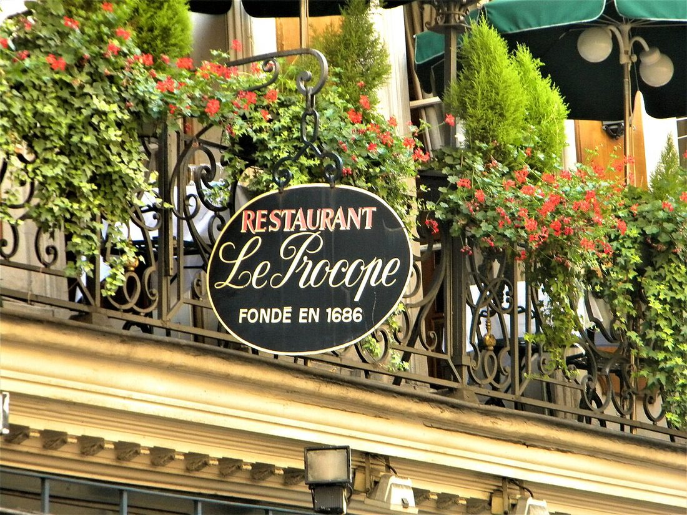
Intérieur d'un café européen ancien : dès le XVIIe siècle, on y lit, on y discute et on y traite des affaires autant qu'on y boit.Photo : Britchi Mirela · CC BY-SA 4.0 · Commons
2. Le vol du caféier et l'ère des plantations
Tant que le Yémen contrôle les graines fertiles, le café reste rare et cher. Selon la tradition indienne, le pèlerin soufi Baba Budan rapporte vers 1670 sept graines de Moka et les plante dans les collines de Chikmagalur, dans l'actuel Karnataka. Les Hollandais installent des caféiers à Java en 1696, puis en 1699 après une crue qui a détruit la première plantation. Dès 1711, le café de Java arrive à Amsterdam : le monopole yéménite est cassé.
Un plant pour le roi, un plant pour les Antilles
En 1714, le bourgmestre d'Amsterdam offre à Louis XIV un jeune caféier, installé au Jardin du Roi, l'actuel Jardin des Plantes. Ce plant et ceux du jardin botanique d'Amsterdam, tous issus de Java, sont les ancêtres de l'essentiel du café d'Amérique : les Hollandais en emportent au Suriname vers 1718, et l'officier de marine Gabriel de Clieu emporte un rejeton du plant parisien vers la Martinique, entre 1720 et 1723 selon les sources, en partageant avec lui, raconte-t-il, sa ration d'eau. De la Martinique, le caféier gagne Saint-Domingue et la Guadeloupe. En parallèle, la Compagnie des Indes plante à partir de 1715 des caféiers venus de Moka sur l'île Bourbon, l'actuelle Réunion. La variété qui en descend porte toujours le nom de Bourbon (module 3). Le Brésil entre en scène en 1727, quand l'officier Francisco de Melo Palheta rapporte des graines de Guyane française. Deux lignées génétiques très étroites, celle de Java et d'Amsterdam (le Typica) et celle de Bourbon, fondent ainsi presque tout l'arabica cultivé hors d'Éthiopie. Cette base génétique minuscule reste aujourd'hui une fragilité de la filière.
Sucre, café et esclavage
Le café du XVIIIe siècle est un produit de plantation, et la plantation repose sur l'esclavage. Saint-Domingue, colonie française, devient le premier producteur mondial : à la veille de 1789, l'île fournit environ la moitié du café consommé en Europe, davantage selon certains historiens, avec près de trois mille caféières travaillées par des esclaves déportés d'Afrique. La révolution haïtienne de 1791 détruit ce système ; le Brésil, qui prend le relais, emploie des esclaves jusqu'à l'abolition de 1888. Dites-le quand vous racontez l'histoire du café : la boisson des Lumières a été produite par des gens qui n'en buvaient pas.
Le XIXe siècle brésilien et les nouvelles origines
Au XIXe siècle, le Brésil devient le géant qu'il est resté : il fournit près des trois quarts du café du monde vers 1900, grâce aux immenses fazendas (domaines) de São Paulo et du Minas Gerais. L'Amérique centrale suit, le Guatemala et le Salvador surtout après 1870, au prix de l'expropriation de terres indigènes. Le Vietnam, où les Français avaient introduit le café, n'a vraiment développé son robusta qu'après 1986, avec la libéralisation de son économie.
Le XXe siècle : surproduction, quotas et crises
Un caféier met trois à quatre ans à produire : l'offre répond donc aux prix avec retard. Des prix élevés poussent à planter, et quatre ans plus tard la récolte arrive en masse et les cours s'effondrent. Pour sortir de ce cycle, pays producteurs et consommateurs signent en 1962 l'Accord international du café, administré dès 1963 par l'Organisation internationale du café (ICO), à Londres : chaque pays exportateur reçoit un quota, ajusté pour tenir le prix dans une fourchette. Le système tient, avec des interruptions, jusqu'au 4 juillet 1989, quand les membres, divisés sur le partage des quotas, suspendent les clauses économiques de l'accord. Le prix indicateur moyen passe d'environ 1,34 $ la livre sur les cinq années précédentes à 0,77 $ sur les cinq suivantes. L'essor du Vietnam et de grosses récoltes brésiliennes provoquent ensuite la « crise du café » de 2001-2003 : les cours tombent sous 50 cents la livre, sous les coûts de production de la plupart des fermes. L'ICO existe toujours, mais sans quotas.
Figure 01.1. La diffusion du café. En rouge le commerce, les cafés puis le café de spécialité (CoE : Cup of Excellence ; WBC : World Barista Championship) ; en vert les transferts de plants ; en brun la production et l'industrie ; en doré les prix et les accords.
3. Trois vagues et le café de spécialité
En 2002, la torréfactrice américaine Trish Rothgeb, qui signait alors Trish Skeie, décrit dans The Flamekeeper, la lettre de la Roasters Guild, l'histoire récente du café comme une suite de trois « vagues » (certaines sources datent l'article de 2003). L'image vaut surtout pour les États-Unis, et les vagues se superposent plus qu'elles ne se remplacent. C'est pourtant le vocabulaire commun du métier.
De la boîte de conserve au café de terroir
La première vague, de la fin du XIXe siècle aux années 1960, met le café à la portée de tous : café moulu en boîte sous vide, grandes marques, café soluble. Nescafé, lancé par Nestlé en 1938, répondait d'ailleurs à une demande du Brésil, qui cherchait un débouché pour ses excédents. Le café est une marchandise et son origine ne compte pas. En France, cette vague a donné le « petit noir » du comptoir, très torréfié et riche en robusta venu des colonies africaines.
La deuxième vague commence avec Peet's, à Berkeley en 1966, et Starbucks, à Seattle en 1971, devenu à la fin des années 1980 une chaîne de bars à espresso inspirée de Milan. Elle invente le coffee shop moderne : latte, cappuccino, gobelet à emporter, lieu où l'on s'installe. L'origine apparaît sur les sacs, mais les torréfactions restent foncées et le lait domine.
La troisième vague prend forme à la fin des années 1990 chez des torréfacteurs comme Intelligentsia à Chicago, Stumptown à Portland ou Counter Culture en Caroline du Nord, et dans les pays nordiques. Elle traite le café comme un produit de terroir : single origin (une seule origine, souvent une seule ferme), torréfaction plus claire qui laisse parler l'origine et le procédé, achat direct au producteur ou direct trade, méthodes douces (module 10), barista artisan. Certains annoncent une « quatrième vague » fondée sur la science, les données et l'automatisation ; le terme reste discuté.
Ce que « spécialité » veut dire
L'expression specialty coffee vient de l'importatrice américaine Erna Knutsen, qui l'emploie en 1974 pour désigner des cafés issus de microclimats particuliers. La SCAA naît aux États-Unis en 1982, la SCAE à Londres en 1998, et les deux fusionnent en janvier 2017 dans la Specialty Coffee Association (SCA). La définition pratique reste chiffrée : un café vert presque sans défauts, noté au moins 80 sur 100 au protocole de dégustation de la SCA (module 13). En 2021, la SCA a proposé une définition plus large : un café, ou une expérience de café, reconnu pour des attributs distinctifs qui lui donnent une valeur supplémentaire significative sur le marché. Le goût compte, mais aussi la traçabilité, l'histoire du lot ou le service.
Trois institutions structurent ce monde : la Cup of Excellence, née au Brésil en 1999, qui classe les meilleurs lots d'un pays puis les vend aux enchères en ligne ; le World Barista Championship, organisé depuis 2000 et remporté la première fois par le Norvégien Robert Thoresen ; le diplôme de Q Grader, créé en 2004 par le Coffee Quality Institute pour certifier les dégustateurs. À Paris, au début des années 2010, des pionniers comme Coutume (2011), Télescope (2012) ou la Belleville Brûlerie (2013) ont ouvert la voie aux torréfacteurs et coffee shops de spécialité d'aujourd'hui, dont Ïota.
4. La ceinture du café et les chiffres du monde
Le caféier ne supporte ni le gel ni les longues saisons froides. Il pousse dans une bande comprise entre environ 25° de latitude nord et 30° de latitude sud, la « ceinture du café », où environ 70 pays en produisent. L'altitude fait le reste, car la température baisse d'environ 0,6 °C tous les 100 m. L'arabica, qui préfère une moyenne annuelle de 18 à 21 °C environ, se cultive entre 1 200 et 2 200 m près de l'équateur (Éthiopie, Kenya, Colombie), et plus bas quand on s'en éloigne : souvent entre 800 et 1 300 m au Brésil. Le robusta, qui tolère mieux la chaleur, occupe les plaines et les basses collines. La fraîcheur ralentit la maturation des cerises et donne des grains plus denses, plus riches en acides et en sucres (modules 4 et 14).
Figure 01.2. La ceinture du café, entre environ 25° N et 30° S. Parts de la production par grande région calculées d'après les estimations de l'USDA pour 2025/26, arrondies. Schéma, pas carte : les positions ne sont pas géographiques.
Qui produit ?
Selon le département américain de l'Agriculture (USDA), la campagne 2025/26 a produit environ 178,8 millions de sacs de 60 kg, soit près de 10,7 millions de tonnes de café vert. Le Brésil en fournit environ 35 % et le Vietnam près de 18 % : à eux deux, plus de la moitié du café du monde (figure 01.3). Pour 2026/27, l'USDA prévoit un record de 189,7 millions de sacs, dont 71,9 millions au Brésil. L'arabica représente 53 à 58 % de la production selon les campagnes récentes, le robusta 42 à 47 %. La part du robusta a beaucoup progressé depuis les années 1990, avec l'essor du Vietnam et du conilon, le robusta brésilien : le Brésil est à la fois le premier producteur d'arabica et le deuxième de robusta. L'ICO publie des estimations un peu différentes : citez toujours la source et la campagne.
Figure 01.3. Les dix premiers pays producteurs en 2025/26, en millions de sacs de 60 kg, avec la part d'arabica (vert) et de robusta (brun). Source : USDA FAS, Coffee: World Markets and Trade, juillet 2026 ; les chiffres de l'ICO diffèrent légèrement.
Ce café vient surtout de petites fermes. L'ONG Enveritas, qui a mené plus de 20 000 entretiens dans une vingtaine de pays, en compte environ 12,5 millions, dont 95 % de 5 hectares ou moins ; le chiffre de 25 millions, souvent repris, serait surestimé. Selon Fairtrade, quelque 125 millions de personnes vivent du café.
Qui boit ?
La consommation mondiale atteint environ 173,5 millions de sacs en 2025/26 selon l'USDA, et l'Union européenne reste de loin le premier marché (tableau 01.1). Les pays producteurs boivent de plus en plus leur propre café : l'Éthiopie consomme près de 40 % de sa récolte. Par habitant, les pays nordiques dominent, avec environ 10 à 12 kg de café vert par an en Finlande ou en Norvège, contre 5 à 6 kg en France ; ces estimations varient selon les sources.
Tableau 01.1 · Les six premiers marchés de consommation en 2025/26 (estimations USDA, juillet 2026)
Marché
Millions de sacs de 60 kg
Part du total mondial
Union européenne
41,6
24 %
États-Unis
25,6
15 %
Brésil
22,3
13 %
Japon
6,7
4 %
Philippines
6,5
4 %
Chine
6,4
4 %
Monde
173,5
100 %
5. La filière, de la ferme à la tasse
Entre l'arbre et votre moulin, le café change plusieurs fois de mains et trois fois de forme : cerise, parche, café vert, puis grain torréfié. Chaque maillon ajoute un savoir-faire, un coût et une marge.
Le producteur cultive, cueille et vend ses cerises, ou son café déjà transformé s'il est équipé.
La station de lavage, souvent tenue par une coopérative, achète les cerises de centaines de familles et les transforme en parche (module 5).
Le moulin sec retire la parche, trie et calibre ; l'exportateur ensache et vend sous contrat (module 6).
L'importateur finance, transporte, dédouane et stocke, au Havre ou à Anvers par exemple.
Le torréfacteur goûte, achète, torréfie et vend ; le coffee shop extrait et sert ; le client paie la tasse, et à travers elle toute la chaîne.
Selon les pays s'ajoutent des collecteurs, des courtiers ou une vente centralisée. Au Kenya, une grande partie du café passe par les enchères hebdomadaires de Nairobi. En Éthiopie, la bourse des marchandises (ECX), créée en 2008, a longtemps imposé de vendre par ses entrepôts, où les lots étaient regroupés par région et par qualité : le nom des fermes disparaissait, jusqu'aux réformes de 2017 qui ont rouvert la vente directe.
Figure 01.4. La chaîne de valeur : le café descend de la ferme au client, l'argent remonte du client à la ferme. En vert les maillons des pays producteurs, en bleu le commerce international, en brun ceux des pays consommateurs.
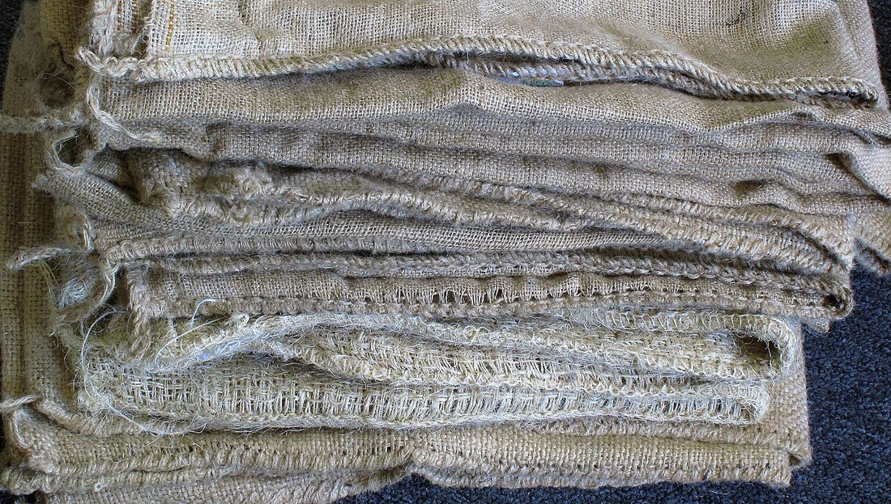
Sacs de café vert en jute. Leur poids varie de 60 à 70 kg selon les pays, mais les statistiques comptent toujours en sacs de 60 kg.Photo : Downtowngal · Public domain · Commons
Qui gagne quoi ?
Pour le café de supermarché, plusieurs études estiment la part des producteurs à moins de 10 % du prix final. Pour une tasse, faites le calcul. Un espresso de 18 g d'un café à 26,40 € HT le kilo contient environ 0,48 € HT de café. Il faut environ 1,2 kg de vert pour 1 kg de torréfié, soit 22 g de vert : si le producteur a touché l'équivalent de 5 € le kilo de vert, sa part est d'environ 11 centimes. Le reste paie le transport, la torréfaction, le loyer, les salaires, l'énergie, la TVA et les marges.
Le café de spécialité cherche à raccourcir et à éclairer cette chaîne. En direct trade, le torréfacteur achète à un producteur qu'il connaît, souvent sur plusieurs années et au-dessus du marché. Aucun label n'encadre ce terme : sa valeur dépend de ce que l'entreprise publie, par exemple un rapport de transparence donnant le prix FOB, payé au port d'exportation.
6. Les prix : de la bourse au kilo torréfié
L'arabica se cote à New York, sur le marché à terme ICE Futures US, en cents de dollar par livre de café vert (453,6 g) : c'est le contrat « C ». Le robusta se cote à Londres, sur ICE Futures Europe, en dollars par tonne. Un lot réel se vend au prix de la bourse plus ou moins un différentiel, qui reflète son origine, sa qualité et la demande. Le prix FOB (free on board, franco à bord) est celui du café chargé au port d'exportation. Les lots de spécialité se vendent souvent à prix fixe, mais le C reste le plancher du marché. Le minimum Fairtrade, lui, ne joue que si la bourse passe sous son niveau ; au-dessus, seule la prime s'ajoute (tableau 01.2).
Tableau 01.2 · Repères de prix du café (vérifiés en novembre 2026)
Prix
Où et en quelle unité
Repère
Arabica « C »
New York (ICE), cents de dollar par livre
record de 4,38 $ le 23 octobre 2025 ; environ 3 $ en octobre 2026
Robusta
Londres (ICE), dollars par tonne
plus de 5 800 $ en février 2025
Minimum Fairtrade, arabica lavé
dollars par livre FOB, plus 0,20 $ de prime
1,80 $ depuis août 2023 ; 2,00 $ pour les contrats signés dès le 1er décembre 2026
L'envolée de 2024-2025
Le café est une culture pérenne, concentrée dans quelques pays et sensible à la météo : un accident climatique au Brésil se lit le lendemain à New York. Après le gel de 2021, la sécheresse et la chaleur réduisent deux récoltes brésiliennes d'arabica de suite, et la sécheresse frappe le robusta du Vietnam. Selon l'USDA, les stocks mondiaux fondent de 15,5 millions de sacs entre 2020/21 et 2024/25, et la spéculation amplifie la hausse. Le 11 février 2025, l'arabica touche 4,30 $ la livre, record historique, et le robusta dépasse 5 800 $ la tonne le même mois. Les droits de douane américains, jusqu'à 50 % sur le café brésilien d'août à novembre 2025, désorganisent ensuite les flux, et l'arabica bat un nouveau record le 23 octobre 2025, à 4,38 $. Avec le retour de l'offre, il redescend autour de 3 $ en octobre 2026, encore deux à trois fois le niveau de 2019-2020.
Les torréfacteurs achètent leur vert des mois à l'avance : les hausses leur arrivent avec retard, les baisses aussi. La filière raisonne désormais en revenu vital : ce qu'il faut à une famille pour se nourrir, se loger, se soigner, scolariser ses enfants et faire face aux imprévus. Selon Enveritas, au moins 5,5 millions de producteurs vivent sous le seuil de pauvreté de 3,20 $ par jour.
7. Les défis d'aujourd'hui
L'arabica, plante de sous-bois d'altitude, supporte mal la chaleur. En 2015, l'équipe de Christian Bunn a projeté qu'environ la moitié des surfaces aujourd'hui favorables au café pourraient ne plus l'être en 2050, quel que soit le scénario d'émissions, avec de fortes pertes au Brésil et au Vietnam. Les zones propices remontent en altitude, souvent là où restent des forêts. Les maladies suivent : la rouille, le champignon qui avait ruiné Ceylan en 1869, a ravagé l'Amérique centrale en 2012-2013. Les réponses existent : ombrage, variétés résistantes (module 3), irrigation, nouvelles espèces comme Coffea stenophylla (module 2).
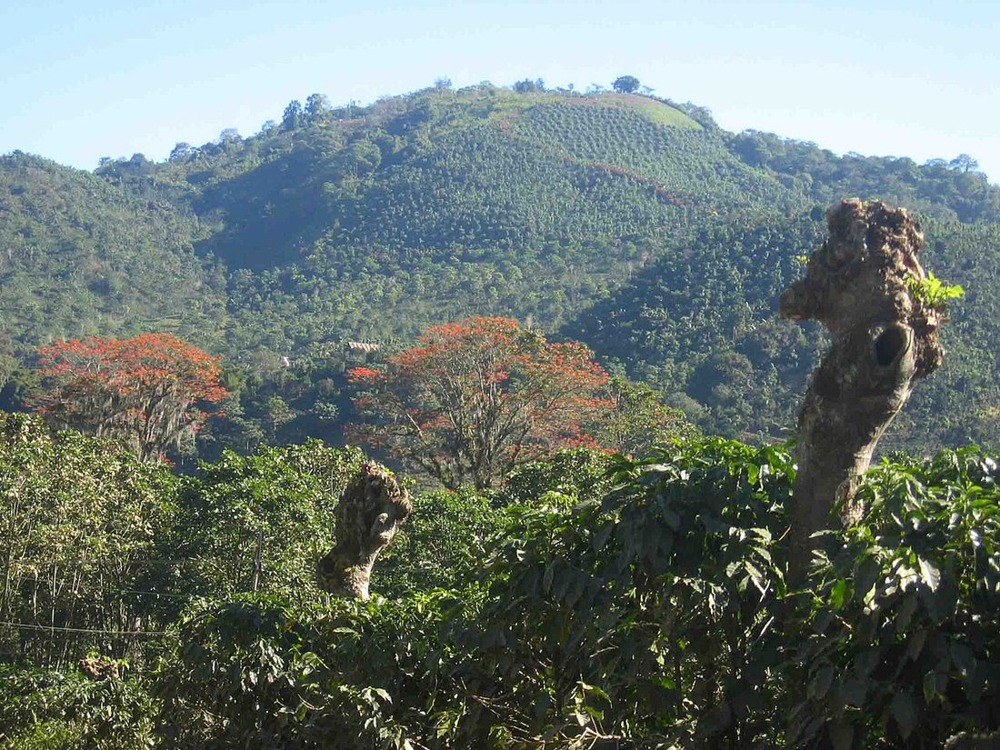
Caféiers cultivés sous des arbres d'ombrage. L'agroforesterie protège les plants de la chaleur et garde l'humidité des sols : c'est une des réponses au réchauffement.Photo : The original uploader was DirkvdM at English Wikipedia. · CC BY 1.0 · Commons
L'expansion des caféières a aussi contribué à la déforestation. Le règlement européen contre la déforestation (EUDR), adopté en 2023, oblige les entreprises qui mettent du café sur le marché européen à prouver, coordonnées GPS des parcelles à l'appui, qu'il ne vient pas de terres déboisées après le 31 décembre 2020. Repoussée deux fois, son application est fixée au 30 décembre 2026 pour les grandes et moyennes entreprises et au 30 juin 2027 pour les petites. Les importateurs sont en première ligne, et le risque est d'écarter les petits producteurs incapables de géolocaliser leurs parcelles.
Les défis sont aussi humains : dans beaucoup de régions, les producteurs vieillissent et les jeunes partent, faute de revenus ; les cueilleurs manquent et migrent, du Nicaragua vers le Costa Rica par exemple ; les femmes assurent une large part du travail mais possèdent rarement la terre. Le robusta, plus productif et plus résistant, gagne du terrain, jusque dans le café de spécialité.
À retenir
L'arabica est né dans les forêts d'Éthiopie et du Sud-Soudan, mais c'est au Yémen, au XVe siècle, qu'il est devenu une boisson et une culture.
Presque tout l'arabica cultivé hors d'Éthiopie descend de deux lignées étroites, Typica et Bourbon, diffusées au XVIIIe siècle.
Les plantations coloniales, puis le café brésilien du XIXe siècle, ont reposé sur l'esclavage.
Les quotas de l'Accord international du café ont encadré les prix de 1962 à 1989, et leur fin a ouvert une ère de prix volatils.
Un café de spécialité obtient au moins 80/100 au protocole de la SCA, qui le définit depuis 2021 par des attributs distinctifs créant de la valeur.
Selon l'USDA, le monde a produit environ 178,8 millions de sacs de 60 kg en 2025/26, dont plus de la moitié au Brésil et au Vietnam, sur quelque 12,5 millions de fermes.
L'arabica se cote à New York en cents par livre, le robusta à Londres en dollars par tonne, et l'arabica a culminé à 4,38 $ la livre en octobre 2025.
Dans une tasse, la part qui revient au producteur se compte en centimes.
La moitié des surfaces favorables au café pourrait disparaître d'ici 2050, et l'EUDR s'applique au café le 30 décembre 2026 pour les grandes entreprises.
Le caféier : botanique, espèces et anatomie de la cerise
Avant d'être une boisson, le café est la graine d'un fruit rouge porté par un arbuste tropical. Ce module pose les bases botaniques dont tout le reste dépend : le genre Coffea, les différences entre arabica et robusta, l'anatomie de la cerise et les exigences de la plante. Vous y gagnerez le vocabulaire de chaque sachet, de « caracoli » à « altitude ».
Objectifs
À la fin de ce module, vous saurez décrire le caféier et son cycle, de la pluie qui déclenche la floraison à la cerise mûre.
Vous saurez distinguer Coffea arabica et Coffea canephora par leur génétique, leur écologie et leur chimie, et situer les espèces secondaires.
Vous saurez nommer les couches de la cerise, dire laquelle est retirée par quel traitement et lire la composition d'un grain vert.
Vous saurez expliquer pourquoi l'altitude, l'ombrage et le sol modifient la densité du grain et le profil en tasse.
Vous saurez reconnaître les grandes maladies et les ravageurs du caféier, et mesurer les enjeux climatiques.
1. Une plante de la famille des Rubiacées
Le caféier appartient aux Rubiacées, la famille du gardénia et du quinquina. Le genre Coffea y regroupe environ 130 espèces décrites, toutes originaires des tropiques de l'Ancien Monde, dont 65 à Madagascar, 48 en Afrique continentale et 3 aux Mascareignes selon le décompte publié par Kew en 2021. Deux espèces seulement portent presque tout le commerce mondial, Coffea arabica et Coffea canephora ; les autres, sauvages et souvent menacées par la déforestation, forment une réserve de gènes.
Un arbuste à feuilles persistantes
À l'état sauvage, en sous-bois, un arabica peut atteindre 8 à 10 m. En plantation, la taille le maintient entre 2 et 4 m, à portée de main des cueilleurs. Ses feuilles persistantes et brillantes poussent par paires opposées le long des rameaux. Fleurs et fruits naissent en bouquets à l'aisselle des feuilles, sur le bois de la saison précédente, et un nœud qui a fructifié ne refleurit pas. La production se déplace donc vers l'extrémité des rameaux, et le producteur taille pour renouveler le bois productif.
Fleurs, pluies et cerises
Pendant la saison sèche, les boutons floraux se forment puis entrent en dormance. Une pluie suffisante, ou une irrigation, lève cette dormance : une dizaine de jours plus tard environ, l'arbre se couvre de fleurs blanches au parfum de jasmin. Chaque fleur ne vit que deux à trois jours. Là où la saison sèche est nette, comme au Brésil, une ou deux pluies suffisent : floraison et récolte sont groupées. Près de l'équateur, où deux saisons des pluies se succèdent dans l'année, comme en Colombie ou au Kenya, les floraisons se répètent. Une même branche porte alors fleurs, cerises vertes et cerises mûres, et une récolte secondaire (la mitaca colombienne) suit la principale. La cueillette y reste donc manuelle et sélective (voir le module 4).
Floraison d'un caféier : les fleurs, groupées aux nœuds, ne durent que deux à trois jours. Leur abondance annonce la récolte, sept à neuf mois plus tard.Photo : B.navez · CC BY-SA 4.0 · Commons
Le fruit est une drupe, comme la cerise ou la prune : une peau, une chair et un noyau. Le métier l'appelle « cerise », sans aucune parenté avec le cerisier. Il faut 7 à 9 mois entre la floraison et la maturité pour l'arabica, 9 à 11 mois pour le canephora, avec des écarts selon le climat (le CIRAD donne respectivement 6 à 8 et 8 à 12 mois). La cerise reste verte pendant que la graine se forme puis se remplit, et ne rougit qu'au cours des dernières semaines, quand les sucres s'accumulent dans la pulpe. Certaines variétés mûrissent jaunes ou orangées : c'est un caractère génétique, pas un signe de qualité (voir le module 3).
Cerises vertes, jaunissantes et rouges sur une même branche : là où les floraisons se succèdent, cette hétérogénéité impose plusieurs passages de cueillette.Photo : U. S. Fish and Wildlife Service - Northeast Region · Public domain · CommonsFigure 02.1. Le cycle d'une cerise d'arabica : après la pluie et une floraison de deux à trois jours, la cerise grossit puis se remplit en restant verte, et ne se colore qu'à la fin. Chez le canephora, le cycle dure 9 à 11 mois.
La vie d'un caféier
Un caféier issu de graine passe 6 à 12 mois en pépinière, puis fleurit pour la première fois après deux à trois ans au champ. La première vraie récolte arrive vers trois ou quatre ans, la pleine production entre 7 et 20 ans. Passé 20 à 30 ans, le producteur replante ou recèpe : il coupe le tronc à 30 ou 40 cm du sol pour faire repartir de jeunes tiges. L'arbre alterne aussi années fortes et années faibles, car une grosse récolte épuise ses réserves : très marquée au Brésil, premier producteur mondial, cette alternance pèse sur les cours.
2. Les espèces cultivées : arabica, canephora et les autres
L'USDA estime la production mondiale 2025-2026 à 178,8 millions de sacs de 60 kg, un record. Pour 2024-2025, son estimation de juin 2025 compte 98,7 millions de sacs d'arabica et 75,7 millions de robusta, soit environ 57 % et 43 % ; d'autres décomptes placent l'arabica vers 60 %. Le Brésil fournit près de 40 % du total, le Vietnam près de 18 %. Les autres espèces pèsent moins de 2 % des volumes.
Coffea arabica, l'hybride des hauts plateaux
Toutes les espèces de Coffea sont diploïdes, avec 22 chromosomes, sauf l'arabica, qui en possède 44. Il est allotétraploïde : il réunit les jeux complets de chromosomes de deux parents, C. canephora et C. eugenioides, croisés naturellement, probablement sur les hauts plateaux du sud-ouest de l'Éthiopie ou du Soudan du Sud. Le séquençage publié en 2024 dans Nature Genetics date cet événement de 350 000 à 610 000 ans. L'arabica est autogame : ses fleurs se fécondent elles-mêmes dans environ 90 % des cas, et ses semis reproduisent fidèlement la plante mère. Mais sa diversité génétique est faible, ce qui le rend vulnérable aux maladies, la rouille en tête. Il préfère 1 000 à 2 200 m d'altitude et 18 à 22 °C de moyenne. Ses grains contiennent environ 1,2 % de caféine, moins d'acides chlorogéniques que le canephora, mais nettement plus de saccharose et de lipides : d'où plus de douceur, d'acidité et de complexité en tasse.
Coffea canephora, dit robusta
Le canephora, que le commerce appelle robusta, est diploïde et allogame : ses fleurs sont auto-incompatibles et chaque graine naît du croisement de deux arbres. On le multiplie donc souvent par bouturage, en clones sélectionnés. Originaire des forêts humides de basse altitude d'Afrique centrale et occidentale, il pousse de 0 à 800 m, supporte 22 à 26 °C de moyenne et plus, produit davantage et résiste à la rouille. Ses grains, plus ronds, contiennent presque deux fois plus de caféine (environ 2,2 %), plus d'acides chlorogéniques, environ deux fois moins de lipides et nettement moins de saccharose, d'où un corps lourd et une amertume marquée. Il alimente le café soluble et les mélanges espresso italiens, où il apporte corps et crema. Le Vietnam en est le premier producteur, devant le Brésil, où on l'appelle conilon.
Liberica, excelsa, stenophylla, eugenioides
Coffea liberica, d'Afrique de l'Ouest, est un grand arbre aux grains très gros et asymétriques. Il tolère la chaleur des plaines et se boit surtout sur place, aux Philippines (le barako), en Malaisie et en Indonésie : tasse boisée, fumée, aux notes de fruits très mûrs. L'excelsa, cultivé notamment au Soudan du Sud et en Ouganda, a été reclassé en 2006 comme variété du liberica (C. liberica var. dewevrei) ; des travaux génomiques récents de Kew proposent de redistinguer plusieurs espèces dans ce groupe.
Coffea stenophylla, d'Afrique de l'Ouest, était exporté vers l'Europe jusqu'au début du XXe siècle, puis abandonné au profit du robusta. Absent des relevés en Sierra Leone depuis 1954, il y a été retrouvé par une équipe de Kew en décembre 2018. Selon l'étude publiée en 2021 dans Nature Plants (Davis et al.), il pousse sous une moyenne annuelle de 24,9 °C, plus de 6 °C au-dessus de l'optimum de l'arabica et près de 2 °C au-dessus du robusta, et un jury professionnel a jugé à l'aveugle sa tasse comparable à un arabica.
Coffea eugenioides, l'un des parents de l'arabica, pousse en Afrique de l'Est. Ses graines ne contiennent que 0,3 à 0,6 % de caféine et donnent une tasse très douce, presque sans amertume. Ses faibles rendements en font un café de collection, que le champion du monde barista 2021, le Colombien Diego Campos, a utilisé dans sa routine. Enfin Coffea racemosa, des côtes du Mozambique, résiste à la sécheresse ; croisé avec l'arabica au Brésil, il lui a transmis une résistance à la mineuse des feuilles.
Tableau 02.1. Arabica, canephora et liberica : repères comparés (ordres de grandeur ; composition en % de la matière sèche du grain vert)
Critère
C. arabica
C. canephora (robusta)
C. liberica (dont excelsa)
Chromosomes
44 (tétraploïde)
22 (diploïde)
22 (diploïde)
Altitude de culture
1 000 à 2 200 m
0 à 800 m
surtout en plaine
Température moyenne
18 à 22 °C
22 à 26 °C et plus
chaleur et humidité
Caféine
≈ 1,2 % (0,9 à 1,5)
≈ 2,2 % (1,7 à 2,7)
peu documentée
Acides chlorogéniques
4 à 8 %
7 à 11 %
peu documentés
Saccharose
6 à 9 %
1 à 5 %
peu documenté
Lipides
15 à 17 %
7 à 10 %
peu documentés
Rendement
moyen
élevé
faible, arbres hauts
Forme du grain
ovale, sillon sinueux
rond, sillon droit
très gros, asymétrique
Prix
le plus élevé
moins cher que l'arabica
marché de niche
Goût typique
acidité, douceur, arômes floraux et fruités
corps, amertume, bois, céréale
boisé, fumé, fruits très mûrs
Figure 02.2. Les deux espèces qui font le marché, avec leur part de la production mondiale 2024-2025 selon l'USDA.
3. Anatomie de la cerise, de la peau à l'embryon
Couper une cerise mûre en deux, c'est voir d'un coup ce que les modules suivants vont retirer, fermenter, sécher ou torréfier. De l'extérieur vers l'intérieur, on traverse six tissus.
Exocarpe
La peau, fine et lisse, verte puis rouge ou jaune à maturité.
Mésocarpe
La pulpe, chair sucrée. Sa partie interne, le mucilage, est un gel translucide et collant, riche en eau, en sucres et en pectines, qui adhère à la parche.
Endocarpe
La parche, coque fibreuse qui enveloppe chaque graine et devient cassante, couleur paille, une fois sèche.
Pellicule argentée
Tégument très fin collé à la graine, reste du périsperme qui l'a nourrie ; ce qui en subsiste après le décorticage part en paillettes à la torréfaction (chaff).
Endosperme
La graine, notre « grain » : un tissu de réserve dur, replié sur lui-même, dont le pli forme le sillon de la face plate.
Embryon
Minuscule, logé à la base du grain, côté bombé : c'est lui qui germe quand on sème la graine.
Figure 02.3. Coupe transversale d'une cerise mûre : sous la peau et la pulpe, le mucilage entoure deux graines accolées par leur face plate, chacune dans sa parche et sa pellicule argentée. En encart, le caracoli et sa graine unique, ronde.
Deux graines, parfois une seule
Les deux graines d'une cerise se serrent l'une contre l'autre et s'aplatissent mutuellement, d'où leur face plate et leur dos bombé. Quand une seule se développe, parce que la seconde n'a pas été fécondée ou a avorté, rien ne l'aplatit plus : elle devient ovoïde, presque ronde. C'est le caracoli (peaberry), environ 5 % des cerises, jusqu'à 10 % selon les sources. On le trie à part, et le torréfacteur le torréfie séparément, car il roule autrement dans le tambour. Le grain éléphant est l'anomalie inverse : plusieurs graines imbriquées dans une même loge, qui se séparent ensuite en fragments creux, les coquilles, comptées comme défauts.
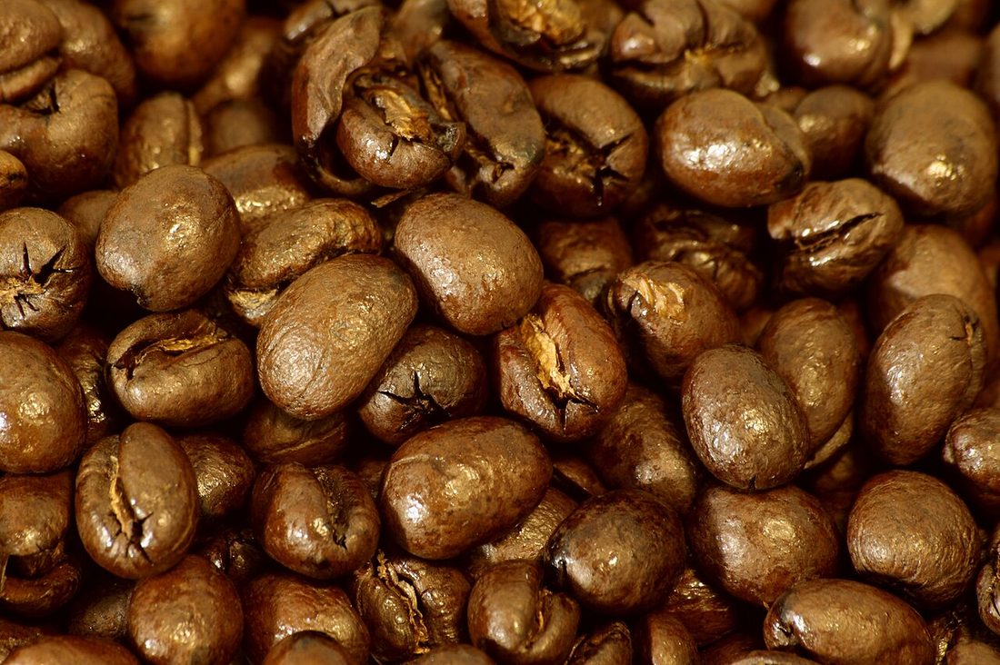
Caracolis : une seule graine par cerise, ovoïde, sans face plate. Triés à part, ils sont parfois vendus comme un lot distinct.Photo : Ragesoss · CC BY-SA 3.0 · Commons
Ce que contient le grain vert
Le grain vert n'a pas encore le goût du café : les arômes naîtront à la torréfaction, quand ses constituants réagiront entre eux (voir les modules 7 et 13). Sa composition annonce pourtant une bonne part du goût. Ainsi, la douceur d'un café ne vient pas d'un sucre resté dans la tasse : la torréfaction détruit l'essentiel du saccharose, et ce sont ses produits de dégradation qui donnent l'impression de douceur.
Tableau 02.2. Composition moyenne du grain vert (en % de la matière sèche, sauf l'eau) et devenir de chaque constituant
Constituant
Arabica
Robusta
À la torréfaction et en tasse
Eau
10 à 12 % du poids
Trop humide, le grain moisit ; trop sec, il vieillit vite.
Polysaccharides
34 à 44 %
48 à 55 %
Charpente du grain ; ils donnent du corps et stabilisent la crema.
Saccharose
6 à 9 %
1 à 5 %
Détruit en grande partie : il nourrit caramélisation et réaction de Maillard (arômes, couleur, douceur perçue).
Lipides
15 à 17 %
7 à 10 %
Retiennent les arômes et donnent la texture ; ils rancissent avec le temps.
Protéines et acides aminés
10 à 13 %
Réagissent avec les sucres : notes grillées, pigments bruns.
Acides chlorogéniques
4 à 8 %
7 à 11 %
Se dégradent en composés amers et astringents.
Acides organiques (citrique, malique)
≈ 1,5 à 2 %
Portent l'acidité ; diminuent quand la torréfaction se prolonge.
Caféine
0,9 à 1,5 %
1,7 à 2,7 %
Stable à la chaleur ; amère, mais minoritaire dans l'amertume totale.
Trigonelline
≈ 1 %
≈ 0,7 %
Se dégrade en niacine (vitamine B3) et en composés aromatiques.
Minéraux
≈ 4 %, surtout du potassium
Effet discret sur le goût.
Quelle couche part avec quel traitement
Cette anatomie donne la clé des traitements détaillés au module 5. En voie humide, ou lavé, un dépulpeur arrache peau et pulpe, puis la fermentation ou une machine retire le mucilage : le grain sèche dans sa parche. En nature, ou voie sèche, la cerise entière sèche avec toutes ses couches. Le honey process (traitement « miel ») est intermédiaire : on dépulpe, mais la parche sèche avec tout ou partie de son mucilage. Dans les trois cas, ce qui entoure encore le grain sec est retiré au décorticage (voir le module 6). Le mucilage, chargé de sucres, est la couche qui pèse le plus sur le goût.
4. Ce qu'il faut au caféier : climat, altitude, sol et ombre
L'optimum de l'arabica se situe vers 18 à 22 °C de moyenne annuelle. Au-delà de 30 °C, il souffre : feuilles qui jaunissent, fleurs qui avortent, cerises qui mûrissent trop vite. Le gel tue feuilles et jeunes rameaux, comme lors des gelées de juillet 2021 au Brésil. La référence agronomique classique lui donne 1 200 à 1 800 mm de pluie par an, avec une saison sèche de deux à trois mois qui synchronise la floraison. Le canephora tolère plus de chaleur et plus de 2 000 mm de pluie, mais pas le froid.
L'altitude, ou plutôt la fraîcheur
Sous les tropiques, la température baisse d'environ 0,6 °C tous les 100 m. En altitude, des nuits fraîches ralentissent la maturation : la graine a plus de temps pour accumuler sucres, acides et précurseurs d'arômes. Le grain devient plus dense et plus dur, la tasse plus acide et plus complexe. D'où les classements par altitude d'Amérique centrale : SHB (grain strictement dur) au Guatemala ou au Costa Rica, SHG (cultivé strictement en altitude) au Honduras ou au Mexique, avec des seuils d'environ 1 200 à 1 350 m selon les pays. Mais c'est la température qui agit, pas l'altitude elle-même. Loin de l'équateur, la même fraîcheur se trouve plus bas : à Hawaï, le Kona pousse sous les 1 000 m, quand l'Éthiopie et le Kenya cultivent souvent entre 1 500 et 2 200 m. L'exposition et l'ombrage jouent aussi.
Figure 02.4. La règle « plus haut, plus dense, plus acide » : c'est la fraîcheur nocturne qui ralentit la maturation, et loin de l'équateur, on la trouve plus bas.
Sol, ombre et conduite de la plantation
Le caféier aime les sols profonds, bien drainés et légèrement acides, comme les sols volcaniques d'Amérique centrale ou du Kenya, riches en minéraux. Dans son milieu d'origine, il pousse sous la forêt. Beaucoup de producteurs gardent cet ombrage en agroforesterie, sous des Inga ou des bananiers : l'ombre rafraîchit les feuilles, ralentit la maturation comme l'altitude, protège le sol et abrite oiseaux et insectes utiles, au prix d'un rendement plus faible. Le Brésil a fait le choix inverse : plein soleil, plantations denses et mécanisées, irrigation et fertilisation.
Caféiers sous ombrage : les arbres d'ombre rafraîchissent la plantation et abritent une faune utile.Photo : The original uploader was DirkvdM at English Wikipedia. · CC BY 1.0 · Commons
L'arabica se multiplie par graine, puisqu'il est autogame ; le canephora se bouture. Les hybrides F1 modernes, qui ne se reproduisent pas fidèlement par graine, sont multipliés par embryogenèse somatique : des embryons produits en laboratoire à partir de fragments de feuille (voir le module 3). Les rendements varient énormément : de l'ordre de 25 à 40 sacs de café vert par hectare au Brésil, contre 12 à 15 en Éthiopie selon l'USDA.
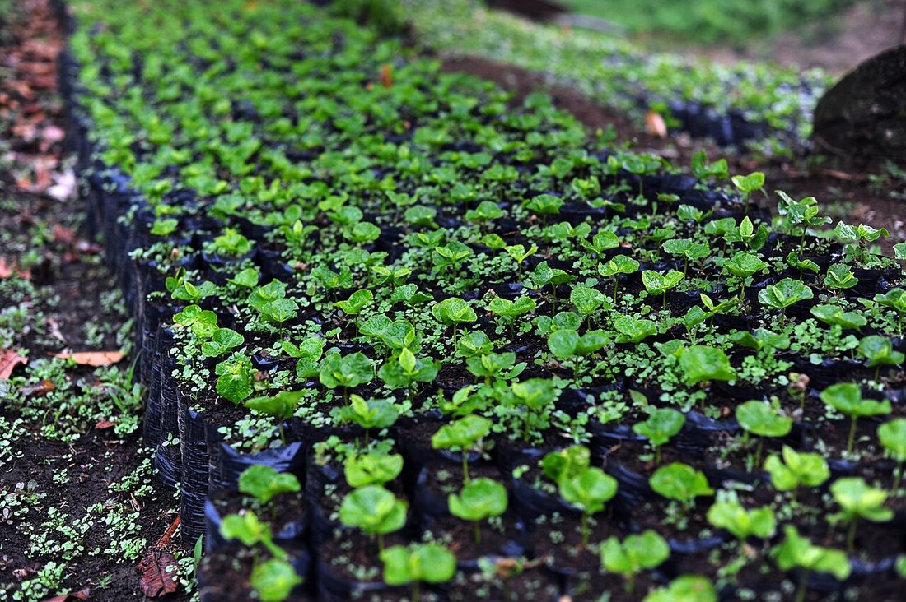
Pépinière de caféiers : les jeunes plants y passent 6 à 12 mois avant d'être repiqués au champ.Photo : CIAT · CC BY-SA 2.0 · Commons
5. Maladies, ravageurs et climat
La rouille orangée
La rouille orangée est due à un champignon, Hemileia vastatrix. Ses spores, portées par le vent et la pluie, germent dans un film d'eau à la face inférieure de la feuille, y pénètrent par les stomates et forment des taches poudreuses orange. La feuille tombe et l'arbre affaibli produit moins l'année suivante. La maladie profite donc des périodes chaudes et humides. En 2012 et 2013, une épidémie sans précédent a frappé l'Amérique centrale : le réseau régional de recherche PROMECAFÉ estimait les pertes à 2,7 millions de sacs pour la campagne 2012-2013, et des centaines de milliers d'emplois ont été perdus. Météo favorable, prix bas qui avaient réduit l'entretien, variétés sensibles comme le Caturra : les causes se sont cumulées. Les variétés issues de l'Hybride de Timor résistent mieux, mais le champignon compte plus de 55 races et finit par contourner certaines résistances.
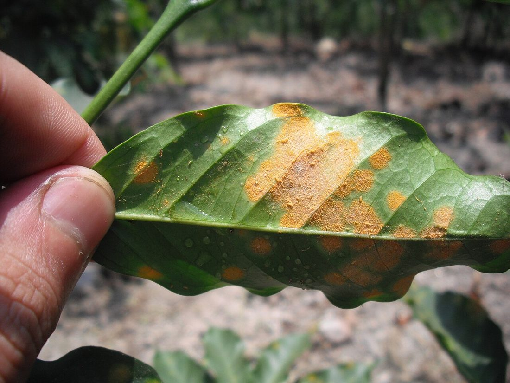
Rouille orangée : les taches poudreuses, à la face inférieure des feuilles, sont des amas de spores.Photo : Smartse · CC BY-SA 3.0 · Commons
Anthracnose des baies, scolyte et autres ennemis
L'anthracnose des baies (CBD), due au champignon Colletotrichum kahawae, noircit les cerises vertes. Signalée au Kenya en 1922, elle reste limitée à l'Afrique, surtout en altitude par temps frais et humide ; les variétés kényanes Ruiru 11 et Batian lui résistent. Le scolyte des baies, ou broca (Hypothenemus hampei), est un coléoptère de moins de 2 mm : la femelle perce la cerise et pond dans la graine, que les larves dévorent. Il aime la chaleur et remonte avec elle. En Afrique de l'Est, il était rare au-dessus de 1 500 m jusqu'au début des années 2000 ; sur le Kilimandjaro, Jaramillo et al. (2011) le trouvaient environ 300 m plus haut qu'une décennie plus tôt. S'y ajoutent les nématodes, qui attaquent les racines, l'ojo de gallo (Mycena citricolor), qui crible de taches rondes les feuilles en parcelle humide et très ombragée, et la mineuse, dont les larves creusent les feuilles. La lutte intégrée combine variétés résistantes, ombrage raisonné, ramassage des cerises tombées, pièges à alcool et champignon Beauveria bassiana, qui parasite le scolyte ; la chimie vient en dernier recours.
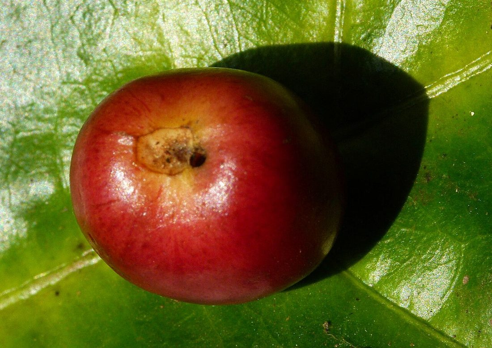
Scolyte des baies : la femelle perce la cerise pour pondre dans la graine, et les grains rongés finissent écartés au tri.Photo : L. Shyamal · CC BY-SA 3.0 · Commons
Le climat change la carte
Le réchauffement aggrave ces menaces : températures plus élevées, pluies irrégulières, ravageurs qui gagnent en altitude. Selon Bunn et al. (2015), les surfaces favorables au café pourraient reculer d'environ 50 % d'ici 2050, quel que soit le scénario d'émissions, avec de fortes pertes au Brésil et au Vietnam et quelques gains en Afrique de l'Est et en Asie, en partie sur des forêts. Pour s'adapter : variétés tolérantes, ombrage, irrigation, plantation plus haut au risque de défricher, et espèces nouvelles comme le stenophylla ou l'excelsa.
6. Du champ au grain vert : le cycle complet
Entre la fleur et le sac de café vert prêt à partir, il s'écoule environ un an. Les cerises mûres sont récoltées (module 4), puis le traitement retire tout ou partie des couches du fruit (module 5). Le café sèche ensuite jusqu'à 10 à 12 % d'humidité, repose quelques semaines pour se stabiliser, puis passe au moulin sec : décorticage, tri par taille, densité et couleur, mise en sacs de 60 kg et export (module 6). Il faut environ 5 à 6 kg de cerises fraîches pour obtenir 1 kg de café vert. Une erreur à n'importe quelle étape se retrouve en tasse, et aucune torréfaction ne la rattrapera.
Figure 02.5. Du champ au grain vert en huit étapes, avec le module qui détaille chacune : environ un an de la floraison à l'export.
Au comptoir, cette frise devient une grille de lecture. Une étiquette de café de spécialité résume souvent ce parcours : pays et région, altitude, variété, traitement, parfois date de récolte. Chaque mention renvoie à une étape de la chaîne, donc à un module de la formation, et vous aide à expliquer à un client d'où vient ce qu'il goûte.
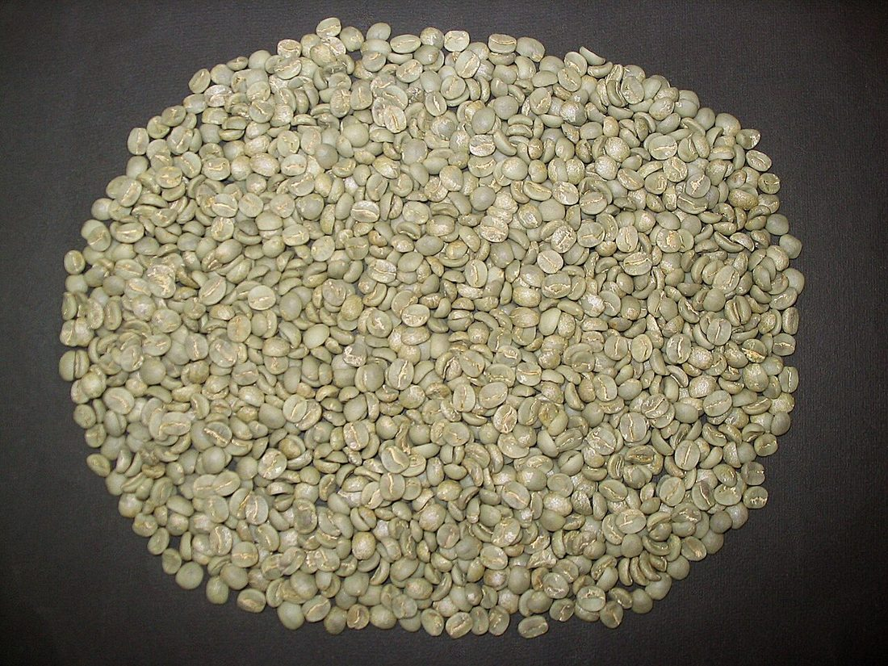
Café vert prêt à l'export. La taille, la couleur et l'homogénéité des grains renseignent déjà sur le soin apporté au tri.Photo : Fernando Rebêlo · CC BY-SA 3.0 · Commons
À retenir
Le caféier est un arbuste du genre Coffea, de la famille des Rubiacées, qui compte environ 130 espèces décrites.
Une pluie lève la dormance des boutons floraux ; la fleur vit deux à trois jours, et la cerise mûrit en 7 à 9 mois chez l'arabica.
L'arabica, à 44 chromosomes, est né d'un croisement naturel entre C. canephora et C. eugenioides ; autogame, il est génétiquement peu divers.
Le robusta, diploïde et allogame, pousse en plaine, résiste à la rouille et contient presque deux fois plus de caféine que l'arabica.
De l'extérieur vers l'intérieur, la cerise se compose de la peau, de la pulpe et du mucilage, de la parche, de la pellicule argentée et du grain.
Le caracoli est une graine unique, devenue ronde faute de voisine dans sa cerise ; ce n'est pas une variété.
Le lavé retire pulpe et mucilage avant le séchage, le nature sèche la cerise entière, et le honey garde tout ou partie du mucilage.
À latitude égale, l'altitude apporte des nuits fraîches qui ralentissent la maturation et donnent un grain plus dense, à l'acidité plus vive.
La rouille orangée, l'anthracnose des baies et le scolyte sont les principales menaces sanitaires, et le réchauffement pourrait réduire de moitié les surfaces favorables au café d'ici 2050.
James Hoffmann, Le grand cours de café (édition française de The World Atlas of Coffee), chapitres sur la plante, les espèces et les régions de culture.
Deux caféiers plantés côte à côte, même sol, même pluie, même cueilleur. L'un donne un café rond qui sent la noisette, l'autre une tasse qui sent la bergamote et le jasmin. Ce qui les sépare tient dans une ligne du sachet que presque personne ne lit : la variété. On va apprendre à la lire, à la raconter, et à savoir ce qu'elle promet et ce qu'elle ne promet pas.
U. S. Fish and Wildlife Service - Northeast Region · Public domain · Commons
Aligne trois sachets sur le comptoir. Sur le premier, à la ligne « variété », il est écrit Heirloom. Sur le deuxième, « Caturra, Catuaí ». Sur le troisième, « Geisha ». Ces trois mots ne désignent pas du tout le même genre de chose. Le premier veut dire « on ne sait pas trop, mais c'est éthiopien ». Le deuxième nomme deux variétés précises, sélectionnées au Brésil au XXe siècle, qui poussent mélangées sur la même ferme. Le troisième désigne une population venue d'une forêt d'Éthiopie, passée par trois pays et deux centres de recherche avant de devenir le café le plus cher du monde.
Le mot « variété » sert à tout dans le café. On l'emploie pour une espèce entière (le robusta), pour une mutation d'un seul gène (Caturra), pour un mélange de lignées vendu sous un seul nom (Castillo), pour une population forestière que personne n'a jamais sélectionnée. Tant que ces mots restent flous, tu ne peux ni lire une fiche ni répondre juste à un client. Alors on les pose, du plus large au plus étroit.
Espèce
Le rang botanique de base. Coffea arabica, Coffea canephora (le robusta), Coffea liberica. On connaît plus de 130 espèces de caféiers, on en boit surtout deux. Deux espèces se croisent rarement, et quand ça arrive, ça fait date (tu le verras avec l'hybride de Timor).
Variété
Dans une espèce, un groupe de plantes qui partagent des caractères héritables et stables : hauteur, couleur des jeunes feuilles, couleur du fruit, forme du grain, comportement face aux maladies, profil en tasse. Bourbon, Typica, SL28 sont des variétés d'arabica.
Cultivar
Contraction de cultivated variety. Une variété sélectionnée et entretenue par l'homme. En pratique, tout le monde dit « variété » à la place, et les anglophones disent souvent varietal, ce qui fait hurler les botanistes. Ne te bats pas là-dessus.
Lignée
La descendance d'un ou de quelques arbres choisis, multipliée par graines génération après génération. SL28 descend d'un seul arbre repéré en 1935. Toute la lignée Typica remonte, pour presque tout ce qui pousse en Amérique, à un plant du jardin botanique d'Amsterdam.
Landrace, ou variété-population
Une population locale, hétérogène, façonnée par le milieu et par les paysans plutôt que par un sélectionneur. C'est ce qui pousse dans les forêts et les jardins d'Éthiopie. Le mot anglais heirloom (« de famille ») dit à peu près la même chose, en plus vague, et c'est surtout un mot de marketing.
Mutation
Le changement spontané d'un gène, transmis aux descendants. Un jour, dans un champ, un arbre sort du lot : plus petit (Caturra), géant (Maragogipe), en forme de sapin avec moitié moins de caféine (Laurina). Quelqu'un le remarque, récolte ses graines, et une variété naît.
Hybride F1
La première génération (first filial) d'un croisement entre deux parents éloignés. Elle est vigoureuse, souvent plus productive que ses deux parents. Mais si tu replantes ses graines, la génération suivante part dans tous les sens : il faut la multiplier par bouture ou en laboratoire.
Composite
Un mélange volontaire de lignées sœurs, vendu sous un seul nom, pour que la résistance aux maladies repose sur plusieurs gènes à la fois. Castillo, en Colombie, et Ruiru 11, au Kenya, sont des composites.
Pourquoi un arabica reste un arabica
Il y a une raison simple pour laquelle on peut parler de variétés stables chez l'arabica, et beaucoup moins chez le robusta. La fleur d'arabica se féconde elle-même dans la très grande majorité des cas, avant même de s'ouvrir complètement. Les graines d'un Bourbon donnent donc des Bourbon, et un producteur peut replanter ses propres semences pendant des générations sans que la variété dérive beaucoup. Le robusta fait l'inverse : sa fleur doit recevoir le pollen d'un autre arbre, compatible. Chaque graine donne un individu différent de ses parents. C'est pour ça que les « variétés » de robusta sont souvent des assemblages de clones, multipliés par bouture (on y revient à la section 10).
Cette autofécondation a un prix. Une espèce qui se féconde elle-même brasse peu ses gènes. Et l'arabica part déjà d'une base très étroite.
Une seule plante au départ, quelques arbres à l'arrivée
L'arabica est né dans le sud-ouest de l'Éthiopie et sur le plateau de Boma, au Soudan du Sud, du croisement naturel de deux espèces sauvages, Coffea canephora et Coffea eugenioides. Ce croisement a doublé son nombre de chromosomes : 44 chez l'arabica, 22 chez ses parents. Il s'est produit une seule fois, ou presque, et toute l'espèce descend de cette plante. Les forêts éthiopiennes gardent encore la plus grande partie de la diversité qui s'est accumulée depuis.
Ensuite, deuxième rétrécissement. Ce qui a quitté l'Éthiopie pour le Yémen, puis le Yémen pour le reste du monde, tenait dans quelques sacs de graines et quelques plants. La lignée Typica, qui a peuplé l'Asie puis l'Amérique, remonte surtout à un caféier transporté de Java au jardin botanique d'Amsterdam en 1706. La lignée Bourbon remonte aux quelques plants qui ont survécu sur l'île Bourbon (La Réunion) à trois introductions françaises, entre 1708 et 1718. Selon World Coffee Research, 97,55 % des cultivars du Brésil dérivent de ces deux lignées.
1plante ancêtre de toute l'espèce arabica
44chromosomes chez l'arabica, 22 chez le robusta
1706le plant de Java arrive à Amsterdam
97,55 %des cultivars brésiliens issus de Typica et Bourbon
Pense à une cave où tous les vins viendraient de deux pieds de vigne. Tant que le climat est doux et qu'aucune maladie ne trouve la faille, tout va bien. Le jour où un champignon sait attaquer ces deux pieds-là, il sait attaquer toute la cave. C'est exactement ce qui est arrivé avec la rouille, au Sri Lanka dans les années 1870 puis en Amérique centrale en 2012. Toute la recherche variétale moderne, des Catimors aux hybrides F1, est une course pour réintroduire de la diversité dans une espèce qui en manque.
2. Ce que la variété décide, et ce qu'elle laisse aux autres
Pour un producteur, choisir une variété engage vingt ou trente ans de récoltes. Un caféier commence à produire vers sa troisième ou quatrième année et peut tenir des décennies. On ne change pas de variété comme on change de recette de brunch. Ça explique pourquoi des variétés à la réputation gustative moyenne ont envahi des pays entiers : au champ, elles résolvaient un problème qui coûtait plus cher que quelques points de dégustation.
Au champ
Ce que la variété fixe sur la ferme
Critère
Pourquoi le producteur s'en soucie
Exemple
Hauteur, port
Un arbre bas se cueille sans échelle et se plante serré : plus de pieds par hectare, donc plus de cerises.
Typica, 3 000 à 4 000 pieds/ha ; Caturra, 5 000 à 10 000.
Rendement
Ce que la ferme vend chaque année. Il dépend aussi de l'engrais, de l'âge et de la taille.
Bourbon : couramment 20 à 30 % de plus que Typica.
Première récolte
Une variété lente laisse le producteur sans revenu plus longtemps après une replantation.
Typica : vers la quatrième année. Batian : dès la deuxième.
Maladies
Rouille, anthracnose des baies (CBD), nématodes. Une variété sensible impose des fongicides ou des pertes.
Caturra très sensible à la rouille ; Castillo résistant.
Altitude optimale
Certaines variétés ne donnent leur meilleur qu'en haut, d'autres tiennent mieux la chaleur.
Gesha brille au-dessus de 1 500 m au Panama ; Catuaí tient bien plus bas.
Taille du grain
Le gros calibre se paie mieux sur certains marchés, et il torréfie différemment.
Maragogipe et Pacamara, grains énormes ; Laurina, petits et pointus.
Figure 3.1. Quatre ports à la même échelle (hauteurs indicatives d'arbres taillés, traits bruns = étages de branches). Un seul gène rapproche les étages du Caturra : l'arbre reste bas et on en plante deux fois plus à l'hectare. Densités : catalogue World Coffee Research et Cenicafé.
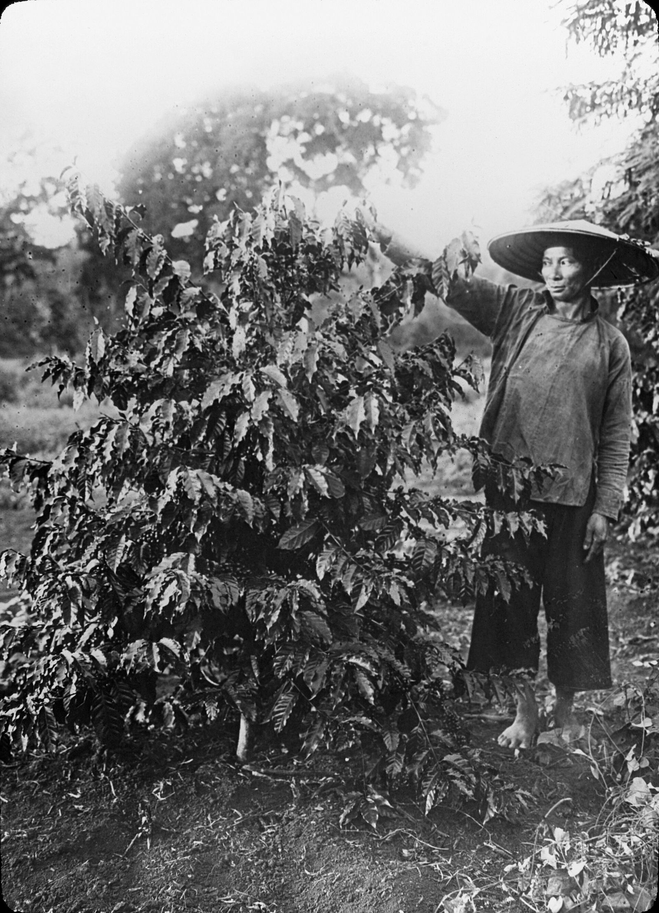
Un caféier arabica de trois ans, photographie ancienne conservée à la BnF. À cet âge, l'arbre donne ses premières vraies récoltes.Photo : auteur non renseigné · Public domain · CommonsDu café vert. Taille et forme des grains bougent avec la variété, mais aussi avec l'altitude et la nutrition de l'arbre.Photo : Fernando Rebêlo · CC BY-SA 3.0 · Commons
Dans la tasse
Fais l'analogie avec le vin, tu la tiens déjà. La variété, c'est le cépage. Un Gamay ne deviendra jamais un Syrah, quelle que soit la cave. Mais un Gamay de grand cru du Beaujolais et un Gamay de plaine vendangé trop tôt n'ont presque rien en commun. Le café marche pareil. La variété fixe une direction et un potentiel : le type d'arômes (floral chez le Gesha, cassis et tomate chez les SL kényans, chocolat et noisette chez beaucoup de Bourbon brésiliens), le genre d'acidité, la douceur, le corps.
Tout le reste est entre les mains d'autres gens. L'altitude et le climat règlent la vitesse de maturation : plus c'est haut et frais, plus la cerise mûrit lentement, plus le grain est dense et l'acidité dessinée. La cueillette décide de la maturité. Le process (module 5) peut amplifier ou écraser ce que la variété apporte. Le torréfacteur et toi, au moulin, faites le dernier bout. Un Gesha cueilli vert et séché à la va-vite sera moins bon qu'un Catuaí soigné de bout en bout. Ça arrive tous les ans.
La variété, c'est un plafond. Personne ne te garantit que le producteur l'a atteint.
Ce que les chimistes mesurent confirme l'image. Les variétés diffèrent dans leur teneur en caféine (Laurina en a moitié moins), en acides chlorogéniques, en sucres, en lipides, en précurseurs d'arômes. Mais quand on cultive les mêmes variétés à plusieurs altitudes, l'effet du lieu est souvent aussi fort que celui de la génétique. L'essai Castillo contre Caturra, en Colombie, l'a montré en 2014 (section 9) : les dégustateurs ne séparaient pas les deux variétés, ils séparaient les fermes.
3. L'arbre de famille
Tu vas croiser une trentaine de noms dans ce module. Pour ne pas t'y perdre, accroche chacun à l'une des quatre racines du schéma ci-dessous. Presque toutes les variétés que tu liras sur un sachet sortent de là.
Les éthiopiennes, en vert : des milliers de populations locales, presque toute la diversité de l'espèce. Le Gesha et les sélections de Jimma en viennent.
Typica, en brun : la lignée partie du Yémen vers l'Inde, Java, Amsterdam, puis l'Amérique.
Bourbon, en rouge : la lignée passée par La Réunion, mère des mutations naines et donc de presque toutes les variétés compactes.
L'hybride de Timor, en bleu : un croisement spontané arabica × robusta, porteur des gènes de résistance à la rouille.
Les hybrides F1, en jaune, en bas du schéma, marient le plus souvent deux de ces racines : un parent résistant venu de la branche bleue, un parent aromatique venu de la branche verte.
Figure 3.2. L'arbre généalogique simplifié de l'arabica cultivé. Quatre racines, et presque tout le reste en découle. Les croisements récents (Catuaí, Pacamara, Ruiru 11) ont deux parents, d'où les traits qui traversent les colonnes. Sources : catalogue World Coffee Research, Cenicafé, CIRAD.
Deux lectures à retenir. La colonne verte, à gauche, est presque vide de dates : la plupart de ces variétés n'ont pas été créées, elles ont été trouvées, souvent sans qu'on sache exactement d'où sortaient les graines. La colonne bleue, à droite, est au contraire pleine de dates et de numéros de lignées : c'est le travail des instituts de recherche depuis les années 1950, avec un seul objectif au départ, tenir face à la rouille.
Et au milieu, le Bourbon et ses nains. Caturra, Pacas et Villa Sarchí portent la même mutation, apparue trois fois, au Brésil, au Salvador et au Costa Rica. Cette petite taille, croisée ensuite avec tout le reste, se retrouve dans Catuaí, Pacamara, les Catimors, les Sarchimors, Castillo. Quand tu vois une plantation moderne aux rangs serrés et aux arbres à hauteur d'homme, tu regardes presque toujours un descendant du Bourbon.
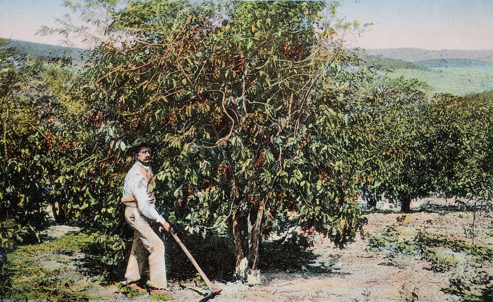
José Rosael/Hélio Nobre/Museu Paulista da USP · Public domain · Commons
4
Typica et Bourbon, deux voyages
Comment quelques graines du Yémen ont planté la moitié du monde.
L'histoire commence au Yémen, où le caféier est cultivé en terrasses depuis au moins le XVe siècle, avec des graines venues de l'autre côté de la mer Rouge, d'Éthiopie. Pendant longtemps, les marchands du port de Moka gardent le monopole. Ils vendent du café, pas des arbres, et la légende dit que les grains partaient ébouillantés ou grillés pour qu'ils ne germent pas ailleurs. Vrai ou faux, le résultat est le même : pendant un siècle et demi, quiconque voulait du café passait par Moka.
Figure 3.3. Trois voyages. Typica (brun) fait le tour par l'Asie et l'Europe avant de traverser l'Atlantique. Bourbon (rouge) passe par La Réunion, puis gagne le Brésil et le Kenya. Le Gesha (vert) part d'Éthiopie au XXe siècle et mettra soixante-dix ans à devenir célèbre. Pointillés : route directe des Hollandais vers leur colonie d'Amérique du Sud.
Typica, le voyageur au long cours
Selon la tradition, vers 1670, un pèlerin soufi, Baba Budan, sort sept graines du Yémen cachées dans sa ceinture et les plante dans les collines de Chikmagalur, dans le sud de l'Inde. Les Hollandais, eux, ne cachent rien : en 1696 puis en 1699, ils expédient des plants de la côte de Malabar vers Java, leur colonie. Le café pousse bien là-bas, si bien qu'un plant repart en 1706 pour le jardin botanique d'Amsterdam. C'est ce caféier-là, et ses descendants, qu'on appelle Typica, le « type » de l'espèce pour les botanistes de l'époque.
En 1714, la ville d'Amsterdam offre un descendant de ce plant à Louis XIV. Il finit dans les serres du Jardin du roi, l'actuel Jardin des plantes, à Paris. Les Hollandais, de leur côté, plantent du café dans leur colonie de Guyane, l'actuel Suriname, dès 1719. Vers 1720, un officier de marine, Gabriel de Clieu, emporte un plant parisien vers la Martinique. Son récit, où il partage sa ration d'eau avec la plante pendant la traversée, tient en partie de la légende. Le résultat, lui, est historique : en quelques décennies, le café gagne les Antilles, puis la Jamaïque, puis tout le continent. Jusqu'aux années 1940, l'Amérique latine boit presque uniquement du Typica.
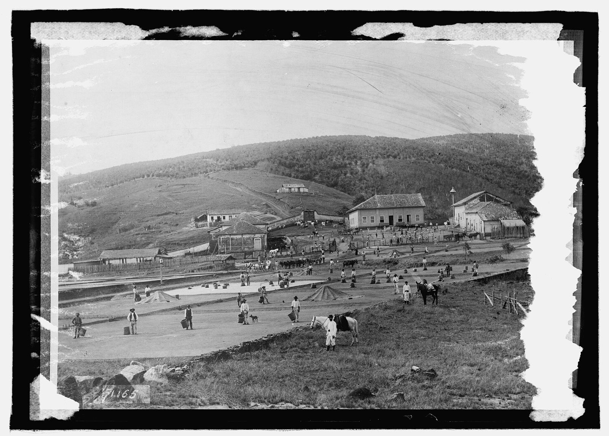
Une plantation de l'État de São Paulo, photographie ancienne de la Bibliothèque du Congrès. Les grands arbres plantés espacés étaient la norme avant les variétés naines.Photo : National Photo Company Collection · Public domain · Commons
Bourbon, l'insulaire
Les Français veulent leur propre café et visent l'île Bourbon, aujourd'hui La Réunion. Ils y introduisent des caféiers du Yémen en 1708, en 1715 et en 1718. Les premières tentatives meurent. Quelques plants des dernières survivent, et c'est d'eux que sort la lignée Bourbon. Pendant plus d'un siècle, elle reste sur l'île.
Elle n'en sort qu'au milieu du XIXe siècle. Vers 1860, elle arrive au Brésil, près de Campinas, dans l'État de São Paulo. Les planteurs remarquent vite qu'elle produit plus que le Typica, et elle le remplace peu à peu dans les grandes fazendas. Au même moment, les missionnaires spiritains, installés à La Réunion depuis 1841, l'emportent en Afrique de l'Est. En 1893, ils plantent du café près de Nairobi, au Kenya. Pendant des décennies, les acheteurs appelleront le café de ces hauts plateaux « French Mission ». Plus tard, les SL kényans sortiront en partie de cette lignée.
Comment les reconnaître au champ
Dans la pratique, les agronomes regardent d'abord les jeunes feuilles au bout des branches. Bronze, cuivrées chez le Typica. Vertes chez le Bourbon. Ensuite la silhouette : le Typica monte en cône, avec des branches latérales qui partent presque à l'horizontale et des entre-nœuds longs, donc peu de cerises par mètre de branche. Le Bourbon est plus dense, plus rond, avec des feuilles plus larges aux bords ondulés et des entre-nœuds plus courts. Ses grains sont plus petits et plus ronds que les grains allongés du Typica.
Avant d'ouvrir les fiches, un mot sur leur lecture. Le dessin montre la hauteur d'un arbre taillé et la taille relative du grain. Les jauges sur 5 donnent le rendement, la résistance aux maladies (surtout la rouille), puis trois tendances en tasse quand la variété pousse à bonne altitude et qu'elle est bien travaillée : l'acidité, le corps et le parfum, c'est-à-dire l'intensité aromatique. Ce sont des repères pour comparer, pas des notes de concours.
Grand cône, jeunes feuilles bronze, grain allongé.
Rendement
Résistance
Acidité
Corps
Parfum
Typica
L'ancêtre de presque tout ce qui pousse en Amérique et en Asie. Un arbre élégant et peu rentable : faible rendement, première récolte vers la quatrième année, très sensible à la rouille, à l'anthracnose des baies et aux nématodes. Il a survécu là où la qualité paie et où l'image compte, à la Jamaïque, à Hawaï, au Pérou, en Papouasie-Nouvelle-Guinée.
Origine : Yémen, puis Java et Amsterdam, 1706.
Port : haut, 3,5 à 4 m taillé, en cône.
Altitude : à son meilleur en haute altitude, au-dessus de 1 500 m près de l'équateur.
Rouille : très sensible.
Grain : grand, allongé.
Où : Jamaïque (Blue Mountain), Hawaï (Kona), Pérou, Bolivie, Papouasie-Nouvelle-Guinée, quelques fermes d'Amérique centrale.
En tasse, une douceur propre, une acidité fine. Rarement spectaculaire, souvent très net.
sucre de canne
orange douce
amande
fleurs blanches
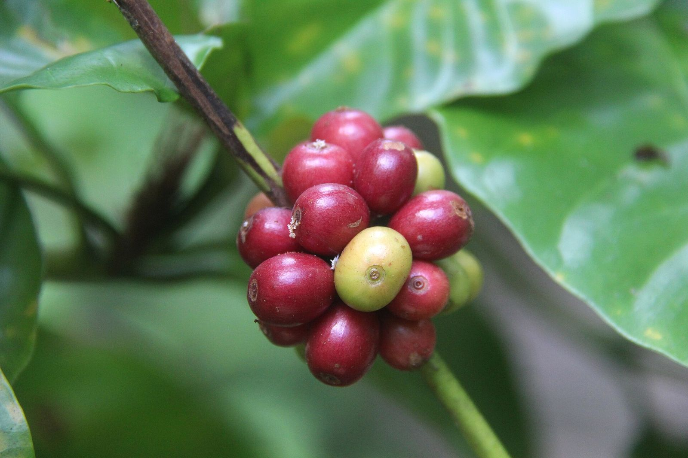
Cerises rouges bien mûres. La couleur du fruit est un caractère de variété, la maturité est l'affaire du cueilleur.Photo : Jyppe Quidores · CC BY-SA 4.0 · Commons
Rendement
Résistance
Acidité
Corps
Parfum
Bourbon (rouge)
La base des grands cafés du Salvador, du Guatemala, du Rwanda et du Burundi. On lui attribue couramment 20 à 30 % de rendement de plus que le Typica, pour la même fragilité face aux maladies. C'est la variété des cafés « sucrés » : quand un dégustateur dit d'un Rwanda qu'il a le goût de la pomme cuite au caramel, il parle souvent d'un Bourbon.
Origine : île Bourbon (La Réunion), 1708-1718.
Port : haut, 3 à 4 m, dense, jeunes feuilles vertes.
Altitude : haute, 1 200 à 2 000 m selon la latitude.
Rouille : très sensible.
Grain : moyen, plutôt rond.
Où : Salvador, Guatemala, Rwanda, Burundi, Brésil, Colombie (Nariño, Huila), Kenya en petites quantités.
caramel
pomme rouge
abricot
chocolat au lait
orange
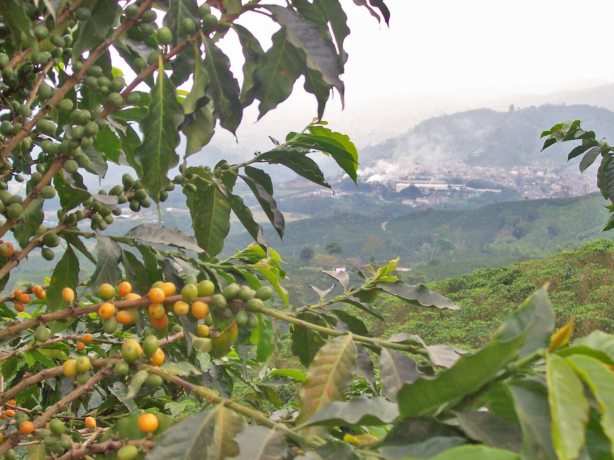
Cerises jaunes et orangées à Chinchiná, en Colombie. Plusieurs variétés portent des fruits jaunes ; la photo ne dit pas laquelle.Photo : Ricohin · CC BY 3.0 · Commons
Rendement
Résistance
Acidité
Corps
Parfum
Bourbon jaune (Bourbon amarelo)
Repéré au Brésil dans les années 1930, il viendrait d'un croisement naturel entre un Bourbon rouge et un Typica à fruits jaunes, l'Amarelo de Botucatu. La couleur jaune est un caractère récessif : il faut que les deux parents la transmettent pour qu'elle apparaisse.
Au champ, la cerise jaune pose un problème au cueilleur : entre « presque mûre » et « mûre », la différence se voit beaucoup moins que sur une rouge. Les bonnes fermes forment leurs équipes à la reconnaître, au toucher autant qu'à l'œil.
Origine : Brésil, années 1930.
Port : haut, comme le Bourbon rouge.
Rouille : très sensible.
Où : Brésil (Sul de Minas, Mogiana), Salvador, Colombie, Rwanda en petits lots.
miel
pêche jaune
sucre roux
noisette
Même arbre que le Bourbon, cerises roses à orangées.
Rendement
Résistance
Acidité
Corps
Parfum
Bourbon rose (Bourbon rosado)
Quand un Bourbon rouge et un Bourbon jaune poussent côte à côte, des croisements naturels peuvent porter des cerises roses : c'est l'explication classique des « Bourbon rosado » de Colombie et du Salvador. Le caractère est instable, les graines redonnent un mélange de couleurs.
Attention à la confusion. Le « Pink Bourbon » de la région de Huila, devenu à la mode dans les années 2010, a été rapproché par des tests génétiques des populations éthiopiennes, et n'aurait rien à voir avec ce croisement. Tu le retrouves dans les variétés éthiopiennes, section 7.
Origine : croisements spontanés rouge × jaune, Amérique latine.
Rouille : très sensible, comme ses parents.
Où : Colombie, Salvador, en micro-lots.
fraise
caramel
orange sanguine
Forme de sapin, petites feuilles, grain pointu.
Rendement
Résistance
Acidité
Corps
Parfum
Bourbon pointu, ou Laurina
Une mutation apparue sur l'île Bourbon elle-même. L'arbre prend une forme de petit sapin, ses feuilles sont petites, ses grains effilés aux deux bouts. Surtout, il contient environ moitié moins de caféine qu'un arabica ordinaire : de l'ordre de 0,6 à 0,75 % de la matière sèche, contre 1,2 à 1,5 %. Moins de caféine, c'est aussi moins d'amertume, et une tasse douce, ronde, qui surprend.
Le revers : un arbre fragile, peu productif, très sensible à la rouille. Presque disparu, il a été relancé à La Réunion dans les années 2000.
Origine : île Bourbon, mutation du Bourbon.
Port : conique, 2 à 3 m.
Caféine : environ la moitié d'un arabica classique.
Le XXe siècle latino-américain réinvente le caféier.
Au début du XXe siècle, un planteur brésilien a deux problèmes : ses Typica et ses Bourbon montent à quatre mètres, donc il faut des échelles et beaucoup de bras pour cueillir, et ils produisent peu à l'hectare. Deux sources de nouveauté s'offrent à lui. Les mutations spontanées, qu'un œil attentif repère un jour dans une rangée. Et les croisements, naturels ou faits à la main, entre ce qui existe déjà. L'institut agronomique de Campinas, l'IAC, fondé en 1887, va industrialiser les deux.
Le nain qui a changé les paysages
Entre 1915 et 1918, dans le Minas Gerais, on remarque un Bourbon qui reste petit. Un seul gène raccourcit ses entre-nœuds : les étages de branches se serrent, l'arbre plafonne vers deux mètres, et il porte autant de cerises sur une hauteur moitié moindre. L'IAC le sélectionne à partir de 1937. Curieusement, il fait une carrière modeste au Brésil et triomphe ailleurs : en Colombie et en Amérique centrale, à partir des années 1970.
Avec lui arrive une autre façon de cultiver. En Colombie, la « technification » des années 1970 et 1980 remplace les vieux Typica sous ombrage par des rangs serrés de Caturra en plein soleil, avec beaucoup d'engrais. Les rendements bondissent. Les paysages aussi changent : les collines de l'axe caféier prennent l'allure de tapis verts réguliers qu'on voit aujourd'hui sur les cartes postales. Le revers viendra plus tard, avec la rouille, à laquelle le Caturra n'oppose aucune défense.
La même mutation est apparue deux autres fois. Au Salvador en 1949, sur la ferme de la famille Pacas, d'où le nom. Au Costa Rica, près de la ville de Sarchí, d'où Villa Sarchí. Au Guatemala, une mutation naine du Typica, le Pache, suit la même logique. Ces nains se ressemblent tellement que seul le registre de la ferme permet parfois de dire lequel pousse dans une parcelle.
Le géant de Bahia
À l'inverse, en 1870, près de la ville de Maragogipe, dans l'État de Bahia, on repère un Typica géant : grandes feuilles, entre-nœuds très longs, et des grains énormes, les plus gros de l'espèce. Les acheteurs l'ont surnommé « grain d'éléphant ». Le gène est dominant, il passe facilement à la descendance, et c'est surtout comme parent que le Maragogipe a compté.
Les croisements de Campinas et de San Salvador
En 1943, dans l'État de São Paulo, on trouve un croisement naturel entre Typica et Bourbon, très vigoureux. Il est distribué à partir de 1952 sous le nom de Mundo Novo, et il couvre vite des milliers d'hectares au Brésil. En 1949, l'IAC croise un Caturra à fruits jaunes avec ce Mundo Novo. Il faut plus de vingt ans de sélection, génération après génération, pour fixer un arbre compact et productif : le Catuaí, diffusé en 1972. Son nom viendrait du tupi-guarani et voudrait dire « très bon ». Aujourd'hui, Catuaí et Mundo Novo fournissent la plus grande partie du café brésilien que tu bois dans les assemblages espresso.
Au Salvador, l'institut national du café (ISIC) croise à partir de 1958 le Pacas et le Maragogipe. Il en sort le Pacamara, un arbre compact aux grains énormes, long à stabiliser, qui va devenir la star des concours salvadoriens. Le même principe a donné le Maracaturra (Maragogipe × Caturra) au Nicaragua.
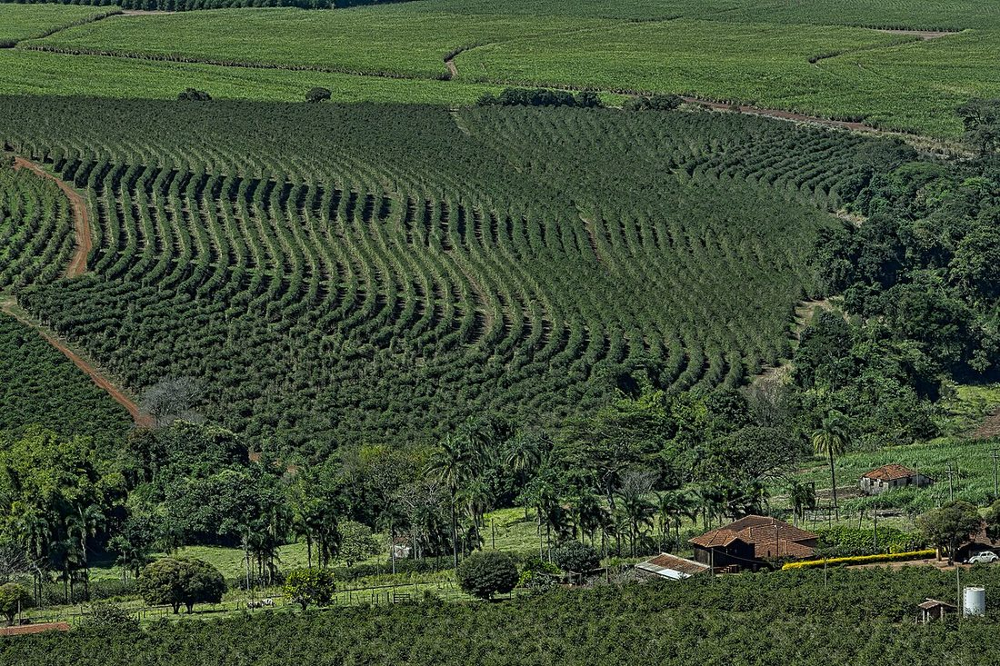
Rangs de caféiers après le passage d'une récolteuse mécanique, au Brésil. Les variétés compactes et régulières se prêtent à ce type de récolte, qui demande des rangs droits et des arbres de hauteur homogène.Photo : Jonathan Wilkins · CC BY-SA 3.0 · Commons
Fruits encore verts de Caturra à San Roque, en Colombie. Les grappes sont serrées le long de la branche.Photo : Aliman5040 · CC BY-SA 3.0 · Commons
Rendement
Résistance
Acidité
Corps
Parfum
Caturra
Le petit Bourbon. Il produit bien si on le nourrit bien : c'est une variété exigeante en engrais, qui s'épuise vite dans un sol pauvre. En altitude, il donne une tasse vive et nette, un peu plus légère que celle du Bourbon. Il a longtemps été la variété de référence de la Colombie et du Costa Rica, avant que la rouille ne pousse à le remplacer.
Origine : mutation du Bourbon, Minas Gerais (Brésil), 1915-1918.
Port : nain, autour de 2 m, 5 000 à 10 000 pieds/ha.
Altitude : moyenne à haute ; la qualité monte nettement au-dessus de 1 400 m.
Rouille : très sensible.
Grain : moyen.
Où : Colombie, Costa Rica, Honduras, Guatemala, Pérou, Équateur.
citron vert
pomme verte
caramel clair
noisette
Compact, productif, cerises rouges ou jaunes.
Rendement
Résistance
Acidité
Corps
Parfum
Catuaí
Le cheval de trait du Brésil et de l'Amérique centrale. Compact, très productif, ses cerises tiennent bien à la branche, ce qui compte dans les régions de vent et de fortes pluies. World Coffee Research juge sa tasse « bonne sans être grande ». En pratique, un Catuaí d'altitude, bien cueilli, donne un café doux et propre, parfait en espresso ; un Catuaí de plaine reste plat. Il existe en Catuaí rouge et Catuaí jaune, avec plusieurs lignées numérotées par l'IAC (IAC 62, IAC 144…).
Origine : Caturra jaune × Mundo Novo, IAC, croisé en 1949, diffusé en 1972.
Port : nain, autour de 2 m.
Altitude : large plage, de 800 m au Brésil à plus de 1 600 m en Amérique centrale.
Rouille : très sensible.
Grain : moyen.
Où : Brésil, Honduras, Costa Rica, Guatemala, Salvador, Nicaragua.
chocolat au lait
caramel
noisette
prune
Grand, vigoureux, tient les sols fatigués.
Rendement
Résistance
Acidité
Corps
Parfum
Mundo Novo
Le « nouveau monde » des planteurs pauliste : un grand arbre vigoureux, qui supporte mieux que le Bourbon les sols épuisés et produit davantage. Récolté souvent à la machine et séché en nature, il donne le café brésilien type : rond, corsé, chocolat et noisette.
Origine : croisement naturel Typica × Bourbon, État de São Paulo, 1943 ; distribué dès 1952.
Port : haut, 3 à 4 m.
Altitude : moyenne, 800 à 1 200 m au Brésil.
Rouille : sensible.
Où : Brésil surtout, un peu en Amérique centrale.
cacao
noisette grillée
sucre brun
Le nain salvadorien.
Rendement
Résistance
Acidité
Corps
Parfum
Pacas
Repéré en 1949 sur une ferme de la famille Pacas, dans la région de Santa Ana, au Salvador. Même mutation naine que le Caturra, mais apparue sur un Bourbon salvadorien. En tasse, il reste proche du Bourbon, un peu moins sucré. Son vrai titre de gloire, c'est d'être la mère du Pacamara.
Origine : mutation du Bourbon, Salvador, 1949.
Port : nain.
Rouille : sensible.
Où : Salvador, Honduras.
caramel
pomme
chocolat
Nain, taillé pour les crêtes ventées.
Rendement
Résistance
Acidité
Corps
Parfum
Villa Sarchí
Le nain costaricien, trouvé autour de la ville de Sarchí, dans la vallée centrale occidentale, et sélectionné au milieu du XXe siècle. Il supporte bien le vent des hautes crêtes et s'accommode d'une agriculture plus sobre que le Caturra. En altitude, il donne une acidité vive et fruitée. Il compte surtout comme parent : croisé avec l'hybride de Timor, il a donné les Sarchimors.
Origine : mutation du Bourbon, Costa Rica, années 1950-1960.
Port : nain.
Altitude : haute.
Rouille : sensible.
Où : Costa Rica, un peu en Amérique centrale.
cerise
mandarine
panela
Le géant : grandes feuilles, grain énorme.
Rendement
Résistance
Acidité
Corps
Parfum
Maragogipe
Un grain si gros qu'il ne passe pas dans les mêmes grilles de tri que les autres, et une tasse souvent délicate, parfois creuse. Pour le torréfacteur, c'est un casse-tête : un grain aussi épais demande une chauffe plus douce et plus longue pour cuire jusqu'au cœur.
Origine : mutation du Typica, Bahia (Brésil), 1870.
Port : haut, grandes feuilles, entre-nœuds longs.
Rouille : sensible.
Grain : le plus gros de l'arabica.
Où : Mexique (Chiapas), Nicaragua, Guatemala en petits lots.
fleurs légères
miel
thé
Compact, grandes feuilles, grain énorme.
Rendement
Résistance
Acidité
Corps
Parfum
Pacamara
Pacas pour le petit arbre, Maragogipe pour le gros grain. La tasse divise : à son meilleur, une bombe de fruits et de fleurs avec beaucoup de corps ; parfois, des notes salées ou végétales (herbes fraîches, ciboulette) que certains adorent et que d'autres trouvent déplacées. Les Pacamara gagnent souvent la Cup of Excellence du Salvador. Si tu en as un, goûte-le au V60 et en espresso : il change beaucoup d'une méthode à l'autre.
Origine : Pacas × Maragogipe, ISIC (Salvador), à partir de 1958.
Port : compact, grandes feuilles, 5 000 à 6 000 pieds/ha.
Altitude : haute, au-dessus de 1 400 m pour qu'il s'exprime.
Quatre arbres choisis dans les années 1930, et le goût de cassis qui va avec.
Si tu as déjà goûté un bon Kenya, tu te souviens de l'acidité. Juteuse, presque piquante, avec du cassis, de la tomate mûre, du pamplemousse. Les dégustateurs anglophones l'appellent « phosphorique », parce qu'elle rappelle l'acide des sodas au cola. Une partie de ce profil vient du lavé kenyan et des sols volcaniques d'altitude. Une autre partie vient de deux variétés sélectionnées il y a presque un siècle.
Scott Laboratories, 1935-1939
Dans les années 1930, le café kényan est surtout planté dans de grands domaines coloniaux, avec des arbres de provenances diverses : Bourbon des missions, Typica, lignées venues d'Éthiopie et du Soudan. Les laboratoires agricoles Scott, à Nairobi, font alors le tour des fermes, repèrent des arbres isolés qui se distinguent (rendement, tasse, tolérance à la sécheresse), et multiplient leur descendance. Chaque sélection reçoit un numéro précédé de SL. Beaucoup ont été testées, deux ont fait l'histoire.
SL28 vient d'un arbre choisi en 1935 dans une population tanzanienne surnommée « Tanganyika Drought Resistant ». Il se rattache au groupe Bourbon. C'est un arbre robuste, qui supporte les périodes sèches et vit très vieux : certains SL28 produisent encore à 60 ou 80 ans. SL34 vient d'un arbre du domaine Loresho, à Kabete, étiqueté « French Mission ». On l'a cru Bourbon pendant des décennies ; les analyses récentes le placent avec les Typica. Il est réputé mieux tenir dans les zones d'altitude très arrosées. La sélection K7, de 1936, a été retenue pour les altitudes plus basses.
1968, l'année de l'anthracnose
SL28 et SL34 ont un point faible : les maladies. La rouille, et surtout l'anthracnose des baies, la coffee berry disease ou CBD, un champignon qui noircit et fait pourrir les cerises vertes sur la branche. En 1968, une épidémie coûte au Kenya environ la moitié de sa récolte. La station de recherche de Ruiru, au nord-est de Nairobi, se lance alors dans un programme de croisements pour obtenir un arbre résistant aux deux maladies.
Il en sort Ruiru 11, en 1985 : un composite compact et très productif, résistant à la CBD et à la rouille. Sa mère est un Catimor, son père un mélange de lignées (SL28, SL34, K7, N39, Rume Sudan, hybride de Timor). Les graines s'obtiennent par pollinisation à la main, ce qui rend la semence chère et les plants rares. Les acheteurs l'ont longtemps boudé, en le jugeant moins bon que les SL. La recherche kényane répond qu'à conditions égales l'écart est faible, et que la mauvaise réputation venait de Ruiru 11 plantés bas et mal conduits. En 2010 arrive Batian, du nom du plus haut sommet du mont Kenya : un grand arbre de la même famille, résistant, productif dès la deuxième année, que les acheteurs acceptent beaucoup mieux.
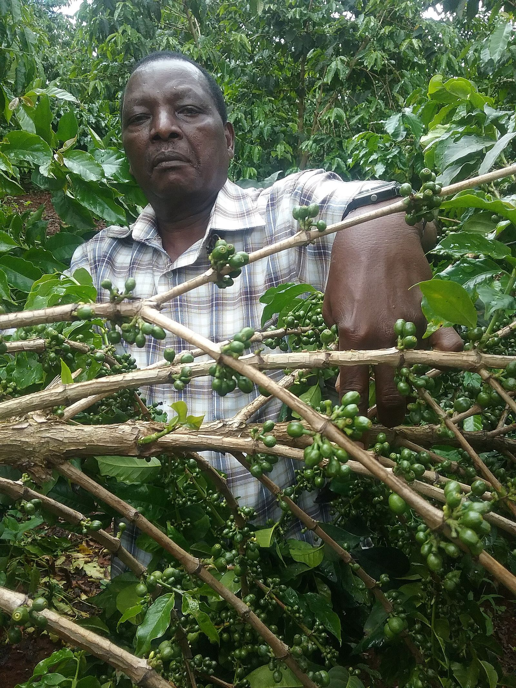
Un producteur kényan au milieu de ses caféiers. Au Kenya, la plupart des cafés viennent de petits producteurs regroupés en coopératives.Photo : Steve Mbogo · CC BY-SA 4.0 · Commons
Rendement
Résistance
Acidité
Corps
Parfum
SL28
La variété qui a fait la réputation du Kenya, et qu'on plante maintenant ailleurs pour la copier : Colombie, Costa Rica, Ouganda, Malawi, Zimbabwe. Hors du Kenya, les résultats sont parfois très bons, rarement identiques : le terroir et le process kenyan comptent aussi.
Origine : Scott Laboratories, Kenya, arbre choisi en 1935 dans une population tanzanienne.
Port : haut, 3 à 4 m.
Altitude : haute, 1 500 à 2 000 m au Kenya.
Maladies : sensible à la rouille, à la CBD et aux nématodes ; tolère la sécheresse.
Grain : gros.
Où : Kenya (Nyeri, Kirinyaga, Kiambu, Murang'a), Ouganda, Malawi, et en essai en Amérique latine.
cassis
tomate mûre
pamplemousse
vin rouge
sucre de canne
Grand arbre, souvent planté avec le SL28.
Rendement
Résistance
Acidité
Corps
Parfum
SL34
Le frère du SL28, presque toujours planté à côté de lui. Un peu plus productif, un peu plus rond en tasse, avec un corps plus marqué et une acidité un cran en dessous. Quand une fiche annonce « SL28, SL34 », tu bois un mélange des deux, récolté ensemble.
Origine : arbre du domaine Loresho, Kabete (Kenya), sélection des années 1930 ; groupe Typica d'après l'ADN.
Port : haut.
Altitude : haute, réputé à l'aise sous fortes pluies.
Maladies : sensible à la rouille et à la CBD.
Grain : gros.
Où : Kenya surtout.
mûre
orange sanguine
cacao
mélasse
Compact, plantation dense, très productif.
Rendement
Résistance
Acidité
Corps
Parfum
Ruiru 11
La réponse à 1968. Petit, dense, sans traitement fongicide ou presque, il permet à un petit producteur de garder sa récolte. Sa tasse est souvent plus simple que celle des SL, moins éclatante, avec un corps correct. Dans beaucoup de lots de coopérative, il est mélangé aux SL, ce qui brouille les comparaisons.
Origine : Coffee Research Institute, Ruiru (Kenya), 1985 ; composite issu de Catimor × mélange de lignées.
Port : compact, 2 m environ.
Maladies : résistant à la CBD et à la rouille.
Grain : moyen.
Où : Kenya.
groseille
citron
chocolat
Grand comme un SL, résistant comme un Ruiru.
Rendement
Résistance
Acidité
Corps
Parfum
Batian
Le compromis kényan. Un grand arbre qu'on peut conduire comme un SL, avec la résistance de Ruiru 11 et une première récolte dès la deuxième année. En tasse, beaucoup de dégustateurs le trouvent plus proche des SL que Ruiru 11. Il se répand lentement, parce que replanter coûte cher et qu'un SL28 de 50 ans produit encore.
Origine : Coffee Research Institute (Kenya), 2010.
Port : haut.
Maladies : résistant à la CBD et à la rouille.
Grain : gros.
Où : Kenya.
cassis
citron vert
abricot
AA, AB, PB : la taille, pas la variété
Sur un sachet kényan, tu verras presque toujours une ou deux lettres. AA, AB, PB. Ces lettres désignent un calibre, jamais une variété. AA désigne les plus gros grains, retenus par un tamis aux trous d'environ 7,2 mm ; AB, la taille en dessous ; PB, les caracolis (peaberry), ces cerises qui n'ont développé qu'un grain rond au lieu de deux. Un même lot de SL28 et SL34 donne en général à la fois de l'AA, de l'AB et du PB. AA se vend plus cher, mais à la dégustation un AB du même lot le bat parfois.
Le seul pays où le café pousse encore à l'état sauvage.
Prends une station de lavage du Gedeo, autour de Yirgacheffe, un après-midi de novembre. Des centaines de familles arrivent avec des sacs de cerises cueillies le matin dans leur jardin. Chaque jardin compte quelques centaines d'arbres, plantés à des époques différentes, avec des graines de la voisine, d'une forêt plus loin, d'un programme de l'État. Tout part dans le même bac. Le lot qui sortira de là, et que tu liras « Ethiopia Yirgacheffe, Heirloom », mélange des dizaines de populations différentes, qu'aucun généticien n'a jamais toutes identifiées.
Ce qu'on appelle « variété » en Amérique centrale n'a presque pas d'équivalent ici. On parle plutôt de landraces : des populations locales, adaptées à leur vallée, que les paysans nomment eux-mêmes. Dans le Sidama et le Gedeo, on entend Kurume, Wolisho, Dega. Ces noms désignent des types d'arbres reconnus au village, pas des lignées fixées.
Forêt, semi-forêt, jardin
Le café éthiopien pousse dans quatre systèmes. Dans les forêts du sud-ouest (Kafa, Sheka, Bench Maji, Illubabor), des arbres spontanés, sous la canopée, qu'on se contente de récolter. En semi-forêt, la même forêt éclaircie et entretenue, où l'on plante parfois des caféiers dans les trous. Dans les jardins autour des maisons, qui fournissent la plus grande part de la récolte du pays, mêlés aux ensètes, aux avocatiers et aux haricots. Et dans quelques plantations, souvent d'État ou de grands domaines privés, où l'on trouve davantage de variétés sélectionnées.
Cette diversité est une richesse énorme pour la recherche et un casse-tête pour le commerce. Un acheteur qui veut retrouver le même profil d'une année sur l'autre doit suivre une station, un village, parfois un producteur, plutôt qu'une variété.
1974, la collecte de Jimma
Au début des années 1970, l'anthracnose des baies, la CBD que le Kenya connaissait depuis 1968, arrive en Éthiopie. Le centre de recherche agricole de Jimma (JARC) part alors dans les forêts chercher des arbres qui résistent. La grande collecte a lieu en 1974, d'où le préfixe des sélections diffusées à la fin de la décennie : 74110, 74112, 74158, 74165, et d'autres. D'après les fiches des importateurs, 74110 et 74112 descendent d'arbres repérés dans la forêt de Metu Bishari, dans l'Illubabor, et 74158 vient aussi des sélections de Metu ; leur diffusion date de 1979.
Ces sélections ont été distribuées par l'État aux paysans pendant des décennies. Résultat : beaucoup de lots « heirloom » du Sidama ou du Gedeo contiennent en réalité une bonne part de 74110 ou 74112, plantés à côté des populations anciennes. Depuis la réforme de la bourse éthiopienne du café en 2017, qui a permis de vendre plus facilement un lot sous le nom de son producteur, certains affichent la sélection exacte. Des producteurs du Sidama comme Assefa Dukamo ou Mate Matiwos vendent ainsi des lots étiquetés « 74158 » à des torréfacteurs de spécialité.
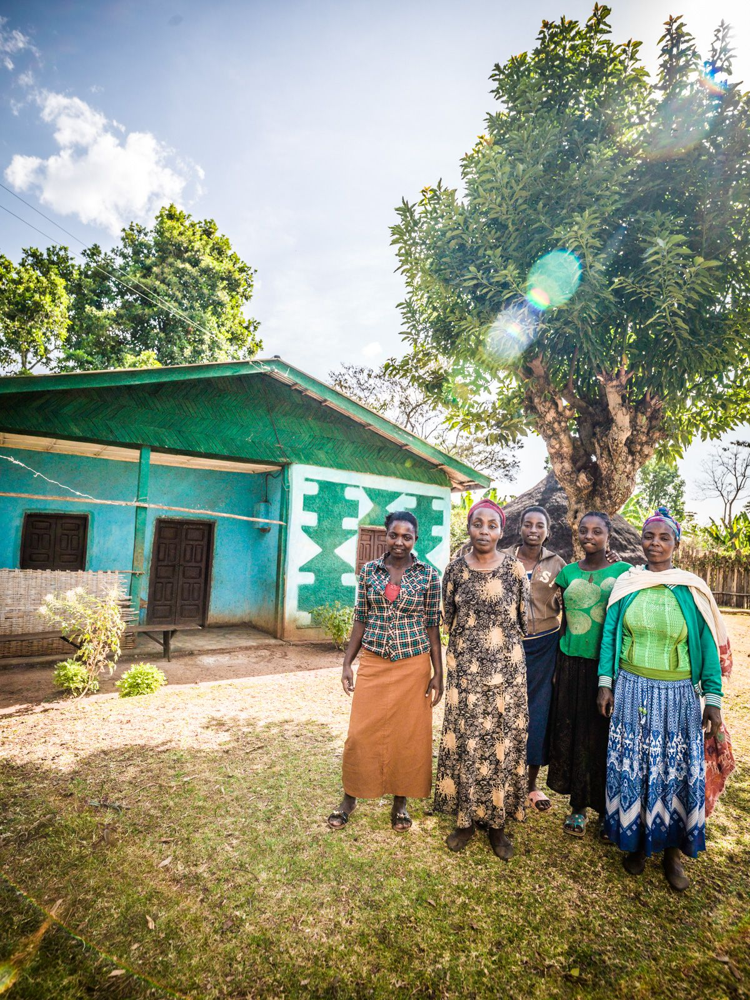
Une famille de producteurs près de Hawassa, dans le Sidama. Le café de ces jardins rejoint une station de lavage avec celui de centaines de voisins.Photo : Niels Van Iperen · CC BY-SA 4.0 · Commons
Les voyageuses aux noms trompeurs
Des graines éthiopiennes ont quitté le pays à toutes les époques, souvent sans papiers, et certaines ont fait carrière en Amérique latine sous des noms qui cachent leur origine : Wush Wush en Colombie, Sidra et Typica Mejorado en Équateur, Pink Bourbon dans le Huila, Chiroso à Urrao (Antioquia), longtemps vendu comme « Caturra Chiroso ». Tous ces noms laissent croire à une parenté avec les lignées Typica ou Bourbon. Les tests génétiques, quand il y en a, les rapprochent des populations éthiopiennes.
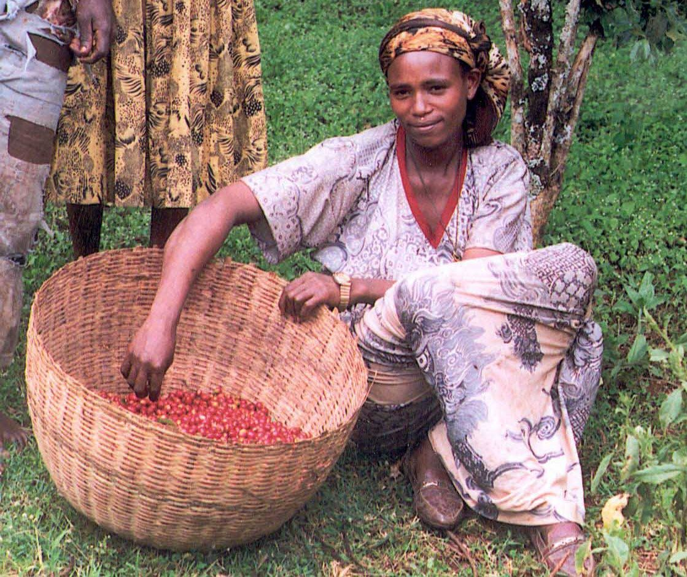
Une productrice éthiopienne et son panier de cerises. Dans un même panier, plusieurs populations d'arbres.Photo : USAID Africa Bureau · Public domain · Commons
Rendement
Résistance
Acidité
Corps
Parfum
Landraces éthiopiennes (« heirloom »)
Des populations locales, très diverses, souvent à petits grains, cultivées entre 1 700 et 2 300 m. Elles donnent les cafés les plus parfumés du monde quand elles poussent haut et qu'elles sont bien traitées : fleurs blanches, bergamote, agrumes, fruits rouges en nature. La diversité protège l'ensemble : une épidémie trouve rarement tous les arbres sans défense.
Origine : forêts et jardins d'Éthiopie, sans date.
Port : très variable, souvent haut et ouvert.
Altitude : 1 700 à 2 300 m dans le Sidama, le Gedeo, le Guji.
Grain : souvent petit, irrégulier.
Où : Éthiopie, surtout ; quelques populations au Soudan du Sud et en collection ailleurs.
jasmin
bergamote
citron
myrtille (nature)
thé noir
Silhouette indicative : le port varie selon les fiches.
Rendement
Résistance
Acidité
Corps
Parfum
JARC 74110 et 74112
Deux sélections sœurs, issues de la collecte de 1974 et choisies d'abord pour leur résistance à l'anthracnose des baies. Elles sont parmi les plus plantées d'Éthiopie, en particulier dans le Sidama, le Gedeo et le Guji, où elles se mêlent aux landraces. En tasse, elles donnent un profil éthiopien classique, floral et citronné, avec souvent un peu plus de structure que les vieilles populations.
Origine : JARC, arbres de Metu Bishari (Illubabor), collectés en 1974.
Maladies : résistance à la CBD ; rouille variable.
Grain : petit.
Où : Éthiopie, dans tout le sud.
fleur d'oranger
citron
abricot sec
mélasse
Silhouette indicative.
Rendement
Résistance
Acidité
Corps
Parfum
JARC 74158
La sélection qui monte. Depuis quelques années, des producteurs du Sidama la cultivent en lots séparés et la vendent sous son numéro, ce qui permet enfin de comparer des tasses de la même sélection. Il y a dix ans, ce café aurait été vendu « heirloom ».
Origine : JARC, sélections de Metu, diffusée en 1979.
Maladies : sélectionnée pour la résistance à la CBD.
Où : Éthiopie, Sidama notamment.
jasmin
pêche blanche
bergamote
miel
Silhouette indicative, grain plutôt allongé.
Rendement
Résistance
Acidité
Corps
Parfum
Wush Wush
Une population venue de la région de Wush Wush, dans le Kafa, au sud-ouest de l'Éthiopie. Elle a fait sa carrière en Colombie, où quelques producteurs du Tolima et du Huila la cultivent en micro-lots. En tasse, on la compare souvent au Gesha, avec plus de sucre et de corps : fruits rouges très mûrs, fruits tropicaux, fleurs.
Origine : Kafa (Éthiopie) ; Colombie depuis 20 à 30 ans selon les sources.
Rouille : peu documentée.
Où : Colombie (Tolima, Huila), Éthiopie.
framboise
fruit de la passion
rose
sirop
Silhouette indicative, grand arbre.
Rendement
Résistance
Acidité
Corps
Parfum
Sidra
Une variété équatorienne entourée de récits. On a longtemps raconté qu'elle sortait d'une station de recherche locale, croisement de Typica et de Bourbon. Plusieurs analyses la rapprochent plutôt des populations éthiopiennes, et World Coffee Research estime que le nom recouvre peut-être plusieurs variétés différentes. Elle s'est fait connaître par les concours et les compétitions de barista. En tasse, un profil floral et fruité qui rappelle les éthiopiens, avec souvent une texture plus ronde.
Origine : Équateur ; généalogie discutée.
Port : grand arbre.
Où : Équateur, Colombie.
fleurs blanches
ananas
citron confit
caramel
Silhouette indicative, cerises rose orangé.
Rendement
Résistance
Acidité
Corps
Parfum
Pink Bourbon
La vedette colombienne des années 2010, venue du sud du Huila, aux cerises rose orangé. Les producteurs l'apprécient aussi parce qu'il passe pour mieux tolérer la rouille que le Caturra, ce qui reste à confirmer par des essais publiés. En tasse, il tire franchement vers l'Éthiopie : fleurs, agrumes, fruits rouges, une acidité vive. Si un client connaît le Bourbon salvadorien chocolaté et commande un Pink Bourbon en s'attendant à la même chose, préviens-le.
Origine : Huila (Colombie) ; éthiopien d'après des tests privés de 2017 et 2023.
Soixante-dix ans d'oubli, puis le café le plus cher du monde.
Panama, 2004. Le concours Best of Panama réunit des juges qui goûtent à l'aveugle les meilleurs lots du pays avant une vente aux enchères. Une tasse les arrête net. Elle ne ressemble à rien de ce qu'ils connaissent de l'Amérique centrale : jasmin, bergamote, pêche, une texture de thé. Le lot vient de l'Hacienda La Esmeralda, à Boquete, et d'une variété dont presque personne n'avait entendu parler. Aux enchères, il part à 21 dollars la livre de café vert, plus du triple du record précédent du concours. Le catalogue de World Coffee Research date l'épisode de 2005, la plupart des récits de 2004 ; peu importe, le café de spécialité ne sera plus jamais le même.
D'où il vient
Le Gesha est collecté dans les années 1930 dans les forêts du sud-ouest éthiopien, près du mont Gesha ; le récit le plus répandu parle de la forêt de Gori Gesha. Les graines passent par la station de recherche de Lyamungu, en Tanzanie, puis arrivent en 1953 au CATIE, le centre de recherche agronomique de Turrialba, au Costa Rica, où l'accession reçoit le numéro T2722. On s'y intéresse pour une raison qui n'a rien à voir avec le goût : l'arbre tolère assez bien la rouille.
Dans les années 1960, le CATIE le diffuse au Panama. Selon plusieurs sources du métier, Francisco Serracín, dit Don Pachi, en plante à Boquete vers 1963. Les producteurs sont déçus : les branches sont longues et cassantes, le rendement faible. Les arbres restent dans des coins de fermes, mélangés aux autres, et on oublie ce qu'ils sont.
À La Esmeralda, la famille Peterson remarque au début des années 2000 qu'une parcelle en altitude, sur le secteur de Jaramillo, donne des tasses à part. Elle isole les arbres, récolte et traite leurs cerises séparément, et envoie le lot au concours. La suite, tu la connais. En vingt ans, le Gesha a été planté au Panama, en Colombie, au Costa Rica, au Guatemala, au Pérou, au Malawi, et réintroduit en Éthiopie même.
À quoi il ressemble, à quoi il goûte
Au champ, le Gesha se reconnaît de loin : un grand arbre aux branches longues et souples qui retombent, des feuilles allongées, des entre-nœuds longs. Ses cerises et ses grains sont eux aussi allongés. Il produit peu, souffre dans les sols pauvres, et n'exprime son parfum qu'en altitude : au Panama, les meilleures parcelles sont souvent entre 1 600 et 1 900 m. Planté bas, il donne un café correct qui ne justifie pas son prix.
En tasse, quand tout est réuni : jasmin, bergamote, chèvrefeuille, pêche blanche, citron, papaye, et une texture légère, presque un thé infusé. L'acidité est vive mais fine. Le corps est léger, et c'est voulu. Le Gesha a imposé l'idée qu'un café pouvait se boire comme un thé de grand cru.
Grand arbre aux branches longues et cassantes, grain allongé.
Rendement
Résistance
Acidité
Corps
Parfum
Gesha (Geisha) du Panama
Descendant de l'accession T2722 du CATIE. Les analyses génétiques de World Coffee Research le décrivent comme une population distincte et homogène, ce qui explique que les Gesha panaméens se ressemblent d'une ferme à l'autre plus que les landraces éthiopiennes.
Origine : Éthiopie (années 1930), Lyamungu, CATIE en 1953, Panama dans les années 1960.
Port : haut, branches longues et fragiles.
Altitude : haute ; au Panama, 1 600 à 1 900 m pour les meilleurs lots.
Rouille : tolérance partielle.
Grain : gros, allongé.
Où : Panama (Boquete, Volcán), Colombie, Costa Rica, Guatemala, Pérou, Malawi.
jasmin
bergamote
pêche blanche
papaye
thé
Sélections locales de la région d'origine.
Rendement
Résistance
Acidité
Corps
Parfum
Gesha d'Éthiopie
Des sélections faites à partir des arbres de la région de Gesha, dans le Bench Maji, cultivées notamment par la ferme Gesha Village. Ce sont des cousins du Gesha panaméen, sortis de la même forêt, mais pas des copies : la tasse tire souvent vers les fruits rouges et le thé noir, avec un peu plus de corps.
Origine : région de Gesha, Bench Maji (Éthiopie) ; fermes créées dans les années 2010.
Altitude : haute, comme les forêts d'origine.
Où : Éthiopie.
jasmin
fruits rouges
thé noir
citron
Les enchères
Depuis 2004, le Best of Panama sert de vitrine mondiale au Gesha. Les acheteurs, souvent venus d'Asie de l'Est, enchérissent en ligne sur des lots de quelques dizaines de kilos. Les prix sont publics, et ils ont explosé.
Quelques repères du Best of Panama (prix du café vert)
Année
Lot
Prix
Source
2004
Gesha de l'Hacienda La Esmeralda
21 $/lb (≈ 46 $/kg)
récits de l'enchère ; WCR date de 2005
2024
Gesha nature, Lamastus Family Estates
10 013 $/kg (4 542 $/lb)
Daily Coffee News
2024
Prix moyen de l'enchère
≈ 1 383 $/kg
Daily Coffee News
2025
Gesha lavé, Hacienda La Esmeralda, 98 points
30 204 $/kg, soit 604 080 $ pour 20 kg
Fresh Cup
Figure 3.4. En vingt ans, le prix record a été multiplié par plus de 600. Ces prix portent sur des lots de quelques dizaines de kilos et font la publicité de tout un pays ; ils ne disent rien du prix courant d'un Gesha.
Le calcul qui fait mal
Fais l'exercice au comptoir, il marque les esprits. Une tasse de filtre au V60, c'est 15 g de café torréfié. La torréfaction fait perdre au grain 15 à 18 % de son poids, surtout en eau : il faut donc environ 18 g de café vert pour obtenir ces 15 g. Au prix du record de 2025, 18 g de vert coûtent 18 × 30,204 = environ 544 dollars. Avant torréfaction, avant transport, avant la moindre marge. En face, le café d'Ïota que tu sers tous les jours coûte environ 26,40 € HT le kilo torréfié, soit autour de 40 centimes pour la même dose.
≈ 544 $de café vert dans une tasse au prix du record 2025
≈ 0,40 €de café torréfié Ïota pour la même dose de 15 g
× 650le record de 2025 face à celui de 2004
Pourquoi c'est si cher, vraiment
Le prix d'un Gesha courant, celui que tu trouveras chez un torréfacteur, tient à des raisons concrètes. L'arbre produit peu. Il ne se plaît qu'en haute altitude, là où la cueillette coûte le plus cher et où la maturation est lente. Les fermes le traitent en micro-lots séparés, avec un soin maximum, parce qu'une erreur coûte plus cher que sur un lot ordinaire. Et la demande, nourrie par vingt ans de concours et de championnats de barista, dépasse l'offre. Les enchères de Panama, elles, obéissent à une autre logique : quelques acheteurs se battent pour un trophée, comme pour une bouteille de grand cru à une vente de charité.
Ce qui fait dire à une partie du métier que les records récents tiennent plus du spectacle que du café. Fresh Cup a rapporté en 2025 les critiques de producteurs et d'acheteurs, inquiets de voir le marché oublier les fermes qui vendent à des prix ordinaires. Les deux choses sont vraies à la fois : le Gesha est une variété exceptionnelle, et son prix d'enchère n'a plus grand-chose à voir avec ce qu'il y a dans la tasse.
Un Gesha planté bas et cueilli vite reste un café ordinaire, avec un nom très cher.
Un champignon orange et un arbre trouvé sur l'île de Timor.
Retourne une feuille de caféier malade : des taches orange, poudreuses, comme du curry renversé. C'est Hemileia vastatrix, la rouille. Les spores s'envolent, la feuille tombe, l'arbre s'épuise et ne porte plus de fruits l'année suivante. En 1869, elle arrive à Ceylan, l'actuel Sri Lanka, alors un des grands producteurs mondiaux ; une vingtaine d'années plus tard, l'île a arraché ses caféiers et planté du thé. Elle atteint le Brésil en 1970, puis toute l'Amérique latine. Typica, Bourbon, Caturra, Catuaí : aucune défense.
L'hybride de Timor
Dans les années 1920, sur l'île de Timor, un arabica et un robusta se croisent spontanément. Le robusta résiste à la rouille ; l'hybride en hérite plusieurs gènes, et, coup de chance, il se reproduit avec l'arabica. Le centre portugais de recherche sur les rouilles du caféier (CIFC), près de Lisbonne, en reçoit des graines en 1958-1959 et en tire des lignées numérotées (HdT 832/1, 832/2, 1343). Les sélectionneurs les croisent avec les nains du Bourbon pour obtenir des arbres à la fois résistants et compacts.
Avec Caturra, on obtient les Catimors, à partir de 1959. Avec Villa Sarchí, les Sarchimors, à partir de 1967. Chaque pays en tire ses propres lignées : Costa Rica 95, Lempira au Honduras, Oro Azteca au Mexique, Cauvery en Inde côté Catimors ; Obatã et IAPAR 59 au Brésil, Parainema au Honduras, Marsellesa côté Sarchimors. En Colombie, Cenicafé croise Caturra et HdT 1343 : la variété Colombia sort en 1982, puis Castillo en 2005, décliné en versions régionales.
2012, l'épidémie
En 2012-2013, la rouille ravage l'Amérique centrale. Selon PROMECAFÉ, la récolte perd environ 2,7 millions de sacs de 60 kg, 17 % de la production. L'Organisation internationale du café estime que 70 % des surfaces du Guatemala et 74 % de celles du Salvador sont touchées. Des milliers de familles perdent leur revenu, beaucoup quittent les montagnes. En Colombie, un programme lancé en 2008 avait déjà encouragé le remplacement de plus de trois milliards de caféiers, surtout des Caturra, par Castillo : le pays a mieux tenu que ses voisins.
1869la rouille à Ceylan, qui passe au thé
−17 %la récolte centraméricaine en 2012-2013
74 %des surfaces du Salvador touchées
3 milliardsde caféiers remplacés en Colombie depuis 2008
Le prix en tasse, et ses limites
Les premiers Catimors, sélectionnés pour le rendement et souvent plantés bas en plein soleil, ont donné des tasses plates, astringentes, parfois boisées. Une étude de 2003 (Bertrand et al.) a montré que certains fragments du génome du robusta pouvaient dégrader la qualité. La réputation est restée. Les lignées récentes, cultivées en altitude et bien conduites, réduisent nettement l'écart. Autre limite : la résistance s'use. La rouille compte de nombreuses races, et elle finit par contourner les gènes. Costa Rica 95, Lempira et IHCAFE 90 sont désormais sensibles dans leurs pays, selon World Coffee Research. C'est pour ça que Cenicafé vend Castillo en composite : plusieurs lignées, plusieurs gènes, un champignon qui a plus de mal à tout casser d'un coup.
Compact, très productif.
Rendement
Résistance
Acidité
Corps
Parfum
Catimor
Un groupe plutôt qu'une variété. Très productif, il demande beaucoup d'engrais et s'épuise vite s'il en manque. La tasse dépend énormément de la lignée et de l'altitude : plate en plaine, honnête plus haut.
Origine : Caturra × HdT 832/1, CIFC (Portugal), 1959.
Rouille : résistant au départ, résistance contournée chez plusieurs lignées.
Où : Amérique centrale, Pérou, Inde, Chine (Yunnan), Vietnam pour l'arabica.
cacao
bois
sucre brun
Compact, robuste.
Rendement
Résistance
Acidité
Corps
Parfum
Sarchimor
Le cousin du Catimor, côté Villa Sarchí. Plusieurs lignées ont une bonne réputation en tasse : Marsellesa, diffusée en 2009, est appréciée pour son acidité vive, et Parainema a fait de beaux lots au Honduras. Marsellesa est aussi un des parents de Starmaya.
Origine : Villa Sarchí × HdT 832/2, à partir de 1967.
Rouille : résistant, variable selon la lignée.
Où : Brésil (Obatã), Honduras (Parainema), Nicaragua, Costa Rica.
orange
pomme rouge
caramel
Compact, gros grain.
Rendement
Résistance
Acidité
Corps
Parfum
Castillo
La variété la plus plantée de Colombie. Composite de Cenicafé, décliné en versions régionales adaptées à chaque zone du pays. Grain plutôt gros, ce qui plaît pour le calibre « supremo ». En tasse, propre, sucrée, avec une acidité de fruit frais quand il pousse en altitude. Cenicafé a depuis diffusé Cenicafé 1, en 2016, de la même famille.
Origine : Caturra × HdT 1343, Cenicafé (Colombie), 2005.
Rouille : résistant ; la diversité des lignées ralentit l'érosion.
Où : Colombie.
panela
fruits rouges
orange
chocolat au lait
10. Hybrides F1, recherche et climat
Un sélectionneur rêve d'un arbre qui ait tout : le parfum d'une landrace éthiopienne, le rendement d'un Catuaí, la résistance d'un Sarchimor. Le triangle ci-dessous résume pourquoi c'est si difficile. Chaque variété ancienne excelle à un sommet et paie sur les deux autres.
Figure 3.5. Le triangle des compromis. Plus une variété est proche d'un sommet, plus elle excelle sur ce critère. Les hybrides F1 visent le centre, ce qu'aucune variété ancienne ne sait faire. Positions indicatives d'après les fiches de World Coffee Research.
La vigueur des premières générations
Un hybride F1 croise deux parents éloignés, le plus souvent une lignée résistante (Sarchimor ou Catimor) et une population éthiopienne ou soudanaise. La première génération profite de la vigueur hybride, que les maraîchers connaissent avec leurs tomates F1 : plus de croissance, plus de fruits, souvent une meilleure tolérance aux stress. Le défaut est le même qu'au potager : les graines ne reproduisent pas la plante mère. Il faut multiplier chaque arbre par bouture, ou par embryogenèse somatique, c'est-à-dire produire en laboratoire des embryons à partir de fragments de feuille. Le plant coûte plus cher, et il exige un sol sain et beaucoup d'engrais.
Nouvelles variétés en pépinière dans le Cauca, en Colombie. Un plant de F1 vient d'une bouture, d'un embryon de laboratoire ou d'un jardin semencier.Photo : CIAT · CC BY-SA 2.0 · Commons
Rendement
Résistance
Acidité
Corps
Parfum
Centroamericano (H1)
Le premier F1 d'arabica à grande échelle. En essai, il produit 22 à 47 % de plus que les variétés de référence, résiste fortement à la rouille et donne une très bonne tasse au-dessus de 1 300 m. D'autres F1 ont suivi (Milenio, Mundo Maya, Evaluna, Casiopea), et Casiopea rappelle une règle simple : issu d'un Caturra, il est sensible à la rouille. Un F1 n'est résistant que si un de ses parents l'est.
Origine : T5296 (Sarchimor) × Rume Sudan ; CIRAD, CATIE et PROMECAFÉ, diffusé en 2010.
Port : compact.
Où : Nicaragua, Honduras, Costa Rica, Guatemala.
fleurs
citron
pêche
miel
Compact, le premier F1 vendu en graines.
Rendement
Résistance
Acidité
Corps
Parfum
Starmaya
L'astuce est botanique. Sa mère est une plante mâle-stérile, repérée dans la collection du CATIE : elle ne produit pas de pollen. Plantée près de Marsellesa, elle ne peut porter que des graines hybrides. On récolte donc des semences F1 au champ, sans laboratoire, pour un coût environ moitié moindre que celui des plants in vitro. En échange, 10 à 15 % des plants sortent hors type et doivent être arrachés en pépinière.
Origine : CIRAD et groupe ECOM, Nicaragua ; graines disponibles depuis 2019.
Rouille : résistant (parent Marsellesa).
Où : Nicaragua, Amérique centrale.
caramel
orange
noisette
World Coffee Research et Innovea
Financée par l'industrie, l'organisation World Coffee Research compare les variétés dans un essai international (23 sites, 15 pays) et publie le catalogue en ligne d'où viennent beaucoup de chiffres de ce module. En 2022, elle a lancé Innovea, un réseau mondial de sélection financé par plus de 200 entreprises. Une première population d'environ 1 000 arbres uniques a été plantée au CATIE en 2023. Le but : élargir la base génétique de l'arabica et préparer des variétés qui tiennent la chaleur et la sécheresse.
Il y a urgence. Une étude souvent citée (Bunn et al., 2015) estime que la surface favorable à l'arabica pourrait diminuer d'environ moitié d'ici 2050 avec le réchauffement. Les producteurs montent déjà en altitude là où c'est possible. Les sélectionneurs regardent aussi d'autres espèces : Coffea stenophylla, qui supporterait environ 6 °C de plus en moyenne annuelle selon l'équipe de Kew (2021), et le robusta lui-même.
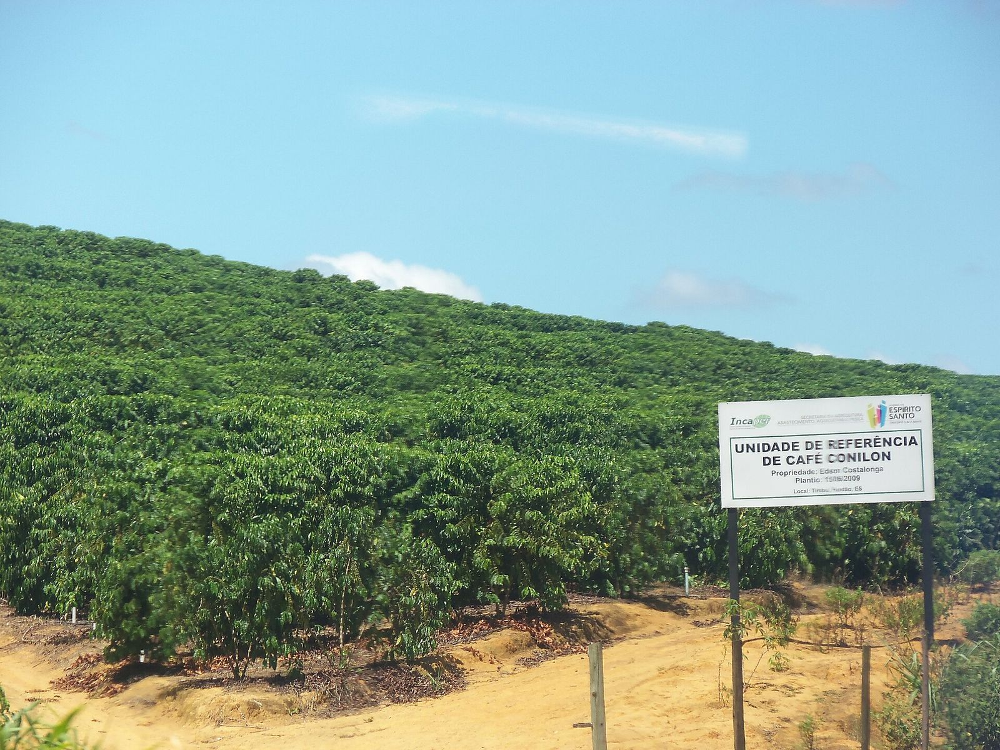
Robusta (Coffea canephora)
Allogame, donc planté en assemblages de clones bouturés. Au Brésil, le Conilon de l'Espírito Santo (clones Incaper) ; au Vietnam, plus de 40 % du robusta mondial, avec des clones comme TR4 et TR9 ; en Ouganda, les clones KR résistants à la trachéomycose. Environ deux fois plus de caféine que l'arabica, 0 à 800 m d'altitude. Depuis le protocole du CQI et de l'autorité ougandaise du café, un lot noté 80 points ou plus peut se dire fine robusta.
cacao amer
bois
arachide grillée
épices
Rendement
Résistance
Acidité
Corps
Parfum
Liberica et excelsa
Grands arbres, cerises énormes, grains asymétriques. Cultivé aux Philippines (le « barako » de Batangas), en Malaisie et en Afrique de l'Ouest. L'excelsa est aujourd'hui rangé dans l'espèce liberica. Robuste à la chaleur, il revient dans les discussions sur le climat. En tasse, fruits secs, bois, parfois jacquier.
jacquier
fruits secs
bois
fumé
Rendement
Résistance
Acidité
Corps
Parfum
Pour les reconnaître en vert, regarde le grain. Le robusta est petit, rond, avec un sillon droit ; l'arabica plus allongé, au sillon en S ; le liberica gros et dissymétrique, comme un grain qui aurait poussé de travers. Si un jour un torréfacteur te propose un fine robusta pour l'espresso, goûte-le seul avant de juger : un bon robusta lavé n'a rien à voir avec celui des capsules.
Ce que la ligne « variété » annonce, et ce qu'elle tait.
Pour un client, la variété est un repère utile si tu la présentes pour ce qu'elle est : une famille de goûts possibles, et parfois l'explication d'un prix. Elle ne dit rien de la fraîcheur du café, de la maturité des cerises, du process ni de la torréfaction. Deux sachets de Caturra peuvent n'avoir rien en commun.
Lire la ligne « variété » d'un sachet
Sur le sachet
Ce que ça annonce
Ce que ça ne garantit pas
Heirloom, Ethiopian landraces
Populations locales éthiopiennes, souvent mêlées de sélections JARC. Floral, agrumes.
Le nom d'une variété ; la même tasse l'an prochain.
74110, 74158
Une sélection de Jimma identifiée, lot traçable.
Un goût différent d'un bon heirloom à l'aveugle.
SL28, SL34
Kenya classique : cassis, tomate, acidité juteuse.
L'absence de Ruiru 11 ou de Batian dans le lot.
Bourbon
Douceur, caramel, fruits rouges ou pomme.
Que ce soit vraiment du Bourbon s'il s'agit d'un « Pink Bourbon ».
Caturra, Catuaí
Arbres compacts, tasse équilibrée, souvent plusieurs variétés mêlées.
Un café d'exception ou un café médiocre : tout dépend de l'altitude.
Castillo, Catimor
Variétés résistantes, rendement élevé.
Une tasse plate : un Castillo d'altitude peut être excellent.
Gesha, Geisha
Floral, bergamote, thé, prix élevé.
Que le plant soit le Gesha du Panama, ni qu'il ait poussé assez haut.
Pacamara
Très gros grain, tasse intense, parfois herbacée.
Que tout le monde l'aime.
Les trois cafés de la boutique
Pour l'Éthiopie, attends-toi à des landraces ou à des sélections de Jimma, souvent mêlées dans un lot de station. Pour le Kenya, la fiche citera probablement SL28, SL34, Ruiru 11 ou Batian, souvent ensemble. Pour le Guatemala, les candidats sont Bourbon, Caturra, Catuaí, Pache ou des Sarchimors. Dans les trois cas, seule la fiche d'Ïota fait foi : lis-la avant de parler, et si une ligne manque, dis « je vérifie » plutôt que de deviner. Le module 14 reprend les variétés pays par pays.
Si tu ne devais garder que ça
Espèce, variété, landrace, mutation, F1 : ce ne sont pas des synonymes. « Heirloom » ne nomme aucune variété.
Presque tout l'arabica cultivé hors d'Éthiopie descend de quelques plants du Yémen, par Typica et Bourbon : d'où sa fragilité face à la rouille.
La variété fixe un plafond en tasse et un comportement au champ ; altitude, cueillette, process et torréfaction décident du résultat.
Caturra, Pacas, Villa Sarchí : Bourbon nains. Maragogipe : Typica géant. Catuaí et Pacamara : croisements de ces formes.
SL28 et SL34 font le Kenya ; Ruiru 11 et Batian résistent à la CBD et à la rouille. AA est un calibre.
Avant d'arriver dans ton moulin, ton café a été une fleur qui a vécu trois jours, un fruit vert pendant six mois, puis une cerise rouge que quelqu'un a choisi de cueillir ce jour-là plutôt que la semaine suivante. Ce module suit l'arbre sur une année, la main qui le cueille, et les heures qui suivent. Tu sauras pourquoi un Kenya coûte ce qu'il coûte, et pourquoi ton Éthiopie fraîche n'arrive pas avant le printemps.
Une pluie, dix jours d'attente, et tout l'arbre blanchit.
Imagine une parcelle du sud du Minas Gerais fin septembre. Il n'a pas plu depuis des mois, les feuilles pendent un peu, la terre rouge fait de la poussière. Sur chaque rameau, à l'aisselle des feuilles, de petits boutons attendent, bloqués. Puis tombe une vraie pluie, une dizaine de millimètres. Huit à dix jours plus tard, la colline entière est blanche et sent le jasmin. Trois jours après, c'est fini, les pétales sont au sol.
Cette scène règle tout le reste de l'année. Le caféier est un arbuste tropical qui vit au rythme des saisons sèches et humides, et il a besoin d'une période sèche pour que ses boutons floraux se forment puis entrent en dormance. C'est l'eau qui lève la dormance, qu'elle vienne du ciel ou d'un tuyau d'irrigation. L'arabica se féconde lui-même, la fleur n'attend personne. Le robusta, lui, a besoin du vent et des insectes pour passer le pollen d'un arbre à l'autre (module 2).
≈ 10 mmde pluie pour réveiller les boutons
2 à 3 joursla vie d'une fleur
7 à 9 moisde la fleur à la cerise mûre (arabica)
9 à 11 moispour le robusta
Une floraison ou plusieurs
Combien de fois l'arbre fleurit dépend de la façon dont il pleut. Au Brésil, les premières pluies de septembre-octobre déclenchent une ou deux floraisons massives, et toute la parcelle fleurit en quelques jours. Près de l'équateur, en Colombie ou au Kenya, il y a deux saisons des pluies, donc deux floraisons et deux récoltes par an : une principale, et une secondaire qu'on appelle mitaca en Colombie et fly crop au Kenya. Là où les pluies s'étalent sur des mois, la floraison s'étale aussi, et on trouve sur la même branche des fleurs, des fruits verts et des cerises rouges.
Retiens la règle qui en découle, parce qu'elle revient dans tout le module. Chaque floraison produit une cohorte de fruits qui mûriront ensemble. Une seule grande floraison donne une récolte groupée, qu'on peut faire en un ou deux passages, voire à la machine. Des floraisons étalées obligent à revenir sur chaque arbre encore et encore. Le prix de la cueillette se décide donc le jour où il pleut.
De la fleur au fruit
Quand la fleur tombe, il reste au bout du pédoncule un minuscule fruit vert. On dit que le fruit est noué. Pendant les semaines qui suivent, il ne bouge presque pas, puis il se met à grossir vite. Ce qu'il y a dedans est encore de l'eau et de la gelée. Ensuite vient la phase qui fait la qualité, le remplissage : la graine durcit et stocke sucres, protéines, lipides et acides chlorogéniques. C'est la période où l'arbre a le plus besoin d'eau et de nourriture, et c'est elle qui fait la densité du grain. Le changement de couleur, que tout le monde attend, n'occupe que les dernières semaines.
Mois 0FloraisonFleurs blanches, deux ou trois jours. La pollinisation se fait dans la foulée.
Mois 0 à 2Tête d'épingleLe fruit noué reste minuscule. Une sécheresse forte à ce moment fait tomber des fruits.
Mois 2 à 4ExpansionLe fruit gonfle vite et prend sa taille. La graine est encore molle, presque liquide.
Mois 4 à 6RemplissageLa graine durcit et se charge en réserves. Il faut de l'eau, de l'azote, du potassium.
Mois 6 à 8MaturationLa peau passe du vert au jaune, puis au rouge. Les sucres montent dans la pulpe.
Mois 7 à 9RécolteCerise par cerise, ou branche entière, selon le pays et le terrain.
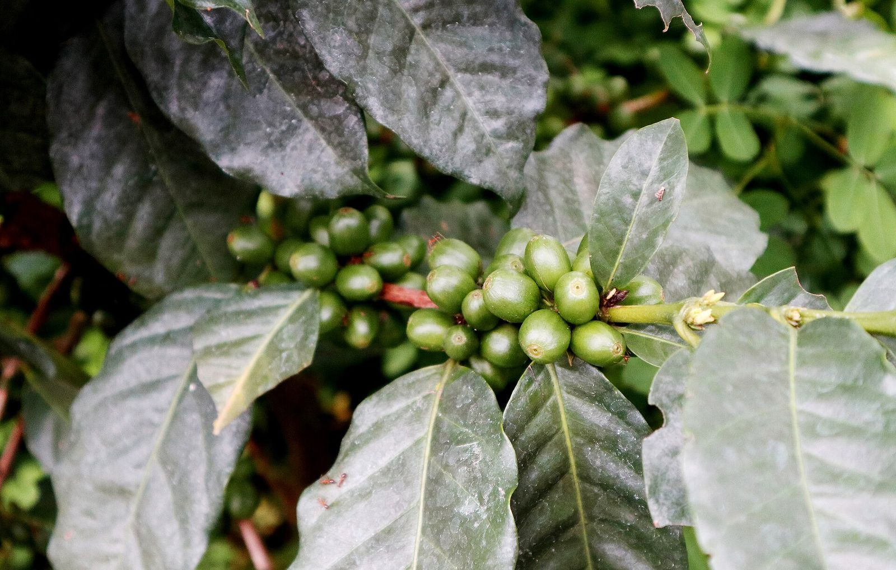
Jeunes fruits sur un caféier en Indonésie, quelques semaines après la floraison. Ils resteront verts et durs pendant des mois.Photo : Mochammad Fadli · CC BY-SA 4.0 · Commons
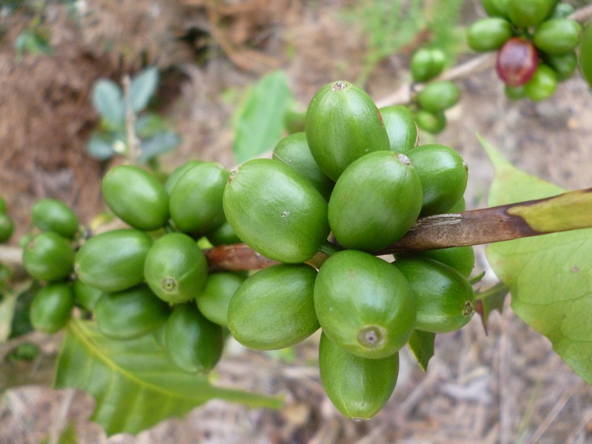
Fruits de Caturra arrivés à leur taille, à San Roque, en Colombie. Dedans, la graine se remplit, mais rien ne se voit encore de dehors.Photo : Aliman5040 · CC BY-SA 3.0 · Commons
Le froid allonge tout. Une étude brésilienne sur le Catuaí a mesuré 205 à 226 jours entre la fin de la floraison et la maturité en zone chaude, et 375 à 396 jours en zone fraîche. Presque le double. Pendant ce temps supplémentaire, la graine se remplit plus lentement et plus complètement, et c'est une des raisons pour lesquelles les cafés d'altitude sont plus denses et plus acides (module 14). Pense à une tomate de fin d'été mûrie lentement sur pied, comparée à une tomate forcée sous serre chauffée.
Faire fleurir sur commande
Dans le Cerrado Mineiro, au Brésil, les grandes plantations irriguées se servent de cette physiologie comme d'un interrupteur. Arrosés sans interruption, les arbres fleuriraient au fil de l'eau, un peu tout le temps. Alors les producteurs coupent l'irrigation pendant la saison sèche, puis arrosent abondamment en une fois. Les boutons s'ouvrent tous ensemble, la maturation devient synchrone, et la récolteuse peut passer. L'Embrapa, l'institut public de recherche agricole brésilien, place cette coupure entre fin juin et début septembre. Dans un essai près de Brasília, environ 70 jours de stress ont donné le meilleur rendement et la plus forte part de cerises mûres. Plus long ou plus intense, le stress coûte de la récolte.
Figure 4.1. Une année type dans le Minas Gerais. Les dates glissent de plusieurs semaines selon l'altitude et l'année. En Colombie ou au Kenya, tu aurais deux cycles décalés sur la même frise.
2. Année pleine, année creuse
Une grosse récolte vide l'arbre. Il a mis ses sucres et son azote dans des milliers de cerises, et il lui en reste peu pour pousser. Or le caféier fleurit sur le bois poussé l'année précédente. Peu de rameaux neufs cette année, c'est peu de nœuds où fleurir l'an prochain, donc une petite récolte. L'année suivante, l'arbre reposé pousse fort, fleurit en masse, et le cycle repart. Les Anglo-Saxons parlent d'on year et d'off year, les Brésiliens de bienalidade.
Figure 4.2. Le bois qui pousse une année porte les fleurs de l'année suivante. Une grosse charge freine la pousse, et la récolte d'après en pâtit. Hauteurs schématiques.
Le phénomène est le plus marqué là où les floraisons sont groupées et les arbres poussés au maximum, c'est-à-dire au Brésil. Comme le Brésil produit à lui seul plus d'un tiers du café mondial, son année creuse se voit sur les marchés. Pour 2025, année creuse, la CONAB, l'agence publique brésilienne de prévision des récoltes, a estimé la récolte d'arabica à 35,2 millions de sacs de 60 kg, 11 % de moins que l'année précédente. Quand tu lis qu'un lot de Brésil est rare ou cher une année donnée, regarde où on en est du cycle.
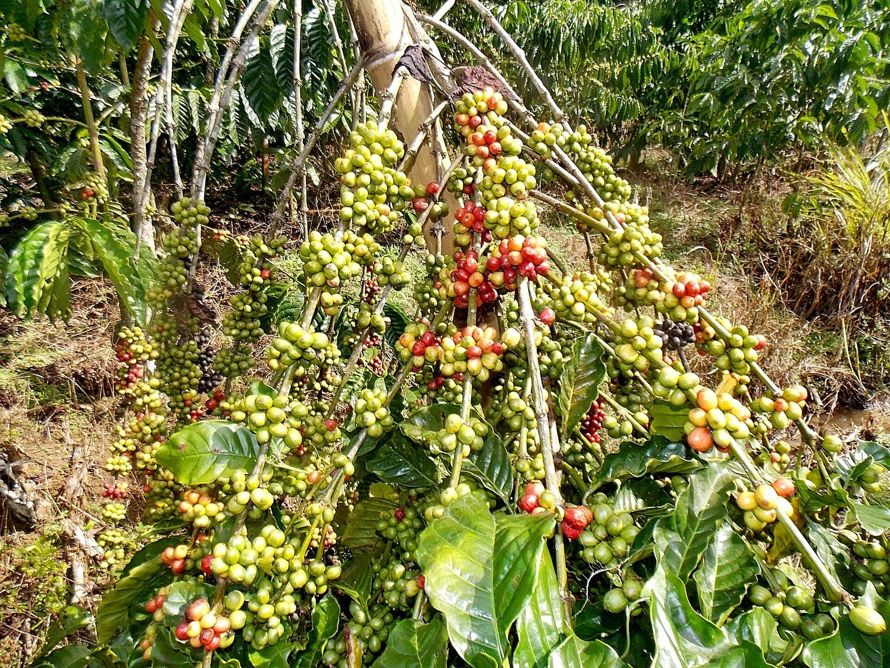
Caféiers très chargés à Pagaralam, dans le sud de Sumatra. Une charge pareille donne une belle année, et l'arbre la paiera la saison suivante si on ne l'aide pas.Photo : Susansumi · CC BY-SA 4.0 · Commons
On ne supprime pas l'alternance, on l'atténue. Trois leviers marchent. La taille d'abord, juste après la récolte : on enlève le bois mort, les gourmands, les branches basses épuisées, et on relance la pousse au bon endroit. La fertilisation ensuite, calée sur la récolte qu'on vient de sortir, pour que l'arbre ne puise pas tout dans ses réserves. L'ombrage enfin, qui limite la charge et lisse les écarts d'une année à l'autre. Un producteur qui veut une qualité constante préfère souvent deux récoltes moyennes à une très grosse suivie d'une très petite. Les arbres s'épuisent moins, et les cerises d'une année trop chargée mûrissent mal, avec plus de petits grains.
The original uploader was DirkvdM at English Wikipedia. · CC BY 1.0 · Commons
3
Densité et lumière
Combien d'arbres, et sous quoi.
Un hectare, c'est un carré de cent mètres de côté, à peu près un terrain de foot et demi. Selon l'endroit où tu te trouves, tu y comptes 2 500 caféiers ou 10 000. Sous de grands arbres ou en plein soleil. En rangs droits pour qu'une machine passe, ou en lignes qui suivent la courbe d'une pente à 40 %. Ces choix-là se font une fois, à la plantation, et le producteur vit avec pendant vingt ans. Un caféier planté aujourd'hui donne sa première vraie récolte vers trois ans et produit vingt ans ou plus si on le renouvelle bien.
Planter serré
En Colombie, la Fédération nationale des caféiculteurs (FNC) indique jusqu'à 10 000 pieds par hectare en plein soleil et 5 000 à 7 000 en agroforesterie. Planter serré paie, jusqu'à un certain point. Dans un essai de Cenicafé, le centre de recherche de la FNC, mené sous ombrage, passer de 2 500 à 10 000 pieds par hectare a plus que doublé la production. Au-delà, les plants se gênent, se disputent la lumière et l'eau, et les rendements deviennent instables d'une année à l'autre.
Ces densités n'ont été possibles qu'avec les variétés naines, Caturra, Catuaí, Castillo et leurs cousines (module 3). Un vieux Typica de trois ou quatre mètres de haut, aux branches longues, ne tient pas à un mètre de son voisin. Un Caturra compact, si. À l'inverse, au Brésil mécanisé, c'est la machine qui fixe l'écart : les récolteuses enjambent le rang, il faut donc des rangs espacés d'environ 3,5 à 4 m, avec des pieds rapprochés sur la ligne.
Quelques repères de densité (ordres de grandeur)
Système
Pieds par hectare
Écartement typique
Où on le voit
Plein soleil, variétés naines, pente
7 000 à 10 000
1 à 1,5 m entre rangs, 1 m sur le rang
Colombie, Amérique centrale
Agroforesterie gérée
5 000 à 7 000
plus large, sous des arbres d'ombrage
Colombie, Costa Rica, Pérou
Mécanisé
3 500 à 5 700
3,5 à 4 m entre rangs, 0,5 à 0,7 m sur le rang
Cerrado, sud du Minas Gerais
Jardin ou semi-forêt
faible et irrégulière
pieds dispersés sous la forêt ou autour de la maison
Éthiopie, une partie de l'Ouganda
Fais le calcul une fois pour le mécanisé : 10 000 m² divisés par 3,5 m × 0,5 m, ça donne environ 5 700 pieds. Avec 4 m × 0,7 m, on tombe à 3 600. Tu retrouves la fourchette du tableau. En Éthiopie, la plus grande partie du café pousse dans des systèmes que les agronomes appellent café de forêt, de semi-forêt et de jardin, avec quelques grandes plantations d'État ou privées. Le café de jardin, quelques dizaines ou centaines de pieds autour de la maison, mélangés aux bananiers à faux tronc (l'enset) et aux légumes, fournit une grosse part de ce que tu bois sous le nom de Yirgacheffe ou de Sidama.
Soleil ou ombre
C'est la question la plus discutée en agronomie du café, et il n'y a pas de réponse unique. Un caféier en plein soleil, bien nourri et irrigué, produit davantage. Mais ses feuilles chauffent, le sol sèche et s'érode, l'alternance s'accentue, et il faut plus d'engrais. Sous un ombrage modéré, avec des légumineuses comme les Inga ou les Erythrina, des bananiers ou des arbres fruitiers, les feuilles restent plus fraîches, la maturation ralentit, le sol reste couvert, les oiseaux et les pollinisateurs reviennent. Le rendement baisse.
Le bon réglage dépend du climat. Là où la chaleur limite la qualité, en basse altitude ou dans les vallées chaudes, l'ombre améliore la tasse. En haute altitude, où il fait déjà frais, trop d'ombre retarde tellement la maturation que les cerises peinent à mûrir et que les maladies fongiques profitent de l'humidité. Clique sur chaque système.
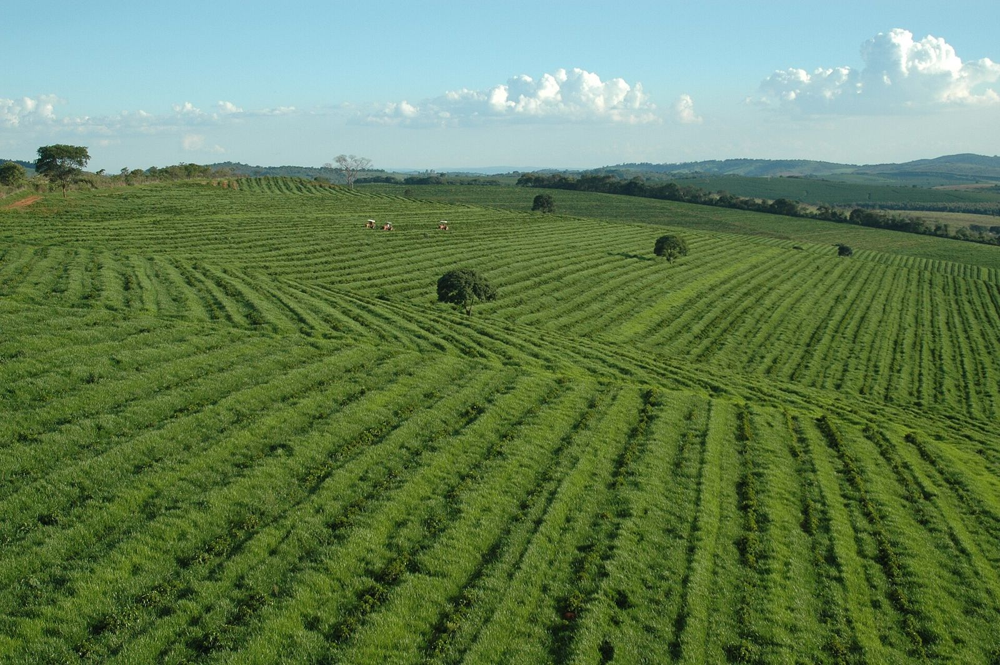
Rangs au cordeau dans une fazenda brésilienne, sans un arbre.Photo : Knase · CC BY 3.0 de · Commons
Plein soleil
Rangs serrés, aucun arbre au-dessus, souvent irrigation et engrais de synthèse. C'est le modèle du Brésil et d'une grande partie de la Colombie depuis les années 1970-1980. Il demande un sol bien nourri et une surveillance serrée de l'érosion sur les pentes. La floraison est groupée, ce qui arrange la récolte.
Rendement
Engrais
Alternance
Biodiversité
Maturation lente
Ombrage modéré
Des arbres plantés exprès, souvent des légumineuses qui fixent l'azote, taillés une ou deux fois par an pour laisser passer la moitié de la lumière ou davantage. C'est le compromis que défendent la plupart des agronomes en Amérique centrale. Le producteur perd un peu de volume et gagne une maturation plus régulière et un sol vivant.
Rendement
Engrais
Alternance
Biodiversité
Maturation lente
Agroforesterie dense, café de forêt
Les caféiers poussent sous un couvert épais, parfois une forêt d'origine, comme dans le sud-ouest de l'Éthiopie. Peu ou pas d'intrants, une récolte faible, des arbres qui vivent longtemps. Le producteur vend aussi du bois, des fruits, du miel. C'est souvent là que se trouvent les cafés les plus « sauvages », et aussi les plus difficiles à suivre lot par lot.
Rendement
Engrais
Alternance
Biodiversité
Maturation lente
Sur la photo d'ouverture de ce chapitre, au Costa Rica, tu vois des arbres d'ombrage coupés court, réduits à un tronc et quelques moignons. Ce n'est pas un abandon. Les producteurs les étêtent chaque année avant la floraison pour faire entrer la lumière, puis les laissent repousser pendant la saison chaude. Les branches coupées restent au sol et nourrissent la terre. C'est de l'ombre qu'on règle comme un store.
4
Tailler, nourrir, protéger
Le travail des mois sans récolte.
Quand la récolte est finie, le travail continue. Entre deux campagnes, le producteur taille, désherbe ou couvre le sol, épand de l'engrais ou du compost, traite ou ne traite pas, replante. Rien de tout ça ne se voit dans la tasse de façon directe. Tout se voit dans la récolte suivante, et dans celle d'après.
La taille
Le caféier fructifie sur le bois de l'année précédente, et pas deux fois au même endroit. Chaque année, la zone productive s'éloigne donc un peu plus du tronc, vers le bout des branches et vers le haut. Laisse faire cinq ou six ans, et tu obtiens un arbre dégarni en bas, chargé en haut, difficile à cueillir et de moins en moins productif. La taille sert à ramener la production là où on la veut.
Il existe plusieurs gestes, du plus léger au plus radical. L'égourmandage retire les gourmands, ces pousses verticales qui partent du tronc et pompent la sève. L'étêtage, que les Brésiliens appellent decote, coupe le haut de l'arbre pour qu'il reste à hauteur de main ou de machine. L'esqueletamento, littéralement la mise au squelette, raccourcit toutes les branches latérales à quelques dizaines de centimètres du tronc : l'arbre ne produit presque rien l'année suivante, puis repart sur du bois neuf. Et il y a le recépage.
La zoca, ou repartir de la souche
En Colombie, le renouvellement passe surtout par la zoca, le recépage. On coupe le tronc à une trentaine de centimètres du sol, à la tronçonneuse ou à la scie, en biais pour que l'eau ne stagne pas. Quelques semaines plus tard, des rejets poussent sur la souche. On en garde un à trois, les plus vigoureux, et on supprime les autres. La production reprend environ deux ans après la coupe.
Choisir la parcelle. Des arbres qui ont donné quatre ou cinq récoltes, dont le rendement baisse et dont le bas est dégarni.
Couper juste après la récolte. Tronc à environ 30 cm, coupe nette et inclinée.
Sélectionner les rejets. Après quelques semaines, garder un à trois rejets bien placés, retirer les autres à la main.
Occuper le terrain. Pendant la première année, beaucoup de producteurs sèment entre les rangs du maïs, des haricots ou des tomates, qui paient une partie de l'attente.
Reprendre la récolte. Environ deux ans après la coupe, puis un cycle de quatre ou cinq récoltes avant la zoca suivante.
Cenicafé raisonne sur des cycles de cinq récoltes entre deux recépages, plus rentables que les tailles partielles. Fais le compte : cinq ans de récolte plus environ deux ans d'attente, ça fait un cycle de sept ans. Pour que la ferme garde une production stable, il faut donc recéper chaque année à peu près un septième des parcelles, soit 14 à 15 %. C'est le chiffre qu'on retrouve dans l'étude de Caravela citée au chapitre suivant, qui comptait 15 % de renouvellement par an. La photo d'ouverture de ce chapitre montre justement des caféiers colombiens avec des tomates tuteurées entre les rangs.
Nourrir le sol
Une récolte emporte surtout de l'azote et du potassium, avec un peu de phosphore, de calcium, de magnésium. Le producteur dose ses apports d'après une analyse de sol (acidité, matière organique, réserves en éléments) et les fractionne pendant la saison des pluies, pour que l'arbre les absorbe au lieu que la pluie les lessive. Les sols de beaucoup de régions caféières sont acides, et il faut souvent apporter de la chaux pour remonter le pH. La pulpe des cerises, compostée, retourne au champ : c'est de la matière organique gratuite, et c'est aussi une façon de régler un déchet encombrant.
Le sol nu est l'ennemi sur une pente. Une averse tropicale emporte la terre fine en une saison. Couvrir le sol, avec des plantes basses, les feuilles tombées, le paillage des branches taillées, limite l'érosion et garde l'humidité. Le désherbage à la houe, qu'on voit sur la carte postale ci-dessus, est encore la règle sur beaucoup de petites fermes. Ailleurs, on fauche entre les rangs et on laisse l'herbe en place.
Le bio
L'agriculture biologique remplace engrais et pesticides de synthèse par le compost, les engrais verts, les légumineuses d'ombrage et un sol couvert en permanence. Ses contraintes sont connues. Les rendements sont souvent plus faibles, il faut plus de main-d'œuvre, la rouille et le scolyte sont plus difficiles à contenir, et la certification coûte cher, avec un surprix qui ne compense pas toujours. Beaucoup de petits producteurs d'Éthiopie ou d'Ouganda cultivent sans aucun intrant de synthèse, parce qu'ils n'en ont pas les moyens, et ne sont pas certifiés pour autant. Sur un paquet, l'absence du logo bio ne veut donc pas dire que le café a été traité.
L'eau
La plupart des caféiers du monde ne reçoivent que la pluie. L'irrigation se trouve surtout au Brésil, dans le Cerrado et dans l'ouest de l'État de Bahia, où des pivots arrosent des centaines d'hectares, et au Vietnam, où les producteurs de robusta pompent dans les nappes pendant la saison sèche. Partout ailleurs, une saison des pluies en retard ou trop courte se paie directement en récolte. L'autre grande consommation d'eau arrive après la cueillette, dans les stations de lavage (module 5).
Les ennemis au champ
Tu as vu la rouille orangée, le scolyte et l'anthracnose des baies au module 2. Retiens ici leur effet sur la récolte. La rouille fait tomber les feuilles : l'arbre affaibli pousse peu, et c'est la récolte de l'année suivante qui s'effondre. L'épidémie de 2012-2013 en Amérique centrale a fait perdre à la région une part considérable de sa production pendant plusieurs campagnes. Le scolyte, un petit coléoptère, pond dans la cerise et la graine. Les cerises attaquées sont plus légères, elles flottent au bassin, et la graine percée finit en défaut. Cenicafé recommande de ne laisser aucune cerise mûre, surmûre ou sèche sur l'arbre ni au sol en fin de récolte, pour priver l'insecte de refuge. La récolte soignée est aussi une méthode de lutte.
Les travaux de l'année, et ce qu'ils changent pour toi
Travail
Quand
Si c'est mal fait
Ce que tu peux voir ou goûter
Taille, recépage
juste après la récolte
arbres dégarnis, récoltes en dents de scie
disponibilité irrégulière d'un même producteur
Fertilisation, chaux
pendant les pluies, fractionnée
remplissage incomplet, grains petits
plus de grains légers, tasse plus creuse
Couverture du sol
toute l'année
érosion, sécheresse au pied
rien de direct, mais des rendements qui baissent
Lutte contre la rouille
saison des pluies
défoliation, récolte suivante effondrée
prix qui montent, origines qui disparaissent de la carte
Ramassage du scolyte
pendant et après la récolte
grains percés
défauts au tri, goût terreux ou sale si mal trié
5. Ce que coûte un kilo de café à la ferme
Là où l'on cueille à la main, la main-d'œuvre peut représenter la moitié du coût de production, et la récolte en est le premier poste, loin devant les engrais. C'est ce qui sépare le Brésil mécanisé des pentes d'Amérique centrale, de Colombie ou d'Afrique de l'Est. Une même livre de café vert ne coûte pas la même chose à produire selon que la cerise a été décrochée par une machine en une après-midi ou par cinq passages de cueilleurs sur trois mois.
Les chiffres de Caravela
En 2018, l'importateur Caravela Coffee, à travers son programme d'accompagnement PECA, a publié une étude rare. Elle reconstitue le coût de production d'une ferme familiale type de 3 hectares, produisant 25 à 30 sacs de parche par hectare, dans six pays d'Amérique latine. Tout y passe : main-d'œuvre familiale et salariée, engrais, traitements, renouvellement de 15 % des arbres par an, petit matériel, transport jusqu'à l'acheteur. Les chiffres datent, et ils ont augmenté depuis avec les salaires et le prix des engrais. Ils restent la meilleure base publique pour comparer.
Coût de production d'une ferme familiale de 3 ha (Caravela Coffee, 2018)
Pays
$ par livre de parche
$ par livre de vert (÷ 0,8)
$ par kilo de vert
Nicaragua
1,05
≈ 1,31
≈ 2,9
Colombie
1,19
≈ 1,49
≈ 3,3
Salvador
1,28
≈ 1,60
≈ 3,5
Pérou
1,28
≈ 1,60
≈ 3,5
Guatemala
1,40
≈ 1,75
≈ 3,9
Équateur
1,91
≈ 2,39
≈ 5,3
Brésil mécanisé
hors étude ; nettement plus bas grâce à la récolte mécanique et aux grandes surfaces
La conversion compte, parce que le marché raisonne en café vert et qu'une livre de parche ne donne qu'environ 0,8 livre de vert : le déparchage retire un cinquième du poids. Pour passer au kilo, multiplie par 2,2. Retiens l'ordre de grandeur, 3 à 5 dollars le kilo de vert, juste pour couvrir les frais d'une petite ferme en 2018. L'Équateur est le plus cher de la liste à cause de ses salaires, plus élevés que chez ses voisins, et d'une économie en dollars.
Face au prix de New York
Le prix de référence mondial de l'arabica est le contrat « C », coté à la bourse de New York (ICE) en cents de dollar par livre de café vert. C'est un prix pour un café lavé de qualité courante, livré dans un entrepôt agréé. Entre 2018 et 2020, il est souvent descendu sous 1,10 $ la livre. Compare avec le tableau : à ce prix-là, aucune des fermes de l'étude ne couvrait ses coûts. Beaucoup de producteurs ont vendu à perte, laissé des parcelles sans engrais, ou les ont abandonnées pour partir travailler ailleurs, souvent vers les États-Unis. Puis le marché s'est retourné, avec une flambée en 2024-2025 au-delà de 3 $ la livre, après de mauvaises récoltes au Brésil et au Vietnam.
Les cafés de spécialité se vendent en général plus cher que le C, avec une prime qui dépend de la note, du lot et de la relation entre acheteur et producteur. Mais beaucoup de contrats restent indexés sur le C plus un différentiel, si bien qu'un C très bas tire tout le monde vers le bas, spécialité comprise.
≈ 12,5 Mde fermes caféières dans le monde (Enveritas)
< 5 hapour la très grande majorité d'entre elles
1,80 $/lbprix minimum Fairtrade du lavé depuis 2023
2,00 $/lbannoncé par Fairtrade à partir du 1er décembre 2026
Le revenu vital
Couvrir ses coûts ne suffit pas à vivre. Le living income, ou revenu vital, est le revenu net qui permet à un ménage producteur de vivre décemment : se nourrir correctement, se loger, se soigner, envoyer les enfants à l'école, mettre un peu de côté. Fairtrade en tire des prix de référence par pays. Pour la Colombie, fin 2022, ce prix était de 14 400 pesos par kilo de parche sec, soit environ 3 $ le kilo. Ramené au café vert, ça fait environ 3,75 $ le kilo, autour de 1,70 $ la livre. Mets ce chiffre à côté des 1,10 $ du C en 2019 et tu comprends le problème.
Fairtrade fixe aussi un prix minimum garanti, qui joue comme un filet quand le C s'effondre. Pour l'arabica lavé, il est de 1,80 $ la livre depuis août 2023, plus une prime de 0,20 $ versée à la coopérative pour des projets collectifs, et un différentiel de 0,40 $ pour le café bio. Fairtrade a annoncé le passage du minimum à 2,00 $ la livre au 1er décembre 2026. L'Organisation internationale du café (ICO) finance de son côté, depuis 2019, des études de revenu vital pays par pays.
Et ton kilo à 26,40 €
Fais le calcul une fois, ça remet les choses en place. Un kilo de café torréfié demande environ 1,18 kg de café vert, puisque la torréfaction fait perdre autour de 15 % du poids. À 3,3 $ le kilo de vert, le coût de production colombien de Caravela, la part « ferme » de ton kilo tourne autour de 4 $. Au prix minimum Fairtrade de 1,80 $ la livre, soit environ 4 $ le kilo de vert, elle monte vers 4,70 $. Les lots de spécialité se paient souvent bien plus, parfois le double ou le triple, mais on reste dans une petite fraction du prix que tu paies à ton torréfacteur.
Le reste se répartit entre le traitement et le tri à l'origine, l'exportateur, le transport maritime, l'importateur, le stockage, la torréfaction (gaz, machine, salaires parisiens, loyer), le conditionnement, les pertes, et la marge de chacun. Ce que paie Ïota à la ferme pour chacun de tes cafés, tu ne le sais pas : demande-le. Certains torréfacteurs publient leurs prix d'achat, d'autres les donnent volontiers à leurs clients professionnels.
6
Mûre ou pas
La question qu'on se pose des millions de fois par jour.
Pendant la récolte, devant chaque grappe, le cueilleur décide en une demi-seconde : celle-là oui, celle-là pas encore. Cette décision pèse plus lourd sur ta tasse que presque tout ce qui viendra ensuite. Un process peut révéler ou transformer une cerise, un torréfacteur peut la mettre en valeur, mais une graine immature ne rattrapera jamais son retard. Elle n'a pas fini de se remplir, et rien en aval ne lui rendra les sucres qui lui manquent.
Pense à un panier de fraises de supermarché en mars, blanches au pied. Tu peux en faire une confiture, ajouter du sucre, les cuire longtemps : elles ne goûteront jamais la fraise de juin. Avec le café, c'est pire, parce qu'on ne voit pas toujours le problème avant la tasse.
Quatre indices
La couleur d'abord. Sur une variété rouge, la cerise passe du vert au jaune, puis à l'orange, au rouge vif et enfin au bordeaux presque noir. On cherche un rouge franc et brillant, uniforme jusqu'au pédoncule, sans plage verte ou jaune près de la queue. Les variétés jaunes, comme le Bourbon jaune ou le Catuaí jaune, sont mûres à un jaune doré soutenu, plus difficile à juger à l'œil, et certaines variétés comme le Bourbon rose passent par des teintes intermédiaires. Les cueilleurs débutants s'y trompent souvent.
Le toucher ensuite. Une cerise mûre est souple, elle cède sous le pouce, et si tu la presses les deux graines glissent hors de la peau dans leur mucilage. Une cerise verte reste dure et ne lâche rien. Puis le détachement : la cerise mûre se décroche d'une légère torsion, la verte résiste et arrache parfois un bout de rameau. Les machines exploitent exactement cette différence de force d'arrachement. Le quatrième indice se mesure, c'est le sucre.
Cerises à tous les stades sur une même branche, en Colombie. Pour ne cueillir que les rouges, il faudra repasser plusieurs fois sur cet arbre.Photo : U. S. Fish and Wildlife Service - Northeast Region · Public domain · Commons
Le réfractomètre
Une goutte de jus de pulpe sur un réfractomètre portatif donne le degré Brix, soit les grammes de matière sèche dissoute, surtout des sucres, pour 100 g de jus. C'est le même outil que celui des vignerons avant les vendanges, et le même que celui que tu peux utiliser pour mesurer l'extraction d'un café (module 8), avec une échelle différente.
Étalonner. Une goutte d'eau distillée sur le prisme, on règle à zéro. On essuie.
Échantillonner. Une dizaine de cerises prises sur plusieurs arbres et à plusieurs hauteurs, jamais les plus belles seulement.
Presser. On écrase la pulpe de quelques cerises pour en tirer quelques gouttes de jus, sans la graine.
Lire. On dépose le jus, on ferme le volet, on lit à la lumière. On note la valeur avec la parcelle, la date et la couleur.
Recommencer. Une mesure ne veut rien dire. C'est la série, jour après jour, qui permet de choisir la date de récolte.
Une cerise mûre titre en général 18 à 24 °Brix. Les sources varient un peu : 18 à 24 selon Green Coffee Collective, 18 à 22 selon WikiFarmer, 15 à 25 dans la fourchette plus large de Barista Hustle. En dessous de 15, elle est nettement immature. Très au-dessus de 24, elle est au pic ou commence à sécher sur la branche. Les valeurs bougent avec la saison, jusqu'à 26 en saison sèche et environ 18 en saison des pluies selon un acheteur de Medellín cité par Barista Hustle, et elles sont souvent plus élevées sur les variétés jaunes. Le Brix mesure le sucre de la pulpe, pas celui de la graine. Il sert surtout à bâtir les repères d'une ferme et à choisir le jour d'une récolte groupée ou mécanique.
Figure 4.3. Échelle de maturité d'une cerise de variété rouge. Le cercle pointillé marque la fenêtre de cueillette. Les valeurs de Brix sont des ordres de grandeur qui varient avec la variété, la saison et l'altitude.
Les Brésiliens, qui récoltent beaucoup en mélange, ont des mots pour chaque état, et tu les croiseras sur les fiches de lots brésiliens : verde pour la verte, verde-cana pour la verte qui jaunit, cereja pour la cerise mûre, passa pour la cerise surmûre qui commence à se rider comme un raisin, et seca ou boia pour la cerise sèche. Un lot vendu comme « cereja descascado » a été fait avec la fraction mûre, séparée des autres (module 5).
Ce que donnent les erreurs en tasse
Mûre
Remplissage terminé, pulpe sucrée. C'est elle qui donne les notes que promet l'étiquette.
fruits rouges
caramel
agrumes
sucre de canne
Immature
Graine incomplète, pauvre en sucres et en acides aminés. Astringente, verte, avec une amertume sèche qui accroche la langue. Après torréfaction, elle reste pâle : c'est le quaker.
herbe
foin
cacahuète
papier
Surmûre
Elle fermente sur l'arbre. Levures et bactéries transforment ses sucres en alcool, puis en acide acétique. Un peu donne du vineux, trop donne du vinaigre.
vin
alcool
vinaigre
fruit trop cuit
Sèche sur l'arbre
Oubliée au passage précédent, elle a séché sur la branche. Légère, elle flotte. Risque de moisissures et d'ochratoxine. Séchée à part, elle donne un second choix.
bois
terre
moisi
jute
La cerise oubliée finit par sécher sur la branche, puis par tomber. Les Brésiliens rangent la cerise sèche dans le café boia, le « flotteur », parce qu'elle flotte au bassin de réception. Celle qu'on ramasse au sol porte un autre nom, le café de varrição, le café balayé, le plus bas de l'échelle : il a traîné dans la terre, il a souvent pris l'humidité, et il goûte la terre et le moisi. Mélangés aux mûres, ces cafés dégradent tout le lot. Séparés, ils font un café de second choix vendu sur le marché intérieur ou pour le soluble.
Il existe trois grandes façons de récolter le café, plus une intermédiaire. Le choix ne dépend presque jamais d'une philosophie. Il dépend du relief, de l'homogénéité de la maturation, du coût de la main-d'œuvre et du marché qu'on vise. Une pente à 40 % au Huila n'a jamais vu de récolteuse et n'en verra pas. Un plateau du Cerrado avec 2 000 hectares de Catuaí ne sera jamais cueilli à la main. Et aucune méthode n'est mauvaise en soi : au Brésil, une machine bien réglée et lancée au bon moment peut livrer un lot de spécialité, alors qu'une cueillette manuelle bâclée peut ruiner un microlot.
La cueillette sélective
En anglais selective picking, en espagnol graneo en Colombie. Le cueilleur porte un panier ou un seau attaché à la taille, ce qui lui laisse les deux mains libres. D'une main il tient le rameau, de l'autre il décroche les cerises mûres une à une, ou par petits groupes quand toute une grappe est rouge. Les vertes restent. Il reviendra dans dix jours, quinze jours, et encore après. C'est la règle en Colombie, en Amérique centrale, en Afrique de l'Est, au Yémen, et dans presque toutes les zones de montagne.
Un cueilleur expérimenté ramasse environ 50 à 120 kg de cerises par jour selon les sources, 45 à 90 kg selon des chiffres guatémaltèques, et ça dépend énormément du moment de la saison. Au pic, quand les arbres sont rouges, les paniers se remplissent vite. En début et en fin de saison, quand il faut chercher trois cerises mûres par branche, le débit s'effondre, et le coût par kilo grimpe d'autant. Il faut repasser sur chaque arbre tant que des cerises mûrissent : 3 à 6 passages par saison dans la plupart des origines, et 10 à 15 par an en Colombie selon Cenicafé, à cause des floraisons étalées sur l'année. À la fin, on fait souvent un dernier passage, le repase, où l'on prend tout ce qui reste, mûr ou pas, pour nettoyer l'arbre avant la taille et priver le scolyte de refuge. Ce café-là part à part.
L'effeuillage, ou stripping
Le stripping consiste à faire glisser la main fermée le long du rameau, de la base vers la pointe, pour tout faire tomber d'un coup : cerises mûres, vertes, sèches, et pas mal de feuilles. C'est la derriça no pano des Brésiliens, l'effeuillage sur bâche, pratiquée par la majorité des petits et moyens producteurs du pays, et l'usage courant pour le robusta au Vietnam. Le débit double ou triple par rapport à la cueillette sélective, de 120 à 250 kg par jour. Mais la récolte est un mélange, et le tri se reporte sur la suite.
AvantChoisir le jourQuand l'arbre porte environ 40 à 45 % de mûres, 25 à 30 % de vertes et 30 % de sèches, selon l'Université fédérale de Viçosa.
MatinÉtendre la bâcheUne toile sous chaque arbre ou sous un tronçon de rang.
JournéeEffeuillerMain fermée le long des rameaux, tout tombe sur la toile.
Sur placeVannerOn secoue les cerises dans un grand tamis pour faire partir feuilles et brindilles, l'abanação.
SoirEnsacher, mesurerLes cerises partent en sacs vers le lavoir ou le patio, où l'on séparera vertes, mûres et sèches.
AprèsBalayerCe qui est tombé hors de la toile est ramassé à part, le café de varrição.
La récolte mécanique
La récolte mécanique est née au Brésil, où le fabricant Jacto a construit la première récolteuse automotrice en 1979, et le pays reste de loin son principal utilisateur. La machine enjambe le rang comme une machine à vendanger. Deux cylindres hérissés de tiges vibrantes secouent la frondaison des deux côtés, les cerises tombent sur des plaques qui se referment autour du tronc, puis des convoyeurs les montent, les débarrassent des feuilles par ventilation et les versent dans une trémie ou une remorque.
Le point qui surprend : la machine peut être un peu sélective. Une cerise mûre tient moins fort à son rameau qu'une verte. En réglant la fréquence de vibration et la vitesse d'avancement, l'opérateur décroche d'abord les cerises qui tiennent le moins, donc les plus mûres et les sèches, et peut faire deux ou trois passages espacés de quelques semaines. On est loin de la main, mais loin aussi du tout-venant.
Le débit change d'échelle. Selon un enseignant de l'Université fédérale de Viçosa, un ouvrier remplit 6 à 10 mesures de 60 litres par jour, une récolteuse jusqu'à 100 par heure. Une machine remplace donc des dizaines d'ouvriers, et l'Embrapa chiffre à plus de 60 % l'économie sur le coût de récolte. Il lui faut un terrain plat ou en pente douce (30 % au plus pour les modèles récents), des rangs réguliers et larges, des arbres de hauteur uniforme et une maturation groupée. Ce sont les conditions du Cerrado, d'une partie du sud du Minas Gerais et de São Paulo, et presque de nulle part ailleurs.
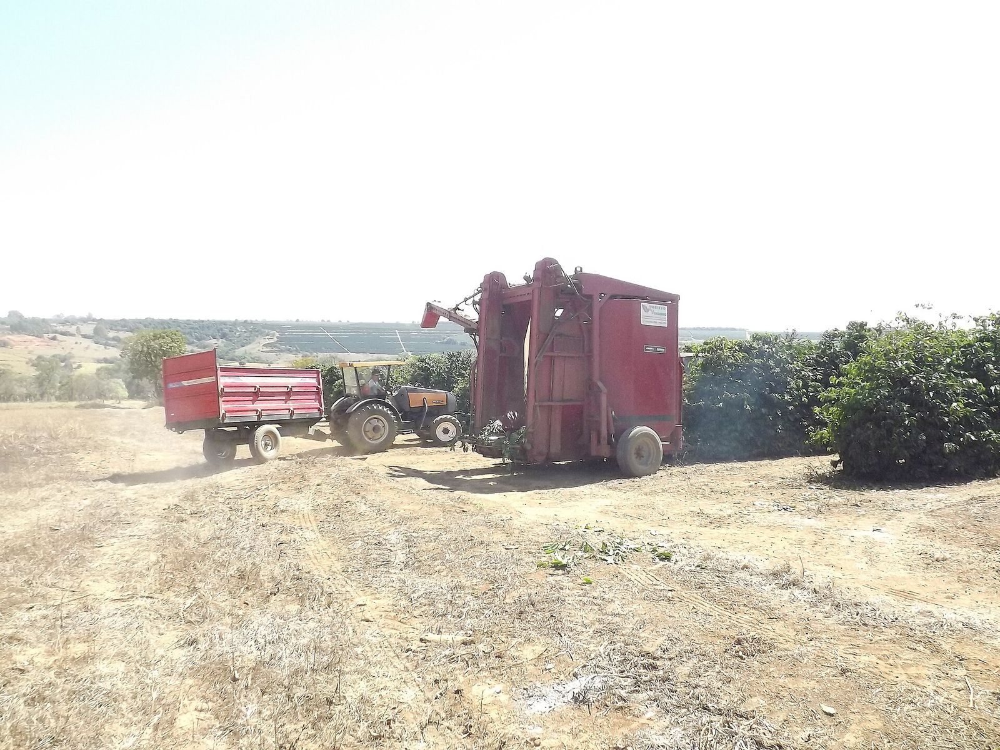
Manœuvre d'une récolteuse au début de la récolte mécanisée à Arapuá, dans le Minas Gerais. La machine enjambe le rang et vide sa trémie dans la remorque.Photo : Tiago Firmino Boaven… · CC BY 3.0 · Commons
La récolte semi-mécanique
Entre les deux, les derriçadeiras portatives sont des peignes vibrants au bout d'une perche, à moteur thermique ou à batterie, que l'ouvrier passe dans la frondaison au-dessus d'une bâche. On les voit sur les pentes où aucune machine ne passe, dans les montagnes du Minas Gerais et de l'Espírito Santo. Selon l'Embrapa, elles multiplient par quatre la productivité de l'ouvrier. Cenicafé en teste en Colombie, où le manque de cueilleurs devient critique. Leur sélectivité reste proche de celle de l'effeuillage : ce qui est sur la branche tombe.
Sélective
Main par main, cerise par cerise, en plusieurs passages. Toutes les pentes. Colombie, Amérique centrale, Afrique de l'Est, Yémen.
Qualité possible
Débit
Coût
Effeuillage
Tout le rameau d'un coup, sur bâche. Un ou deux passages. Majorité du Brésil, robusta du Vietnam.
Qualité possible
Débit
Coût
Semi-mécanique
Peigne vibrant portatif, sur pente. Montagnes du Minas Gerais et de l'Espírito Santo, essais en Colombie.
Qualité possible
Débit
Coût
Mécanique
Récolteuse automotrice, terrain plat, rangs larges. Cerrado, sud du Minas Gerais, São Paulo.
Qualité possible
Débit
Coût
Figure 4.4. Plus une méthode est sélective, plus elle coûte et moins elle débite. La machine gagne tout, sauf le terrain et la sélectivité. Notes indicatives.
Les quatre méthodes côte à côte
Méthode
Coût de récolte
Qualité du lot brut
Terrain
Où
Le tri se fait
Sélective
élevé, premier poste de la ferme
homogène si les cueilleurs sont bien payés et contrôlés
le plus bas (plus de 60 % d'économie selon l'Embrapa)
mélange partiellement réglable
plat ou pente ≤ 30 %
Cerrado, sud du Minas Gerais, São Paulo
par passages réglés, puis au lavoir et à la trieuse
8
Ceux qui cueillent
Payés au poids, sur des pentes, pendant trois ou quatre mois.
La photo d'ouverture date de 1910. Les frères Rodríguez, photographes de Medellín, y ont saisi des chapoleras, comme on appelle en Colombie les cueilleuses de café, paniers à la taille. Un siècle plus tard, le geste est le même, le panier aussi, et la question du salaire n'a pas beaucoup avancé.
Une journée de cueillette
La journée commence tôt, souvent avant 7 h, pour profiter de la fraîcheur. Le cueilleur reçoit une rangée ou un lot d'arbres, et il y passe la journée, panier attaché à la taille, en vidant régulièrement dans un sac posé en bout de rang. En pente, il travaille souvent en remontant, une main accrochée à une branche. En fin d'après-midi, tout le monde descend au point de pesée ou de mesure avec ses sacs. C'est là que se fixe la paie du jour, et c'est aussi le premier contrôle de qualité : un contremaître peut vider un sac, regarder la proportion de vertes, et retenir une partie de la paie s'il y en a trop.
Presque partout, le cueilleur est payé au volume ou au poids. Au Costa Rica, l'unité est la cajuela, une caisse ou un panier d'environ 12 kg de cerises, avec un prix plancher fixé chaque saison par l'institut du café, l'ICAFE. Au Nicaragua, c'est la lata, un bidon d'environ 20 litres. Au Brésil, la mesure de 60 litres. En Colombie, le kilo. Payé au poids, un cueilleur a intérêt à remplir vite son panier, et les cerises vertes pèsent comme les autres. Tout l'enjeu de la cueillette sélective est là : on demande à quelqu'un payé à la tâche de ralentir.
Payer pour la qualité
Les producteurs qui visent la spécialité ont plusieurs façons de faire. Au Costa Rica, certains paient 20 à 40 % au-dessus du prix plancher de la cajuela pour une cueillette soignée. D'autres payent une prime par sac si la proportion de vertes reste sous un seuil, contrôlée par un comptage sur un échantillon. D'autres encore paient à la journée plutôt qu'au poids sur les parcelles destinées aux microlots, pour enlever l'incitation à aller vite. Et beaucoup forment leurs équipes en début de saison, avec un panier témoin de cerises mûres posé au point de pesée. Toutes ces méthodes ont un coût, qui se retrouve dans le prix du café vert.
Migrations, enfants, dettes
La récolte repose sur des migrations saisonnières. Des Nicaraguayens et des familles ngöbe venues du Panama traversent la frontière pour cueillir au Costa Rica. Au Guatemala, des familles indigènes descendent des hauts plateaux vers les fincas avec leurs enfants. Au Brésil, des ouvriers du nord du Minas Gerais et de Bahia descendent chaque année vers les régions caféières du sud. Les cueilleurs sont souvent logés sur place, dans des baraquements dont la qualité varie de correcte à indigne.
Les abus sont documentés. Au Guatemala, l'ONG danoise Danwatch a décrit en 2016 des enfants au travail dès cinq ans, des dettes envers les recruteurs et des papiers d'identité confisqués. L'organisation américaine Verité a documenté des migrants embauchés sans contrat ni protection en Amérique centrale. Les certifications comme Fairtrade ou Rainforest Alliance réduisent le risque sans le supprimer, ce que Rainforest Alliance reconnaît elle-même. Elle applique une démarche « évaluer et traiter », qui cherche les cas et les prend en charge au lieu de se contenter d'une interdiction sur le papier, et finance au Guatemala des centres qui accueillent les enfants pendant la récolte.
La pénurie de bras
Le problème qui monte partout, c'est qu'il manque des cueilleurs. Les jeunes des régions caféières partent en ville, ou vers les États-Unis pour ceux d'Amérique centrale. La Colombie a eu du mal à trouver assez de bras pour ses grosses récoltes de 2024-2025. Les salaires montent, ce qui est une bonne nouvelle pour les cueilleurs et une mauvaise pour les coûts de production. Et des cerises restent sur l'arbre, sèchent, tombent, nourrissent le scolyte. C'est une des raisons pour lesquelles Cenicafé teste les peignes vibrants, et pour lesquelles les cafés cueillis à la main coûteront de plus en plus cher.
9
Les douze premières heures
La cerise cueillie est un fruit qui commence à tourner.
Laisse un sac de cerises fraîches au soleil un après-midi. Le soir, il est tiède au toucher, il sent le fruit trop mûr, puis la levure. Une cerise cueillie reste un fruit vivant : elle respire, elle chauffe en tas, et elle porte sur sa peau les levures et les bactéries qui la feront fermenter. Le cueilleur a fait son travail, mais le lot peut encore être gâché avant la nuit.
D'où la règle des stations : dépulper la cerise pour un lavé, ou la mettre à sécher pour un nature, dans les 6 à 12 heures suivant la cueillette, au plus tard dans la journée. Au-delà, on risque des goûts de ferment, de vinaigre ou de moisi que rien ne rattrapera, ni le process, ni la torréfaction.
7 h à 15 hCueilletteLes sacs pleins attendent à l'ombre, en bout de rang, jamais au soleil.
15 h à 17 hTransportÀ dos d'homme, à mulet, à âne, en moto ou en camion, jusqu'à la station ou au point de collecte.
17 hPeséeOn pèse, on paie ou on note. Premier coup d'œil sur la qualité.
17 h 30FlottaisonDans un bassin, les cerises saines coulent, les flotteurs partent à part.
18 hTriÀ la main sur une table, ou à la machine. On retire vertes et abîmées.
Avant minuitDépulpage ou séchageLe lavé passe au dépulpeur, le nature part sur les lits ou le patio dès le lendemain matin.
Du champ à la station
La journée de récolte s'organise autour de ce délai. En Éthiopie, au Kenya, au Rwanda, au Burundi, chaque petit producteur livre le jour même sa récolte à une station de lavage voisine, parfois après une heure ou deux de marche. Une seule station peut recevoir les cerises de plusieurs centaines de familles. Les stations ouvrent leurs portes l'après-midi, et c'est le soir qu'elles tournent à plein.
À la réception, la cerise est pesée. La pesée fixe la paie du cueilleur ou le prix payé au producteur, et elle sert de premier contrôle : le responsable regarde les sacs, refuse ou déclasse ceux qui contiennent trop de vertes. Dans beaucoup de stations, les cerises de chaque jour forment un lot séparé, ce qui permet ensuite de retrouver la journée d'un café sur une fiche.
Trier dès l'arrivée
Flottaison. Dans un bassin d'eau, les cerises mûres et saines coulent. Remontent les flotteurs : cerises sèches, attaquées par le scolyte ou mal formées, feuilles et brindilles. On les sèche à part en second choix ou on les composte. La plupart des vertes, presque aussi denses que les mûres, coulent avec les bonnes.
Tri visuel. Sur une table, une bâche ou un lit surélevé, des trieuses retirent à la main les vertes, les surmûres et les abîmées. C'est lent, et c'est souvent le travail des femmes.
Tri mécanique ou optique. Les grandes stations utilisent des séparateurs qui dépulpent les cerises mûres, plus molles, et laissent passer les vertes, plus dures. Quelques-unes ont des trieuses optiques de cerises.
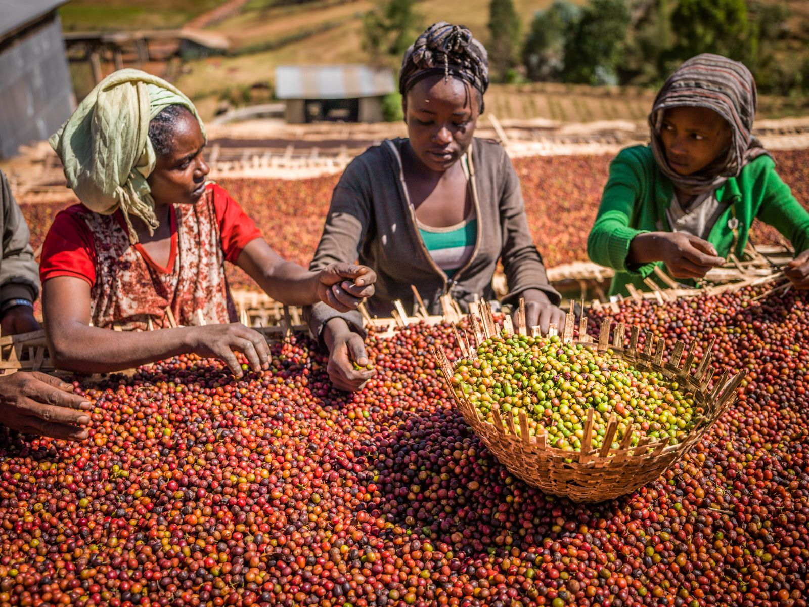
Tri de cerises sur un lit en Éthiopie. Les vertes repérées à l'œil finissent dans le panier, à l'écart du lot.Photo : Niels Van Iperen · CC BY-SA 4.0 · Commons
Après ce tri, la station choisit le traitement : lavé, nature, honey, fermentation pilotée. C'est l'objet du module 5. Un traitement peut révéler ou transformer le potentiel d'une cerise. Il ne répare jamais une cerise immature ou abîmée.
La chaîne des rendements
Suis 100 kg de cerises lavées jusqu'au paquet. La pulpe, le mucilage et l'eau font les quatre cinquièmes du poids : après dépulpage, fermentation, lavage et séchage, il reste environ 20 kg de café parche sec. Le déparchage retire encore un cinquième, la Banque mondiale retient un rendement de 80 %, et il reste 16 à 17 kg de café vert. La torréfaction fait perdre 11 à 16 % d'eau et de matière pour un degré clair à moyen, un peu plus pour un foncé : environ 14 kg de café torréfié. Il faut donc 5 à 6 kg de cerises pour 1 kg de vert (4,5 pour les lots les mieux préparés), et 6 à 7 kg pour 1 kg de torréfié. Un nature passe par la cerise séchée au lieu de la parche, avec un ratio final voisin.
Figure 4.5. Chaîne des rendements d'un café lavé. La hauteur des barres est proportionnelle au poids, et les couleurs sont celles des produits.
Deux calculs reviennent souvent. Pour savoir combien de cerises représente un sac de 60 kg de café vert, divise par 0,165 : environ 360 kg, soit quatre ou cinq journées de cueilleur sélectif à 80 kg. Et pour savoir ce que représente ta consommation : si le coffee shop passe 6 kg de café par semaine, ça fait autour de 40 kg de cerises, toutes cueillies, triées et dépulpées dans la journée à l'autre bout du monde.
10
Le calendrier du monde
Il y a toujours quelque part un pays qui récolte.
Les charrettes peintes du Costa Rica, comme celle de la photo, ont longtemps porté le café des vallées du centre vers le port de Puntarenas, sur le Pacifique, d'où il partait pour l'Europe. Le calendrier du café a toujours été celui des pluies. On récolte du café chaque mois de l'année quelque part dans le monde, mais chaque origine a sa saison, fixée par sa latitude et son régime de pluies.
Au nord de l'équateur (Amérique centrale, Éthiopie, Yémen, Inde, Vietnam), la récolte tombe en général entre octobre et mars. Au sud (Brésil, Pérou, Rwanda, Burundi), entre mars et septembre. Tout près de l'équateur, la Colombie et le Kenya récoltent deux fois par an. Et dans un même pays, plus on monte, plus la récolte est tardive : au Guatemala, les fermes de basse altitude ont fini quand celles de Huehuetenango, au-dessus de 1 600 m, commencent à peine.
Figure 4.6. Saisons de récolte habituelles, de l'hémisphère sud (en haut) à l'hémisphère nord (en bas). Une récolte à cheval sur deux années apparaît en deux morceaux. Les dates exactes changent selon la région, l'altitude et l'année.
De la cueillette à Paris
Un café cueilli n'est pas encore disponible. Il faut le traiter et le sécher pendant une à cinq semaines, le laisser reposer en parche (30 à 60 jours avant l'expédition selon l'importateur Cafe Imports), le déparcher, le trier, l'ensacher, le faire goûter et contrôler, le vendre, obtenir les papiers d'export, puis compter environ six semaines de bateau et le dédouanement. Un lot arrive donc le plus souvent en Europe trois à cinq mois après la cueillette, parfois davantage (module 6). Ton torréfacteur le reçoit, le goûte, cale un profil, et le met en vente dans les semaines qui suivent.
Récoltes et arrivées habituelles en Europe (ordres de grandeur, à confirmer pour chaque lot)
Origine
Récolte principale (et secondaire)
Arrivée en Europe
Brésil, Pérou
mai à septembre
automne-hiver
Rwanda, Burundi
mars à juin (juillet au Burundi)
fin d'été, automne
Colombie
septembre à décembre, mitaca d'avril à juin (selon les régions)
toute l'année
Kenya
octobre à décembre (fly crop vers mai-juillet)
printemps-été
Éthiopie
octobre à janvier
printemps-été
Amérique centrale
novembre à mars, plus tard en altitude
printemps-été
Yémen
octobre à janvier (sources divergentes)
variable
Inde
novembre à février
printemps
Vietnam (robusta)
octobre à janvier
dès l'hiver
Sumatra
octobre à mars (petite récolte au printemps par endroits)
printemps-été
Fresh crop, past crop
On appelle fresh crop, nouvelle récolte, le café vert de la dernière campagne, arrivé depuis peu. Le past crop, ancienne récolte, est le lot de la campagne précédente encore en stock quand la nouvelle arrive. Avec les mois, le café vert perd ses arômes fruités et floraux, son acidité s'arrondit puis s'éteint, et il prend des notes de bois, de carton, de jute. Le phénomène s'accélère avec la chaleur et l'humidité de l'entrepôt, et ralentit beaucoup dans des sacs hermétiques.
La fraîcheur n'est pourtant pas une date de péremption. Un lot bien séché et stocké en sac hermétique peut rester meilleur au bout d'un an qu'un lot récent séché à la hâte. Ce que tu surveilles, c'est la tasse : quand ton café préféré perd son relief en filtre, qu'il devient « plat » et que le fruit laisse place au papier, il est temps de passer à la récolte suivante.
Une carte qui suit les saisons
Tes trois cafés en grains, Éthiopie, Kenya et Guatemala, viennent tous de l'hémisphère nord. Leur récolte principale tombe entre octobre et mars, et leurs nouvelles récoltes arrivent entre le printemps et l'été. En novembre, ton Éthiopie vient donc en principe de la récolte de l'hiver dernier, arrivée en Europe vers le printemps : elle a déjà plusieurs mois de voyage et de stock derrière elle. C'est à l'automne que l'hémisphère sud prend le relais avec ses nouvelles récoltes. Voici une façon de penser la carte sur l'année, à adapter avec ce que propose réellement ton torréfacteur.
AutomneLe sud arriveBrésil, Pérou, Rwanda, Burundi en nouvelle récolte. Un Brésil frais pour la base d'espresso, un Rwanda pour le filtre.
HiverLes cafés rondsLes lots du nord vieillissent : privilégie ceux qui tiennent, les plus denses, et le chocolat en lait.
PrintempsPremières nouvelles récoltes du nordInde, premiers lots d'Amérique centrale, et vers la fin les premières Éthiopie.
ÉtéLa saison des fleursÉthiopie, Kenya, Guatemala d'altitude en pleine fraîcheur. Le moment d'une ardoise « nouvelle récolte » et du café glacé au filtre.
Si tu ne devais garder que ça
Une pluie après une saison sèche fait fleurir le caféier dix jours plus tard. Chaque floraison donne une cohorte de cerises qui mûrissent ensemble, 7 à 9 mois après pour l'arabica.
Floraison groupée (Brésil) : peu de passages, machine possible. Floraisons étalées (Colombie) : 10 à 15 passages par an.
Le caféier fleurit sur le bois de l'année précédente, d'où l'alternance entre années pleines et années creuses.
L'ombre rafraîchit les feuilles et ralentit la maturation, au prix de 18 à 30 % de rendement.
Un recépage tous les cinq récoltes impose de renouveler environ 15 % de la ferme chaque année.
Une petite ferme d'Amérique latine coûtait 3 à 5 $ par kilo de vert à produire en 2018. Le contrat C est souvent passé en dessous entre 2018 et 2020.
Cerise mûre : rouge franc, souple, se détache d'une torsion, 18 à 24 °Brix.
Immature = astringence, verdeur, quakers à la cacahuète. Surmûre = vin, puis vinaigre. Sèche sur l'arbre = bois, terre, moisi.
Sélective, effeuillage, semi-mécanique, mécanique : plus c'est sélectif, plus c'est cher et lent.
6 à 12 heures entre la cueillette et le dépulpage ou le séchage. La flottaison n'écarte pas les vertes.
100 kg de cerises, 20 kg de parche, 16-17 kg de vert, 14 kg de torréfié.
Trois à cinq mois entre la cueillette et l'Europe : l'Éthiopie de l'hiver arrive au printemps, le Brésil de l'été arrive à l'automne.
Sources
Perfect Daily Grind (2018), l'étude de Caravela Coffee sur les coûts de production dans six pays d'Amérique latine.
Rainforest Alliance, démarche « évaluer et traiter » et centres pour les enfants pendant la récolte au Guatemala.
Verité, conditions de travail des cueilleurs migrants en Amérique centrale.
Embrapa et Université fédérale de Viçosa, documents techniques sur le stress hydrique dans le Cerrado, la derriça et la récolte mécanique ; Cenicafé, densités, zoca et nombre de passages ; CONAB, estimation de la récolte brésilienne 2025.
Essais du CIRAD au Costa Rica sur l'ombrage (température des feuilles, productivité, alternance) ; Danwatch (2016), enquête sur le café au Guatemala.
James Hoffmann, L'Atlas mondial du café, chapitres sur la culture et la récolte, et Christophe Servell, Les goûts du café.
Prends un même arbre, une même cueillette, et traite les cerises de quatre façons. Tu obtiens quatre cafés que personne ne rapprocherait à l'aveugle. On va regarder ce qui se passe entre la cerise et le sac, jour après jour, et ce que ça change dans la tasse.
Pose une cerise de café bien mûre sur une table, à 25 °C. Deux jours plus tard elle sent la compote, cinq jours plus tard le vinaigre, et la semaine d'après il y pousse des choses. Elle contient 60 à 70 % d'eau et beaucoup de sucre. Pour les levures et les bactéries, c'est un buffet.
Ce qu'on veut garder se trouve au milieu, et il faut l'amener autour de 11 % d'humidité pour le mettre en sac, lui faire traverser un océan et le conserver un an. Toute l'histoire des process tient dans cette course. Il faut enlever le fruit, ou une partie, ou pas du tout, et sécher la graine avant que ça tourne mal.
Chaque méthode répond à la même question : avec l'eau, le soleil, la pluie, la main-d'œuvre et l'argent que j'ai ici, qu'est-ce que je fais de ce fruit ? Le Kenya a de l'eau et des coopératives équipées, il lave. Le Yémen n'a pas d'eau, il sèche les cerises sur les toits depuis des siècles. À Sumatra il pleut presque tout le temps, alors on a inventé une méthode qu'on ne voit nulle part ailleurs à cette échelle. Le goût est venu après. Longtemps, personne n'a choisi un process pour ses arômes.
Ce qu'il y a autour de la graine
Tu as vu l'anatomie complète au module 2. Pour suivre ce module, il te faut surtout ces quatre couches, parce que chaque process se définit par celles qu'il enlève, et quand.
Figure 5.1. Une cerise en coupe. Le lavé retire peau, pulpe et mucilage avant de sécher. Le honey garde le mucilage. Le nature garde tout. Chez une vraie cerise il y a deux graines, face plate contre face plate.
60-70 %d'eau dans une cerise fraîche
≈ 50 %dans un café tout juste lavé
≈ 11 %la cible pour le sac (10 à 12 %)
5 à 6 kgde cerises pour 1 kg de café vert
Le mucilage mérite qu'on s'y arrête, parce que c'est le personnage principal de ce module. C'est une couche de un ou deux millimètres, presque translucide, qui colle aux doigts comme du blanc d'œuf. Elle contient beaucoup d'eau, des sucres (glucose, fructose, saccharose) et des pectines. Les pectines sont ce qui fait prendre tes confitures, et ce sont elles qui empêchent le mucilage de partir au simple rinçage. Il faut donc soit le casser par fermentation, soit l'arracher à la machine, soit le laisser sécher sur la graine.
2. Les cinq voies côte à côte
Clique sur chaque process. Le dessin montre ce qui reste autour de la graine pendant qu'elle sèche, et les barres donnent une tendance en tasse sur 5. Ce sont des tendances, un nature raté n'aura ni fruit ni douceur.
Il ne reste que la parche.
Lavé
On retire peau et pulpe le jour de la cueillette, on fermente pour décoller le mucilage, on rince, et on sèche la graine dans sa parche. Le fruit a à peine le temps de marquer le café.
jasmin
bergamote
citron
thé noir
cassis (Kenya)
Acidité
Clarté
Fruité
Corps
Risque
Eau
Le mucilage sèche sur la parche.
Honey
On dépulpe, mais on ne fermente pas en cuve et on ne lave pas. La graine sèche enrobée de tout ou partie de son mucilage. Aucun miel là-dedans, le nom vient de l'aspect collant et ambré.
miel
sucre roux
abricot
pêche jaune
prune
Acidité
Clarté
Fruité
Corps
Risque
Eau
La cerise entière sèche.
Nature
On étale les cerises entières et on attend, deux à cinq semaines, en les retournant sans arrêt. À la fin, on casse en une fois la coque sèche. La plus vieille méthode, et la plus facile à rater.
myrtille
fraise
vin rouge
chocolat au lait
sucre brun
Acidité
Clarté
Fruité
Corps
Risque
Eau
Graine nue, encore humide.
Giling basah
À Sumatra, on retire la parche alors que la graine est encore molle, à 30-35 % d'humidité, puis la graine nue finit de sécher au soleil. Partout ailleurs on décortique à 11 %.
terre humide
cèdre
épices
cacao amer
tabac
Acidité
Clarté
Fruité
Corps
Risque
Eau
Cerises ou grains dépulpés, en cuve scellée, puis finition au choix.
Anaérobie et fermentations pilotées
On enferme le café dans une cuve hermétique, sans air, pendant 24 à 120 heures ou plus, en surveillant la température et le pH. Ensuite on termine en lavé, en honey ou en nature. C'est une étape de plus, ajoutée à une des voies ci-dessus.
mangue
fruit de la passion
cannelle
rhum
bonbon
Acidité
Clarté
Fruité
Corps
Risque
Eau
Figure 5.2. Durées typiques, à prendre comme des ordres de grandeur : elles changent avec le climat et l'altitude. Après le séchage, tous ces cafés reposent encore plusieurs semaines (module 6).
C'est la méthode de presque tout ce que tu bois de clair et de net. Éthiopie, Kenya, Rwanda, Colombie, Amérique centrale. Elle coûte cher en eau et en équipement, ce qui explique qu'elle se soit installée dans des stations collectives où les petits producteurs apportent leur récolte du jour. En Éthiopie, une seule station peut recevoir les cerises de plusieurs centaines de familles.
Jour 0, après-midiFlottaisonDans un bac d'eau, les cerises mûres coulent. Celles qui flottent (sèches, véreuses, mal remplies) partent de leur côté.
Jour 0, soirDépulpageDans les 6 à 12 heures après la cueillette. Un disque ou un tambour écrase la cerise et sépare la graine, encore enrobée de mucilage.
Jours 0 à 2Fermentation12 à 72 heures en cuve, à sec ou sous l'eau. Levures et bactéries mangent le mucilage.
Jour 2LavageOn brasse le café dans de longs canaux. Les grains lourds restent au fond, les légers suivent le courant.
Jours 2 à 20SéchageEn parche, sur lits ou patios, une à trois semaines. Les premières heures à l'ombre, pour ne pas fendre la parche.
EnsuiteReposUn à deux mois en parche, en entrepôt, avant décorticage et tri.
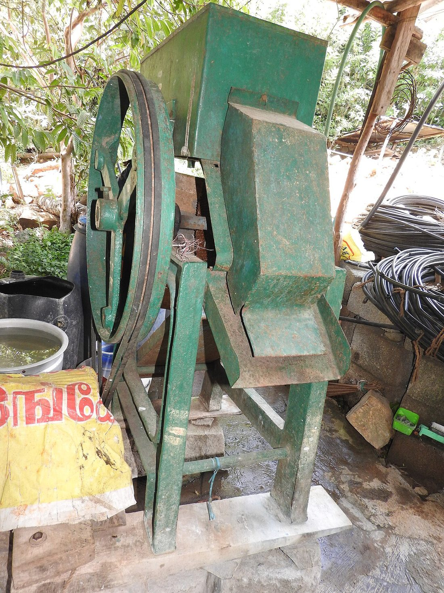
Un dépulpeur à manivelle en Inde. Le principe n'a pas bougé depuis un siècle : la peau part d'un côté, la graine gluante de l'autre.Photo : Yercaud-elango · CC BY-SA 4.0 · Commons
Le test du gravier
Dans le lavé, la fermentation sert à une seule chose, décoller le mucilage. Le fermier plonge la main dans la cuve, attrape une poignée de grains et les frotte sous l'eau. Tant que ça glisse, on attend. Quand ça crisse entre les doigts, comme du gravier mouillé, c'est prêt, et il faut laver dans l'heure.
Le temps dépend presque entièrement de la température. Sur des hauts plateaux où les nuits sont fraîches, comme en Éthiopie à 2 000 m, il faut souvent 36 à 48 heures. Au chaud, 12 heures peuvent suffire. Les stations bien tenues suivent aussi le pH : il part de 5,5-6 et descend vers 4-4,5. Si tu laisses filer, le café devient aigre, puis il prend le goût qu'on appelle surfermenté, entre le vinaigre, l'oignon et le fruit oublié au fond d'un sac.
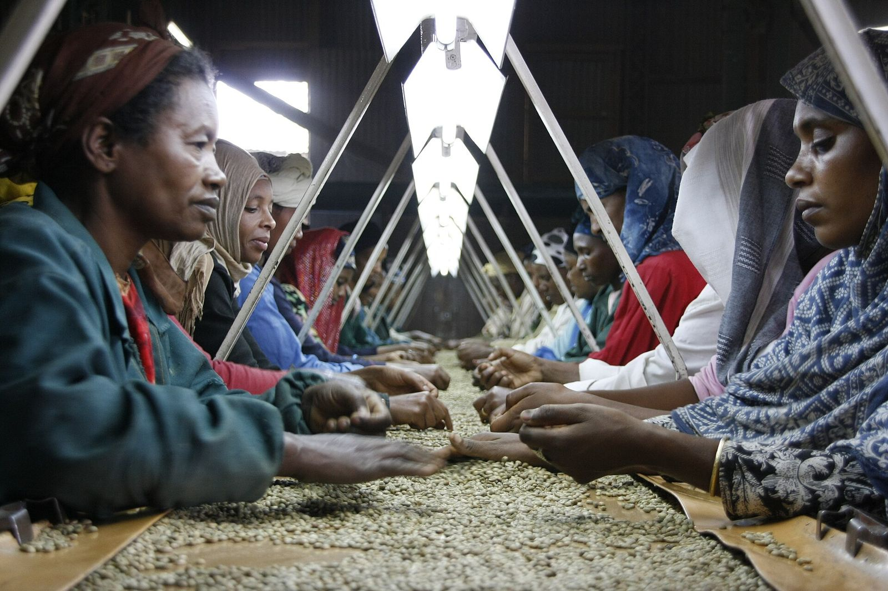
Tri du café parche à la main pendant le séchage : chaque grain taché ou abîmé retiré ici ne finira pas dans ta tasse.Photo : DFID - UK Department for International Development · CC BY 2.0 · Commons
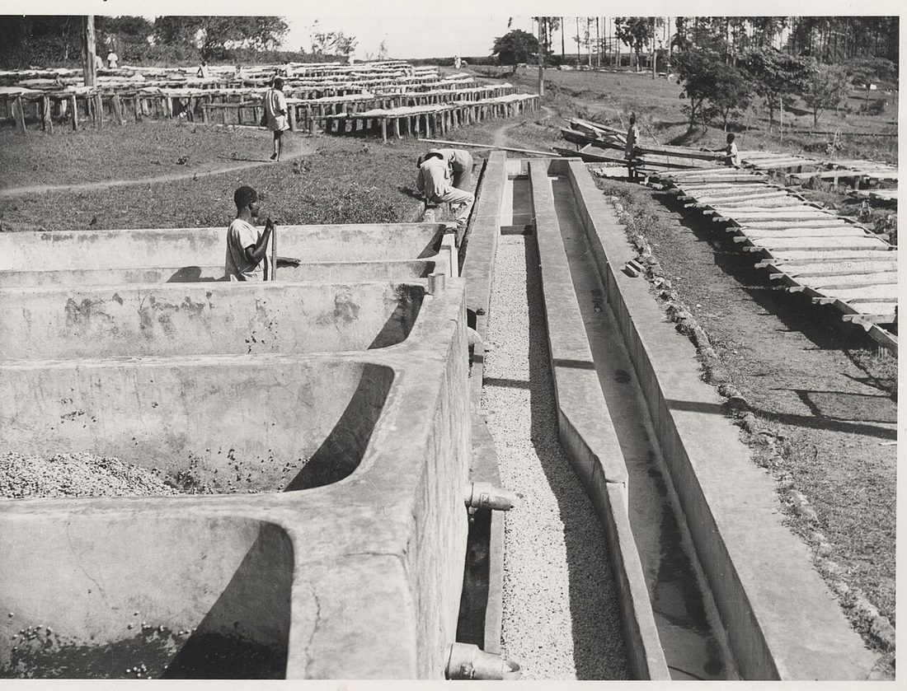
Cuves et canaux d'une plantation d'Éthiopie dans les années 1950 (Touring Club Italiano). Ces bassins en maçonnerie existent encore, presque identiques, dans beaucoup de stations.Photo : Unknown authorUnknown author · CC BY-SA 4.0 · Commons
Le Kenya fait durer le plaisir
Les Kenyans ajoutent une étape que personne d'autre n'avait généralisée. Après 12 à 24 heures de fermentation et un premier lavage, le café repart soit pour une deuxième fermentation de même durée, soit pour un trempage dans de l'eau propre jusqu'à 24 heures. Selon les « factories » (c'est le mot local pour les stations), on parle de double fermentation, de double lavé ou simplement de process kenyan. Cette étape finit de dissoudre les résidus, et les producteurs lui attribuent une partie de l'acidité juteuse du café kenyan. Personne ne l'a isolée proprement dans une étude, parce qu'il y a aussi les variétés SL28 et SL34, l'altitude, le sol. Les disques des dépulpeurs et les canaux trient déjà par densité, ce qui explique en partie la régularité des meilleurs lots.
Les machines qui suppriment la cuve
Dans une station classique, on consomme couramment 4 à 15 litres d'eau par kilo de cerises, et l'eau rejetée, acide et sucrée, tue les rivières si personne ne l'épure. D'où les démucilagineurs : le café sort du dépulpeur et passe dans une machine qui arrache le mucilage par friction, sans fermentation ou presque. Selon le magazine de la Specialty Coffee Association, les modèles récents descendent à 1,2-2,4 litres par kilo de café vert. En Colombie, c'est devenu très courant. La tasse sort propre et régulière, souvent un peu moins éclatante, raison pour laquelle les lots haut de gamme restent fermentés.
Ce que ça donne en tasse
Un bon lavé se reconnaît à ce qu'il ne « sent pas le process ». Tu sens l'origine, la variété, l'altitude. Le corps reste léger, comme un thé noir costaud, et l'acidité est dessinée, elle a un début et une fin.
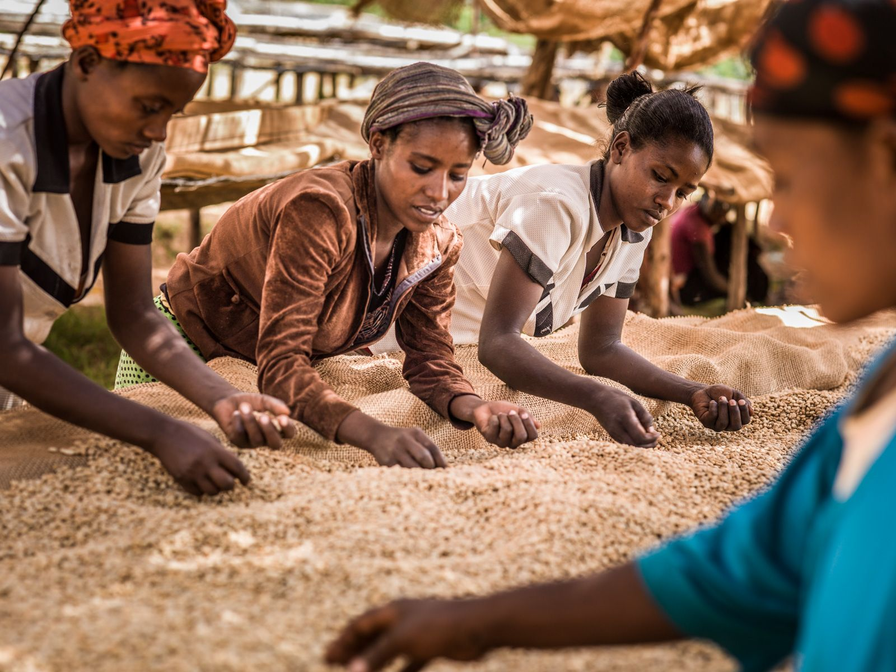
Éthiopie lavé
Yirgacheffe, Gedeo, Sidama. Le lavé le plus parfumé qui existe, on dirait un thé à la bergamote avec des fleurs dedans.
jasmin
bergamote
citron
thé
Kenya lavé
Nyeri, Kirinyaga. Acidité très marquée et juteuse, avec une note de cassis et parfois de tomate. Ça surprend la première fois, puis on en redemande.
cassis
pamplemousse
tomate
sucre de canne
Colombie lavé
Huila, Nariño. Le café qui met tout le monde d'accord, rond et sucré avec une acidité de fruit frais.
caramel
pomme rouge
orange
Guatemala lavé
Antigua, Huehuetenango. Plus de corps que les précédents, du chocolat, et une acidité nette quand on monte en altitude.
La cerise entière, le soleil, et beaucoup de patience.
C'est la méthode d'origine, en Éthiopie et au Yémen. Le principe tient en une phrase, on sèche le fruit entier et on l'ouvre à la fin. Dans la pratique, c'est la méthode où l'on se plante le plus. La graine passe des semaines enfermée dans une pulpe sucrée et humide, et il faut que ça sèche assez vite pour que la fermentation reste une note de fond.
Pendant longtemps, nature voulait dire bas de gamme, parce qu'on y mettait ce qui restait : cerises vertes, cerises tombées, tout ce qu'on n'envoyait pas au lavage. Depuis une quinzaine d'années, des producteurs appliquent au nature le soin du lavé, avec un vrai tri et des lits surélevés, et ça a changé son image.
Jour 0TriFlottaison, puis tri à la main. Une cerise verte séchée avec les autres donnera un grain pâle et astringent.
Jours 1 à 5Couche fineQuelques centimètres au plus, moins sur les beaux lots. On retourne très souvent, parfois toutes les heures aux moments chauds.
Jours 5 à 20Rouge, puis brunLa cerise fonce et se ride comme un raisin sec. On couvre la nuit et dès qu'il pleut.
Jours 20 à 35Fin de séchageLes cerises deviennent presque noires, et on entend la graine tinter dans la coque. Cible 10 à 12 %.
EnsuiteRepos, décorticageLe café repose en coque, puis une machine casse d'un coup peau, pulpe et parche séchées.
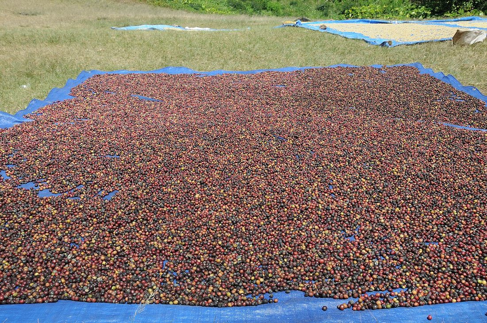
Cerises en train de sécher à Wae Rebo, sur l'île de Flores, en Indonésie.Photo : Josep M. Gracia · CC BY-SA 4.0 · Commons
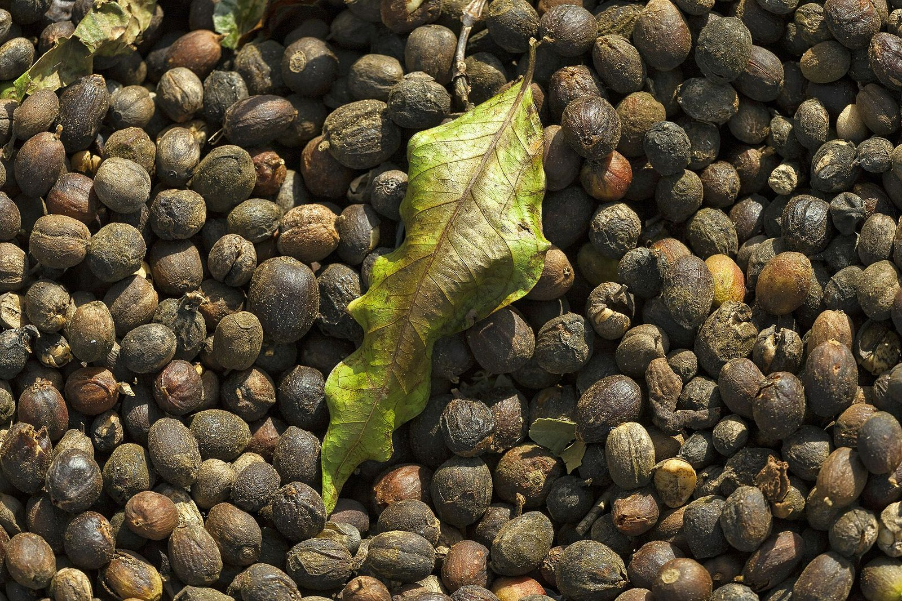
En fin de séchage, la cerise est brune, ridée et cassante. Secouée, elle fait entendre la graine.Photo : Jonathan Wilkins · CC BY-SA 3.0 · Commons
Où ça déraille
Une couche trop épaisse ou mal retournée chauffe et fermente sans contrôle, avec vinaigre, alcool et compost à la clé. Une pluie sans bâche ouvre la porte aux moisissures, dont certaines produisent de l'ochratoxine A, une toxine réglementée. À l'inverse, un soleil trop fort sèche en surface, durcit le fruit et donne un café plat. Le lit surélevé (on dit « lit africain ») a changé la donne : l'air passe dessus et dessous, le séchage est plus régulier, et les trieuses travaillent debout.
Pourquoi l'Éthiopie sent la myrtille et le Brésil le chocolat
Même process, cafés sans rapport. Un nature amplifie ce qu'il y a déjà dans le fruit et n'invente rien. En Éthiopie, tu as des variétés locales très aromatiques, 1 900 à 2 200 m d'altitude, des cerises cueillies mûres et un séchage lent sur lits : la tasse part sur les fruits rouges et le vin. Au Brésil, tu as du Mundo Novo ou du Catuaí, autour de 800 à 1 200 m, souvent une récolte à la machine qui mélange les maturités, et un séchage rapide sur patio en saison sèche. Là, la tasse part sur le cacao, la noisette et le sucre brun, et c'est pour ça que le Brésil nature fait une si bonne base d'espresso.
Éthiopie nature
Guji, Sidama, Harrar. Une bombe de fruits, à la limite du vin quand c'est poussé.
myrtille
fraise
vin
fleurs
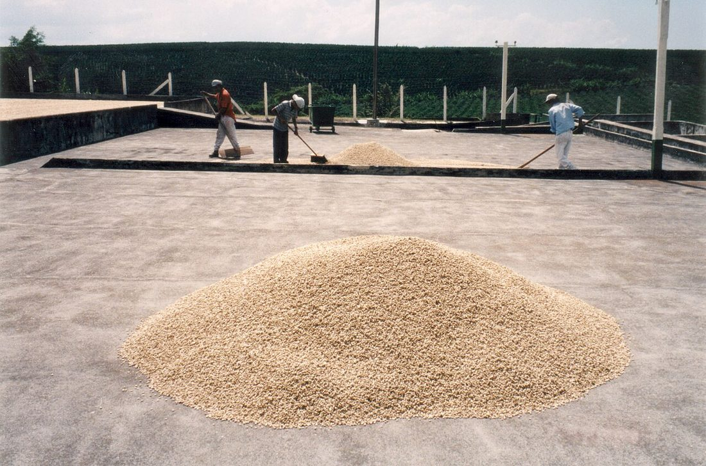
Brésil nature
Cerrado, Sul de Minas. Doux, rond, peu acide. Le meilleur ami du lait.
noisette
chocolat au lait
sucre brun
Yémen nature
Terrasses, très peu d'eau, séchage sur les toits. Sauvage, vineux, cher.
On dépulpe comme pour un lavé, puis on envoie la graine sécher directement, avec son mucilage dessus. La parche devient collante, ambrée. D'où le nom.
L'idée vient du Brésil des années 1990. Des producteurs voulaient la régularité du lavé sans sa consommation d'eau, et les machines permettaient de retirer peau et pulpe proprement. Ils ont appelé ça cereja descascado, cerise pelée, et en anglais pulped natural. Le mot honey s'est imposé au Costa Rica dans les années 2000, au moment où les familles se sont équipées de micro-moulins pour traiter elles-mêmes leur café et vendre plus cher.
Les couleurs
Personne n'a normalisé ces noms, chaque moulin a sa recette, et il faut le savoir avant de comparer deux fiches. La logique reste la même partout. Plus le honey est foncé, plus il a gardé de mucilage et plus il a séché lentement, à l'ombre, avec moins de retournements. Le fruit monte, le risque aussi.
Figure 5.3. Le nuancier des honeys. Pourcentages et durées sont indicatifs, ils varient d'un moulin à l'autre.
White et yellow
Séchage assez rapide au soleil. Très lisible, on croirait un lavé avec plus de sucre.
miel clair
orange
abricot
Red
La plus grosse part du mucilage, souvent à mi-ombre. Rond, sirupeux, fruits à noyau.
pêche jaune
prune
sucre roux
Black
Tout le mucilage, à l'ombre, deux semaines ou plus. À l'aveugle, il passe pour un nature.
fruits noirs
vin doux
mélasse
Côté production, le honey consomme très peu d'eau. En échange, il réclame une présence constante les premiers jours : les grains collent entre eux, forment des plaques, et moisissent si on ne les sépare pas, parfois toutes les heures. Une pluie est plus dangereuse qu'en nature, parce que le mucilage reprend l'eau.
Sur le plateau de Gayo, dans la province d'Aceh, et autour du lac Toba (d'où vient le nom commercial de Mandheling), il pleut presque toute l'année. Sécher un café en parche jusqu'à 11 % y prendrait des semaines et tournerait souvent mal. Et le petit producteur, qui vit de quelques sacs, a besoin d'être payé maintenant. Le giling basah, « mouture humide », répond aux deux problèmes.
SoirDépulpageÀ la maison, avec une petite machine.
NuitFermentationUne nuit, puis rinçage.
1 ou 2 joursPré-séchageDevant chez lui, jusqu'à 30-35 % d'humidité.
VenteCollecteurLe café parche humide est vendu, le producteur est payé.
Chez luiDécorticageUne machine arrache la parche d'une graine encore tendre.
Quelques joursSéchage nuLa graine nue finit au soleil, sans sa protection.
Ça se voit avant de se goûter. Le café vert est bleu-vert sombre, les grains sont irréguliers, souvent fendus aux extrémités (à Sumatra on appelle ça kuku kambing, sabot de chèvre). En tasse tu as un corps lourd, presque pas d'acidité, des notes de terre humide, de cèdre, de tabac, d'épices. Aucune clarté florale, mais une profondeur qu'on ne trouve nulle part ailleurs, et ça tient très bien dans le lait ou dans un assemblage.
Des Gayo entièrement lavés existent aujourd'hui. Ils ressemblent à de bons lavés d'altitude. Ça montre que le profil terreux tient d'abord à la méthode, plus qu'au terroir.
Anaérobie, macération carbonique, levures : le café découvre la cave à vin.
Pendant un siècle, la fermentation a été un mal nécessaire dans le lavé et un danger dans le nature. Vers 2015, des producteurs ont commencé à la conduire pour ce qu'elle apporte en goût. Cuves scellées, sondes de température, levures achetées en sachet : une partie du monde du café s'est mise à travailler comme des vignerons.
Ce qui se passe dans la cuve
Si tu as déjà fait un levain ou un kimchi, tu connais les acteurs. Les cerises arrivent couvertes de micro-organismes venus de la plantation. Au début, tout le monde se met à manger les sucres. Les levures produisent de l'éthanol, du gaz carbonique et des esters, les molécules qui sentent la banane, la poire, l'ananas. Les bactéries lactiques font de l'acide lactique, le même que dans le yaourt. Quand il y a de l'air, les bactéries acétiques transforment l'éthanol en vinaigre. Le milieu s'acidifie, le pH tombe de 5,5-6 vers 4 en 24 à 48 heures, et cette acidité fait elle-même le tri entre ceux qui survivent et les autres.
Le producteur a trois manettes. La température accélère tout. L'oxygène décide qui domine. Le temps fait le reste.
Qui fait quoi dans la cuve
Micro-organisme
Exemples
Il aime
Il produit
En tasse
Levures
Pichia, Saccharomyces, Hanseniaspora
sucres, avec ou sans air
éthanol, CO2, esters
fruité, parfois alcool
Bactéries lactiques
Lactobacillus, Leuconostoc
peu ou pas d'air, pH qui baisse
acide lactique
rondeur, yaourt, crème
Bactéries acétiques
Acetobacter
air et alcool
acide acétique
vif à petite dose, vinaigre au-delà
Entérobactéries
divers
tout début de fermentation
divers, pectinases
disparaissent quand le pH baisse
Figure 5.4. Allure typique d'une cuve ouverte vers 20 °C. Le pH chute puis se stabilise autour de 4, la masse s'échauffe de quelques degrés. Après 48 heures, acides et alcools s'accumulent.
Anaérobie
On met les cerises entières ou les grains dépulpés dans une cuve ou un sac hermétique, avec une valve qui laisse sortir le gaz sans laisser entrer l'air. Sans oxygène, les bactéries acétiques s'arrêtent, la fermentation devient plus lente et plus lactique, et le producteur peut la laisser courir. 24 à 120 heures sont courantes, certains lots dépassent 200 heures. La plupart tournent au frais, entre 15 et 25 °C, parce qu'une cuve chaude part vite vers le dissolvant. On suit le pH (fin de cuve souvent entre 3,8 et 4,5) et parfois le taux de sucre au réfractomètre.
Ensuite il faut sécher, et c'est là que le nom change. « Anaerobic natural 96 h » veut dire 96 heures de cuve scellée en cerises entières, puis un séchage en nature. « Anaerobic washed » veut dire cuve scellée puis lavage, ce qui garde une tasse plus nette. « Double anaérobie » enchaîne deux passages.
Macération carbonique
Le terme vient du vin, et du Beaujolais en particulier. Les cerises entières sont placées dans une cuve saturée de CO2, et le fruit commence à fermenter à l'intérieur de ses propres cellules avant que les micro-organismes ne prennent le relais. L'Australien Saša Šestić a rendu la technique célèbre en gagnant le championnat du monde barista 2015 à Seattle avec un Sudan Rume colombien traité de cette façon. Tu retrouves souvent des notes de fruit très mûr et de cannelle.
Choc thermique, levures, koji
Le choc thermique, popularisé par le Colombien Diego Bermúdez (Finca El Paraíso, Cauca), termine la fermentation par un rinçage à environ 40 °C, puis un autre à environ 12 °C, pour stopper net l'activité microbienne et fixer le profil. Les levures sélectionnées, avec la gamme Lalcafé de Lallemand, permettent d'obtenir un résultat plus reproductible d'une cuve à l'autre, exactement comme en brasserie. Le koji, le champignon du saké, reste une curiosité, car le café lui offre très peu d'amidon à manger.
Quand c'est réussi
Une tasse exubérante, très longue, qui garde une structure.
mangue
passion
cannelle
rhum
bonbon
Quand ça déraille
Ce sont les mêmes molécules, en trop grande quantité.
vernis à ongles
vinaigre
oignon
alcool dur
Le reproche sérieux
Un protocole très marqué efface la variété et le terroir : deux anaérobies de pays différents peuvent se ressembler plus que deux lavés de la même vallée.
bubble-gum
8. Co-fermentés et infusés : la grosse dispute
Certains producteurs ajoutent des fruits, de la cannelle, de l'hibiscus ou des levures de vin dans la cuve. C'est un café co-fermenté. D'autres parfument un café déjà sec, parfois avec une huile essentielle, et là on parle de café infusé. Le café qui a un goût de fraise Tagada sans fraise, tu l'as peut-être déjà croisé.
La plupart des professionnels acceptent ces cafés quand ils sont annoncés. Ce qui fâche, c'est de vendre un goût de cannelle venu d'un bâton comme l'expression d'un terroir, souvent au prix d'un micro-lot.
Ce que disent les règlements
Qui
Règle
Conséquence
Championnat du monde barista
Depuis 2024, aucun additif, arôme, parfum, liquide ou poudre après le stade café vert. Règle reprise en 2026.
Co-fermenté admis, café aromatisé après séchage exclu.
Cup of Excellence
Règles revues le 23 octobre 2023, trois catégories : voie humide, voie sèche, expérimentaux. Aucun additif sauf l'eau.
Les co-fermentés sont exclus de fait.
Best of Panama
En 2024, quatre lots disqualifiés pour altération par additifs.
L'enchère la plus chère du monde surveille désormais ce point.
Pour repérer un café infusé, Saša Šestić propose trois tests. Concasse du café vert et laisse-le 10 à 15 minutes dans de l'eau à 40 °C : s'il sent déjà la cannelle, la rose ou le jasmin, c'est suspect. Méfie-toi d'un arôme unique et envahissant. Et attends six mois : un café fermenté s'affadit, un café infusé garde son parfum.
9. Lire une fiche, choisir sa préparation
Le process se lit avec l'origine, la variété et l'altitude. Il annonce une direction, et rien n'oblige la tasse à la suivre.
Le récapitulatif complet (repères indicatifs)
Process
Ce qui se passe
Eau
Durée
Risque principal
Goût typique
Où
Lavé
dépulpage, fermentation, lavage
forte
12-72 h de cuve, 1-3 sem. de séchage
surfermentation, effluents
net, vif, fleurs, agrumes
Éthiopie, Kenya, Colombie, Amérique centrale
Honey
dépulpage, séchage avec mucilage
faible
1-3 sem.
grains collés, moisissures
sucré, rond, miel, fruits à noyau
Costa Rica, Brésil
Nature
cerise entière au séchage
très faible
2-5 sem.
fermentation sauvage, moisissures
fruits rouges, myrtille, vin, corps
Éthiopie, Yémen, Brésil
Giling basah
décorticage à 30-35 %
faible
quelques jours
grains fendus, irréguliers
terre, cèdre, épices, corps lourd
Sumatra
Anaérobie
cuve scellée, finition au choix
selon finition
24-120 h et plus
dérives, uniformisation
fruits tropicaux, cannelle, bonbon, vin
Colombie, Amérique centrale
Co-fermenté
ingrédients ajoutés en cuve
selon finition
variable
manque de transparence
celui de l'ingrédient
surtout Colombie
Figure 5.5. Plus le fruit reste au contact de la graine, plus la tasse gagne en fruité et en corps. Le giling basah, terreux, sort de cette diagonale.
Décoder un sachet
Les torréfacteurs écrivent souvent en anglais, et chacun a ses habitudes. Voici ce que veulent dire les mots que tu croiseras.
Les mots des fiches
Sur le sachet
Ça veut dire
Washed, fully washed
Lavé classique.
Double washed, Kenya process
Lavé avec deuxième fermentation ou trempage.
Natural, dry process, sun-dried
Nature, cerise entière séchée.
Pulped natural, cereja descascado
La version brésilienne du honey.
White, yellow, red, black honey
Honey, du plus léger au plus chargé. La recette varie selon le moulin.
Semi-washed
Mot ambigu. En Indonésie, souvent du giling basah ; ailleurs, parfois un honey ou un lavé mécanique. Demande.
Wet-hulled, giling basah
Décorticage humide indonésien.
Anaerobic (+ nombre d'heures)
Cuve scellée, suivie de la finition indiquée.
Carbonic maceration, CM
Cerises entières en cuve saturée de CO2.
Lactic, yeast inoculated
Fermentation orientée, souvent avec un ferment ajouté.
Thermal shock
Fin de fermentation par rinçage chaud puis froid.
Co-fermented, infused
Ingrédient ajouté en cuve, ou arôme ajouté au café sec.
Extended fermentation, slow dry
Fermentation prolongée, séchage ralenti (souvent à l'ombre).
Quand ça rate, ça goûte quoi
Défauts de process
En tasse
Cause probable
Process concernés
Vinaigre, oignon, fruit pourri
Fermentation trop longue ou trop chaude
Lavé, anaérobie
Compost, alcool dur
Couche trop épaisse, retournements insuffisants
Nature, honey foncé
Moisi, terre sale
Pluie, séchage trop lent, grains collés
Nature, honey
Papier, carton, plat
Séchage trop rapide, café vieilli
Tous
Herbe, astringence
Cerises vertes mal triées
Surtout nature
Dissolvant, vernis
Cuve scellée trop chaude ou trop longue
Anaérobie
Torréfaction, espresso, filtre
Natures et honeys contiennent plus de sucres simples, ils brunissent plus vite et brûlent plus facilement, donc le torréfacteur les mène souvent plus doucement (module 7). En espresso, tout se concentre : un nature très fruité ou un anaérobie peut virer vineux, voire alcoolisé, surtout avec du lait, alors qu'un Brésil nature ou un honey y sont à leur aise. Le filtre, plus dilué, flatte la clarté, et un lavé y montre tout ce qu'il a.
10. Le décaféiné, un process de plus
La caféine se retire sur le café vert, dans quelques usines spécialisées. Le principe est toujours le même : gonfler le grain à la vapeur ou dans l'eau, extraire la caféine avec un solvant qui la cible, sécher à nouveau. Un arabica contient 1 à 1,5 % de caféine, un robusta environ le double.
Les quatre méthodes
Méthode
Comment
Pour
Contre
Eau (Swiss Water)
Une eau déjà saturée des composés du café vert, sauf la caféine, n'extrait que celle-ci. Du charbon actif la capte ensuite.
sans solvant
long, peu d'usines
CO2 supercritique
Sous forte pression, le gaz carbonique dissout la caféine, puis il est recyclé.
sélectif, garde les arômes
installation coûteuse
Acétate d'éthyle (« sugarcane »)
Solvant tiré de la canne à sucre, éliminé à la vapeur. Très utilisé en Colombie.
tasse douce
note sucrée ou fruitée
Dichlorométhane
Solvant chloré très sélectif.
efficace, pas cher
résidus limités à 2 mg/kg dans l'UE, contesté
En France, on ne peut appeler « décaféiné » qu'un café contenant au plus 0,1 % de caféine sur matière sèche (décret du 3 avril 1991). Le procédé emporte aussi des composés solubles et fragilise le grain, qui colore plus vite à la torréfaction. Pendant longtemps on y mettait les cafés de second choix, et ça se sentait. Aujourd'hui on trouve des micro-lots décaféinés à l'eau ou à l'acétate d'éthyle qui tiennent la comparaison. Si tu en proposes un, prévois un petit moulin dédié, ça t'évitera de purger le Mythos One à chaque commande.
Si tu ne devais garder que ça
Un process, c'est ce qu'on fait du fruit avant de sécher la graine à 11 %.
Lavé : le fruit part tout de suite. Tasse nette, vive, fleurs et agrumes, corps léger.
Nature : la cerise sèche entière deux à cinq semaines. Fruits rouges, vin, corps, et beaucoup de risques.
Honey : séchage avec le mucilage. Plus c'est foncé, plus c'est fruité et lent.
Giling basah : décorticage à 30-35 %. Terre, cèdre, corps lourd, acidité basse.
Anaérobie : cuve scellée sans air, puis finition au choix. Fruits tropicaux, cannelle, bonbon.
Dans la cuve, trois manettes : température, oxygène, temps.
Un co-fermenté s'annonce toujours comme tel.
Le process amplifie ce qu'il y a dans le fruit. Un nature éthiopien et un nature brésilien n'ont rien à voir.
Bytof et al., Annals of Botany, 2007, et Knopp, Bytof, Selmar, European Food Research and Technology, 2006, germination et sucres selon le process.
No machine-readable author provided. Ronchy~commonswiki assu… · Public domain · Commons
Module 6 · De la cerise au grain vert
Du patio au conteneur
Le café sort de la cuve ou du tri gorgé d'eau, et il lui reste encore quatre à six mois et dix mille kilomètres avant d'arriver chez Ïota. On le sèche, on le laisse reposer, on le décortique, on le trie grain par grain, on le note, on l'ensache, on le vend. À chacune de ces étapes il peut gagner de la valeur ou en perdre, et une bonne partie de ce que tu goûtes au comptoir s'est jouée là.
No machine-readable author provided. Amakuru assumed (based … · CC BY-SA 3.0 · Commons
1
Sécher, une course contre l'eau
De 55 % à 11 %, sans casse ni moisissure.
Prends une poignée de café en parche qui sort du canal de lavage. Elle est froide, lourde, elle goutte entre les doigts et laisse une odeur de pomme mouillée. La parche est grise, presque translucide par endroits. Ce café contient encore 50 à 55 % d'eau. Une cerise entière qui part en nature en contient 60 à 65 %. Dans les deux cas, il faut descendre autour de 11 %, et le faire assez lentement pour ne rien casser, assez vite pour que rien ne pourrisse.
Le module 5 s'est arrêté là, au moment où le café quitte la cuve ou le tri et part au séchage. Le process décide de ce qui reste autour de la graine. Le séchage décide combien de temps le café gardera ce que le process lui a donné. Un nature éthiopien magnifique séché de travers sera plat dans six mois. Un lavé banal séché proprement restera banal, mais il le restera longtemps.
50-55 %d'eau dans une parche qui sort du lavage
60-65 %dans une cerise qui part en nature
10-12 %la cible, idéalement près de 11 %
< 0,70activité de l'eau maximale (0,50 à 0,65 visés)
≤ 40 °Ctempérature du grain à ne pas dépasser
Pourquoi 11 % et pas 5
Au-dessus de 12 %, il reste dans le grain de l'eau que les moisissures, les levures et les enzymes du grain lui-même peuvent utiliser. Le café continue de vivre, il respire, il chauffe s'il est en tas, il se dégrade. En dessous de 10 %, il devient cassant : il se brise au décorticage, il perd du poids (et le producteur est payé au poids), et il vieillit plus vite parce que ses tissus sont abîmés. La plage 10-12 % est un compromis entre ces deux problèmes. La SCA, dans sa grille de classement du café vert, accepte 9 à 13 % pour un café de spécialité, mais aucun acheteur sérieux ne se réjouit d'un lot à 9 ou à 13.
Pense à un jambon sec ou à des tomates séchées. On n'enlève pas toute l'eau, on en enlève assez pour que plus rien ne puisse pousser dessus, et le produit tient des mois. Le café vert suit la même logique.
Humidité et activité de l'eau, deux chiffres différents
Le taux d'humidité dit combien d'eau il y a dans le grain, en pourcentage du poids. L'activité de l'eau (aw, de l'anglais water activity) dit quelle part de cette eau est encore libre, disponible pour une moisissure ou une réaction chimique. Elle va de 0 (rien de disponible) à 1 (de l'eau pure). Deux lots à 11 % d'humidité peuvent afficher des aw différentes, selon la façon dont l'eau est accrochée aux sucres et aux parois des cellules, et selon que le grain a été séché de façon homogène ou non.
Les repères à retenir viennent des importateurs et de la SCA. Au-dessus de 0,70, les moisissures peuvent se développer, c'est le plafond pour un café de spécialité. Les acheteurs visent en général 0,50 à 0,65. Une étude de Cenicafé, le centre de recherche des producteurs colombiens, a mesuré 400 échantillons en 2024 : tous les cafés compris entre 10 et 12 % d'humidité avaient une aw inférieure à 0,62. Les deux mesures racontent donc à peu près la même chose quand le séchage est bien fait. Quand elles divergent (11 % d'humidité mais 0,68 d'aw, par exemple), c'est souvent le signe d'un lot hétérogène, avec des grains trop secs et d'autres trop humides qui font une bonne moyenne.
Deux eaux dans un grain
Le séchage ne se passe pas à vitesse constante, et ça explique presque tous les gestes que tu verras plus loin. Au début, l'eau qui s'en va est celle de la surface et des espaces entre les cellules. Elle part vite, il suffit de soleil et d'air. Un lavé peut perdre 15 points d'humidité en deux ou trois jours. Ensuite il reste l'eau logée à l'intérieur des cellules et liée aux sucres et aux protéines. Pour sortir, elle doit migrer du cœur vers la surface, lentement. C'est la deuxième phase, celle qui prend la majorité du temps. Si tu forces à ce moment-là avec beaucoup de chaleur, la surface sèche et se rétracte pendant que le cœur reste humide. La parche se fend, le grain se tend, ses cellules se rompent.
Figure 6.1. Un lavé en parche atteint la bande cible en une à deux semaines, un nature en trois à quatre. La pente est forte au début (l'eau libre s'en va), puis la courbe se couche (l'eau liée sort lentement). En pointillés, les deux dérives : trop rapide, avec une parche fendue et un grain trop sec, ou trop lente, avec moisissures et fermentation qui repart.
Les deux dangers
Trop lent, d'abord. En climat humide, en couche trop épaisse ou sous la pluie, le café reste des jours dans la zone où tout pousse. La fermentation reprend, les moisissures s'installent, et parmi elles certaines espèces d'Aspergillus (A. ochraceus, A. carbonarius, A. niger) peuvent produire de l'ochratoxine A, une toxine dont la teneur est plafonnée dans l'Union européenne pour le café torréfié et soluble. Ce danger-là se voit souvent (grains tachés, odeur de cave) et il se goûte toujours : terre, moisi, carton mouillé.
Trop vite ou trop chaud, ensuite, et celui-là est sournois. Quand la température du grain dépasse 40 à 45 °C, ou quand la surface sèche bien plus vite que le cœur, le café sort du séchoir à 11 % et paraît correct. On le goûte, il est bon. Trois mois plus tard, il sent le papier et le foin. Les dégâts étaient dans les cellules, et ils se révèlent pendant le stockage.
Retiens une idée, elle reviendra dans tout le module : le séchage règle la vitesse à laquelle le café vert vieillira. Les professionnels anglophones parlent de fade, l'affadissement. L'acidité baisse, les notes de fleurs et de fruits s'effacent, puis arrivent le foin, la paille, le papier, le bois. Séché lentement et reposé, un lavé garde son profil près d'un an. Séché à la hâte, il peut s'aplatir en quelques mois, quoi qu'on fasse ensuite.
2. Patio, lit, tambour, serre
Il existe quatre grandes façons de sécher le café, et la plupart des fermes en combinent deux. Le choix dépend du climat (il pleut quand, et combien), de la surface disponible, de la main-d'œuvre, du prix de l'énergie et du prix auquel le café se vendra. Un producteur brésilien qui récolte des centaines de tonnes à la machine ne sèche pas comme une coopérative rwandaise qui reçoit chaque soir les cerises de deux mille familles. Clique sur chaque méthode.
Patio en béton : le café en parche est mis en tas pour la nuit.Photo : No machine-readable author provided. Ronchy~commonswiki assu… · Public domain · Commons
Le patio
Une dalle de béton, de briques ou de terre battue, au soleil. C'est la méthode la plus répandue au monde, et celle du Brésil, où on l'appelle terreiro. On étale le café en couche de 3 à 5 cm pour la parche, un peu plus pour des cerises au Brésil, et on le retourne au râteau toutes les heures ou presque, en traçant des sillons qui changent de sens à chaque passage. Le soir, on le rassemble en andains ou en tas qu'on bâche, pour qu'il ne reprenne pas l'humidité de la nuit.
Ses défauts : le béton chauffe très fort l'après-midi et le café qui le touche sèche plus vite que celui du dessus, d'où un lot inégal. Une dalle sale, fissurée ou en terre donne des goûts de terre. Et il faut une surface énorme.
Coût
Régularité
Main-d'œuvre
Pluie
Lit surélevé : la toile laisse passer l'air dessous, et on trie debout.Photo : PHILIP ASEDRI DRADRIO · CC BY-SA 4.0 · Commons
Le lit africain
Une table d'environ un mètre de haut, tendue d'un filet ou d'une toile perforée. L'air passe dessus et dessous, la couche est fine, et les trieuses travaillent debout en retirant à la main les grains tachés, fendus ou mal formés. Le Kenya, le Rwanda, le Burundi et l'Éthiopie l'ont généralisé, et beaucoup de micro-lots d'Amérique latine sèchent aujourd'hui de cette façon.
Aux heures les plus chaudes, on tend une toile d'ombrage au-dessus pour garder le grain sous 40 °C. La nuit et sous la pluie, on couvre de bâches plastique. Le séchage est plus lent et plus régulier que sur patio, et le tri pendant le séchage fait gagner beaucoup en propreté. C'est aussi la méthode qui demande le plus de surface par kilo.
Coût
Régularité
Main-d'œuvre
Pluie
Tambour perforé, parche dedans, air chaud au travers.
Le séchoir mécanique
La guardiola est un grand tambour perforé, horizontal, qui tourne lentement pendant qu'un ventilateur pousse de l'air chaud au travers. Le foyer brûle du bois, du gaz, ou la parche elle-même récupérée au décorticage. En Colombie on voit aussi beaucoup de silos fixes, où l'air chaud traverse une couche épaisse de café par le dessous. Ces machines sèchent en un à trois jours ce que le soleil fait en deux semaines, ce qui les rend précieuses quand il pleut en pleine récolte.
Bien réglées, avec un grain qui ne dépasse pas 40 à 45 °C, elles donnent un séchage homogène. Poussées pour aller plus vite, elles produisent des grains fanés qui vieilliront mal. Un échangeur de chaleur qui fuit laisse passer la fumée du foyer, et le café prend un goût de fumé ou de caoutchouc brûlé impossible à rattraper. La plupart des fermes de spécialité s'en servent pour finir un café pré-séché au soleil, rarement pour tout le travail.
Coût
Régularité
Main-d'œuvre
Pluie
Une « helda » en Colombie : le toit sur rails glisse au-dessus du café quand le ciel se couvre.Photo : JPDAFT · CC0 · Commons
Serres, tunnels et toits mobiles
Dans les régions où il pleut pendant la récolte, on abrite le café sous plastique. Les marquesinas colombiennes sont des toitures en plastique transparent posées au-dessus de claies, souvent sur le toit de la maison. Les tunnels et serres paraboliques font la même chose en plus grand. La helda, également colombienne, est un patio couvert d'un toit qui roule sur des rails : on le tire au-dessus du café quand il pleut, on le repousse au soleil.
Sous plastique, il fait vite 15 à 20 degrés de plus qu'à l'extérieur, et l'humidité qui sort du café reste piégée si l'air ne circule pas. Une serre mal ventilée devient un hammam où le café sèche mal et chauffe. Les bonnes installations ont des côtés ouvrants, parfois un ventilateur, et un thermomètre qu'on regarde.
Coût
Régularité
Main-d'œuvre
Pluie
Contrôle du séchage dans un abri à claies aux murs translucides, en Indonésie (programme Kukang). Le café sèche à l'abri de la pluie, en plusieurs étages.Photo : The Kukang Rescue Program · CC BY-SA 4.0 · CommonsCafé étalé sur une bâche en pleine rue de village. Tant qu'il ne touche pas la terre et qu'on le rentre avant la pluie, ça marche.Photo : David Stanley from Nanaimo, Canada · CC BY 2.0 · Commons
Combiner, c'est la norme
Beaucoup de fermes font le début au soleil et la fin à la machine. Le soleil enlève l'eau libre, gratuitement et sans stress, pendant quelques jours. Quand le café est descendu autour de 20 à 30 %, il part en guardiola ou en silo pour finir, au lieu de traîner une semaine de plus sur la dalle sous un ciel incertain. Au Brésil, c'est presque la règle pour les gros volumes. Dans les stations d'Afrique de l'Est, on reste sur lits du début à la fin, et la main-d'œuvre remplace l'énergie.
Un dernier mot sur les sols. Sécher sur une bâche posée par terre, devant la maison, au bord d'une route, c'est encore la réalité de millions de petits producteurs. Ça fonctionne, à condition que la bâche soit propre et que le café ne touche jamais la terre. Dès qu'il la touche, il prend son goût.
Les méthodes de séchage côte à côte (repères indicatifs)
Un lavé sur lit, un nature sur patio, du premier râteau au sac.
Commence par un petit calcul, il change la façon de voir le séchage. Une station reçoit une tonne de café en parche qui sort du lavage, à 53 % d'humidité. Il y a dedans 470 kg de matière sèche et 530 kg d'eau. À 11 %, ces 470 kg de matière sèche feront un lot de 528 kg. Il faut donc évaporer environ 470 litres d'eau, presque la moitié du poids de départ, sans abîmer une seule graine. Pour une tonne de cerises à 62 % qui partent en nature, le calcul donne près de 575 litres d'eau à faire partir, à travers une peau et une pulpe qui la retiennent.
1 000 kgde parche mouillée à 53 %
≈ 528 kgde parche sèche à 11 %
≈ 470 Ld'eau à évaporer
Un lavé sur lit africain, en altitude
Prends une station d'Afrique de l'Est vers 1 700 m, en saison sèche : journées à 25 °C, nuits fraîches et humides. Les chiffres d'humidité sont des ordres de grandeur, chaque saison les décale.
Jour 0Égoutter, étaler53 %. Le café sort du canal et part sur des lits « de pré-séchage », souvent à l'ombre ou sous filet, en couche de 2 cm. On le remue à la main toutes les 20 à 30 minutes. Les trieuses retirent déjà les grains flottants oubliés, tachés, fendus par le dépulpeur.
Jours 1 à 2L'eau de surface s'en va53 à 40 %. La parche passe du gris mouillé au beige. On la remue toutes les heures, on la passe au soleil plein. Le soir, on la rassemble en bande au milieu du lit et on bâche.
Jours 3 à 6Ombre à midi40 à 22 %. Le soleil de midi peut faire monter le grain au-delà de 40 °C : on tend la toile d'ombrage entre 11 h et 15 h environ. On épaissit un peu la couche, jusqu'à 4 cm, pour ralentir. Les grains commencent à sonner quand on les remue.
Jours 7 à 12La phase lente22 à 13 %. L'eau liée sort lentement. Les retournements s'espacent. On passe l'humidimètre chaque après-midi sur plusieurs points du lit. Le grain, une fois la parche retirée à l'ongle, est bleu-vert et dur.
Jours 12 à 15Finir et égaliser13 à 11 %. On mélange le contenu de plusieurs lits pour homogénéiser, on mesure, on ensache en parche dans des sacs propres. Le café part au magasin pour reposer.
Un nature sur patio, au Brésil
Change de décor : un terreiro en béton dans le Sul de Minas, vers 1 000 m, en saison sèche (mai à septembre). Le café est un nature (natural), cueilli à la machine ou à la main et passé au lavador pour séparer les cerises légères. Ici aussi les durées varient beaucoup avec la météo.
Jour 0Couche fine60-65 %. Les cerises sont étalées en couche très fine, presque une cerise d'épaisseur. On les retourne au râteau dix à quinze fois par jour. C'est le moment où elles fermentent le plus facilement.
Jours 1 à 4Pas de tas65 à 50 %. Les cerises sont encore gorgées et chaudes au toucher. On ne les met pas en tas la nuit, ou en petits andains seulement, parce qu'elles s'échaufferaient. La peau commence à se rider.
Jours 5 à 10Meia-seca50 à 30 %. Les Brésiliens parlent de café meia-seca, à moitié sec, quand la cerise devient brune et souple. On peut alors l'épaissir et la mettre en andains bâchés le soir.
Jours 10 à 20Coque30 à 15 %. Les cerises virent au brun foncé, puis presque au noir. Secouées, elles font entendre la graine. Beaucoup de fermes finissent à ce stade au séchoir mécanique.
Jours 20 à 30Cible15 à 11 %. On vérifie à l'humidimètre, on ensache en coque, et le café part reposer en tulha, le silo en bois où il attend le moulin sec.
Parche en cours de séchage dans une ferme près de Karatu, en Tanzanie. Quand elle est beige clair et qu'elle craque sous les doigts, la phase rapide est finie.Photo : Zenith4237 · CC BY-SA 4.0 · CommonsCafé en parche sec, en Colombie. Cette coque fine protège le grain jusqu'au moulin sec.Photo : Felipe Quijano · CC BY-SA 4.0 · Commons
Ce que fait le producteur avec ses mains
Avant l'humidimètre, il y a les gestes. Les producteurs décortiquent une graine à l'ongle et la mordent : un grain encore humide garde la trace des dents, un grain sec résiste et se casse net. Ils écoutent le bruit d'une poignée qu'on laisse retomber, mat au début, plus clair à la fin. Ils regardent la couleur du grain sous la parche, qui passe d'un vert pâle et laiteux à un bleu-vert franc. Ce sont de bons repères pour savoir quand sortir l'appareil. Ils ne remplacent pas la mesure, parce que la différence entre 11 et 13 % ne se sent pas sous la dent, et qu'elle décide si le lot tiendra.
Un dernier chiffre pour comparer les deux frises. Le lavé passe environ deux semaines au séchage, le nature trois ou quatre. Pendant tout ce temps, le café occupe une place sur un lit ou une dalle, et le producteur ne peut pas y mettre la récolte suivante. Quand une ferme hésite à faire plus de natures, c'est souvent cette place qui manque, bien avant l'envie.
4. Mesurer, rater, reposer
Un café peut être raté au séchage de six ou sept façons différentes. Chacune laisse une trace qu'on finit par goûter, parfois dès la table de cupping de l'exportateur, parfois six mois plus tard dans ta tasse. Voici les plus courantes, avec ce qu'on voit sur le lit et ce qui reste en bouche.
Les ratés du séchage, du lit à la tasse
Ce qui s'est passé
Ce qu'on voit
Ce qu'on goûte
Comment on l'évite
Séchage trop rapide, grain trop chaud
parche fendue, grain blanchi, pâle
correct au début, puis papier, foin, bois au bout de quelques mois
ombre à midi, couche plus épaisse, grain ≤ 40 °C
Séchage trop lent, couche trop épaisse
grains tachés, odeur de cave, chaleur dans la masse
moisi, terre, carton mouillé, fermenté
couche fine, retournements fréquents, abri
Pluie sur un café à moitié sec (réhumidification)
grains marbrés, ternes, parfois bruns
terre, moisi, tasse plate et sale
bâches prêtes, couvrir avant l'averse, finir à la machine
Contact avec le sol
poussière, grains salis
terreux, poussiéreux
lit, bâche propre, patio lavé
Fumée du foyer
rien de visible
fumé, caoutchouc brûlé, phénolique
échangeur étanche, entretien du séchoir
Lot hétérogène (grains de jours différents mélangés)
couleurs inégales
tasse instable, notes vertes mêlées de notes passées
sécher par lot du jour, mélanger seulement à la fin
Trop sec (sous 9-10 %)
grains cassants, brisures au décorticage
plat, boisé, vieillit vite
mesurer chaque jour, arrêter à 11-11,5 %
Un producteur étale son café sur une toile, à genoux. À ce stade, une heure de pluie sans bâche peut coûter tout le travail de la semaine.Photo : Dtaw2001 at en.wikipedia · Public domain · Commons
L'humidimètre
C'est l'outil de base de tout moulin et de tout acheteur. Les modèles courants mesurent une propriété électrique du grain (sa capacité à stocker une charge ou à conduire le courant), qui dépend de la quantité d'eau, puis la convertissent en pourcentage grâce à une courbe d'étalonnage enregistrée. On en voit de toutes tailles, du boîtier de poche qu'on remplit d'une poignée de grains jusqu'aux appareils de laboratoire. Sinar, Kett ou Dickey-John sont des marques qu'on croise souvent dans les moulins.
Trois choses à savoir. Chaque appareil a des courbes distinctes pour le café en parche, en cerise sèche et vert : mesurer de la parche avec la courbe du vert donne un chiffre faux. La température du grain fausse la lecture, donc les bons appareils la compensent et on évite de mesurer un café qui sort du soleil. Enfin, tout ça se cale sur une méthode de référence, à l'étuve, où l'on pèse le café avant et après un passage à 105 °C pendant 16 heures (norme ISO 6673). Les laboratoires s'en servent pour vérifier les appareils de terrain.
L'activimètre
Pour l'activité de l'eau, on enferme un échantillon dans une petite chambre étanche à température contrôlée, souvent 25 °C, et un capteur mesure l'humidité de l'air qui s'équilibre avec le grain. Une aw de 0,60 veut dire que l'air au-dessus du café se stabilise à 60 % d'humidité relative. La mesure prend quelques minutes, l'appareil coûte bien plus cher qu'un humidimètre, et on le trouve surtout chez les exportateurs, les importateurs et les gros torréfacteurs. Les marques Rotronic et AquaLab sont courantes dans les laboratoires de café.
Le repos en parche
Juste sorti du séchage, un café à 11 % n'est pas encore stable. Dans un même lot, certains grains sont à 10 %, d'autres à 12,5 %, et chaque grain a un cœur plus humide que sa surface. On le laisse donc reposer dans sa parche (ou dans sa coque pour un nature) 30 à 60 jours, dans un magasin frais, sombre et aéré. En espagnol, on dit reposo. L'humidité s'égalise entre les grains et à l'intérieur de chacun, l'aw se stabilise, et la tasse perd le côté vert et nerveux qu'ont les cafés fraîchement séchés.
Les exportateurs qui goûtent un lot juste après séchage le savent : un café peut paraître herbacé, astringent, presque métallique, puis s'arrondir et se dessiner après un mois de repos. C'est une des raisons pour lesquelles on évite de juger définitivement un lot à la sortie des lits. La parche, pendant ce temps, sert d'emballage : elle protège le grain de la lumière, des chocs et des odeurs, et freine les échanges avec l'air. On ne l'enlève qu'au dernier moment, au moulin sec, juste avant de vendre.
Le café arrive au moulin sec en sacs de parche ou de cerises sèches, souvent de plusieurs fermes ou de plusieurs jours de récolte. Il en ressort trié grain par grain, calibré, ensaché, avec un numéro de lot et un échantillon qui part chez l'acheteur. Les anglophones disent dry mill, les hispanophones beneficio seco ou trilladora. C'est une usine bruyante et poussiéreuse, souvent installée près d'une ville ou d'un port, chez un exportateur, une coopérative ou une grosse ferme. En Éthiopie, une bonne partie de la préparation à l'export se fait autour d'Addis-Abeba, dans des entrepôts où des rangées de trieuses passent le café vert à la main.
Pré-nettoyage. Le café passe sur des tamis vibrants, sous une aspiration et devant des aimants. On retire la poussière, les brindilles, les cailloux, les clous et les morceaux de ficelle. Un épierreur sépare les pierres de la même taille que les grains en jouant sur leur poids.
Décorticage. Des décortiqueuses à friction frottent les grains les uns contre les autres et contre une paroi. La parche éclate et s'envole avec l'aspiration. Pour un nature, la coque entière (peau, pulpe et parche séchées et soudées) part en une fois. Réglée trop serrée, la machine casse ou chauffe les grains. La parche récupérée sert souvent de combustible au séchoir.
Polissage, facultatif. Il retire la pellicule argentée collée au grain et lui donne un aspect lisse et brillant. Il chauffe le grain par friction et ne change rien de bon à la tasse. Certains marchés l'aiment pour l'œil, beaucoup de torréfacteurs de spécialité s'en passent.
Calibrage. Une série de cribles superposés, à trous ronds, sépare les grains par taille. Des cribles à fentes oblongues isolent les caracolis, les grains ronds nés seuls dans leur cerise.
Tri densimétrique. Sur une table inclinée qui vibre et que traverse un courant d'air (la table Oliver est la plus connue), les grains lourds et denses remontent la pente, les légers glissent vers le bas. On retire ainsi les grains immatures, creux, piqués par le scolyte, flétris.
Tri optique. Les grains tombent un par un devant des caméras. Ceux dont la couleur sort de la plage réglée (noirs, bruns, aigres, décolorés) sont éjectés par un jet d'air en quelques millisecondes. Bühler (Sortex) et Satake fabriquent les machines qu'on voit le plus. Les modèles récents travaillent aussi en infrarouge, ce qui repère des défauts invisibles à l'œil.
Tri manuel. Pour la spécialité, une dernière passe à la main, sur des tables ou des tapis roulants. Les trieuses retirent ce que les machines ont laissé passer : grains à moitié noirs, fragments, coques, grains percés.
Échantillon et ensachage. Le lot est mélangé, pesé, échantillonné, mis en sacs (avec ou sans doublure), marqué et stocké en attendant le conteneur.
Figure 6.2. La chaîne du moulin sec. Sous chaque étape, ce qu'elle retire. Le polissage est en pointillés : beaucoup de lots de spécialité ne le font pas.
Les cribles
Un crible est une plaque percée de trous ronds d'un diamètre donné, exprimé en soixante-quatrièmes de pouce. Un crible 17 a des trous de 17/64 de pouce, soit 6,75 mm. Un grain qui reste dessus est « de crible 17 ». On empile les cribles du plus grand au plus petit, on secoue, et chaque étage retient sa taille. Un lot « 17/18 » au Brésil est fait de grains retenus par les cribles 17 et 18. Le Kenya et la Colombie ont construit leurs grades sur ces tailles.
Figure 6.3. Les cribles 14 à 20, dessinés en proportion, et les grades kenyans et colombiens qui en découlent. Le grade E, « éléphant », réunit les grains géants. Le caracoli (PB) se trie par sa forme ronde, sur des cribles à fentes, quelle que soit sa taille.
Pourquoi le torréfacteur veut un lot régulier
Dans le tambour, un petit grain chauffe plus vite à cœur qu'un gros. Un lot qui mélange crible 14 et crible 18 donne, pour un même profil, des grains trop développés et d'autres pas assez. Les brisures et les grains légers brûlent avant que les grains denses soient cuits. Les immatures restent pâles après torréfaction : on les appelle quakers, et ils apportent des notes de cacahuète crue, de papier, de céréale.
Un lot calibré et trié par densité permet un profil précis et reproductible. C'est pour ça que le torréfacteur paie la préparation d'un café et pas seulement son origine, et que deux lots de la même ferme peuvent valoir des prix différents selon le moulin qui les a préparés (module 7).
Des caracolis torréfiés : ronds, sans face plate. On les trie à part et on les vend sous le nom de peaberry ou PB.Photo : Ragesoss · CC BY-SA 3.0 · Commons
Ce qu'on perd en route
Le décorticage et le tri coûtent du poids. En Colombie, la Fédération nationale des producteurs (FNC) fixe le prix intérieur sur une base appelée factor de rendimiento : il faut 94 kg de parche sèche pour obtenir un sac de 70 kg de café vert de qualité export (excelso). Un lot qui fait mieux, avec moins de défauts et de grains légers, est payé plus cher au producteur ; un lot qui fait moins bien est payé moins. Ce que le tri écarte, les Colombiens l'appellent pasilla : grains cassés, noirs, piqués, vendus pour le marché intérieur ou l'industrie. Au Brésil, les rejets de tri finissent de la même façon dans le café courant vendu sur place.
Tri à la main sous un hangar, en Éthiopie. Chaque grain noir ou percé retiré ici, c'est un défaut en moins à la table de l'acheteur.Photo : Niels Van Iperen · CC BY-SA 4.0 · CommonsCafé vert d'Aceh (Sumatra) versé dans un sac. Il a perdu près d'un cinquième de son poids depuis la parche.Photo : USAID Indonesia · Public domain · Commons
L'échantillon qui décide
Le commerce du café vert se fait sur échantillons, et il y en a trois. L'échantillon d'offre, d'abord, que l'exportateur envoie avant la vente, souvent quelques centaines de grammes : l'acheteur le torréfie, le goûte, et s'engage dessus. L'échantillon de pré-expédition (pre-shipment sample, PSS), ensuite, prélevé sur le lot fini, au moulin, avant le chargement. L'acheteur vérifie qu'il correspond à l'offre : tasse, humidité, aw, calibre, nombre de défauts. Conforme, le lot part. Sinon, il est refusé ou renégocié. L'échantillon d'arrivée, enfin, prélevé à l'entrepôt européen, montre si le voyage a abîmé quelque chose. Un torréfacteur qui achète en direct ou par un importateur passe par les mêmes étapes, même quand il ne commande que dix sacs.
Comment on note un café qu'on n'a jamais vu pousser.
Un torréfacteur parisien achète un café cultivé à 10 000 km sur la foi d'un échantillon et de quelques lignes. Pour que ça marche, il faut un langage commun. Il en existe deux familles. Le classement physique regarde le grain vert, le compte, le mesure. L'évaluation sensorielle le torréfie et le goûte. Un café de spécialité doit passer les deux.
Le protocole de la SCA
Le classeur pèse 350 g de café vert. Il note la couleur, l'odeur, l'humidité (9 à 13 % pour la spécialité), la répartition des tailles de crible. Puis il étale l'échantillon sur une surface noire ou bleue, sous une bonne lumière, et sort les grains défectueux un par un à la pince. Il les range par catégorie. Ensuite il torréfie 100 g du même café et compte les grains restés pâles, les quakers. Compte vingt bonnes minutes pour un classeur entraîné.
Les défauts sont rangés en deux catégories. Ceux de catégorie 1 suffisent, même seuls, à abîmer une tasse : un grain noir ou un grain aigre se goûte dans un bol de cupping. Ceux de catégorie 2 la ternissent sans la ruiner. Pour additionner des choses aussi différentes, on convertit tout en « défauts complets » : un grain noir vaut un défaut complet, cinq grains cassés en valent un.
Figure 6.4. Les défauts les plus fréquents, dessinés d'après les descriptions de la grille SCA. Couleurs et formes sont simplifiées : sur une vraie table de classement, un grain aigre peut être seulement roussâtre, et un scolyte léger n'a parfois qu'un trou.
Les défauts, un par un
Chaque défaut raconte une étape qui a mal tourné. Apprendre à les reconnaître, c'est apprendre à lire l'histoire d'un lot.
Grain noir
Catégorie 1. Cerise restée trop longtemps sur l'arbre, tombée au sol, ou fermentée au séchage. En tasse il salit tout : terre, cendre, médicament.
terre
cendre
pourri
Grain aigre
Catégorie 1. Brun-rouge à jaunâtre, souvent marbré. Surfermentation en cuve, cerise trop mûre, séchage trop lent. Un seul se sent dans un bol de cupping.
vinaigre
oignon
fruit pourri
Cerise sèche
Catégorie 1. Une cerise entière que la décortiqueuse n'a pas ouverte. Elle signale un moulin mal réglé ou un nature mal trié. Elle peut cacher moisissures et fermentation.
fermenté
moisi
Moisissure
Catégorie 1. Taches jaunâtres, blanches ou duvet. Séchage trop lent, pluie, stockage humide. C'est le terrain de l'ochratoxine A.
moisi
cave
terre humide
Scolyte
Catégorie 1 si sévère (plusieurs trous ou grain creusé), 2 si léger. Le petit coléoptère du module 3 pond dans la cerise et sa larve creuse le grain.
terreux
plat
sale
Immature
Catégorie 2. Grain jaune-vert pâle, souvent ridé, avec la pellicule argentée collée. Cerise cueillie verte. Après torréfaction, c'est lui qui donne les quakers.
herbe
cacahuète crue
astringent
Coquille
Catégorie 2. Grain malformé, creux, en forme d'oreille ou de coquillage. Défaut génétique ou de développement. Il torréfie trop vite et brûle.
brûlé
âcre
Brisure et grain coupé
Catégorie 2. Décortiqueuse trop serrée, dépulpeur mal réglé, café trop sec. Les morceaux brûlent dans le tambour, et les grains coupés par le dépulpeur peuvent fermenter.
brûlé
ferment léger
La grille SCA des défauts du café vert (échantillon de 350 g)
Défaut
Catégorie
Grains pour 1 défaut complet
Grain noir entier
1
1
Grain aigre entier
1
1
Cerise sèche (coque entière)
1
1
Dommages fongiques
1
1
Matière étrangère (pierre, bois)
1
1
Dommage sévère d'insecte
1
5
Grain noir ou aigre partiel
2
3
Parche restée sur le grain
2
5
Flotteur (grain trop léger)
2
5
Grain immature
2
5
Grain flétri
2
5
Coquille
2
5
Grain cassé, ébréché ou coupé
2
5
Fragment de coque
2
5
Dommage léger d'insecte
2
10
Fais le calcul une fois, ça fixe les idées. Sur 350 g, un classeur trouve 10 grains cassés (2 défauts complets), 5 immatures (1), 3 grains à moitié aigres (1) et aucun défaut de catégorie 1. Total, 4 défauts complets : le lot passe en spécialité côté grain. Il trouve en plus un seul grain noir entier : le lot sort de la spécialité, quel que soit le reste. Et pour comparer, la norme minimale d'exportation recommandée par l'Organisation internationale du café (résolution 420) tolère jusqu'à 86 défauts sur 300 g d'arabica. Le café courant vit dans un autre monde.
Les grades nationaux
Chaque pays producteur a aussi sa grille, fixée par son institut ou sa bourse du café, souvent depuis l'époque où tout se vendait en vrac. Ces grilles trient par taille, par altitude ou par nombre de défauts. Elles ne promettent rien sur le goût : un Guatemala SHB peut être un café ordinaire, et un Kenya AB d'une excellente station peut battre bien des AA.
Les grades que tu liras sur les fiches
Pays
Critère
Grades et repères
Kenya
taille et densité, tasse notée à part
AA (cribles 17-18), AB (15-16), PB (caracolis), C (plus petit), E (géants), TT et T (légers, brisés). Vente surtout à l'enchère hebdomadaire de la Nairobi Coffee Exchange, ou en vente directe.
Colombie
taille
Supremo : crible 17 et plus. Excelso : 14 à 16. « EP » : préparation européenne, tri renforcé. La FNC fixe aussi un standard d'export minimal.
Guatemala
altitude
SHB (strictly hard bean) au-dessus d'environ 1 350 m ; HB entre 1 200 et 1 350 m environ.
Costa Rica
altitude
SHB au-dessus d'environ 1 200 m.
Éthiopie
défauts (40 points) et tasse (60 points)
Grades 1 (le meilleur) à 9. G1 et G2, parfois G3, pour la spécialité. Bourse nationale (ECX) depuis 2008 ; depuis la réforme de 2017, coopératives et producteurs peuvent aussi exporter en direct, ce qui a rendu la traçabilité par station bien plus courante.
Brésil
défauts sur 300 g, puis tasse
Type 2 = 4 défauts, type 3 = 12, « NY 2/3 » entre les deux. En tasse (bebida), d'estritamente mole, la plus douce, à rio, au goût iodé et médicinal.
Indonésie
défauts sur 300 g
Grades 1 à 6 ; grade 1 = 11 défauts au plus.
Du grain à la note de tasse
Le classement physique dit si le lot est propre. La tasse dit s'il est bon. Côté tasse, le marché utilise encore beaucoup la note sur 100 de la grille SCA de 2004 : un café est de spécialité à partir de 80 points. Les deux se tiennent. Un grain aigre isolé dans un lot donne de temps en temps un bol vinaigré au milieu de bols propres. C'est pour ça qu'on goûte cinq bols par échantillon : pour voir si le défaut est partout ou dans un seul. Un lot propre au classement peut pourtant décevoir en tasse, s'il est vieilli ou mal torréfié. L'inverse est plus rare.
Depuis 2023-2024, la SCA déploie le Coffee Value Assessment (CVA), qui sépare quatre évaluations : physique (le classement du vert, tel que décrit plus haut), descriptive (ce qu'on perçoit), affective (ce qu'on apprécie) et extrinsèque (ce qui ne se goûte pas : origine, process, certifications, histoire). L'idée est de ne plus mélanger dans un seul chiffre ce qu'un café est et ce que le dégustateur en pense. Tu verras la dégustation en détail au module 13.
Dégustation au Rwanda. La cuillère passe de bol en bol : c'est là qu'un grain aigre oublié au tri se fait repérer.Photo : Andy Carlton · CC BY-SA 4.0 · CommonsFelipe Quijano · CC BY-SA 4.0 · Commons
7
Sacs, conteneurs, entrepôts
Le voyage, et ce que le temps fait au vert.
Le sac de jute est l'image du café vert. Il pèse 60 kg en standard (Brésil, Afrique, Asie), 69 kg en Amérique centrale, 70 kg en Colombie, et les statistiques mondiales comptent toujours en sacs de 60 kg. Il est solide, il se gerbe bien, il se porte à dos d'homme, il porte imprimés le pays, l'exportateur et le numéro de lot. Il a un défaut : il respire. L'humidité, l'oxygène et les odeurs le traversent sans difficulté.
Du jute seul au sous vide
Pour les cafés de spécialité, on glisse dans le jute une doublure hermétique multicouche. GrainPro et Ecotact sont les deux noms qu'on lit le plus sur les fiches. Le sac de jute sert alors de carton, la doublure fait le travail. Les micro-lots chers voyagent souvent sous vide, en blocs de 10 à 35 kg rangés dans des cartons. À l'autre bout de l'échelle, le café courant part de plus en plus en big bags d'environ une tonne, ou même en vrac dans un conteneur doublé d'un sac géant.
Figure 6.5. Du jute seul au sous vide, la protection contre l'humidité et les odeurs augmente, le prix aussi. Le big bag sert au café courant.
Trois à six semaines de mer
Un conteneur de 20 pieds embarque environ 275 sacs de 69 kg ou 300 à 320 sacs de 60 kg, près de 19 tonnes. Il part d'un port comme Santos au Brésil, Mombasa au Kenya, Djibouti pour l'Éthiopie, Buenaventura ou Carthagène en Colombie, et arrive en Europe à Anvers, Hambourg, Le Havre ou Trieste, les grands ports du café. Compte trois à six semaines de mer, et souvent deux à trois mois entre la préparation du lot au moulin sec et son arrivée dans un entrepôt européen, avec les formalités, l'attente au port et le dédouanement.
En mer, le café continue d'échanger de l'humidité avec l'air du conteneur. Quand le navire quitte un port tropical chaud et humide pour une mer plus froide, la vapeur se condense sous le toit d'acier et retombe en gouttes sur les sacs du dessus. Les marins appellent ça la pluie de conteneur. D'où le papier kraft qui tapisse le plafond et les parois, les sacs absorbeurs d'humidité accrochés dans les coins, et pour certains lots de valeur, le conteneur réfrigéré. Un lot qui arrive avec des sacs tachés en haut de pile a souvent pris cette pluie.
Sacs de jute vides, pliés. Pour un café de spécialité, une doublure hermétique se cache souvent à l'intérieur.Photo : Downtowngal · Public domain · CommonsPrélèvement à la sonde dans un entrepôt éthiopien : on perce le sac, on recueille une poignée de grains, on vérifie que le lot ressemble à l'échantillon.Photo : DFID - UK Department for International Development · CC BY 2.0 · Commons
L'entrepôt
Chez l'importateur comme chez le torréfacteur, le café vert veut un local frais, sombre, sans odeur, et surtout stable. Les repères courants sont 15 à 20 °C et 55 à 65 % d'humidité relative. L'importateur Royal Coffee donne une plage plus large, 10 à 24 °C et 50 à 70 %, et insiste sur un point : ce sont les variations brusques qui abîment le café, plus que la valeur exacte. On ne pose pas les sacs à même le sol en béton (palettes), ni contre un mur extérieur froid, et on éloigne tout ce qui sent : épices, produits d'entretien, carburant. Le café vert absorbe les odeurs comme une éponge. Un lot stocké à côté de sacs de poivre peut prendre une note poivrée.
Comment le vert vieillit
Même bien stocké, le café vert vieillit. Dans l'ordre, l'acidité baisse et devient plate, les notes de fleurs et de fruits s'effacent, le sucré recule. Puis arrivent la paille, le foin, le papier, le carton, le bois. À l'œil, un lavé passe du bleu-vert au vert jaune, puis au jaune pâle, presque blanchi sur les bords. On appelle past crop un café issu d'une récolte précédente, quand la nouvelle est déjà arrivée : la plupart des torréfacteurs considèrent qu'un café entre dans cette zone autour de douze mois après la récolte.
La vitesse dépend d'abord du séchage (section 1), puis de l'emballage : de l'ordre de six mois de bonne forme en jute seul, douze mois ou davantage sous doublure hermétique, plus encore sous vide. Natures et honeys semblent vieillir plus vite que les lavés, d'après de nombreux torréfacteurs. Dernier défaut lié au voyage : le goût de sac, baggy pour les anglophones, une odeur de corde, de grange et de toile de jute d'un café resté longtemps dans un sac sans doublure.
Café vert de Yirgacheffe sous vide. Sans oxygène et à l'abri des échanges d'humidité, il vieillit beaucoup plus lentement qu'en jute.Photo : Yoshi Canopus · CC BY-SA 4.0 · Commons
Congeler le vert
Certains torréfacteurs vont plus loin et congèlent leurs meilleurs lots. L'Américain George Howell, à Boston, a été l'un des premiers à le faire à grande échelle : le café vert est mis sous vide en portions, congelé, et sorti au fur et à mesure. La congélation ralentit presque tout. Deux règles conditionnent le succès. Le café doit être sous vide ou dans un emballage parfaitement étanche, sans quoi il prend l'humidité et les odeurs du congélateur. Et il faut le laisser revenir à température ambiante avant d'ouvrir l'emballage, sinon l'humidité de l'air condense sur les grains froids. Le même principe vaut pour du café torréfié qu'on congèlerait au comptoir : portions fermées, décongélation sans ouvrir.
Quand arrive la nouvelle récolte
Chaque origine a son calendrier. Entre la récolte, le séchage, le repos, le moulin et le bateau, il faut compter en gros quatre à six mois avant qu'un café arrive chez un importateur européen. Le tableau donne des repères, que la météo et la logistique décalent d'une année sur l'autre.
Calendrier indicatif récolte et arrivée en Europe
Origine
Récolte principale
Arrivée en Europe, en gros
Éthiopie
octobre à janvier
printemps et été suivants
Kenya
octobre à décembre (et une petite récolte au printemps)
printemps et été suivants
Guatemala, Amérique centrale
novembre à mars selon l'altitude
à partir de la fin du printemps
Colombie
deux récoltes selon les régions, la principale et la mitaca
arrivages répartis sur l'année
Brésil
mai à septembre
fin d'année et hiver
DFID - UK Department for International Development · CC BY 2.0 · Commons
8
Qui paie quoi
Du prix de New York au prix de ta tasse.
Un même kilo de café change de mains cinq ou six fois entre l'arbre et ta tasse, et son prix est multiplié à chaque étape. Ce n'est pas un scandale en soi, il faut sécher, trier, transporter, financer, stocker, torréfier, servir. La question qui intéresse tout le monde, c'est la part qui reste au producteur, et elle est très variable.
Figure 6.6. La chaîne la plus courante. Un même acteur tient parfois plusieurs maillons : une coopérative qui exporte elle-même, un torréfacteur qui importe en direct, un producteur qui a son propre moulin.
Le prix C, la référence du café courant
À New York, la bourse ICE cote chaque jour le contrat à terme sur l'arabica, qu'on appelle le « C ». Il est exprimé en cents de dollar par livre (454 g). Il fixe le prix de référence d'un café lavé de qualité standard livré dans un entrepôt agréé. Le robusta a sa propre bourse, à Londres. Le C bouge avec la météo au Brésil, les stocks, le dollar, la spéculation. Il a dépassé 4 $/lb en 2025, avec un record autour de 4,38 $/lb en octobre selon les cotations publiées, avant de redescendre autour de 3 $/lb (environ 6,60 $/kg) fin octobre 2026.
Le café courant se vend à « C + différentiel ». Le différentiel est une prime ou une décote négociée selon l'origine, la qualité, la préparation, le moment. Un lavé colombien de bonne préparation se vend d'habitude avec une prime, beaucoup de natures brésiliens courants avec une décote. Le contrat dit « C + 0,30 » : le jour où l'acheteur fixe, on prend la cotation et on ajoute 30 cents par livre. Quand le C s'envole, tout le café courant suit, et ton torréfacteur le ressent même s'il achète de la spécialité, parce que les producteurs comparent leurs offres au marché.
FOB, rendu, position
Trois mots reviennent sur toutes les offres. FOB (free on board) : le café chargé sur le navire au port d'origine, frais d'exportation payés ; c'est le prix qu'on compare d'un pays à l'autre. EXW (ex works) : le café pris à l'entrepôt, à charge pour l'acheteur de l'enlever. Le prix rendu (landed) ajoute au FOB le fret, l'assurance, le financement, le dédouanement, le stockage et la marge de l'importateur. La position dit où se trouve le café : encore à l'origine, en mer, ou déjà en entrepôt en Europe (on dit « spot »). On l'achète à terme, sur échantillon, avant qu'il parte, ou en spot, un peu plus cher, quand il attend déjà à Anvers ou au Havre.
Pour un petit torréfacteur, l'importateur est le maillon décisif. Il achète par conteneurs entiers, avance l'argent au producteur ou à l'exportateur des mois avant la vente, porte le risque de change, stocke, et revend par cinq ou dix sacs. Sans lui, un torréfacteur qui consomme quelques tonnes par an ne pourrait pas acheter un micro-lot éthiopien.
Ce qui revient au producteur
Le prix FOB n'est pas ce que touche le producteur. Entre les deux, il y a le transport jusqu'à la station, le traitement, le moulin sec, les frais d'exportation, les taxes, la marge des intermédiaires. Chaque pays a son système. En Colombie, la FNC publie chaque jour un prix intérieur de référence pour une charge de 125 kg de parche sèche, calculé à partir du C, du différentiel colombien et du taux de change, et ajusté par le factor de rendimiento vu en section 5. En Éthiopie et au Kenya, beaucoup de petits producteurs livrent des cerises à une station ou une coopérative, et touchent un premier paiement à la livraison, parfois un second des mois plus tard quand le café est vendu. Selon le pays et la filière, la part du FOB qui revient à la ferme varie énormément, et elle grimpe nettement quand le producteur traite et exporte lui-même.
Du vert à la tasse : ordres de grandeur (à prendre avec prudence)
Étape
Repère
D'où vient le chiffre
Prix C, café courant
≈ 3 $/lb, soit ≈ 6,60 $/kg (fin octobre 2026)
cotations ICE publiées
FOB spécialité, médiane
4,39 $/lb, ≈ 9,70 $/kg (récolte 2024-2025)
Specialty Coffee Transaction Guide 2025
FOB publié par un torréfacteur
6,03 $/lb en moyenne en 2025 (5,20 en 2024)
Coffee Collective, Copenhague
Vert rendu en Europe, spécialité courante
7 à 10 €/kg
ordre de grandeur 2025-2026
Très bon lot, 84-86 points
10 à 15 €/kg
idem
Micro-lot
15 à 30 €/kg
idem
Gesha de domaine réputé
40 à 100 €/kg et plus
idem
Torréfié vendu au coffee shop
≈ 26,40 € HT/kg chez Ïota
prix d'achat de Café Med & Co
Café dans un espresso double de 18 g
≈ 0,48 €
18 g × 26,40 €/kg
Café dans un V60 de 15 g
≈ 0,40 €
15 g × 26,40 €/kg
Suis un kilo, avec un vert hypothétique rendu à 10 € HT. À la torréfaction, il perd 15 à 20 % de son poids, surtout de l'eau : pour sortir 1 kg de torréfié, il faut environ 1,2 kg de vert, soit 12 € de matière. Ajoute le gaz, la main-d'œuvre, l'emballage, les pertes, le loyer, les échantillons goûtés pour rien, la marge, et tu arrives sans peine aux 25-30 € HT/kg d'un torréfacteur de spécialité. Au comptoir, 18 g pèsent un peu moins de 50 centimes de café. Ce qui fait le prix d'une boisson à Paris, c'est le loyer, le salaire, le lait, la machine, le gobelet. La matière première reste une petite part.
9. Labels, règlement, enchères
Sur un sachet, un logo vert ou noir et blanc rassure le client. Il faut savoir ce qu'il promet exactement, parce que les clients te le demanderont, et parce que certains labels garantissent des choses très précises pendant que d'autres en garantissent très peu.
Ce que garantissent, ou non, les principales certifications
Label
Ce qu'il garantit
Ce qu'il ne garantit pas
Fairtrade (Max Havelaar en France)
Un prix minimum payé à l'organisation de producteurs : 1,80 $/lb pour l'arabica lavé, porté à 2,00 $/lb pour les contrats signés à partir du 1er décembre 2026. Une prime de 0,20 $/lb versée à la coopérative pour des projets collectifs. 0,40 $/lb de plus si le café est bio.
La qualité en tasse. Le revenu de chaque producteur. Le minimum ne joue que quand le marché passe en dessous, ce qui n'est plus arrivé depuis mars 2024.
Bio (Union européenne)
Une culture sans pesticides ni engrais de synthèse, contrôlée chaque année par un organisme certificateur (règlement UE 2018/848).
Le prix payé, le goût. Beaucoup de petits producteurs cultivent sans chimie faute de moyens, sans pouvoir payer la certification.
Rainforest Alliance (fusionné avec UTZ en 2018)
Des pratiques agricoles, sociales et environnementales auditées, avec une démarche de progrès.
Un prix minimum.
4C
Un socle de bonnes pratiques, pensé pour les grands volumes.
Un niveau d'exigence élevé.
Bird Friendly (Smithsonian)
Un ombrage dense et diversifié, favorable aux oiseaux, avec le bio en plus.
Des volumes : ces cafés sont rares.
Fais un calcul simple avec les chiffres de la section 8. Le C tourne autour de 3 $/lb, le minimum Fairtrade est à 1,80 $/lb, bientôt 2,00. Aujourd'hui, le minimum ne sert donc à rien dans les faits, et ce qui reste au producteur certifié, c'est surtout la prime collective. Ce minimum a compté pendant les années de prix bas, entre 2018 et 2020 par exemple, quand le C passait sous 1 $/lb. Dans la spécialité, les prix payés sont presque toujours bien au-dessus de ces seuils, ce qui explique que beaucoup de très bons cafés ne portent aucun label.
L'EUDR
Le règlement européen contre la déforestation (EUDR, règlement 2023/1115, modifié fin 2025) concerne directement le café. Tout café mis sur le marché de l'Union devra avoir été produit légalement, sur des terres qui n'ont pas été déboisées après le 31 décembre 2020, et être couvert par une déclaration de diligence raisonnable. Chaque parcelle d'origine doit être géolocalisée : un point GPS pour les petites, un polygone au-delà de 4 hectares. Reporté deux fois, le règlement s'applique le 30 décembre 2026 aux grandes et moyennes entreprises et le 30 juin 2027 aux micro et petites entreprises, calendrier confirmé par la Commission en mai 2026.
Pour un coffee shop qui achète du café torréfié à un torréfacteur européen, presque toutes les obligations pèsent en amont, sur l'entreprise qui importe le café et le met en premier sur le marché. Sur le terrain, la difficulté est réelle : des millions de petites parcelles en Éthiopie, en Ouganda ou au Honduras doivent être cartographiées, et les filières où le café de centaines de familles est mélangé à la station doivent prouver d'où vient chaque sac. Les cafés de spécialité, déjà tracés jusqu'à la station ou à la ferme, partent avec une longueur d'avance.
Direct trade et transparence
« Direct trade » désigne l'achat d'un torréfacteur auprès d'un producteur identifié, avec une relation suivie sur plusieurs années et un prix négocié entre eux. Le terme n'a ni définition légale ni certification. Le café passe quand même par un exportateur, un transitaire, souvent un importateur, parce que quelqu'un doit remplir les papiers, payer le fret et dédouaner. Ce qui prouve une relation, ce sont des prix publiés et des années d'achats chez la même famille, pas le mot sur le sachet.
D'où les initiatives de transparence. Transparent Trade Coffee, un projet lancé à l'université Emory aux États-Unis, a recueilli et publié les prix FOB déclarés par des torréfacteurs. Certains torréfacteurs publient eux-mêmes leurs prix d'achat lot par lot, comme Coffee Collective à Copenhague. Le Specialty Coffee Transaction Guide compile des milliers de contrats pour donner des médianes par niveau de qualité (section 8). Un torréfacteur qui te donne le prix FOB ou le prix payé à la ferme te donne une information vérifiable. Un torréfacteur qui parle de « prix juste » sans chiffre te donne une intention.
Concours et enchères
La Cup of Excellence est un concours organisé pays par pays depuis 1999, le premier au Brésil. Les producteurs envoient des échantillons, un jury national puis un jury international goûtent à l'aveugle en plusieurs tours, et seuls les lots notés 87 points ou plus sont primés (au-delà de 90, le lot reçoit un prix présidentiel). Les lots gagnants sont vendus aux enchères en ligne à des acheteurs du monde entier, et la plus grosse part de la recette va aux producteurs. Pour une famille, une bonne place peut représenter le revenu de plusieurs années, et surtout une visibilité qui fait monter le prix des récoltes suivantes.
D'autres enchères ont leurs propres règles. Le Best of Panama, organisé par l'association des cafés de spécialité du Panama, est devenu le théâtre des records : en août 2025, un Gesha lavé de l'Hacienda La Esmeralda noté 98 points s'y est vendu 30 204 $ le kilo. Au Kenya, une grande partie du café passe par l'enchère hebdomadaire de la Nairobi Coffee Exchange, où des agents commerciaux présentent les lots des coopératives aux exportateurs. En Éthiopie, la bourse ECX a longtemps centralisé presque tout le café, avant que la réforme de 2017 ouvre d'autres voies. Les exportateurs et certaines fermes organisent aussi leurs propres enchères privées en ligne.
Longue table de dégustation lors d'une Cup of Excellence. Des dizaines de lots, goûtés à l'aveugle, plusieurs tours de suite.Photo : Gutu4488 · CC BY-SA 4.0 · CommonsConcours de la Feria Café Origen à Acevedo (Huila, Colombie) en 2023. Les concours régionaux font connaître les fermes bien au-delà de leur vallée.Photo : Acevedopoder67 · CC BY-SA 4.0 · Commons
Regarder un vert, poser les bonnes questions, parler fraîcheur.
Tu n'achèteras sans doute jamais de café vert pour le coffee shop. Mais tu en verras chez Ïota, dans un salon, sur une table de cupping, et tes clients te poseront des questions qui viennent tout droit de ce module. Voici comment t'en servir.
Juger un vert à l'œil et au nez
Verse une poignée sur une feuille blanche, à la lumière du jour, et regarde dans cet ordre.
La couleur. Un lavé frais est bleu-vert à vert franc, comme une olive pas mûre. Un nature tire vers le jaune-vert ou le brunâtre, un honey se situe entre les deux, un giling basah est vert sombre, presque bleu. En vieillissant, un lavé passe au vert jaune puis au jaune pâle, et ses bords blanchissent.
L'uniformité. Même taille, même forme, même couleur. Quelques grains plus gros ou plus petits, c'est normal. Des grains pâles, noirs, roux, percés, à moitié couverts de parche, c'est un tri léger.
L'odeur. Mets le nez dans la poignée et respire. Un vert frais sent l'herbe coupée, le petit pois, la céréale, parfois le foin frais pour un nature. Un vert vieilli sent le foin sec, la paille, le papier, le carton. Le moisi, la terre, le vinaigre ou la cave signalent un vrai défaut. Une odeur de corde ou de toile, c'est le goût de sac.
Le toucher. Un grain frais est dur, lisse, un peu cireux. Il ne se marque pas sous l'ongle. L'humidité, elle, ne se devine pas au toucher : il faut un humidimètre.
Le bruit. Laisse retomber une poignée dans un bol en verre. Un café bien sec et dense sonne clair, presque comme des petits cailloux. Un café humide ou léger fait un bruit plus sourd. C'est un indice, pas une mesure.
Les questions à poser à Ïota
Un bon torréfacteur aime qu'on lui pose des questions précises. Pour chacun des cafés de la boutique (l'Éthiopie, le Kenya, le Guatemala) et pour le café de l'espresso, demande la fiche complète et vérifie qu'elle contient ces lignes. N'invente jamais une réponse qui manque : écris « à demander » et pose la question à la prochaine livraison.
Ce qu'une bonne fiche de café dit, et pourquoi ça compte
Ligne de la fiche
Ce que tu en tires
Producteur, station ou coopérative, région
La traçabilité, et de quoi raconter le café.
Variété, altitude, process
La direction aromatique (modules 2, 4 et 5).
Date de récolte
L'âge du vert : au-delà d'un an environ, attention au past crop.
Date d'arrivée en Europe
Combien de temps il a passé en entrepôt.
Emballage (jute, doublure, sous vide)
La vitesse probable du vieillissement.
Grade ou calibre (AA, Excelso EP, SHB, G1)
La préparation physique du lot.
Humidité et aw à l'arrivée
La qualité du séchage.
Note de tasse et descripteurs
Le niveau du lot et les mots pour le vendre.
Prix payé (FOB ou à la ferme), si publié
Une information vérifiable sur le commerce.
Date de torréfaction (sur le sachet)
La fraîcheur du torréfié, l'autre horloge.
Stocker les sachets de 250 g
Le café torréfié craint les mêmes ennemis que le vert (chaleur, lumière, humidité, odeurs), mais il vieillit en semaines au lieu de mois. Garde la réserve dans un placard sombre et sec, loin de la Linea et de son plateau chauffe-tasses, loin des fenêtres et des odeurs de cuisine du service du soir de Franquette. N'expose en rayon que quelques sachets, et fais tourner : premier torréfié, premier vendu. Une fois par semaine, regarde les dates de torréfaction de ce qui est en rayon et en réserve, et note-les. Pas de réfrigérateur : à chaque ouverture de porte, l'humidité condense sur des sachets froids, et le café prend les odeurs du frigo. Un sachet ouvert pour la dégustation se referme avec sa valve et son zip, en chassant l'air.
Si tu ne devais garder que ça
Le séchage amène le grain de 50-65 % à 10-12 % d'humidité, avec une aw sous 0,70 (0,50 à 0,65 visés) et un grain jamais au-delà de 40-45 °C.
Trop lent, il moisit et fermente. Trop chaud, il paraît bon puis s'aplatit en quelques mois.
Patio, lit africain, guardiola, serre : chaque méthode répond à un climat et à un budget, et beaucoup de fermes en combinent deux.
Un lavé sèche une à deux semaines, un nature trois à quatre. Puis 30 à 60 jours de repos en parche.
Le moulin sec décortique, calibre, trie par densité, par couleur et à la main. Le calibre mesure une taille, jamais un goût.
Grade spécialité SCA : zéro défaut de catégorie 1, au plus 5 défauts complets de catégorie 2 sur 350 g, aucun quaker, puis 80 points en tasse.
Bien emballé et stocké au frais, au sec et au noir, le vert tient 6 à 12 mois et plus. Ensuite, past crop.
Café courant : prix C + différentiel. Spécialité : prix fixe, bien au-dessus. Le FOB n'est pas le prix payé au producteur.
Fairtrade garantit un minimum et une prime, pas la tasse. L'EUDR s'applique au 30 décembre 2026 pour les grandes et moyennes entreprises.
Pour chaque café, demande à Ïota date de récolte, date d'arrivée, humidité, note, et vends dans l'ordre des dates de torréfaction.
Borém et al., université fédérale de Lavras, travaux sur la température de séchage et l'intégrité des membranes cellulaires du café.
Norme ISO 6673, café vert, détermination de la perte de masse à 105 °C.
Rod Waddington from Kergunyah, Australia · CC BY-SA 2.0 · Commons
Module 7 · Du grain à la tasse
Douze minutes de feu
Un grain vert sent le pois cassé et casse une dent. Douze minutes dans un tambour à 200 °C, et il sent le caramel, la noisette ou la fraise. Tu n'as pas de torréfacteur au comptoir, mais tout ce que tu fais avec le café d'Ïota dépend de ces douze minutes et des semaines qui suivent : la recette, le repos, le stock, la façon d'en parler.
Croque un grain de café vert. C'est dur comme un noyau d'olive, ça sent l'herbe coupée et le haricot cru, et il n'y a rien dedans qui ressemble à du café. Tout ce que tu aimes dans une tasse n'existe pas encore. Les sucres, les acides aminés, les acides et la trigonelline que tu as vus au module 2 sont là, rangés dans les cellules, et ils attendent la chaleur pour réagir entre eux. En une dizaine de minutes, la torréfaction fabrique plusieurs centaines de composés volatils qui n'étaient pas dans le grain vert.
Trois choses se passent en même temps, et c'est ce qui rend le métier difficile. Le grain sèche. Il cuit. Il gonfle. Chacune a son rythme, et le torréfacteur passe sa journée à les faire avancer ensemble.
D'abord, l'eau s'en va
Le café vert arrive à 10 à 12 % d'humidité (module 6). Il ressort du tambour à 1 à 3 %. Tant que la surface du grain est humide, elle ne brunit pas, pour la même raison qu'une côte de bœuf mal épongée bout dans la poêle au lieu de saisir. L'eau absorbe l'énergie pour s'évaporer, la température reste coincée, et les réactions de couleur attendent. Les premières minutes d'une torréfaction servent donc surtout à sécher, et c'est une phase qui consomme de la chaleur sans rien montrer d'autre qu'un grain qui pâlit.
La croûte du pain
Vers 140 à 150 °C dans le grain, la réaction de Maillard démarre franchement. C'est celle de la croûte du pain, de l'oignon qui dore, de la viande saisie. Des acides aminés réagissent avec des sucres réducteurs et produisent deux familles de choses. Les mélanoïdines, grosses molécules brunes, donnent la couleur et une partie du corps de la tasse. Les petites molécules volatiles donnent l'odeur : les pyrazines sentent le grillé et la noisette, les furanes le caramel et le pain, et un thiol, le 2-furfurylthiol, sent tout simplement le café. Si tu ne devais retenir qu'une molécule, ce serait elle.
La dégradation de Strecker est une branche de Maillard. Les acides aminés y perdent un bout et deviennent des aldéhydes, avec des odeurs de malt, de miel, de chocolat ou de pomme de terre cuite. Quand un torréfacteur dit qu'un café « sent la boulangerie » à mi-parcours, c'est en bonne partie Strecker.
Le caramel
Fais un caramel à sec dans une casserole. Le sucre fond, devient blond et sent la noisette, puis ambré, puis brun, et au-delà il devient amer et fume. Le saccharose du café suit la même pente. Il représente 6 à 9 % d'un arabica vert, et il disparaît à plus de 90 % dès une torréfaction moyenne. Au-delà de 170 °C environ, il caramélise : il donne des furanes, du diacétyle (le beurre), et des acides acétique et formique qui avivent les torréfactions claires. Prolongée, la caramélisation fabrique de l'amertume. C'est le premier arbitrage du torréfacteur : chaque seconde de plus échange un peu de sucre contre un peu de brun.
La fumée
Au-dessus de 200 à 220 °C, la pyrolyse prend le relais. Les grosses molécules se cassent, des phénols comme le gaïacol apparaissent (fumé, épicé), et la carbonisation n'est plus très loin. C'est le territoire des cafés très foncés. Un peu de rôti, comme sur la peau d'un poulet bien doré, et c'est agréable. Trop, et tu manges du charbon.
Figure 7.1. Températures lues par la sonde plantée dans les grains, en ordres de grandeur. Les réactions se chevauchent : quand le premier crack arrive, l'eau n'a pas fini de partir, Maillard tourne à plein et la caramélisation a commencé. Le torréfacteur règle la vitesse à laquelle on traverse chaque zone.
Le grain gonfle et se vide
Pendant que l'eau se vaporise et que les réactions fabriquent du gaz carbonique, la pression monte dans les cellules. Le grain gonfle de 50 à 80 %, comme une pâte à choux dans le four, et sa densité chute presque de moitié. Il devient une mousse solide, cassante, facile à moudre, avec des pores remplis de gaz. Une partie de ce CO2 reste piégée. Samo Smrke et ses collègues de la ZHAW, en Suisse, l'ont pesée en 2018 : des grains entiers d'arabica relâchent encore, sur au moins 400 heures, environ 2,5 à 2,8 mg de gaz par gramme en torréfaction claire, et 8,5 à 11,9 mg en foncée. Ça fait 1,3 à 6,5 litres par kilo. C'est ce gaz qui commande le repos et la fraîcheur (section 7).
Le grain perd aussi du poids. Son eau, d'abord, puis de la matière qui part en CO2, en vapeur et en fumée. Une torréfaction très claire perd autour de 12 %, une foncée 20 % et plus. Il faut donc 1,15 à 1,2 kg de vert pour sortir un kilo de café torréfié, et c'est une des raisons pour lesquelles le prix au kilo grimpe autant entre le sac de jute et le sachet.
10-12 % → 1-3 %d'humidité, avant et après
12 à 20 %de masse perdue, du clair au foncé
+50 à 80 %de volume
1,3 à 6,5 Lde CO2 encore piégés par kilo
Du café vert du Brésil. Dense, mat, sans odeur de café : tout reste à faire, et c'est le torréfacteur qui le fait.Photo : Fernando Rebêlo · CC BY-SA 3.0 · Commons
Qui devient quoi
Les principaux composés du grain vert d'arabica pendant la torréfaction
Composé
Dans le vert
Ce que la chaleur en fait
En tasse
Saccharose
6 à 9 %
Détruit à plus de 90 % dès une torréfaction moyenne. Nourrit Maillard et la caramélisation, donne une partie des acides.
sucrosité, caramel, acidité des clairs
Acides chlorogéniques
5 à 8 %
Moitié détruite en torréfaction moyenne, 80 à 90 % en foncée. Libèrent les acides quinique et caféique et forment des lactones.
amertume « propre », astringence si foncé
Trigonelline
environ 1 %
Dégradée de moitié ou plus. Donne de l'acide nicotinique (vitamine B3), des pyridines, des pyrroles.
notes grillées
Caféine
1 à 1,5 %
Stable à la chaleur. Comme le grain s'allège, son pourcentage monte un peu.
un peu d'amertume, rien de plus « fort » en foncé
Lipides
15 à 17 %
Résistent. Après le second crack, ils migrent à la surface.
corps ; grain huileux qui rancit vite
La ligne de la caféine surprend les clients. Un café foncé est plus amer, pas plus chargé : pour se réveiller, il faut plus de café dans la tasse.
À Lalibela, le café se torréfie dans une poêle, sur le feu de la maison.Photo : Ji-Elle · CC BY-SA 3.0 · CommonsOn remue sans arrêt. La fumée qui monte fait partie du rituel.Photo : Ji-Elle · CC BY-SA 3.0 · CommonsLe café torréfié est ensuite pilé au mortier, encore tiède.Photo : Ji-Elle · CC BY-SA 3.0 · Commons
Ce que voit, sent et entend celui qui est devant la machine.
Prenons un lot de 12 kg dans un tambour de 15 kg, un lavé d'altitude, pour un profil filtre clair. La plupart des torréfacteurs de spécialité travaillent au tambour, par lots de quelques kilos à quelques dizaines, en 8 à 14 minutes. Les températures ci-dessous sont celles de la sonde grain (bean probe), plantée dans la masse de grains qui roule. Son épaisseur et sa position changent la lecture : d'une machine à l'autre, le même café craque à 196 ou à 205 °C affichés. Garde les fourchettes, pas les chiffres au degré près.
0:00ChargementTambour préchauffé, la sonde affiche 200 à 220 °C. Le vert tombe de la trémie avec un bruit de gravier sur de la tôle. La lecture chute aussitôt.
1:00 à 1:20Point de retournementLa sonde touche le fond, souvent entre 80 et 100 °C, et remonte. C'est le moment où le grain commence à chauffer plus vite que la sonde ne se refroidit.
1:20 à 4:00SéchageLe grain pâlit, vert clair puis blanchâtre. Ça sent l'herbe, le pois, puis le foin. De la vapeur sort à la cheminée.
4:00 à 5:00JaunissementVers 150 à 160 °C. Couleur paille, odeur de pain de mie et de riz basmati. La balle, la pellicule argentée, commence à se détacher et part au cyclone.
5:00 à 8:00MaillardOrange, cannelle, puis brun clair. Le grain se ride et gonfle. Odeurs de biscuit, de céréale grillée, puis de caramel. C'est la phase la plus silencieuse.
8:00Premier crackVers 196 à 205 °C. Un claquement sec, comme du pop-corn, d'abord isolé, puis en salve. Les premières fumées, fines et grises, sentent le sucre chaud.
8:00 à 10:00DéveloppementLes cracks s'espacent. Le torréfacteur baisse le gaz pour freiner. Le brun s'uniformise, l'odeur passe du caramel au chocolat au lait.
10:00SortieVers 210 à 215 °C pour ce profil. La porte s'ouvre, les grains tombent dans le bac dans un nuage de fumée.
10:00 à 14:00RefroidissementBras qui tournent, air ambiant aspiré à travers les grains. Moins de 4 minutes pour revenir vers la température de la pièce.
Les sens, avant les écrans
Toutes les trente secondes, le torréfacteur tire la petite sonde à échantillon (en anglais trier), une cuillère en gouttière qui traverse la façade et ramène une poignée de grains. Il regarde la couleur, il sent, il remet. Tant que le grain sent le végétal, il sèche. Quand ça sent le pain chaud, Maillard tourne. Quand ça sent le sucre brûlé, le crack approche.
L'oreille compte autant que les yeux. Le premier crack ressemble à du pop-corn ou à des branches sèches qui cassent : la vapeur et le gaz font éclater la structure du grain d'un coup. Le grain libère sa pression, gonfle encore, et une partie des réactions dégage maintenant de la chaleur au lieu d'en absorber. C'est le moment le plus délicat, parce que la vapeur relâchée refroidit la masse alors que le grain s'emballe. Le second crack, vers 224 à 230 °C, n'a rien à voir : un crépitement fin, rapide, feutré, comme des céréales de petit déjeuner dans du lait. Là, c'est la cellulose elle-même qui se fracture, les huiles remontent et la fumée s'épaissit. Les cafés de spécialité sortent presque tous avant ce second bruit.
Le développement, le temps qui décide
Le temps entre le début du premier crack et la sortie du café s'appelle le développement. C'est court, souvent une minute et demie à trois minutes, et c'est là que se règlent le corps, la sucrosité et l'équilibre entre acidité et amertume. Sortir trente secondes trop tôt donne un café qui goûte la cacahuète crue. Trente secondes trop tard, et la bergamote d'un Yirgacheffe passe au cacao.
3. Lire une courbe
Chez un torréfacteur, chaque lot laisse une trace. Un logiciel comme Cropster ou Artisan (libre et gratuit) enregistre la sonde grain toutes les secondes, calcule la vitesse de montée et superpose le lot du jour au profil de référence. Si tu demandes à Ïota la courbe d'un café, tu recevras un graphique qui ressemble à celui-ci. Il se lit en deux étages.
Figure 7.2. La torréfaction de la section 2, en courbe. En haut, la sonde grain : chute au chargement, retournement, puis montée qui ralentit. En bas, la vitesse de montée (RoR), qui culmine juste après le retournement et décroît jusqu'à la sortie. Le pointillé montre où irait le café si on le laissait jusqu'au second crack. Valeurs indicatives, elles changent avec la machine et la sonde.
Le premier étage : la température
Lis-la de gauche à droite comme une histoire. La température de charge te dit combien d'énergie le torréfacteur a mise au départ. Le point de retournement, souvent entre 80 et 100 °C affichés vers la première minute et demie, dit si la masse a bien encaissé le choc. Ensuite tu cherches trois repères : le jaunissement (fin du séchage), le début du premier crack, et la sortie. Avec eux, tu découpes la courbe en trois phases et tu peux comparer deux lots en quelques secondes. Le séchage occupe souvent 40 à 50 % du temps total. La phase de Maillard, du jaunissement au premier crack, environ un tiers. Le développement, le reste.
Le second étage : la vitesse
Le RoR (rate of rise, vitesse de montée) est le nombre de degrés gagnés par minute, calculé en général sur les 30 ou 60 dernières secondes. Un exemple chiffré, sur la figure 7.2 : à 6:00 la sonde lit 180 °C, à 7:00 elle lit 190 °C. Le grain a pris 10 °C en une minute, son RoR vaut 10 °C/min. Une minute plus tôt il en prenait 13, une minute plus tard il n'en prendra plus que 9.
Ce chiffre se lit comme le compteur d'une voiture, alors que la température est le compteur kilométrique. Deux lots peuvent passer à 190 °C au même moment, l'un en accélérant, l'autre en freinant, et ils ne finiront pas pareil. Le RoR culmine juste après le retournement, souvent entre 20 et 30 °C/min selon la machine, puis décroît. À la sortie, il tombe en général entre 3 et 8 °C/min. Scott Rao, consultant et auteur de The Coffee Roaster's Companion (2014), a fait de ce RoR toujours déclinant une règle de base. Elle est très suivie, même si certains torréfacteurs la trouvent trop dogmatique.
Figure 7.3. Trois courbes de RoR (vitesse de montée) autour du premier crack. Le crash vient de la vapeur libérée au crack, qui refroidit la masse, souvent aggravée par un gaz coupé trop fort. Le flick suit quand on remet du gaz trop tard. Le palier peut arriver n'importe quand, souvent par manque d'énergie.
Trois accidents ont un nom. Le crash, d'abord : au premier crack, la vapeur relâchée refroidit la masse, et si le torréfacteur coupe trop de gaz au même moment, le RoR s'effondre. Le flick suit souvent, quand on remet du gaz trop tard et trop fort et que la courbe rebondit juste avant la sortie. Le stall, ou palier, est le pire : la température n'avance plus pendant une minute ou deux, et le café cuit au lieu de torréfier. Les trois donnent des tasses plates, cuites ou âcres (section 6).
Le DTR, avec un exemple
Le development time ratio (DTR) est la part du développement dans le temps total. Sur la figure 7.2, le premier crack commence à 8:00 et le café sort à 10:00 : 2 minutes de développement sur 10 au total, soit 20 %. Rao recommande 20 à 25 % pour la plupart des degrés situés entre la fin du premier crack et le début du second, et l'abaisse vers 15 % quand le brûleur est très puissant pour la taille du lot. Dans la spécialité, on voit le plus souvent 15 à 25 %, avec des sorties entre 205 et 220 °C affichés.
Le même café vert, trois sorties différentes (exemple, premier crack à 8:00)
Lot
Sortie
Développement
DTR
Sonde à la sortie
Ce que tu goûtes
A
9:15
1:15
≈ 13 %
≈ 204 °C
acidité vive mais verte, cacahuète crue, finale sèche : sous-développé
B
10:00
2:00
20 %
≈ 213 °C
acidité nette, sucre, fruit lisible
C
11:00
3:00
≈ 27 %
≈ 222 °C
rond, chocolat, l'origine s'efface, l'amertume monte
Le calcul se fait de tête : temps de développement divisé par temps total. Remarque que dans cet exemple, allonger le développement fait aussi monter la température de sortie, donc la couleur. Un bon torréfacteur peut découpler les deux, en jouant sur le gaz, pour allonger le développement sans foncer beaucoup. C'est souvent ce qui sépare un profil espresso d'un profil filtre (section 4).
Deux courbes côte à côte
Une courbe seule ne dit pas grand-chose. Deux courbes superposées, si. Voici deux torréfactions types, comme tu pourrais en recevoir d'un torréfacteur qui travaille un café lavé d'altitude pour le filtre et un nature brésilien pour l'espresso. Les chiffres sont des exemples construits pour l'exercice, cohérents avec ce qu'on voit dans le métier.
Figure 7.4. Deux torréfactions types (exemple). Points pleins : premier crack et sortie ; petits points : jaunissement. En bas, la part de chaque phase dans le temps total. Le profil espresso charge plus bas, monte plus doucement, craque plus tard et sort plus chaud, avec un développement un peu plus long.
Lis-les dans cet ordre. D'abord la charge et le retournement : A part plus chaud (205 contre 195 °C) parce qu'un grain dense d'altitude encaisse l'énergie, et son retournement arrive plus tôt, à 1:15. B charge plus bas parce qu'un nature du Brésil, moins dense et plus riche en sucres simples, foncerait en surface. Ensuite le jaunissement : 4:00 pour A, 4:45 pour B, les deux autour de 42 % du temps total. Puis le premier crack : 7:45 contre 8:45. Enfin la sortie : A sort à 9:30 et 210 °C, avec 1:45 de développement, soit 18 %. B sort à 11:00 et 215 °C, avec 2:15, soit 20 %.
Ce que ça donne en tasse se devine. A garde une acidité vive et des arômes floraux, parce qu'il n'a pas passé longtemps après le crack et qu'il sort à une température modérée. B a eu plus de temps pour arrondir l'acidité et pour gagner en solubilité, et il sort cinq degrés plus chaud : plus de chocolat, plus de corps, une extraction plus facile en 25 à 30 secondes. Si tu passais A en espresso tel quel, il te faudrait un ratio long et une eau chaude pour qu'il ne pique pas. Si tu passais B au V60, tu aurais une tasse ronde et un peu muette.
Ce que tu chercherais si quelque chose clochait : un retournement très tardif (le lot a manqué d'énergie au départ), un jaunissement à 3:00 (séchage bâclé, risque de grain sous-développé au cœur), un premier crack à 11:00 (lot qui traîne, risque de goût cuit), ou un développement de 45 secondes (sortie précipitée).
Ce que tu peux demander à Ïota
La courbe du lot. Un export Cropster ou Artisan, ou une capture. Repère la charge, le retournement, le jaunissement, le premier crack, la sortie.
Le temps total et le DTR. Compare deux lots du même café. Si l'un a été sorti plus tard ou plus chaud, tu sais pourquoi il goûte différemment.
La perte de masse et la couleur. Deux chiffres simples qui résument le degré (section 5).
Le profil visé. Filtre, espresso ou omni. Ça change ta recette de départ.
Une couleur, un chiffre, et ce qu'ils promettent en tasse.
Un même café éthiopien nature, six sachets, six degrés. Sur la photo d'ouverture, quelqu'un a noté au marqueur rose la perte de masse sur chaque sachet : 0 % pour le vert, 3 % au jaunissement, autour de 11 % au premier crack, et bien plus pour les deux derniers, passés au second. Toute l'échelle tient dans cette image. Mais sous une lampe jaune, deux bruns se confondent vite, d'où les chiffres.
L'Agtron et les autres
Les torréfacteurs mesurent le degré avec un colorimètre. L'appareil éclaire l'échantillon, souvent dans le proche infrarouge, et mesure la lumière renvoyée. La référence historique s'appelle Agtron, et son échelle « Gourmet » va d'environ 25 (très foncé) à 95 (très clair). Plus le chiffre est haut, plus le café est clair. Ça trompe tout le monde la première fois.
On mesure le grain entier et le moulu. Le grain lit plus bas que le moulu, parce que sa surface est plus sombre que son cœur, et un grand écart entre les deux signale souvent un intérieur moins développé que l'extérieur. Le protocole de cupping de la SCA vise 63 ± 1 sur le moulu, environ 58 sur le grain. Sa version historique demandait aussi une torréfaction de 8 à 12 minutes, un repos d'au moins 8 heures et une dégustation dans les 24 heures.
D'autres appareils ont leur propre échelle : Colorette de Probat (de 0 à 200), Roast Vision, Lighttells, DiFluid Omni. Leurs chiffres ne se comparent pas sans table de correspondance, et la SCA prépare une méthode normalisée (norme SCA-131). Quant aux noms venus de la tradition américaine (Cinnamon, City, Full City, Vienna, French, Italian), le Vienna d'un torréfacteur est le Full City d'un autre. Demande plutôt un chiffre, ou le moment de la sortie par rapport aux cracks.
Figure 7.5. Les huit repères Agtron « Gourmet » (café moulu) des disques de couleur de la SCA, du très clair (95) au très foncé (25), avec les noms d'usage, dont la correspondance reste approximative. Quand le degré monte, l'acidité et les arômes d'origine décroissent ; l'amertume, la solubilité et le dégazage augmentent.
Six degrés, six cafés
Clique sur chaque degré. Les fourchettes Agtron sont des repères sur le moulu, les jauges des tendances sur 5 pour un bon café vert bien torréfié. Un café raté sortira de ces cases quel que soit son degré.
Agtron moulu 85 à 95
Très clair
Sorti juste après le premier crack, perte de masse 11 à 13 %. C'est le profil des torréfacteurs dits nordiques, à Oslo ou Copenhague, que Tim Wendelboe a contribué à rendre célèbre. Une tasse qui ressemble à un thé : très parfumée, très acide, légère. Quand c'est réussi, c'est spectaculaire. Quand c'est raté, c'est herbacé et ça goûte la cacahuète crue.
jasmin
citron
thé blanc
groseille
Pour quoi faire : Filtre au V60, dégustation. En espresso, il faut monter le ratio et la température, et ça reste difficile.
Acidité
Sucrosité
Amertume
Corps
Solubilité
Agtron moulu 75 à 85
Clair
Le premier crack est fini depuis un moment, le développement reste court. Le grain est sec, mat, sans huile. C'est le terrain de jeu de la plupart des torréfacteurs de spécialité pour le filtre.
fleurs blanches
orange
pêche
miel
Pour quoi faire : Filtre, batch brew au Moccamaster, espresso moderne en ratio long (1:2,5 ou plus).
Acidité
Sucrosité
Amertume
Corps
Solubilité
Agtron moulu 63 à 75
Moyen-clair
Le développement s'allonge, la sucrosité arrive à son maximum. Le protocole de cupping de la SCA vise 63 sur le moulu, à la frontière basse de cette zone : c'est là qu'on juge un café vert sans que la torréfaction le maquille.
abricot
pomme rouge
caramel
orange sanguine
Pour quoi faire : Omni, espresso de spécialité, filtre. Le profil le plus polyvalent.
Acidité
Sucrosité
Amertume
Corps
Solubilité
Agtron moulu 55 à 63
Moyen
Le grain est brun franc, encore mat. L'acidité s'arrondit, le sucre se transforme en caramel et en noisette, le corps monte. C'est le goût que beaucoup de clients appellent « un bon café ».
caramel
noisette
chocolat au lait
fruits cuits
Pour quoi faire : Espresso, surtout avec du lait : flat white, cappuccino. Les assemblages espresso vivent souvent ici.
Acidité
Sucrosité
Amertume
Corps
Solubilité
Agtron moulu 45 à 55
Moyen-foncé
On approche du second crack, parfois on le touche. Des points d'huile peuvent apparaître après quelques jours. Le cacao et l'amertume prennent le dessus, l'origine se lit encore un peu.
chocolat noir
cacao
épices douces
mélasse
Pour quoi faire : Espresso à l'italienne, boissons lactées très sucrées, café du midi.
Acidité
Sucrosité
Amertume
Corps
Solubilité
Agtron moulu 25 à 45
Foncé
Au-delà du second crack. Grain noir et brillant, huile en surface dès la sortie. La pyrolyse domine : fumé, cendré, réglisse. Le corps finit même par s'amincir quand on va trop loin. Deux cafés différents se ressemblent beaucoup à ce degré.
fumé
cendre
réglisse
cacao amer
Pour quoi faire : Tradition française et italienne, moka, café turc. En spécialité, presque jamais.
Acidité
Sucrosité
Amertume
Corps
Solubilité
Retiens deux courbes. L'acidité descend tout du long, parce que les acides se dégradent. L'amertume monte, avec les lactones, les phénols et les produits de pyrolyse. La sucrosité, elle, dessine une cloche : discrète dans un café trop clair, au maximum entre moyen-clair et moyen, puis masquée. Et plus le grain est foncé, plus il est poreux, fragile et soluble. Il s'extrait plus vite, il dégaze plus vite, il vieillit plus vite.
Café torréfié très foncé, présenté dans des paniers tressés en Éthiopie. Grains noirs et luisants : les huiles sont déjà remontées à la surface.Photo : Ninaras · CC BY-SA 4.0 · Commons
Filtre, espresso ou omni
Beaucoup de torréfacteurs proposent un même café en deux profils. La différence tient moins à la couleur qu'au développement.
Profil filtre
Plus clair, développement plus court. Dilué à 1:15 ou 1:17, le café garde une acidité vive et des arômes précis. En espresso, le même grain donnerait souvent un shot agressif.
fleurs
agrumes
thé
Profil espresso
Plus développé, pas forcément plus foncé. Concentrée à 1:2, une acidité de filtre deviendrait piquante. Un grain un peu plus soluble s'extrait mieux en 25 à 30 secondes (module 11), et il tient mieux face au lait.
caramel
chocolat au lait
fruits cuits
Omni
Un seul profil, que le barista adapte par la recette. Défendu par plusieurs torréfacteurs scandinaves. Pratique pour la boutique : le client repart avec le même sachet, qu'il fasse un V60 ou une moka.
pêche
sucre roux
orange
Demande à Ïota quel profil tu reçois pour chaque café, ce qui est sur la fiche et ce qui ne l'est pas. Un Éthiopie omni passé en espresso demande souvent un ratio plus long et une eau un peu plus chaude qu'un assemblage espresso.
Un tambour, un brûleur, un ventilateur, et quelqu'un qui goûte tout.
Une cuisine a ses fours, sole en pierre, chaleur tournante, salamandre, et chacun cuit autrement. Les torréfacteurs aussi. Ils chauffent le grain de trois manières, dans des proportions qui changent d'une machine à l'autre. Par conduction, au contact du métal chaud. Par convection, avec de l'air chaud qui traverse la masse. Et un peu par rayonnement des parois.
Tambour classique
Un cylindre d'acier tourne au-dessus d'un brûleur à gaz. Le grain chauffe au contact du métal et par l'air chaud qu'un ventilateur aspire à travers le tambour. Probat (Allemagne, fondé en 1868), Giesen (Pays-Bas), Diedrich (États-Unis). C'est la machine de la grande majorité des torréfacteurs de spécialité, de 5 à 120 kg par lot.
corps
rondeur
Air chaud, lit fluidisé
Les grains flottent dans un courant d'air brûlant, comme du pop-corn dans une machine de fête foraine. Tout passe par la convection, pas de brûlure par contact. Associé au nom de l'Américain Michael Sivetz. Montée rapide, tasses souvent très nettes.
clarté
netteté
Loring
Un tambour chauffé presque uniquement par convection. Un seul brûleur chauffe l'air, le recycle et brûle aussi les fumées. Le fabricant annonce jusqu'à 80 % d'économie de combustible. On en croise chez des torréfacteurs de spécialité qui produisent de gros volumes.
sobriété
Échantillonneur
De petites machines pour goûter un café vert avant de l'acheter. Les échantillonneurs à tambour de Probat, ou l'IKAWA, torréfacteur électrique à air chaud de 50 à 100 g, qui rejoue un profil enregistré. Une salle de cupping en a toujours un dans un coin.
dégustation
Continu industriel
Plusieurs tonnes par heure, grains qui avancent dans un long cylindre, torréfaction parfois en quelques minutes. C'est le café de supermarché et le soluble. Refroidissement souvent à l'eau pulvérisée (quenching), ce que la spécialité évite.
volume
Figure 7.6. Coupe schématique d'un torréfacteur à tambour. Le café vert tombe de la trémie dans le tambour, chauffé par le brûleur. Un ventilateur aspire l'air chaud à travers les grains, puis vers le cyclone, qui retient la balle, et vers la post-combustion, qui brûle les fumées. À la sortie, les grains tombent dans le bac de refroidissement. La circulation exacte de l'air varie selon les modèles.
Les manettes
Le torréfacteur dispose de peu de leviers, et il les manie comme un cuisinier règle son feu. La taille du lot, d'abord : un lot trop petit dans un tambour très chaud brûle en surface, un lot trop gros monte lentement et cuit. La température de charge. La puissance du gaz, qu'il baisse par paliers à mesure que le crack approche. Le débit d'air, qui emporte la fumée et la balle et change la part de convection. Sur certaines machines, la vitesse de rotation du tambour. Un tambour en acier a de l'inertie : il faut anticiper, comme on coupe le feu sous une sauce avant qu'elle n'attache.
Refroidir vite
À la sortie, le grain est à plus de 200 °C et il continue de torréfier avec sa propre chaleur. Les bras du bac le brassent pendant qu'un ventilateur aspire l'air de la pièce à travers la couche. La bonne pratique vise la température ambiante en moins de 4 minutes, 5 au plus. Un refroidissement lent, et le café prend un goût plus plat, plus cuit, que la courbe n'explique pas.
Le métier, du sac de jute au sachet
La machine ne prend qu'une partie de la journée. Un torréfacteur de spécialité achète d'abord. Il reçoit des échantillons de café vert d'importateurs ou de producteurs, les torréfie à l'échantillonneur, les goûte, et choisit. Il mesure à la réception l'humidité et la densité du vert, parce qu'un grain dense et humide d'altitude ne se torréfie pas comme un Brésil sec de plaine. Les cafés naturels et honeys, plus riches en sucres simples, brunissent plus vite et se mènent souvent plus doucement (module 5).
Sacs de café vert de Colombie. Chacun pèse en général 60 à 70 kg, et le torréfacteur construit un profil pour chaque lot qu'il en tire.Photo : Felipe Quijano · CC BY-SA 4.0 · Commons
Ensuite il construit un profil pour chaque café : plusieurs essais, chacun goûté, jusqu'à trouver la courbe qui montre le mieux ce café. Il torréfie au plus près des commandes, pèse chaque lot, mesure la couleur, goûte la production, rédige une fiche, et répond aux coffee shops qui lui disent que le Guatemala coule trop vite cette semaine.
Un profil par café
Aucun torréfacteur sérieux ne passe tous ses cafés dans la même courbe. Il part de ce qu'il sait du vert : densité, humidité, taille de grain, process. Le tableau donne des tendances générales du métier. Chaque maison a ses habitudes, et c'est à la tasse qu'on tranche.
Comment le café vert oriente la torréfaction (tendances générales)
Café
Le vert
Ce que fait souvent le torréfacteur
Ce qui rate
Kenya, Éthiopie lavés d'altitude
Dense, dur, 1 800 à 2 200 m, humidité autour de 10-11 %
Charge assez haute, énergie franche au départ, développement court pour garder l'acidité
Trop rapide : cœur sous-développé, herbe et cacahuète
Éthiopie nature
Plus de sucres simples, grains parfois irréguliers
Énergie plus douce pendant Maillard, on surveille la couleur plus que le chrono
Fonce vite, brûlé en surface, notes de fermentation amplifiées si poussé
Brésil nature ou pulped natural
Moins dense, plaine ou moyenne altitude, souvent sec
Charge plus basse, développement plus long, souvent pour l'espresso
Plat, cuit, cacahuète grillée si ça traîne
Colombie, Amérique centrale lavés
Densité moyenne à élevée, grain régulier
Le profil « de base » de beaucoup de maisons, souvent en omni
Peu de pièges, sauf la tentation de tout torréfier pareil
Sumatra giling basah
Grain irrégulier, souvent fendu, humidité plus variable
Torréfaction inégale, terre et bois qui virent au sale
Décaféiné
Grain fragilisé par le procédé, souvent plus brun dès le départ
Charge plus basse, on se fie moins à la couleur
Brûlures de contact, goût de papier
Anaérobie, co-fermenté
Riche en composés de fermentation et en sucres
Souvent clair, développement mesuré pour ne pas tout écraser
Alcool, vernis, tout en devient caricatural
Un même café vert change aussi pendant l'année. Il sèche un peu en entrepôt, perd de sa vivacité, et le torréfacteur ajuste son profil au fil des mois. C'est une des raisons pour lesquelles un Guatemala de mars ne goûte pas tout à fait comme celui de novembre, même lot, même torréfacteur.
Une salle de dégustation en Éthiopie. Bols alignés, blouses blanches : on goûte chaque lot avant qu'il soit vendu.Photo : USAID Africa Bureau · Public domain · CommonsUne grande table, des bols, des cuillères. Le cupping reste l'outil de contrôle le plus utilisé, du producteur au torréfacteur.Photo : Christopher Michel · CC BY 2.0 · Commons
Le contrôle qualité, en quatre gestes
Goûter avant d'acheter. Échantillon torréfié au profil cupping, dégusté selon le protocole (module 13).
Peser chaque lot. La perte de masse doit tomber dans la fourchette du profil, par exemple 14 à 16 % pour une torréfaction moyenne. Un écart d'un point signale un lot différent.
Mesurer la couleur en grain et en moulu, et noter l'écart entre les deux.
Goûter la production, souvent le lendemain, en cupping, à côté d'un lot de référence.
6. Les défauts de torréfaction
Un café vert impeccable peut être gâché en trente secondes au tambour. Le livre blanc de Loring sur les défauts (2020) les range en deux familles. Les défauts « objectifs » se voient sur le grain : taches brunes ou noires laissées par un métal trop chaud, pointes carbonisées. Les défauts « subjectifs » se jugent au goût, et dépendent aussi de l'eau, de la recette et du palais : sous-développé, cuit, trop torréfié. Pour toi, l'intérêt est simple. Quand un café goûte bizarre, il faut savoir si ça vient de ta recette, du café vert ou de la torréfaction, avant d'appeler Ïota.
Défaut, cause, ce qu'on voit, ce qu'on goûte
Défaut
Cause probable
Signe visuel
En tasse
Sous-développé
Développement trop court, sortie trop tôt, montée trop rapide
Grain peu gonflé, ridé, sillon pâle ; moulu bien plus clair que le grain
Herbacé, cacahuète crue, céréale, acidité verte, finale astringente
Cuit (baked)
Énergie insuffisante, RoR qui stagne ou s'effondre, refroidissement lent
Rien de net, teinte parfois terne
Plat, pain rassis, carton, ni acidité ni sucre
Brûlures de contact (scorching)
Tambour trop chaud à la charge, lot trop petit, trop de gaz au départ
Taches sombres sur les faces plates
Brûlé, fumé, sur un café pourtant clair
Tipping
Trop d'énergie au départ ou en cours de route
Pointes du grain noircies
Note cendrée, âcre en finale
Trop torréfié (roasty)
Température de sortie trop haute, développement trop long
Grain foncé, souvent huileux
Grillé, cendré, amer, origine effacée
Inégal
Lot hétérogène en taille, densité ou humidité ; brassage insuffisant
Mélange de teintes dans une poignée
Confus, à la fois vert et grillé
Quakers
Cerises immatures, pauvres en sucres et en acides aminés
Grains pâles, jaunâtres, au milieu d'un lot brun
Papier, céréale, cacahuète
Café torréfié en Éthiopie, de façon traditionnelle. Regarde les teintes : des grains presque noirs et luisants à côté de grains plus clairs. Le défaut « inégal » en une image.Photo : Maurice Chédel · CC BY-SA 3.0 · Commons
Les quakers
Ils viennent de cerises cueillies vertes (module 5). Il leur manque les sucres et les acides aminés qui nourrissent Maillard, alors ils restent pâles quand le reste du lot brunit. Quelques-uns suffisent à donner un goût de papier ou de cacahuète à un V60. Le tri du vert en retire une partie (module 6), mais beaucoup ne se montrent qu'à la torréfaction, et les torréfacteurs soigneux les retirent alors à la main, sur la table de tri, à la sortie du bac.
Torréfaction, café vert ou recette ?
Trois questions pour trier. Le défaut se voit-il sur le grain entier ? Alors c'est la torréfaction ou le vert. Revient-il sur tous les sachets du même lot, quelle que soit la recette ? Plutôt la torréfaction. Disparaît-il quand tu changes de mouture ou de ratio ? C'était ta recette. Un café acide et creux en espresso peut être sous-développé, ou simplement sous-extrait (module 8). Fais-le au V60 avec une recette standard : si l'herbe et la cacahuète restent, c'est le grain.
Cinq cas au comptoir
Les défauts se reconnaissent mieux en situation. Voici cinq scènes qui arrivent dans n'importe quel coffee shop, avec le raisonnement pour s'en sortir.
Cas 1 · Le filtre qui goûte la cacahuète
Un lavé clair, à J+9, goûte la cacahuète crue et le foin au V60, avec une finale qui assèche. Tu as déjà resserré, rien ne change. Tu mouds une dose et la compares au grain : le moulu est bien plus clair que la surface. Diagnostic probable : sous-développé. Tu le dis à Ïota avec la date de torréfaction, et en attendant tu le sers plutôt en batch brew, un peu plus chaud et un peu plus fin, où il passe mieux.
foin
cacahuète crue
Cas 2 · L'espresso plat à J+12
Le même assemblage qu'hier, mais ce lot goûte le pain rassis et le carton, sans acidité ni sucre. Pas assez vieux pour être éventé. Les grains ont l'air normaux. Tu compares avec un sachet du lot précédent, même âge : si l'ancien est vivant et le nouveau plat, c'est probablement une torréfaction cuite (palier ou crash). Demande la courbe : tu chercheras un RoR qui s'effondre.
carton
pain rassis
Cas 3 · Le clair qui sent la fumée
Un Éthiopie très clair, fleuri d'habitude, sort avec une note de fumée et de brûlé en finale. Sur la feuille blanche, tu vois des taches sombres sur les faces plates de plusieurs grains. Brûlures de contact. Ce n'est pas ta recette : aucun réglage ne fait apparaître des taches sur un grain. Photo des grains, date, lot, et message au torréfacteur.
fumé
cendre
Cas 4 · Le nouveau lot qui coule trop vite
Nouveau sachet du même café, même âge, et au même réglage le shot passe en 20 secondes au lieu de 28. En tasse, plus de cacao et moins d'agrumes. Pose les deux lots côte à côte : le nouveau est un cran plus foncé. Un grain plus torréfié est plus soluble et plus friable, il coule plus vite. Resserre, et signale l'écart : un torréfacteur veut savoir quand un lot dérive.
cacao
Cas 5 · Les grains pâles dans la trémie
En remplissant le Mythos One, tu repères une dizaine de grains jaunâtres, presque beiges, dans une poignée. Des quakers. Pour l'espresso du quotidien, quelques-uns se noient dans la masse. Pour un V60 servi à un client connaisseur ou pour une dégustation, retire-les à la main : un seul suffit à mettre une note de papier dans 15 g.
Dégazage, repos, oxydation : les semaines après le tambour.
Ouvre un sachet torréfié la veille et colle ton nez à la valve en appuyant dessus : ça souffle. Ce gaz, c'est le CO2 fabriqué pendant la torréfaction, qui sort des pores du grain, vite les premiers jours, puis de plus en plus lentement. Le café d'Ïota change tous les jours, d'abord en mieux, ensuite en moins bien.
Le dégazage
Une torréfaction foncée, plus poreuse, relâche plus de gaz et plus vite. Une claire en relâche moins, mais longtemps : dans l'étude de Smrke, elle dégazait encore au bout d'un mois. Moudre accélère tout. Selon les travaux cités par ces auteurs, un café moulu perd 26 à 73 % de son gaz en quelques minutes, d'autant plus que la mouture est fine. Tant qu'il reste beaucoup de gaz, l'extraction en souffre (module 8) : les bulles repoussent l'eau, ouvrent des chemins préférentiels dans la galette et gonflent une crème épaisse qui s'effondre vite.
Le repos
D'où le repos, comme on laisse reposer une viande après le four ou une pâte avant de l'étaler. Les repères courants vont de 4 à 10 jours pour le filtre, de 7 à 14 jours pour l'espresso, et jusqu'à 3 ou 4 semaines pour les torréfactions très claires en espresso. L'espresso est plus exigeant parce que l'eau traverse la galette sous 9 bars en une trentaine de secondes : le moindre dégagement de gaz désorganise l'écoulement. Au filtre, le gaz s'échappe pendant le bloom, la pré-infusion de 30 à 45 secondes, et gêne beaucoup moins.
Figure 7.7. Un café en grains en sachet fermé à valve, à température ambiante. Le CO2 s'échappe vite les premiers jours, puis lentement, tandis que les arômes volatils déclinent de plus en plus vite. En bas, les fenêtres d'utilisation courantes, qui se décalent vers la droite pour les torréfactions très claires et vers la gauche pour les foncées. Les repères J+3, J+10 et J+25 sont ceux de l'exercice de la section 10.
L'oxydation
Pendant que le CO2 sort, l'oxygène entre. Les arômes les plus volatils et les plus fragiles, comme les thiols, partent les premiers : le café sent moins « le café » en ouvrant le sachet. Puis les lipides s'oxydent et donnent des notes de rance, de carton, de noix éventée, celles d'une huile de friture qui a trop servi. La chaleur, la lumière et l'humidité accélèrent tout ça. Les torréfactions foncées, avec leurs huiles en surface, rassissent plus vite. Un sachet fermé à valve, à température ambiante, se boit en général au mieux entre deux et six semaines après la torréfaction. Une fois ouvert, compte une à deux semaines.
Au V60, le bloom renseigne sur la fraîcheur : un café frais gonfle et bulle franchement, un café vieux s'affaisse sans mousser.Photo : User:GorillaWarfare · CC BY-SA 1.0 · Commons
8. Sachet, placard, congélateur, étiquette
Le café a quatre ennemis : l'oxygène, la chaleur, la lumière et l'humidité. Tout ce qui suit sert à les tenir à distance.
L'emballage
Le bon sachet est opaque, multicouche, refermable, avec une valve unidirectionnelle qui laisse sortir le CO2 sans laisser entrer l'air. Sans valve, un sachet scellé de café frais gonflerait comme un ballon. Certains torréfacteurs chassent aussi l'oxygène à l'azote avant de sceller. Une fois ouvert, chasse l'air en roulant le sachet, ferme le zip, et range-le.
Le frigo, non. Le congélateur, oui
Jamais de réfrigérateur : à chaque sortie, l'eau condense sur les grains froids, et le café prend les odeurs du frigo, ce qui dans une cuisine de restaurant veut dire l'oignon et le fromage. La congélation, elle, marche très bien. À −18 °C, en portions hermétiques qu'on ne recongèle pas, elle ralentit fortement le rassissement. Le piège est la condensation : si tu ouvres un grand bocal congelé tous les jours, l'humidité entre à chaque fois. D'où les petites doses, une par boîte ou par sachet. On moud les grains encore froids, un cran plus gros : Uman et ses collègues ont montré en 2016 qu'un grain froid donne une mouture plus fine et plus homogène.
Au café, en chiffres
1 à 2 sem.pour finir un sachet ouvert
½ journéeau plus dans la trémie
−18 °Ccongélation, en doses fermées
≈ ×2vitesse des réactions pour +10 °C
La dernière case est une règle générale de la chimie, un ordre de grandeur plutôt qu'une mesure sur le café : une réaction va à peu près deux fois plus vite quand on gagne 10 °C. Un sachet rangé à 30 °C sur l'étagère au-dessus de la Linea vieillit donc sensiblement plus vite que le même sachet dans un placard à 20 °C. Ça suffit à justifier de déplacer le stock.
Pour la boutique, fais le calcul avec le client. Un sachet de 250 g, c'est 16 V60 de 15 g, un peu plus de deux semaines à une tasse par jour. Pile la bonne durée pour un sachet ouvert. Pour quelqu'un qui boit un café par semaine, conseille-lui de congeler la moitié du sachet en petites doses dès l'ouverture. Et en rayon, retire les sachets qui approchent les six semaines après torréfaction : ils iront au Moccamaster de l'équipe.
Congeler un surplus. Après le repos (vers J+7 à J+10 pour l'espresso), en sachets fermés ou en doses hermétiques, chassées d'air.
Doses ou sachets entiers. Une dose de 18 g par petit pot pour l'espresso, ou un sachet entier si tu le finiras dans la semaine.
Sortir sans condensation. Un sachet entier se laisse revenir à température ambiante plusieurs heures avant de l'ouvrir : l'eau condense dehors, pas sur les grains. Une dose se moud directement, encore froide.
Jamais deux fois. Ce qui est sorti ne retourne pas au congélateur.
Congelé correctement, un café garde ses qualités plusieurs semaines, voire quelques mois. Ça te permet de garder un micro-lot rare pour une dégustation ou de lisser une commande trop grosse sans servir du café fatigué.
Lire une étiquette
Ce qu'on trouve sur un sachet de spécialité, et ce que ça te dit
Mention
Ce que ça te dit
Date de torréfaction
La plus utile. Compte les jours à partir d'elle pour le repos et la fenêtre de service. Elle n'est pas obligatoire, les bons torréfacteurs la mettent.
À consommer de préférence avant (DDM)
Obligatoire, souvent 12 à 24 mois après la torréfaction. Elle dit jusqu'à quand le produit reste sain, rien de ses arômes.
Origine, producteur, station
Le pays seul ne dit pas grand-chose. Une ferme ou une station, c'est un lot traçable.
Process, variété, altitude
Ce que tu as vu aux modules 3 à 5. Ça annonce une direction de goût.
Notes de dégustation
Ce que le torréfacteur a goûté, à son degré et avec sa recette. Une piste, pas une promesse.
Profil (filtre, espresso, omni)
Ta recette de départ.
Poids net, lot, coordonnées
Obligatoires. Le lot te sert si tu dois signaler un défaut.
Figure 7.8. Une étiquette de spécialité type, inventée pour l'exercice, et ce que chaque ligne t'apprend. La fiche d'Ïota pour tes cafés réels peut être organisée autrement.
Fais l'exercice avec cette étiquette. Nous sommes le 12 novembre : le café a 9 jours. Profil filtre, nature d'Éthiopie, torréfaction sans doute claire. Au V60, il est dans sa fenêtre. En espresso, il faudrait un ratio long et sans doute quelques jours de plus. Avec 250 g et un V60 de 15 g par jour, il sera fini vers J+25, encore dans la fenêtre de la figure 7.7. Ce que l'étiquette ne dit pas, et qu'il faut demander : le degré chiffré, le nom de la station ou du producteur, et le prix payé au producteur quand le torréfacteur le publie.
Deux mots reviennent souvent et méritent une précision. « Spécialité » renvoie en principe à un café noté 80 points ou plus sur 100 au cupping selon le barème de la SCA, mais le mot n'est pas protégé sur un sachet. « 100 % arabica » dit l'espèce, rien de la qualité. Côté loi, un sachet de café torréfié doit porter au moins sa dénomination, le poids net, la DDM, le nom et l'adresse du responsable et un numéro de lot. La date de torréfaction reste un choix du torréfacteur, et c'est la plus utile des lignes.
Le stock, la trémie, et une recette qui bouge avec le café.
Commander chez Ïota
Un peu de calcul d'abord. Avec 18 g par double espresso, un kilo fait environ 55 boissons, un peu moins en comptant les purges et les réglages du matin. À 26,40 € HT le kilo, le café d'un double coûte autour de 0,48 € HT. Si tu sers 60 boissons à base d'espresso par jour, tu passes à peu près 1,1 kg par jour, 7 à 8 kg par semaine.
Le but est que chaque sachet ait 7 à 21 jours de repos le jour où tu l'ouvres. En pratique, ça veut dire garder environ une semaine de stock d'avance et commander à rythme régulier, plutôt que de grosses commandes espacées qui finiraient en café de cinq semaines. À la livraison, écris la date de torréfaction en gros sur chaque sachet si elle est petite, et range-les par date : premier torréfié, premier ouvert. Au feutre, ajoute la date d'ouverture. Pour les 250 g d'Éthiopie, de Kenya et de Guatemala de la boutique, même règle : à l'abri du soleil, vendus dans l'ordre des dates.
La trémie du Mythos One
La trémie est un bocal transparent posé sur un moteur, à côté d'une machine à 90 °C. C'est exactement l'endroit où le café vieillit le plus vite. Ne verse que ce qu'il faut pour un service ou une demi-journée, et ne la laisse jamais pleine la nuit : remets le reste dans le sachet fermé. Le matin, purge quelques grammes avant le premier espresso, pour chasser le café resté dans la chambre de mouture. Et range les sachets dans un placard loin de la Linea, pas sur le dessus de la machine, même si c'est pratique.
Faire suivre la recette d'espresso à l'âge du café (repères pour une torréfaction moyenne-claire)
Âge
Ce qui se passe
Ce que tu fais
J+3 à J+6
Beaucoup de gaz. Crème épaisse à grosses bulles, écoulement irrégulier, goût piquant.
Attends si tu peux. Sinon, mouture un peu plus grosse et pèse la boisson, ne te fie pas à la mousse.
J+7 à J+14
Le café se calme. La fenêtre où il est le plus expressif.
Ta recette de référence, celle de la fiche d'Ïota ou la tienne (par exemple 18 g pour 36 à 40 g).
J+15 à J+25
À réglage identique, ça coule plus vite et la crème s'affine.
Resserre la mouture par petits pas pour garder ratio et temps (module 9). Goûte à chaque cran.
J+26 à J+35
Arômes en baisse, tasse plus plate, amertume plus sèche.
Resserre encore, essaie un ratio un peu plus court. Prévois le sachet suivant.
Au-delà
Carton, noix rance, coule vite malgré une mouture fine.
Ne cherche plus à le sauver en espresso. Moccamaster pour l'équipe, ou retire-le.
Un shot au porte-filtre sans fond. Un café trop frais crache et forme une crème épaisse qui s'effondre ; un café trop vieux coule pâle et vite.Photo : massage-techniques · CC BY-SA 2.0 · Commons
10. Goûter le temps et la couleur
Deux exercices, à faire avec l'équipe sur trois semaines.
Un cupping : des bols, de l'eau chaude, une cuillère. Le moyen le plus simple de comparer deux torréfactions sans que la recette s'en mêle.Photo : Visitor7 · CC BY-SA 3.0 · Commons
Ce que tu dois trouver, en gros. Le café de J+3 est le plus parfumé à l'ouverture et le moins facile à extraire. Celui de J+10 est le plus équilibré. Celui de J+25 est plus plat, plus sec, il demande une mouture plus fine. Côté degrés, le foncé goûte d'abord la torréfaction et presque plus l'origine ; le clair, si sa torréfaction est réussie, laisse entendre le pays, la variété et le process. S'il goûte la cacahuète, tu tiens un sous-développé.
Si tu ne devais garder que ça
La torréfaction sèche, cuit et gonfle le grain : 12 à 20 % de masse en moins, 50 à 80 % de volume en plus, et du CO2 piégé.
Maillard (vers 140-150 °C) fait la couleur et l'odeur de café, la caramélisation (au-delà de 170 °C) transforme le sucre, la pyrolyse (au-dessus de 200 °C) fait la fumée. La caféine ne bouge presque pas.
Au tambour : chargement, retournement, séchage, jaunissement, Maillard, premier crack vers 196-205 °C, développement, sortie, refroidissement en moins de 4 minutes.
Le RoR doit décroître sans crash, flick ni palier. Le DTR (développement divisé par temps total) tourne autour de 15 à 25 %.
Agtron : plus le chiffre est haut, plus c'est clair. Le cupping SCA se fait à 63 sur le moulu.
Plus foncé, c'est moins acide, plus amer, plus soluble, et ça vieillit plus vite.
Repos : 4 à 10 jours pour le filtre, 7 à 14 pour l'espresso, plus pour les très clairs. Fenêtre de service jusqu'à 5-6 semaines.
Sachet à valve, placard, jamais le frigo. Congélation en petites doses, moulues froides.
La trémie ne reste pas pleine la nuit, et la mouture se resserre à mesure que le café vieillit.
Deux baristas, le même café, le même moulin. L'un sert un V60 juteux, l'autre une tasse aigre et creuse. Entre les deux, il y a trois chiffres que tu peux calculer de tête et une eau que tu ne vois pas. Ce module pose la mécanique, avec des calculs faits sur les vraies recettes du comptoir. Les recettes complètes t'attendent aux modules 10 et 11.
Un grain torréfié, c'est un petit tiers de soluble. On n'en veut qu'une partie.
Fais un fond de veau. Les premières heures, l'eau prend la gélatine, le rôti, la douceur des légumes. Laisse-le trois jours sur le feu et tu obtiens quelque chose de dur, d'amer, de terreux.
Le café marche pareil. Selon les mesures classiques, 28 à 30 % du poids d'un grain torréfié peut se dissoudre dans l'eau chaude. Sur ces 28 à 30 %, on cherche à en prendre 18 à 22. Les derniers points, ceux qu'on laisse volontairement dans le marc, portent surtout de l'amertume dure, du sec et du bois.
28-30 %du grain torréfié peut se dissoudre
18-22 %la part qu'on cherche à extraire
≈ 98,7 %d'eau dans un filtre à 1,30 %
≈ 2 gd'eau retenue par gramme de marc
Les mots du métier
Au comptoir, tout se pèse en grammes, l'eau comme le café.
La dose, c'est le poids de café moulu. 15 g dans un V60, 20 g dans le panier de la Linea.
L'eau, c'est ce que tu verses. Pèse-la : à 93 °C, un millilitre d'eau ne pèse que 0,96 g environ, et 250 ml de bouilloire font 241 g sur la balance.
La boisson, c'est ce qui arrive dans la tasse ou la carafe. Elle pèse moins que l'eau versée, parce que le marc garde à peu près deux fois son poids d'eau.
Le ratio relie la dose à l'eau. 1:16,7 veut dire un gramme de café pour 16,7 g d'eau.
La force, ou TDS, dit combien de café dissous il y a dans la boisson. Le rendement, ou EY, dit quelle part de la dose est passée dans la boisson. On les détaille en section 3.
Figure 8.1. Le bilan d'un V60 du comptoir. Sur 15 g de café, 2,9 g passent dans la tasse et 12,1 g restent dans le filtre. Le marc garde une trentaine de grammes d'eau, d'où les 220 g de boisson pour 250 g versés.
Tu verses 250 g, tu sers 220 g : les 30 g manquants partent avec le marc. Retiens la règle boisson ≈ eau − 2 × dose, elle sert dans presque tous les calculs qui suivent.
Exercice corrigé
Un équipier pèse 18 g de café et verse 300 g d'eau. Combien de boisson va-t-il servir, et combien de café sera dissous si l'extraction atteint 20 % ?
Boisson : 300 − 2 × 18 = 264 g.
Café dissous : 0,20 × 18 = 3,6 g.
Dans le filtre : 18 − 3,6 = 14,4 g de café, plus environ 36 g d'eau.
Contrôle : 264 g de boisson et 36 g d'eau dans le marc font 300 g. La règle reste une approximation : quelques grammes partent en vapeur, et la boisson contient aussi les 3,6 g de café dissous.
Fais ce genre de bilan deux ou trois fois sur papier. Ensuite tu ne regarderas plus jamais un filtre plein de marc mouillé de la même façon : c'est de l'eau que tu as payée et chauffée, et que personne ne boira.
2. Le ratio, à la main
Un ratio se lit de deux façons, et les deux veulent dire la même chose. Les recettes parlent en « 1 pour combien » (1:16,7), les standards et les fiches techniques parlent en grammes de café par litre d'eau (60 g/L). Tu dois passer de l'un à l'autre sans calculette.
Le V60 du comptoir
15 g de café, 250 g d'eau.
Le ratio : 250 ÷ 15 = 16,67. Tu écris 1:16,7.
En grammes par litre : 15 ÷ 0,250 = 60 g/L. Ou à l'envers, 1 000 ÷ 16,67 = 60.
La boisson attendue : 250 − 2 × 15 = 220 g, une belle tasse.
Un dripper conique posé sur un mug, le lit de café encore humide. Tout ce qui reste dans ce cône, café et eau, ne sera jamais servi.Photo : User:GorillaWarfare · CC BY-SA 1.0 · Commons
La Moccamaster
75 g de café pour une carafe d'1,25 L. Le calcul est le même, simplement plus gros.
L'eau : 1,25 L, soit 1 250 g.
En grammes par litre : 75 ÷ 1,25 = 60 g/L. En ratio : 1 250 ÷ 75 = 16,7. Exactement le V60.
La boisson : 1 250 − 2 × 75 = 1 100 g. Cinq tasses de 220 g, ou un peu plus de cinq mugs de 200 g.
Pour une demi-carafe de 0,6 L : 0,6 × 60 = 36 g de café.
Même ratio que le V60, donc même force si les deux sont bien extraits. Un seul chiffre à retenir pour l'équipe : 60 g/L.
Deux Moccamaster côte à côte. Chaque carafe de 1,25 L demande 75 g de café pour rester à 60 g/L.Photo : Wikimedia Finland · CC BY-SA 2.0 · Commons
L'espresso compte à l'envers
Pour l'espresso, on ne pèse pas l'eau qui entre dans le groupe, on ne la connaît pas. On pèse la boisson qui tombe dans la tasse. Le ratio d'un espresso se lit donc en dose pour boisson.
20 g dans le panier, 44 g dans la tasse.
Le ratio : 44 ÷ 20 = 2,2. Tu écris 1:2,2.
Repères d'usage, sans définition officielle : ristretto vers 1:1 à 1:1,5, espresso entre 1:2 et 1:2,5, lungo à partir de 1:3.
Ne mélange jamais les deux conventions : un « 1:2 » d'espresso et un « 1:16 » de filtre ne parlent pas de la même eau.
Du grain à la tasse en quatre étapes : les grains, la mouture, le panier, l'espresso. Les deux poids qui comptent, la dose et la boisson, se lisent sur la balance.Photo : Raminagrobis · CC BY-SA 4.0 · Commons
La table de conversion
La dernière colonne anticipe la section 3 : la force obtenue si tu extrais 20 % de la dose.
Ratio, grammes par litre, doses du comptoir
Ratio
g de café par litre
Dose pour 250 g d'eau (V60)
Dose pour 1,25 L (Moccamaster)
TDS attendu à 20 % d'extraction
1:12
83,3
20,8 g
104 g
2,00 %
1:13
76,9
19,2 g
96 g
1,82 %
1:14
71,4
17,9 g
89 g
1,67 %
1:15
66,7
16,7 g
83 g
1,54 %
1:16
62,5
15,6 g
78 g
1,43 %
1:16,7
60
15 g
75 g
1,36 %
1:17
58,8
14,7 g
74 g
1,33 %
1:18
55,6
13,9 g
69 g
1,25 %
1:19
52,6
13,2 g
66 g
1,18 %
1:20
50
12,5 g
63 g
1,11 %
Deux formules suffisent pour tout le reste. Dose = eau ÷ ratio. Grammes par litre = 1 000 ÷ ratio. Un client veut un V60 de 350 g d'eau à la recette maison ? 350 ÷ 16,7 = 21 g. Tu as 18 g de café et tu veux rester à 60 g/L ? 18 ÷ 0,060 = 300 g d'eau.
Quatre exercices du comptoir, corrigés
1. Un mug de 300 g de boisson. Le client veut un grand mug plein, à la recette maison. Cette fois la cible est la boisson, pas l'eau.
On sait que boisson = eau − 2 × dose, et que eau = 16,67 × dose.
Dose = 300 ÷ 14,67 = 20,5 g. Eau = 20,5 × 16,67 = 341 g.
Vérification : 341 − 2 × 20,5 = 300 g. Le mug est plein.
2. Une carafe un peu plus légère. L'après-midi, tu veux passer la Moccamaster à 1:17. Pour 1,25 L : 1 250 ÷ 17 = 73,5 g. Pour une demi-carafe de 0,6 L : 600 ÷ 17 = 35,3 g. L'écart avec la recette maison tient en 1,5 g sur la carafe pleine, et il se goûte.
3. Un autre panier. Tu passes un café dans un panier plus petit, à 18 g, en gardant 1:2,2. Boisson : 18 × 2,2 = 39,6 g, arrondis à 40 g. Dans l'autre sens, 21 g donnent 46,2 g. Ne garde jamais le même poids en tasse quand la dose change, sinon tu changes le ratio sans le vouloir.
4. Ce que coûte une tasse. Le café d'Ïota revient à environ 26,40 € HT le kilo, soit 0,0264 € le gramme.
V60 de 15 g : 15 × 0,0264 = 0,40 € HT de café.
Carafe de Moccamaster, 75 g : 1,98 € HT pour 1 100 g de boisson, soit 0,40 € par tasse de 220 g.
Espresso de 20 g : 0,53 € HT.
Passer le V60 de 15 à 16 g : 2,6 centimes de plus par tasse. Le bon ratio ne coûte presque rien, une carafe jetée parce qu'elle a attendu une heure coûte 2 €.
Le ratio te dit ce que tu as mis dans le dripper, pas ce qui en est sorti. Au même 1:16,7, une mouture trop grosse donne une tasse pâle et aigre, une mouture trop fine une tasse lourde et amère.
La force, ou TDS
TDS veut dire total dissolved solids, solides dissous totaux. C'est la proportion de café dissous dans la boisson, en pourcentage du poids. Un filtre à 1,30 % contient 1,3 g de café dissous pour 100 g de boisson, soit 13 g par litre. Un espresso à 9 % en contient 9 g pour 100 g, sept fois plus.
La force, c'est ce que le client appelle « corsé » ou « léger », la différence entre un bouillon et un consommé réduit.
Le rendement, ou EY
EY veut dire extraction yield. C'est la part de la dose qui est passée dans la boisson. La formule tient en une ligne : EY = TDS × boisson ÷ dose. Le TDS donne les grammes dissous, que tu compares à la dose.
Trois calculs du comptoir, pas à pas
Boisson
Dose
Boisson pesée
TDS lu
Café dissous = TDS × boisson
EY = dissous ÷ dose
V60
15 g
220 g
1,30 %
0,0130 × 220 = 2,86 g
2,86 ÷ 15 = 19,1 %
Moccamaster
75 g
1 100 g
1,30 %
0,0130 × 1 100 = 14,3 g
14,3 ÷ 75 = 19,1 %
Espresso
20 g
44 g
9,5 %
0,095 × 44 = 4,18 g
4,18 ÷ 20 = 20,9 %
Regarde les deux premières lignes. Le V60 et la Moccamaster ont le même ratio, la même force, le même rendement. Sur le papier, ce sont deux fois la même tasse, l'une simplement cinq fois plus grande. Dans la réalité, la Moccamaster n'agite pas le lit comme un versement à la main, et il faut souvent une mouture un peu différente pour atteindre ces chiffres.
L'erreur classique
Beaucoup de débutants mettent l'eau versée à la place de la boisson dans la formule. Sur le V60, ça donne 1,30 × 250 ÷ 15 = 21,7 % au lieu de 19,1 %. Deux points et demi d'écart, assez pour croire qu'un café est bien extrait alors qu'il est à la limite basse. Pèse la boisson. Pour un filtre, pose la carafe sur la balance après l'écoulement. Pour l'espresso, la tasse est déjà sur la balance.
Tu peux aussi faire le calcul à l'envers pour prévoir. Si tu vises 20 % sur l'espresso de 20 g → 44 g, il te faut 0,20 × 20 = 4 g de café dissous dans 44 g, soit un TDS de 4 ÷ 44 = 9,1 %.
Deux cas chiffrés
La carafe trop pâle. Une carafe de Moccamaster pèse 1 080 g et le réfractomètre lit 1,20 %. Café dissous : 0,012 × 1 080 = 12,96 g. Rendement : 12,96 ÷ 75 = 17,3 %. La force tient dans la fourchette et le ratio est bon : c'est l'extraction qui manque. Ajouter du café la rendrait plus forte sans la rendre moins aigre. On affine la mouture.
Le V60 trop dense. Un V60 de 220 g sort à 1,50 %, bien extrait mais trop chargé pour le client. Il contient 0,015 × 220 = 3,3 g de café dissous. Pour descendre à 1,35 %, il faut que ces 3,3 g soient dans 3,3 ÷ 0,0135 = 244 g de boisson. Ajoute 24 g d'eau chaude dans la tasse. Le rendement ne bouge pas, puisque tu n'as rien extrait de plus : tu as seulement dilué.
1,15-1,45 %TDS d'un filtre selon les écoles
8-12 %TDS d'un espresso
18-22 %EY visé en filtre
18-23 %EY courant en espresso
Le réfractomètre
Le TDS ne se goûte pas en chiffres, il se mesure. L'outil s'appelle un réfractomètre. Tu poses une goutte de café sur un petit prisme, l'appareil envoie de la lumière à travers et mesure de combien elle dévie. Plus il y a de matière dissoute, plus l'indice de réfraction monte. Une table de conversion propre au café lui fait afficher directement un TDS.
Trois réfractomètres courants (prix européens indicatifs relevés en 2026, ils bougent)
Modèle
Prix
Pour qui
DiFluid R2 Extract
≈ 250 €
Le moins cher des modèles sérieux, pratique pour former une équipe.
Atago PAL-COFFEE
≈ 450 €
Un fabricant japonais d'instruments de laboratoire, robuste.
VST LAB Coffee III
≈ 1 000 €
La référence historique des compétitions et des torréfacteurs.
Les fabricants annoncent des précisions de l'ordre de 0,02 % de TDS. Sur un filtre, ça compte : 0,05 % de TDS de travers sur le V60, c'est 0,05 × 220 ÷ 15, soit environ 0,7 point de rendement. Sur un espresso à 9 %, la même erreur ne pèse presque rien. Le filtre est donc plus exigeant à mesurer que l'espresso.
Mets l'appareil à zéro avec de l'eau distillée, à température ambiante.
Mélange la carafe ou la tasse avant de prélever : le haut et le bas d'une carafe n'ont pas la même force.
Prélève 1 à 2 ml à la pipette et laisse refroidir vers 20-25 °C. Un échantillon chaud fausse la mesure et s'évapore sur le prisme.
Pour l'espresso, filtre l'échantillon (petits filtres à seringue vendus pour ça) : les fines et les huiles dévient la lumière et gonflent le chiffre.
Fais deux ou trois lectures, garde la moyenne, et note-la avec la dose, la boisson, la mouture et le goût.
Faut-il en acheter un ? Pour servir un bon V60, non. Pour former l'équipe et régler la Moccamaster, un modèle à 250 € paie vite son prix.
4. La carte qui relie tout
Mets le rendement à l'horizontale, la force à la verticale, et chaque tasse devient un point. C'est la Brewing Control Chart, la carte de contrôle de l'infusion. Elle vient des travaux du Coffee Brewing Institute, aux États-Unis, dans les années 1950, menés par le chimiste Ernest Lockhart. La zone « idéale » est celle où les préférences de ses panels se regroupaient.
La SCA en a tiré son standard Golden Cup pour le filtre : un TDS de 1,15 à 1,35 %, obtenu avec un rendement de 18 à 22 %, à un ratio de 55 g/L à plus ou moins 10 %, soit environ 1:18. Les références européennes visaient un peu plus fort (environ 1,20 à 1,45 % pour l'ancienne SCAE), et beaucoup de coffee shops de spécialité servent leurs filtres entre 1,30 et 1,45 %.
Figure 8.2. La Brewing Control Chart. Le rectangle vert est la zone Golden Cup. A est le V60 du comptoir (15 g, 220 g de boisson, 1,30 %, 19,1 %). B : le même V60 moulu trop gros, faible et aigre ; en moulant plus fin, on remonte vers A sur la ligne des 60 g/L. C : le même café à 1:18, sur une autre ligne, plus léger.
Les lignes obliques
Ce sont elles que les débutants oublient. Chaque ligne correspond à un ratio. Tant que tu gardes la même dose et la même eau, ta tasse reste sur sa ligne : si tu extrais plus, elle devient forcément plus forte aussi, parce qu'il y a plus de café dissous dans à peu près la même boisson. Mouture, température, temps et agitation font glisser le point le long de sa ligne. Seul le ratio le fait sauter sur une autre ligne.
À 60 g/L, une extraction de 20 % donne 1,36 % de TDS, juste au-dessus du rectangle américain. C'est voulu : la recette maison vise une tasse un peu plus dense que le standard, comme beaucoup de cafés européens.
Lire un point en cinq gestes
Calcule l'EY avec la boisson pesée.
Place la colonne : sous 18 %, sous-extrait ; au-dessus de 22 %, sur-extrait.
Place la ligne : sous 1,15 %, faible ; au-dessus de 1,35 % (ou 1,45 % si tu suis l'école européenne), fort.
Repère sur quelle ligne de ratio tu es.
Décide. Mauvaise colonne : corrige l'extraction (mouture d'abord). Mauvaise rangée mais bonne colonne : corrige le ratio.
Tu mesures 1,48 % et 17 % sur un V60 fait à 1:14. Colonne de gauche, rangée du haut : fort et sous-extrait, une tasse lourde mais aigre. Moudre plus fin ferait monter le rendement, mais aussi la force, déjà trop haute. Il faut deux gestes, dans l'ordre : revenir à 1:16,7, goûter, puis affiner la mouture.
Trois tasses à placer
Entraîne-toi sur ces trois mesures avant de lire la correction. Pour chacune, la colonne, la rangée, puis le geste.
Placer une tasse et choisir la correction
Tasse
Ratio
TDS
EY
Où elle tombe
Geste
Moccamaster de 11 h
60 g/L
1,20 %
17,6 %
gauche, rangée du milieu
plus fin, sans toucher à la dose
V60 « pour amateur de corsé »
1:15
1,62 %
21 %
milieu, tout en haut
bien extrait : ratio plus long si le client le trouve lourd
V60 d'un café foncé
1:18
1,44 %
23 %
droite, en haut
plus gros, ou eau moins chaude
La deuxième ligne mérite un temps d'arrêt. 1,62 %, c'est hors du rectangle, et pourtant rien n'est raté : la tasse est bien extraite, simplement dense. Si c'est ce que le client aime, tu n'as rien à corriger. La carte décrit, elle ne commande pas.
La carte de 2023
La carte de Lockhart a soixante-dix ans. La SCA a donc financé une reprise complète à l'université de Californie à Davis, avec sa fondation de recherche, la Coffee Science Foundation. En 2023, Jean-Xavier Guinard, William Ristenpart et leurs collègues ont publié dans le Journal of Food Science une nouvelle carte, construite avec un panel de dégustateurs entraînés et un panel de consommateurs.
Figure 8.3. Ce qu'ont trouvé les équipes de UC Davis, simplifié. À gauche, les zones où chaque saveur culmine selon le panel entraîné. À droite, les deux groupes de consommateurs. La carte publiée remplace le rectangle unique par des courbes d'intensité pour chaque attribut.
L'aigreur grimpe avec la force et baisse avec l'extraction, elle culmine en haut à gauche. L'amertume culmine en haut à droite, fort et très extrait. La surprise vient de la douceur : dans le café noir, le panel l'a trouvée la plus marquée en bas à gauche, quand la tasse est faible et peu extraite. Une explication plausible : il y a moins d'amertume et d'aigreur pour la couvrir.
Côté consommateurs, 118 buveurs de café noir, surtout des étudiants, se sont répartis en deux groupes. Le premier aime la douceur, fuit l'amertume et l'astringence, et préfère une force basse avec une extraction moyenne. Le second cherche l'intensité. Il n'y a donc pas une tasse idéale mais deux familles de clients au moins. Le panel était jeune et nord-américain. Prends ces résultats comme une direction et calibre sur tes propres clients.
Infuse un thé noir. À deux minutes il sent la fleur et le fruit. À six minutes, il te serre la langue : les tanins sortent lentement, et ils finissent par prendre toute la place. Une mouture de café se vide de la même manière.
Il y a deux temps. D'abord l'eau lave la surface des particules et dissout ce qui est petit et très soluble : les acides organiques, les minéraux (le café est riche en potassium, d'où le goût salé d'un shot coupé trop tôt), la caféine, les arômes fruités légers. Ensuite, pour le reste, l'eau doit entrer dans chaque particule et en ressortir chargée. C'est de la diffusion, et c'est lent. Viennent alors les produits de la caramélisation et des réactions de Maillard, qui portent la rondeur et une partie du corps. Les derniers sont les grosses molécules amères et astringentes, issues de la dégradation des acides chlorogéniques et des pigments bruns les plus lourds.
Figure 8.4. L'ordre d'extraction, en courbes de principe. Les acides et les sels sont presque tous sortis avant 18 %. Les composés du caramel arrivent ensuite. Les amers lourds montent surtout après 22 %. Tout commence en même temps, seule la vitesse diffère.
Le goût d'une tasse dépend donc du moment où tu arrêtes. Arrête tôt, tu as surtout des acides, sans rien pour les tenir : c'est aigre, pointu, avec un creux au milieu de la bouche. Arrête tard, les acides sont épuisés depuis longtemps et les composés lents continuent d'arriver : c'est amer, sec, terne. Entre les deux, l'acidité est encore là mais elle est enrobée.
Ce schéma est un modèle pédagogique. Dans la vraie tasse, des centaines de molécules se chevauchent, et la recherche de Davis (section 4) montre que la douceur perçue ne se range pas aussi sagement au milieu. Pour le diagnostic, il reste juste : l'aigreur signale une extraction trop courte et l'amertume sèche une extraction trop longue.
Voir l'ordre d'extraction en trois tasses
L'exercice le plus parlant de tout ce module se fait à la Linea, en deux minutes. Prépare trois petites tasses sur la balance et un espresso de 20 g.
Recueille les 10 premiers grammes dans la tasse 1.
Glisse la tasse 2 sous le bec et recueille les 15 g suivants.
Finis dans la tasse 3 jusqu'à 44 g au total, soit 19 g.
Goûte dans l'ordre, à la cuillère. La première est épaisse, très acide, salée, presque piquante. La deuxième est plus ronde et plus sucrée. La troisième est aqueuse, amère, un peu sèche.
Remélange les trois : tu retrouves un espresso équilibré. Chaque tasse seule est mauvaise, c'est leur proportion qui fait le goût.
Fais-le faire à chaque nouvel équipier. Après ça, « aigre veut dire qu'on a coupé trop tôt » cesse d'être une règle apprise, ça devient un souvenir de goût.
Pourquoi la carafe s'aigrit
Laisse une carafe de Moccamaster une heure sur sa plaque : elle devient aigre et plate. À chaud, les lactones du café libèrent de l'acide quinique, à l'acidité dure, et les arômes s'évaporent. Une carafe se boit dans la demi-heure, ensuite elle part à l'évier.
Goûter en refroidissant
Très chaude, la boisson engourdit la langue. L'aigreur et la sécheresse se révèlent en refroidissant. Le protocole de dégustation de la SCA goûte d'ailleurs de 70 °C environ jusqu'à une température presque ambiante. Goûte chaque réglage chaud, puis tiède. Une tasse qui reste agréable en refroidissant est bien extraite.
Au comptoir, personne ne sort un réfractomètre entre deux commandes. Tu goûtes, tu corriges une seule chose. Deux confusions reviennent sans arrêt.
Acidité ou aigreur. L'acidité qu'on recherche est juteuse, elle rappelle un fruit (pomme, agrume, cassis) et elle s'accompagne de sucre. L'aigreur pique, elle est courte, parfois salée, et elle laisse un creux au milieu de la bouche. Une orange mûre, contre un citron vert pressé dans de l'eau.
Amertume ou astringence. L'amertume est une saveur, comme le chocolat noir ou l'endive. Une légère amertume fait partie du café. L'astringence est une sensation au toucher : la langue et les gencives qui se dessèchent, comme après un vin rouge jeune très tannique ou un thé infusé trop longtemps. Elle n'a pas de goût, elle râpe.
Clique sur ce que tu goûtes. La petite carte montre où la tasse se trouve probablement.
Colonne de gauche : sous-extrait.
Aigre, pointu, salé, creux
Le café n'a pas assez donné. Les acides sont sortis, la suite n'a pas eu le temps d'arriver.
Corrige l'extraction, en commençant par la mouture : un cran plus fin. Ensuite seulement, monte la température de un ou deux degrés ou allonge un peu le contact. Si c'est une acidité juteuse que le client n'aime pas, propose-lui plutôt un autre café.
Colonne de droite : sur-extrait.
Amer qui dure, sec, terne
Le café a trop donné. L'amertume reste en bouche après la gorgée, les arômes sont boisés, cendrés, plats.
Mouds un cran plus gros. Si la torréfaction est foncée, descends la température vers 90 °C. Sur un V60, vérifie le temps total : s'il dépasse nettement 3 min 30, le lit est probablement colmaté. Une amertume courte, sans sécheresse, peut simplement être celle du café.
Rangée du bas : faible.
Aqueux, sans corps, mais équilibré
Les saveurs sont justes, il en manque simplement. Le problème vient du ratio, l'extraction va bien.
Ajoute de la dose à eau constante : 16 g au lieu de 15 pour 250 g.
Rangée du haut : fort.
Lourd, saturant, mais équilibré
La tasse est bonne mais fatigue au bout de trois gorgées.
Baisse la dose, ou ajoute de l'eau chaude dans la tasse : allonger après coup ne change pas l'extraction, seulement la force, et c'est une correction parfaitement honnête.
Souvent les deux colonnes à la fois.
Ça râpe, la bouche se dessèche
L'astringence signe souvent une extraction inégale : une partie du café sur-extraite, une autre sous-extraite, et une tasse à la fois aigre et sèche. En filtre, les coupables sont les fines qui migrent et colmatent, l'eau versée toujours au même endroit, un versement trop violent. En espresso, ce sont les canaux. Elle vient aussi parfois de cerises vertes mal triées (module 5).
Avant de toucher au réglage, soigne la régularité : versement en spirale douce, lit à plat à la fin, répartition et tassage soignés sur l'espresso.
Le grand tableau du filtre
Repères pour un V60 de 15 g et 250 g, temps total autour de 2 min 30 à 3 min 30. Une seule correction à la fois, toujours.
Filtre : symptôme, cause probable, correction
En tasse
Ce qu'on voit
Cause probable
Première correction
Aigre, salé, creux
Écoulement rapide, moins de 2 min
Sous-extrait, mouture trop grosse
Un cran plus fin
Aigre malgré un temps normal
Eau à moins de 90 °C, café très clair
Sous-extrait, eau trop froide
Monter à 94-96 °C, préchauffer le dripper
Amer qui dure, sec
Écoulement lent, plus de 4 min
Sur-extrait, mouture trop fine
Un cran plus gros
Amer, cendré
Torréfaction foncée, eau bouillante
Sur-extrait par la température
Descendre vers 88-92 °C
Aqueux mais équilibré
Temps normal
Faible, trop d'eau pour la dose
Dose plus haute
Lourd mais équilibré
Temps normal
Fort, trop de café
Dose plus basse ou eau ajoutée
Lourd et aigre
Ratio serré, mouture grosse
Fort et sous-extrait
Revenir à 1:16,7, puis affiner
Aigre et amer à la fois
Trous dans le lit, café collé haut sur le papier
Extraction irrégulière
Versement en spirale, petit swirl final
Sec, astringent
Lit en cuvette boueuse, écoulement qui cale
Fines qui colmatent
Versements plus doux, un cran plus gros
Plat, terne, crayeux
Tout semble normal
Eau trop alcaline, ou café éventé
Vérifier l'eau (section 8) et la date de torréfaction
Le grand tableau de l'espresso
Repères pour 20 g → 44 g en 25 à 32 secondes environ, à ajuster avec la recette du module 11. Le temps est un indice, le goût décide.
Espresso : symptôme, cause probable, correction
En tasse
Ce qu'on voit
Cause probable
Première correction
Aigre, salé, mince
44 g en moins de 22 s, jet clair très tôt
Sous-extrait, mouture trop grosse
Un cran plus fin
Amer, sec, finale cendrée
44 g en plus de 35 s, gouttes lentes
Sur-extrait, mouture trop fine
Un cran plus gros
Aigre et amer à la fois
Jets latéraux, trous dans le galet
Canaux
Répartition et tassage avant tout réglage
Saturant, sirupeux à l'excès
Temps normal
Trop fort pour ce café
Allonger le ratio, 1:2,2 vers 1:2,5
Aqueux mais équilibré
Temps normal
Trop faible
Raccourcir le ratio, vers 1:2
Aigre avec beaucoup de mousse
Crème bulleuse, épaisse, qui gonfle
Café trop frais, plein de CO2
Laisser reposer quelques jours ou affiner un peu
Plat, crème pâle qui disparaît vite
Peu de crème dès la sortie
Café vieux ou éventé
Vérifier la date, ouvrir un sachet neuf
Un espresso qui coule. La couleur du jet change au fil de l'extraction, du brun épais au blond clair : c'est l'ordre d'extraction qu'on voit à l'œil nu.Photo : massage-techniques · CC BY-SA 2.0 · Commons
Cinq cas au comptoir
Des situations qui reviennent toutes les semaines. Lis le symptôme, cherche la cause avant de lire la suite.
Lundi, nouveau sachet
Un Kenya lavé arrive. Avec le réglage du café précédent, le V60 passe en 2 min 05 et la tasse pique, presque salée. Café plus clair et plus dense que le précédent : il résiste. Un cran plus fin, 2 min 35, encore un peu vif. Un deuxième cran, 2 min 55 : cassis, sucre, finale propre. On note le réglage sur le sachet.
cassis
pamplemousse
Le coup de feu de 11 h
Les espressos passaient en 28 s, ils passent maintenant en 21 s et deviennent aigres. Avant de toucher au moulin, pèse une dose : 19,3 g au lieu de 20. La trémie se vide, le débit du moulin a changé, la minuterie donne moins. On corrige le temps de mouture, et les shots reviennent à 27-28 s.
aigre
La carafe de l'après-midi
Un client trouve le filtre « fade, un peu acide ». La carafe a été faite il y a cinquante minutes. Rien à régler : elle a attendu. On la jette, on en relance une, et on écrit l'heure sur la suivante.
acide plat
Aigre et amer à la fois
Un espresso dans les temps, 44 g en 29 s, mais aigre au début et sec à la fin. Sous le porte-filtre sans bec, un jet part sur le côté. C'est un canal : une partie du galet a été lessivée, l'autre à peine mouillée. Mouture et ratio n'y sont pour rien. Répartis la mouture à plat, tasse droit, et regarde le jet suivant.
aigre
sec
« Il est trop fort votre filtre »
Le client dit fort, et il veut dire amer. Goûte : la tasse est-elle lourde et ronde, ou sèche et amère ? Dans le premier cas, un peu d'eau chaude dans sa tasse règle tout. Dans le second, c'est le moulin qui doit bouger, pour lui et pour les suivants.
chocolat noir
cendre
Régler un café neuf, pas à pas
Un nouveau sachet d'Ïota arrive. La méthode vaut pour le V60 comme pour l'espresso.
Pose la recette maison sans y toucher : 15 g pour 250 g au V60, 20 g → 44 g à la Linea.
Prépare avec le réglage de moulin du café précédent et goûte chaud puis tiède.
Place la tasse : gauche (aigre) ou droite (amer) ? Change la mouture d'un cran dans le bon sens, rien d'autre.
Recommence jusqu'à ce que l'aigreur et la sécheresse aient disparu. Deux ou trois essais suffisent en général.
Ensuite seulement, ajuste la force par le ratio si la tasse te paraît trop légère ou trop lourde.
Note tout dans le carnet : café, date de torréfaction, réglage, temps, goût. Le lendemain, tu repars de là.
Une variable à la fois, et tu sais ce qui a changé.
Pour chaque manette, retiens ce qu'elle fait sur la carte : vers la droite (EY), vers le haut (TDS), ou en changeant de ligne.
1. La mouture
C'est la manette principale. Plus la mouture est fine, plus la surface de contact grandit et plus le chemin à parcourir dans chaque particule raccourcit : l'extraction va plus vite. En percolation (V60, Moccamaster, espresso), une mouture fine freine aussi l'écoulement et allonge le contact, ce qui double l'effet. Trop fine, elle colmate le papier ou le galet, l'eau cherche un passage et l'extraction devient inégale. La qualité du moulin compte autant que le réglage (module 9).
Sur la carte : plus fin, le point glisse vers la droite et vers le haut, le long de sa ligne de ratio.
Des meules coniques vues de dessus. L'écart entre la meule fixe et la meule mobile fixe la taille des particules, donc la vitesse d'extraction.Photo : Fletcher · CC BY 4.0 · Commons
2. Le ratio
Il règle d'abord la force. Plus d'eau pour la même dose, et le TDS baisse franchement. Le rendement, lui, monte un peu, parce qu'une eau moins chargée garde plus longtemps sa capacité à dissoudre. À 20 % d'extraction, 1:15 donne 1,54 % de TDS, 1:18 donne 1,25 %.
Sur la carte : le point change de ligne. Plus d'eau, il descend nettement et se décale un peu à droite.
3. La température
L'eau chaude dissout plus vite et diffuse plus vite. La plage habituelle va de 90 à 96 °C. Une torréfaction claire et un grain dense d'altitude résistent : on monte vers 94-96 °C, parfois presque à l'ébullition. Une torréfaction foncée, plus poreuse et plus soluble, lâche vite ses amers : on descend vers 88-92 °C (module 7). L'eau perd plusieurs degrés dans le bec et dans un dripper froid : préchauffe le V60 avec l'eau de rinçage du papier.
Sur la carte : plus chaud, vers la droite, et un peu vers le haut.
Du vert au très foncé, sachet par sachet. Plus la torréfaction avance, plus le grain devient poreux et soluble, et plus il supporte mal une eau très chaude.Photo : Nachotacl · CC BY-SA 4.0 · Commons
4. Le temps de contact
Plus long, plus extrait, mais de moins en moins vite : les composés rapides sont partis, restent les lents, souvent amers. En percolation, il dépend surtout de la mouture et du versement. Un V60 qui passe de 2 min 30 à 4 min sans que tu aies touché au moulin signale des fines ou un versement plus lent.
Sur la carte : plus long, vers la droite et vers le haut, avec un effet qui s'essouffle.
5. L'agitation
Remuer renouvelle l'eau au contact des particules, comme quand tu remues un sucre dans un café. Un versement plus haut ou plus rapide, un coup de cuillère dans le bloom, un swirl (petit mouvement circulaire donné au dripper) accélèrent l'extraction. Ils déplacent aussi les fines, qui descendent et bouchent le papier. Un swirl final remet le lit à plat et évite les grains collés en haut du papier.
Sur la carte : plus d'agitation, vers la droite et vers le haut, et une tasse plus homogène si c'est bien fait.
Un versement au col de cygne : le débit et la hauteur du filet décident de combien l'eau remue le café.Photo : JoeSeyd · CC BY-SA 4.0 · CommonsLe tassage d'un espresso. Un galet de travers, et l'eau prend le chemin le plus court en laissant une partie du café presque sèche.Photo : Pratechno · CC BY-SA 4.0 · Commons
6. La fraîcheur
La torréfaction remplit le grain de CO2, qu'il relâche pendant des semaines. Au contact de l'eau chaude, ce gaz s'échappe d'un coup : c'est le bloom, la mousse qui gonfle au premier versement. Il repousse l'eau et crée des poches sèches. Un café très frais s'extrait donc moins bien et moins régulièrement. D'où le premier versement de deux à trois fois le poids de la dose (30 à 45 g pour 15 g), suivi d'une pause de 30 à 45 secondes. Un café vieux, lui, s'extrait facilement mais ses arômes sont partis. Pour savoir combien de jours de repos donner aux cafés de la boutique, suis la fiche d'Ïota.
Sur la carte : trop frais, vers la gauche et une extraction en dents de scie.
7. L'eau
Le calcium et le magnésium aident à extraire, les bicarbonates neutralisent une partie des acides une fois qu'ils sont dans la tasse. L'eau déplace un peu le point sur la carte, mais elle change surtout la façon dont tu perçois l'acidité. C'est l'objet des deux sections suivantes.
Et deux cas à part
Le bypass du dripper. Une partie de l'eau peut filer le long du papier ou par les nervures sans traverser le lit. Elle dilue sans extraire : le TDS baisse, le rendement ne bouge pas. Pour un filtre à eau, le mot désigne autre chose (section 9). La pression, propre à l'espresso, pousse l'eau à environ 9 bars à travers un lit compact de mouture fine. Une trentaine de secondes suffit (module 11).
Effet de chaque manette, toutes les autres restant constantes
Si tu…
Rendement (EY)
Force (TDS)
À surveiller
mouds plus fin
monte
monte
en percolation, l'écoulement ralentit ; colmatage si trop fin
ajoutes de la dose, même eau
baisse un peu
monte nettement
ratio plus serré
ajoutes de l'eau, même dose
monte un peu
baisse nettement
ratio plus long
montes la température
monte
monte un peu
utile en torréfaction claire, risqué en foncée
allonges le contact
monte, de moins en moins
monte
les composés lents arrivent
agites davantage
monte
monte
les fines migrent vers le papier
prends un café très frais
baisse
baisse
le CO2 gêne le mouillage
laisses passer du bypass
stable
baisse
dilution sans extraction
montes la pression (espresso)
monte jusqu'à un seuil
monte
au-delà, le lit se tasse
Un carnet de réglage, une manette à la fois
Voici à quoi ressemble une matinée de réglage bien tenue sur un nouveau café, au V60. Une seule colonne change d'une ligne à l'autre.
Réglage d'un café neuf au V60, 15 g pour 250 g à 94 °C
Essai
Ce qui change
Temps total
En tasse
Décision
1
réglage du café précédent
2 min 05
aigre, creux
plus fin
2
un cran plus fin
2 min 35
moins aigre, encore court
plus fin
3
un cran de plus
2 min 55
juteux, sucré, finale nette
on garde
4
16 g au lieu de 15
3 min 00
plus dense, un peu lourd
retour à 15 g
5
96 °C au lieu de 94
2 min 55
un peu plus de sucre, rien de sec
à confirmer demain
Cinq essais, quinze minutes, et un réglage que tout le monde peut reproduire parce qu'il est écrit. Remarque l'ordre : la mouture d'abord, jusqu'à ce que la tasse soit au centre ; la force ensuite ; la température en dernier, comme une finition.
Ce qu'elle contient compte autant que sa température.
Fais deux V60 du même café, l'un avec l'eau du robinet de la rue des Dames, l'autre avec de la Volvic. La première fois, l'écart choque : au robinet, la tasse est plate et crayeuse ; à la Volvic, vive et nette. Dans un filtre, l'eau pèse plus de 98 % de ce que boit le client. Ses minéraux changent ce qu'elle extrait et, surtout, ce que tu perçois.
Dureté et alcalinité
Deux grandeurs comptent, et leurs effets s'opposent.
La dureté (GH sur les bandelettes, TH sur les analyses françaises) mesure le calcium et le magnésium. Ces ions positifs s'accrochent à certains composés du café et les aident à passer dans l'eau. En 2014, Christopher Hendon, Lesley et Maxwell Colonna-Dashwood ont calculé que le magnésium se lie plus fortement que le calcium à plusieurs composés recherchés, comme l'acide citrique, et que le sodium n'aide pas.
L'alcalinité (KH sur les bandelettes, TAC sur les analyses) mesure surtout les bicarbonates. Ils tamponnent : ils neutralisent une partie des acides du café. En cuisine, c'est la pincée de bicarbonate qu'on jette dans une sauce tomate qui pique. Un peu d'alcalinité arrondit la tasse. Trop l'éteint, et le café devient plat, terne, crayeux. Pas assez, et il devient aigre et agressif.
Deux eaux au même total de minéraux peuvent donner des cafés opposés. C'est la thèse centrale de Water for Coffee (2015), de Maxwell Colonna-Dashwood et Christopher Hendon : ce qu'il faut lire, c'est le couple dureté-alcalinité.
Le standard de la SCA
Le standard publié en 2009 par la SCAA, devenue la SCA, donne ces cibles (plage acceptable entre parenthèses).
Chlore : 0 mg/L, eau limpide et sans odeur.
TDS de l'eau : 150 mg/L (75 à 250).
Dureté calcique : 68 mg/L exprimés en CaCO3 (17 à 85).
Alcalinité : 40 mg/L en CaCO3, « à 40 ou proche ».
pH : 7,0 (6,5 à 7,5). Sodium : 10 mg/L.
Des documents de formation plus récents élargissent la dureté à environ 50-175 ppm. L'idée reste la même : une eau moyennement dure, peu alcaline, sans chlore.
Les unités, sans s'arracher les cheveux
La dureté et l'alcalinité s'expriment toutes les deux en ppm (ou mg/L) de CaCO3, ce qui permet de les comparer.
Convertir en ppm de CaCO3
Valeur lue
En ppm de CaCO3
Où tu la trouves
1 °f (degré français)
10
analyses françaises (TH, TAC)
1 °dH (degré allemand)
17,8
bandelettes GH et KH, fiches BWT
1 grain par gallon américain
17,1
standard SCAA de 2009
1 mmol/L de calcium ou de magnésium
100
laboratoires
1 mg/L de calcium
2,5
étiquettes d'eau minérale
1 mg/L de magnésium
4,1
étiquettes d'eau minérale
1 mg/L de bicarbonates
0,82 (alcalinité)
étiquettes d'eau minérale
Un exemple avec l'étiquette de la Volvic : 12 mg/L de calcium, 8 de magnésium, 74 de bicarbonates.
Calcium : 12 × 2,5 = 30 ppm.
Magnésium : 8 × 4,1 = 33 ppm.
Dureté totale : 30 + 33 = 63 ppm de CaCO3.
Alcalinité : 74 × 0,82 = 61 ppm de CaCO3.
Même exercice avec l'Evian (80 mg/L de calcium, 26 de magnésium, 360 de bicarbonates) : 200 + 107 = 307 ppm de dureté, 295 d'alcalinité. Une excellente eau à boire, une très mauvaise eau pour un filtre.
Figure 8.5. Dureté et alcalinité de quelques eaux, en ppm de CaCO3. La zone verte reprend la dureté calcique du standard SCA (17 à 85) et une alcalinité « proche de 40 », figurée de 30 à 50. La droite en pointillés relie l'eau du 17e à une sortie de résine supposée presque vide de minéraux : l'eau du BWT se place sur cette droite selon la dérivation.
À l'autre bout, la Mont Roucous (résidu sec 33 mg/L, pH 5,8) est presque pure : elle extrait mal et donne une tasse creuse et aigre. La Volvic tombe près de la cible, un peu plus tamponnée.
Les eaux qu'on a sous la main (ppm de CaCO3)
Eau
Dureté
Alcalinité
En filtre
Robinet, Paris 17e
≈ 230-260
≈ 180
plat, crayeux, acidité effacée ; tartre
Evian
≈ 307
≈ 295
encore plus plate que le robinet
Volvic
≈ 63
≈ 61
proche de la cible, un peu tamponnée pour les cafés très acides
Mont Roucous
presque rien
presque rien
extrait mal, tasse creuse et aigre
BWT à 30 % de dérivation
≈ 74
≈ 54
équilibré, à confirmer à la mesure
Recette maison 68 / 40
68
40
la cible SCA, pour les tests au V60
Mesurer
Les bandelettes GH/KH d'aquariophilie donnent une estimation grossière, en paliers. Les kits à gouttes sont plus précis. Le TDS-mètre, lui, mesure la conductivité et la convertit selon une convention (le standard SCAA précise une conversion dite « 4-4-2 ») : il dit combien de minéraux il y a, sans dire lesquels. Il suffit pour voir qu'une cartouche s'épuise.
Faire son eau
Pour comprendre l'eau, fabrique-la. Barista Hustle a popularisé deux concentrés à partir d'eau distillée.
Concentré A, la dureté : 2,46 g de sel d'Epsom (sulfate de magnésium heptahydraté, en pharmacie) dans 1 L d'eau distillée. Il vaut 1 000 ppm de dureté.
Concentré B, l'alcalinité : 1,68 g de bicarbonate de sodium dans 1 L d'eau distillée. Il vaut 1 000 ppm d'alcalinité.
Dans une bouteille sur la balance : 68 g de A, 40 g de B, puis de l'eau distillée jusqu'à 1 000 g. Tu obtiens la cible SCA, 68 / 40.
Pour jouer : garde 68 g de A et descends B à 25 g, la tasse sera plus vive ; monte-le à 60 g, elle s'arrondira, puis s'aplatira.
Prends une eau distillée vendue pour la consommation, ou une eau d'osmose. L'eau déminéralisée pour fer à repasser n'est pas faite pour être bue. Des sachets (Third Wave Water) ou des gouttes (Lotus) vendent la même idée prête à l'emploi. Ces recettes sont réservées au V60 et aux tests. La Linea reste sur le réseau filtré : une eau trop pure attaque les métaux d'une machine.
Deux calculs d'eau
Une réserve pour la semaine. Tu veux 5 L de recette 68 / 40 pour les tests au V60. Multiplie tout par cinq : 340 g de concentré A, 200 g de concentré B, puis de l'eau distillée jusqu'à 5 000 g. Étiquette la bouteille avec la date et la recette. Garde les concentrés au frais, bouchés.
Couper une Volvic. Un mélange moitié Volvic, moitié eau distillée donne à peu près 32 de dureté et 31 d'alcalinité : chaque minéral est divisé par deux. C'est plus vif que la Volvic seule, mais la dureté passe sous la zone utile, et la tasse risque de manquer de corps. Ce genre de calcul de mélange est exactement celui du BWT, qu'on va voir maintenant.
Du calcaire plein les tuyaux, et une molette pour le doser.
Selon le contrôle sanitaire de l'ARS, la dureté de l'eau de Paris varie d'environ 19 à 28 °f selon les réseaux. Le 17e dépend du réseau Nord-Ouest : 26,25 °f le 29 janvier 2026, 23,06 °f le 30 juin. Eau de Paris indique en moyenne environ 90 mg/L de calcium et 220 mg/L de bicarbonates, avec un peu de chlore ajouté pour protéger le réseau.
Dureté en ppm : 23,06 × 10 = 231 ; 26,25 × 10 = 263. Retiens environ 245 ppm.
En degrés allemands, ceux des fiches BWT : 245 ÷ 17,8 ≈ 14 °dH.
Alcalinité : 220 × 0,82 ≈ 180 ppm.
Par rapport à la cible SCA : trois à quatre fois la dureté, plus de quatre fois l'alcalinité.
Deux conséquences. Le café sort plat, son acidité est en partie neutralisée. Et tout ce qui chauffe s'entartre. En chauffant, les bicarbonates se décomposent, libèrent du gaz carbonique, et le carbonate de calcium se dépose. C'est la croûte blanche au fond de la Fellow EKG Pro, et c'est la même croûte qui se formerait dans la chaudière vapeur de la Linea, à plus de 120 °C, si rien ne filtrait l'eau.
Ce que fait la cartouche
Selon sa fiche technique, la cartouche BWT bestprotect V enchaîne un préfiltre, du charbon actif, une résine et un filtre fin. La résine capte le calcium et le magnésium contre d'autres ions. Dans une résine de décarbonatation, ce sont des ions hydrogène, qui transforment les bicarbonates en gaz carbonique : dureté et alcalinité baissent ensemble. La tête besthead FLEX porte la cartouche, bloque les retours d'eau et partage le flux entre la résine et une dérivation (bypass) d'eau du réseau non traitée.
Figure 8.6. Principe d'un filtre à échange d'ions avec dérivation, d'après la fiche de la cartouche BWT bestprotect (étapes simplifiées). La tête partage l'eau du réseau entre la cartouche et un passage direct, puis mélange les deux vers la machine.
Le calcul du mélange
Si l'eau qui sort de la résine est presque vide de calcium et de bicarbonates, l'eau envoyée à la Linea ne contient que ce qu'apporte la dérivation. Le calcul est une simple proportion.
Dérivation à 30 % : 0,30 × 245 ≈ 74 ppm de dureté, 0,30 × 180 = 54 ppm d'alcalinité.
Dérivation à 50 % : 122 ppm de dureté, 90 d'alcalinité. Le café s'aplatit, la chaudière s'entartre plus vite.
Dérivation à 0 % : une eau presque nue, qui extrait mal et attaque le métal.
Pour la Linea, l'ordre de grandeur à viser tourne autour de 60 à 80 ppm de dureté et 40 à 50 d'alcalinité. C'est un point de départ. Le réglage se fait avec le technicien BWT, d'après la dureté carbonatée mesurée sur place, le tableau de la notice (la documentation BWT parle de positions de 0 à 3 sur la tête : vérifie celles de la tienne) et les exigences de La Marzocco pour la garantie.
Plus la dérivation est ouverte, plus la cartouche dure. Sans dérivation, BWT annonce pour la taille V environ 1 070 litres à 14 °dH. À 20 litres par jour, ça fait 1 070 ÷ 20 ≈ 53 jours, sept semaines et demie. Avec 30 % de dérivation, seule 70 % de l'eau passe par la résine, et la durée s'allonge à peu près d'autant (1 070 ÷ 0,7 ≈ 1 500 litres). Les vrais chiffres sont dans le tableau de la notice, et on change la cartouche au premier des deux termes, capacité ou date limite.
Quatre cas de réglage
Les bandelettes et les kits à gouttes donnent souvent leurs résultats en degrés allemands. Pour comparer à la cible, multiplie par 17,8 : 3 °dH font 53 ppm, 4 °dH font 71 ppm, 8 °dH font 142 ppm.
Cartouche neuve
Le technicien pose la cartouche et règle la dérivation vers 30 %. Une semaine plus tard, à l'eau froide : GH 4 °dH (71 ppm), KH 3 °dH (53 ppm), TDS stable. C'est dans la cible. On note les valeurs, elles serviront de référence pour toute la vie de la cartouche.
L'espresso s'aplatit
Depuis deux semaines, les espressos ont perdu leur éclat, et le lait masque tout. La mesure donne KH 8 °dH (142 ppm), contre 3 à la pose. La résine est saturée, l'eau du réseau passe presque telle quelle. On change la cartouche, même si la date limite n'est pas atteinte, et on vérifie que le compteur de litres est cohérent avec l'activité.
Un espresso pointu
Après la pose d'une cartouche, les cafés lavés deviennent agressifs. Mesure : KH à 1 °dH, environ 18 ppm. Plus rien ne tamponne l'acidité. Avec le technicien, on ouvre la dérivation d'un cran, on remesure le lendemain, et on goûte le même café avant et après.
Le réseau change
L'eau du 17e varie : 263 ppm en janvier, 231 en juin. À 30 % de dérivation, ça fait 79 ppm de dureté l'hiver et 69 l'été. L'écart reste dans la cible, mais il explique qu'un café réglé en hiver paraisse un peu plus vif en été. Une mesure à chaque saison suffit.
Combien de temps tiendra la cartouche ? Lis le compteur, ou estime les litres : à 20 L par jour sur six jours, ça fait 120 L par semaine. Avec environ 1 500 L de capacité à 30 % de dérivation (estimation tirée du calcul précédent, à confirmer dans le tableau de la notice), tu tiens une douzaine de semaines. Note la date prévue de changement dans le carnet dès la pose.
Une crème d'espresso, avec la machine en arrière-plan. L'eau qui l'a faite est passée par le même circuit que l'eau des chaudières : c'est elle que le filtre protège.Photo : VillageHero from Ulm, Germany · CC BY-SA 2.0 · CommonsShixart1985 · CC BY 2.0 · Commons
10
Au comptoir, avec le vrai matériel
Ouvrir, régler, goûter, noter.
Le premier quart d'heure
OuvertureLineaPurge des groupes, deux ou trois shots d'essai à 20 g → 44 g, pesés sur l'Acaia. On ne sert jamais le premier.
+ 5 minMythos OnePèse la dose donnée par la minuterie. Si elle a bougé de plus de 0,3 g, corrige le temps avant de toucher à la mouture.
+ 8 minGoûtUn espresso goûté chaud puis tiède. Aigre ou sec ? Un cran, pas plus, et on regoûte.
+ 10 minFiltreEKG Pro à la bonne température, papier rincé, V60 et tasse préchauffés. Un V60 de contrôle à 15 g pour 250 g.
+ 15 minMoccamaster75 g pesés, filtre n° 4 rincé, réservoir à 1,25 L. La carafe part avec l'heure notée dessus.
La Moccamaster
Elle répartit l'eau avec une douche, mais elle ne remue pas. Beaucoup de baristas donnent un coup de cuillère dans le panier au début de l'écoulement, pour mouiller les grumeaux de café sec : c'est de l'agitation, donc de l'extraction en plus, et ça se règle comme le reste, en goûtant. Si tu le fais, fais-le à chaque carafe. Remplis son réservoir avec la même eau que le V60, et détartre-la selon sa notice : au robinet du 17e, elle s'entartre aussi vite que la bouilloire.
Détartrer la Fellow EKG Pro
La bouilloire du café s'est entartrée, ce qui était prévisible avec l'eau du robinet. Fellow conseille de détartrer environ une fois par mois en eau dure.
500 ml d'eau et deux cuillerées d'acide citrique, sans dépasser le trait maximum.
Porter à ébullition, éteindre, laisser agir au moins 30 minutes.
Vider, essuyer à l'éponge douce, sans abrasif.
Rincer, faire bouillir une eau claire et la jeter. Ne jamais mettre la bouilloire ni sa base sous l'eau.
Si le technicien peut poser un petit robinet d'eau froide filtrée après le BWT, remplis la bouilloire et la Moccamaster là. Sinon, une carafe filtrante ou une eau en bouteille peu minéralisée pour le V60 font déjà une grosse différence.
Les recettes pas à pas pour chaque méthode, avec les temps de versement et les réglages de départ, sont aux modules 10 (méthodes douces) et 11 (espresso).
Si tu ne devais garder que ça
On pèse tout. Boisson ≈ eau − 2 × dose.
Ratio = eau ÷ dose ; grammes par litre = 1 000 ÷ ratio. 1:16,7 = 60 g/L, la recette du V60 (15 g / 250 g) comme de la Moccamaster (75 g / 1,25 L).
L'espresso se compte en dose pour boisson : 20 g → 44 g, soit 1:2,2.
TDS = force de la boisson. EY = TDS × boisson ÷ dose. Golden Cup : 1,15-1,35 % et 18-22 %.
Sur la carte, mouture, température, temps et agitation font glisser la tasse sur sa ligne de ratio ; seul le ratio la fait changer de ligne.
Les acides sortent d'abord, les amers lourds en dernier. Aigre = sous-extrait, amer et sec = sur-extrait, aigre et amer à la fois = extraction inégale.
Une manette à la fois : la mouture pour l'extraction, le ratio pour la force.
Le magnésium et le calcium aident à extraire, les bicarbonates éteignent l'acidité. L'eau du 17e (≈ 245 / 180 ppm) entartre et aplatit.
La dérivation du BWT se règle avec le technicien, carnet d'eau à l'appui ; à 30 %, environ 74 ppm de dureté et 54 d'alcalinité.
Livres : Maxwell Colonna-Dashwood et Christopher Hendon, Water for Coffee (2015) ; James Hoffmann, Le grand cours de café ; Racineux et Tran, Le café c'est pas sorcier.
Le moulin est l'outil que vous touchez le plus souvent dans une journée de service, bien avant la machine. Ce module explique ce qui se passe entre deux meules, pourquoi une mouture n'est jamais « une » taille mais une population de particules, et comment régler, doser et entretenir le Victoria Arduino Mythos One du café.
Objectifs
À la fin de ce module, vous saurez :
expliquer pourquoi l'on moud à la demande et ce que le café perd après la mouture ;
distinguer meules plates et coniques, et relier leur géométrie au goût de la tasse ;
lire une distribution granulométrique et situer chaque méthode sur l'échelle des microns ;
régler un moulin dans le bon sens, purger et reconnaître les causes de dérive ;
calibrer le dosage à la minuterie du Mythos One et comprendre le rôle du Clima Pro ;
entretenir le moulin et estimer quand changer ses meules.
1. Pourquoi moudre, et pourquoi moudre à la demande
Un grain torréfié est une petite éponge rigide : ses solides solubles et ses arômes sont enfermés dans des cellules de quelques dizaines de microns, que l'eau traverse très lentement. Plongé entier dans l'eau chaude, il ne donne qu'une infusion pâle. Moudre multiplie la surface de contact et, surtout, raccourcit le chemin de l'eau jusqu'à chaque cellule.
Un ordre de grandeur
Un grain d'arabica torréfié d'environ 10 × 7 × 4 mm offre environ 1,5 cm² de surface. Réduit en particules de 300 µm, la médiane d'une mouture espresso, il en offre environ 20 fois plus ; à 700 µm, pour le filtre, 8 à 10 fois plus. Le chiffre décisif reste la distance : aucune cellule d'une particule de 300 µm n'est à plus de 0,15 mm de l'eau, contre 2 mm au cœur d'un grain. Comme le temps de diffusion croît avec le carré de la distance, l'extraction passe de dizaines de minutes à quelques dizaines de secondes (module 8).
Ce qui s'échappe après la mouture
Le grain entier retient le CO2 de la torréfaction (module 7) et des centaines de composés volatils. Moulu, il les libère d'un coup : la revue de Buffo et Cardelli-Freire (2004) cite environ 1,2 mL de CO2 par gramme dans l'heure qui suit la mouture d'un arabica, et les arômes les plus légers partent avec le gaz. Mayer et Grosch (2001) ont analysé l'air au-dessus d'un café fraîchement moulu puis quinze minutes plus tard : le profil odorant avait déjà changé. Retenez l'ordre de grandeur : l'essentiel de la perte des arômes les plus volatils se joue en 15 à 30 minutes. Le chiffre souvent répété de « 60 % des arômes perdus en 15 minutes » ne renvoie à aucune étude que nous ayons retrouvée. S'y ajoutent l'oxydation, qui rend le café plat puis rance, et l'humidité de l'air, qu'il absorbe en quelques heures.
La variable de réglage numéro un
Dans une journée, vous ne changez ni la machine, ni l'eau, ni la température, et rarement la dose ; vous changez la mouture, plusieurs fois. Plus fine, elle ralentit l'eau et augmente l'extraction ; plus grossière, elle l'accélère et la réduit. C'est donc le moulin que l'on corrige à chaque dérive du goût.
2. Comment un moulin casse le grain
Le moulin à lames, petit hachoir électrique à hélice, frappe les grains au hasard : poussière d'un côté, éclats de l'autre, rien de réglable ni de reproductible. À proscrire, y compris pour le filtre. Le moulin à meules (burr grinder) force les grains entre deux surfaces dentées dont l'une tourne. Des dents hautes et espacées fendent d'abord le grain (le pré-cassage), puis des dents de plus en plus fines le cisaillent (la finition), jusqu'à ce qu'il passe la fente de sortie. L'écart entre les meules fixe la taille maximale : c'est lui que règle la molette.
Meules plates
Deux disques parallèles, l'un fixe, l'autre entraîné par le moteur. Les grains entrent au centre et sont chassés vers le bord par la force centrifuge : pré-cassage au centre, finition à la périphérie. Ces moulins tournent vite, de 900 à 1 700 tr/min : 1 450 pour le Mahlkönig EK43 à 50 Hz, 1 700 pour le Mahlkönig E80W, environ 900 pour le Mythos One selon ses distributeurs, Victoria Arduino ne publiant pas ce chiffre. Les diamètres professionnels vont de 64 mm (Mazzer Super Jolly) à 98 mm (EK43), en passant par les 75 mm du Mythos One ; plus la meule est grande, plus la finition est longue et la mouture rapide. On associe aux meules plates une distribution resserrée et de la « clarté » : une acidité nette, des notes bien séparées.
Meules coniques
Un cône denté tourne dans un anneau fixe ; les grains descendent la pente, où l'écart se resserre. La gravité aidant l'évacuation, le cône peut tourner lentement : 420 tr/min à 50 Hz pour le Mazzer Robur S (cônes de 71 mm), une ou deux révolutions par seconde pour un moulin manuel. Moins de vitesse, c'est moins de chaleur et de statique. La distribution est en général plus étalée, avec davantage de fines, et l'on y associe plus de corps.
Matières, vitesse et alignement
L'industrie utilise des moulins à rouleaux, très réguliers mais grands comme une armoire. Au café, les meules sont en acier trempé, en acier fondu (EK43) ou en céramique ; un revêtement de nitrure de titane ou de carbone amorphe (DLC) durcit l'arête et triple environ sa durée de vie (section 6). Celles du Mythos One sont en acier revêtu de titane selon les distributeurs. À haute vitesse, le grain casse davantage par impact et la mouture chauffe ; à basse vitesse, davantage par cisaillement, et l'effet sur les fines reste discuté. Enfin, les meules doivent être rigoureusement parallèles : un défaut de quelques centièmes de millimètre élargit la distribution, et aucune molette ne le corrige.
Figure 09.1. Coupe de principe : entre deux disques, les grains vont du centre vers le bord ; entre cône et anneau, ils descendent. Dans les deux cas, le pré-cassage précède la finition.Dents hautes et espacées du pré-cassage, dents fines et serrées de la finition : l'état de ces arêtes, plus que la puissance du moteur, décide de la qualité de la mouture.Photo : Fletcher · CC BY 4.0 · Commons
3. La distribution granulométrique
Un moulin réglé pour l'espresso ne produit pas des particules de 300 µm, mais une population qui va de poussières de quelques microns à des éclats de près d'un millimètre. La « taille de mouture » est la médiane de cette population : la moitié du volume est plus fine, l'autre plus grossière. Deux moulins de même médiane peuvent pourtant donner des cafés très différents.
Fines, pic principal et gros morceaux
Les fines, par convention les particules de moins de 100 µm environ, s'extraient presque instantanément, migrent dans le lit de café, colmatent le filtre ou le fond du panier, et apportent amertume et astringence quand elles abondent. Le pic principal, autour de la médiane, fait l'essentiel de l'extraction. Les gros morceaux (boulders) restent sous-extraits en leur cœur et apportent une acidité verte. Une mouture idéale, dite unimodale, n'aurait qu'un pic étroit ; en pratique, presque tous les moulins à meules donnent une distribution bimodale, avec un petit pic de fines vers 30 à 50 µm. Ces fines pèsent plus qu'il n'y paraît : à 20 % du volume, cinq à dix fois plus petites que la médiane, elles portent de la moitié aux deux tiers de la surface totale.
Repères par méthode
Plus le contact entre l'eau et le café dure, plus la mouture doit être grossière. Fourchettes indicatives, tirées de guides de fabricants et de mesures au tamis qui divergent souvent de 100 µm : café turc sous 150 µm ; espresso 200 à 350 µm ; moka 350 à 550 µm ; V60 500 à 750 µm ; cafetière filtre type Moccamaster 600 à 850 µm ; Chemex 700 à 900 µm ; piston 850 à 1 150 µm ; cold brew au-delà de 1 000 µm.
Même temps, autre café
Réglez le Mythos One et un vieux moulin conique pour qu'un espresso coule en 30 secondes avec la même dose. Le débit dépend surtout des fines, qui bouchent les interstices du lit (module 11) : le moulin le plus riche en fines atteindra 30 secondes avec une médiane plus grossière, donc plus de gros morceaux sous-extraits à côté de fines surextraites. Résultat : une extraction moins uniforme et une tasse à la fois amère et acide. Un moulin se juge à l'uniformité d'extraction qu'il permet (module 8), pas à la finesse qu'il atteint.
Figure 09.2. Deux moutures de même médiane (300 µm), en courbes de principe : un seul pic étroit pour le moulin A ; pour le moulin B, un pic de fines (20 % du volume) et un pic principal plus large.Figure 09.3. Fourchettes indicatives de médiane par méthode : en brun les méthodes sous pression, en bleu les filtres, en vert les infusions longues.
4. Régler un moulin
Régler, c'est rapprocher ou écarter les meules. Le réglage par crans (stepped) est reproductible, mais un cran peut valoir plusieurs secondes d'écoulement à l'espresso. Le réglage continu, dit micrométrique (stepless), celui du Mythos One, accepte n'importe quelle position : rien ne « clique », il faut noter ses repères.
Plus fin, le lit offre plus de surface et de résistance : l'eau passe plus lentement, l'extraction et le corps augmentent. Trop fin, la tasse devient astringente, et l'eau, freinée partout, force quelques passages : ce sont les chenaux. Plus grossier, l'écoulement s'accélère, la tasse s'allège et devient plus acide, puis creuse.
Pourquoi le réglage dérive
Un réglage parfait à 8 h ne l'est plus forcément à 11 h. En cause : l'humidité de l'air, que le café absorbe ; son âge, car en dégazant il freine moins l'eau, si bien qu'il faut en général moudre un peu plus fin au fil des jours (module 7) ; un nouveau café ; la chauffe des meules pendant le rush (section 5) ; l'usure (section 6).
Le protocole au moulin
Ne changez que la mouture, dose et recette fixes.
Avancez par petits pas et notez la position de la molette.
Purgez au moins une dose : le café resté dans la chambre est à l'ancien réglage.
Repesez la dose : une mouture plus fine sort moins vite, donc la même durée donne moins de café.
Extrayez, chronométrez, pesez, goûtez, puis décidez du pas suivant (module 11).
Un moulin pour deux usages ?
Passer le Mythos One au filtre oblige à ouvrir largement la molette, puis à refaire tout le réglage d'espresso, avec plusieurs doses perdues et des fines d'espresso mêlées au filtre. Ses meules, dessinées pour le fin, donnent au grossier une mouture moins régulière qu'un moulin de filtre. La solution : un second moulin pour le filtre et la vente (section 7) ou, pour commencer, un bon moulin manuel réservé à la V60.
Un filet régulier dans le temps visé : l'écoulement est le premier indicateur de réglage, et c'est d'abord la mouture que l'on corrige.Photo : massage-techniques · CC BY-SA 2.0 · Commons
5. Dose, rétention, statique et chaleur
Trois façons de doser
Le Mythos One dose à la minuterie (time-based) : la dose est le produit d'une durée par un débit, et c'est le débit qui bouge. Il baisse quand on moud plus fin, change avec la densité du café et dépend du poids des grains dans la trémie. Les distributeurs annoncent environ 2,5 à 3 g/s, soit sept à huit secondes pour une dose double. Le dosage gravimétrique (grind by weight) supprime cette incertitude : une balance intégrée arrête la mouture au poids voulu (Mythos MYG75 et MYG85, Mahlkönig E80 GbW). En dose unique (single dosing), on pèse les grains de chaque dose, on les moud dans un moulin sans trémie et un soufflet chasse le reste : dose exacte et café frais, mais trop lent pour un rush.
La rétention
La rétention est le café qui reste dans la chambre et la chute après chaque mouture : de moins d'un gramme sur les moulins conçus pour la dose unique à plusieurs grammes sur certains moulins d'espresso classiques. Le début de chaque dose est donc du café moulu à la dose précédente, éventé si le moulin est resté au repos ; la dose varie quand un amas se détache ; après un réglage, le premier café sort à l'ancien réglage. D'où la purge : une dose jetée après chaque réglage et à l'ouverture.
Statique, mottes, RDT et WDT
En se fragmentant, les particules se chargent d'électricité statique, surtout par air sec : la mouture colle à la chute, vole et forme des mottes (clumps). La RDT (Ross Droplet Technique) humecte les grains d'une goutte d'eau avant de les moudre pour dissiper les charges ; elle se pratique en dose unique, jamais dans une trémie. La WDT (Weiss Distribution Technique) remue la mouture dans le panier avec de fines aiguilles pour casser les mottes avant le tassage (module 11).
La chaleur et le Clima Pro
Pendant un rush, les meules s'échauffent par friction. L'acier se dilate, et quelques microns suffisent à changer l'écoulement d'un espresso, dont l'écart entre meules ne fait que quelques centaines de microns. Le grain, lui, casse plus net quand il est froid (section 3). Le Clima Pro traite la cause : une sonde mesure la température de la chambre de mouture, et un algorithme commande une résistance chauffante, pour mettre le moulin en température à l'ouverture, ou des ventilateurs, pour évacuer la chaleur du service. La chambre reste près d'une consigne choisie à l'écran ; les distributeurs évoquent 35 à 45 °C environ, et nous n'avons pas trouvé de valeur par défaut publiée par Victoria Arduino. Le Clima Pro ne supprime pas les réglages de la journée, il retire une cause de dérive.
Figure 09.4. Du sachet au porte-filtre. La rétention se loge dans la chambre et la chute : après un réglage, ce café à l'ancien réglage part à la purge.
6. Entretien et durée de vie des meules
Les huiles du café rancissent en quelques jours : un moulin encrassé donne ce goût à chaque dose, retient plus de café et se dérègle. L'entretien suit trois rythmes.
Chaque soir : trémie vidée ou presque, grains remis dans leur sachet fermé ; chute brossée à la brosse Pallo ; poussière aspirée. Trémie lavée chaque semaine à l'eau tiède savonneuse.
Chaque semaine : nettoyage au granulé (Puly Grind au café, Grindz chez Urnex). Ces granulés d'ingrédients alimentaires se moulent comme du café, absorbent les huiles et délogent les particules sans démontage ; Urnex indique 35 à 40 g pour un moulin d'espresso, puis une mouture de café que l'on jette. Suivez l'étiquette du Puly Grind, repère noté.
Tous les un à trois mois : moulin débranché, démontage de la meule supérieure, brossage des meules et de la chambre, contrôle des vis et des joints, puis nouveau réglage. Le premier se fait avec un technicien.
Reconnaître des meules usées
Une meule s'use par émoussement : elle écrase au lieu de couper. Il faut alors serrer toujours plus pour garder le même temps, la mouture sort plus chaude, avec plus de fines et de poussière, les temps deviennent irréguliers et la tasse reste plate quel que soit le réglage. Avant d'accuser les meules, nettoyez à fond et vérifiez la fraîcheur du café : un moulin sale ou un café vieux donnent les mêmes symptômes. Une meule émoussée ne se réaffûte pas.
Durées de vie indicatives des meules, selon les constructeurs et les revendeurs
Moulin et meules
Matière
Durée de vie annoncée
Source
Mazzer Super Jolly, plates 64 mm
acier ou titane
400 kg ou 1 200 kg
Mazzer
Mazzer Major, plates 83 mm
acier ou titane
600 kg ou 1 800 kg
Mazzer
Mazzer Robur S, coniques 71 mm
acier
800 à 1 000 kg
Mazzer
Victoria Arduino Mythos One, plates 75 mm
acier revêtu titane
1 100 à 1 600 kg
revendeurs, chiffres variables
Mahlkönig EK43, plates 98 mm
acier fondu
≈ 6 000 kg au réglage moyen
Mahlkönig, Chris' Coffee
Ces moyennes de constructeur baissent avec les cailloux, la mouture très fine et les cafés clairs et durs ; le revendeur Espresso Parts conseille de surveiller l'usure dès 50 à 75 % de la durée annoncée. Calculez avec les factures Ïota, sans les sachets vendus en grains : à 5 kg par semaine (environ 35 doses de 20 g par jour, 7 jours sur 7), des meules de 1 200 kg durent 240 semaines, plus de quatre ans et demi ; à 10 kg par semaine, 120 semaines, environ 2 ans et 4 mois, avec une surveillance dès 14 à 21 mois.
Des meules neuves ont des bavures d'usinage : on les rode (seasoning) avec quelques kilos de vieux café, jamais avec du riz, puis on refait le réglage. Notez tout dans un journal d'entretien : date, kilos cumulés, nettoyages, démontages, changements de meules.
Sécurité. Jamais la main dans la trémie ou la chute d'un moulin branché : les meules ne s'arrêtent pas pour un doigt. Débranchez avant tout démontage et arrêtez le moulin au moindre bruit de caillou.
7. Les autres moulins
Le Mahlkönig EK43 (meules plates de 98 mm, 19 à 21 g/s selon le constructeur) est d'abord un moulin de boutique, fait pour moudre un sachet en quelques secondes. Au début des années 2010, des baristas de compétition, dont l'Australien Matt Perger, l'ont adopté pour l'espresso en dose unique, pour sa distribution resserrée et ses extractions élevées. D'où le « mythe EK » : l'idée qu'il suffirait d'un EK43 pour faire mieux. En réalité, ses résultats dépendent de l'alignement de ses meules, souvent retouché ; il s'utilise sans trémie de service et produit de la statique. C'est un excellent outil de filtre et de vente, pas un raccourci. Les Ditting suisses tiennent le même rôle dans bien des boutiques. À la maison, le Fellow Ode (plates de 64 mm, filtre en dose unique), les Baratza (l'Encore, conique de 40 mm) et les Wilfa norvégiens couvrent l'essentiel des besoins de filtre.
Les bons moulins manuels, Comandante C40 (Allemagne), 1Zpresso (Taïwan) ou Timemore (Chine), ont des cônes d'une quarantaine de millimètres et donnent une mouture de filtre très régulière, sans chaleur ni électricité. C'est aussi le meilleur conseil pour un client qui achète un sachet sans avoir de moulin : même d'entrée de gamme, un moulin manuel fait mieux qu'un moulin à lames. Le café turc, enfin, demande une farine de moins de 150 µm : moulin turc en laiton ou meules spéciales, comme les meules « turques » de l'EK43. Un moulin d'espresso poussé à fond chauffe, colmate et s'use.
Comparatif des principaux moulins cités dans ce module
Moulin
Meules
Usage idéal
Points forts
Limites
Victoria Arduino Mythos One
plates 75 mm, titane
espresso à la demande
Clima Pro, débit, minuterie
filtre peu pratique, dose à recalibrer
Mazzer Robur S
coniques 71 mm
espresso à gros débit
420 tr/min, peu de chaleur
28 kg, plus de fines
Mahlkönig EK43
plates 98 mm
filtre, vente, espresso en dose unique
rapidité, longévité
alignement, statique, encombrement
Fellow Ode
plates 64 mm
filtre en dose unique
simplicité, régularité
pas d'espresso
Baratza Encore
coniques 40 mm
filtre à la maison
prix, pièces détachées
plus de fines, pas d'espresso
Comandante C40, 1Zpresso, Timemore
coniques, manuels
V60 au comptoir, maison, voyage
régularité, prix, sans électricité
une dose à la fois, effort
Moulin turc en laiton
manuel, très fin
café turc
atteint la farine
un seul usage
Un moulin manuel à meules coniques : la façon la plus économique d'obtenir une mouture de filtre régulière.Photo : Conde Edmond Dantès · CC BY-SA 4.0 · Commons
8. Au comptoir : la routine du moulin
Le moulin se règle au goût ; le temps d'écoulement et la balance disent dans quel sens aller. Voici la routine du matin au Mythos One.
Allumez le moulin avec la Linea, pour que le Clima Pro mette la chambre en température.
Remplissez la trémie pour la matinée seulement et notez la date de torréfaction du sachet.
Purgez une dose : c'est du café moulu la veille.
Pesez trois doses sur l'Acaia Pearl et ajustez la minuterie.
Tirez le premier espresso, chronométrez, pesez, goûtez ; ajustez par petits pas, en purgeant et en repesant.
Inscrivez le réglage retenu dans le cahier de service.
Une seule personne règle le moulin par service : deux baristas qui corrigent chacun de leur côté se contredisent, et plus personne ne sait d'où vient la dérive. Les autres signalent (« ça coule vite », « c'est amer »), le responsable décide. Un nouveau sachet du même café demande souvent une petite retouche ; un nouveau lot ou une nouvelle origine, un écart parfois important : repartez du réglage actuel, purgez, repesez, et demandez la fiche du torréfacteur plutôt que de deviner.
Le client qui veut son café moulu
Un client achète le café d'Éthiopie en 250 g et vous demande de le moudre. Proposez d'abord les grains, en expliquant pourquoi : moulu, le café perd ses notes les plus fines en quelques heures ; le Mythos One est réglé pour l'espresso, et l'ouvrir en plein service coûte le réglage et plusieurs doses ; un moulin manuel abordable fera mieux chez lui. S'il insiste, demandez sa méthode et moulez hors rush, repère noté : texture de sel de table pour une V60, de sable pour une cafetière filtre, de gros sel pour un piston. Conseillez-lui de garder le café fermé et au sec, et de le boire dans les deux semaines. Puis purgez et refaites le réglage d'espresso.
Entiers, les grains torréfiés retiennent leur CO2 et leurs arômes : on vend le café en grains et l'on moud au dernier moment.Photo : MarkSweep · Public domain · Commons
À retenir
Moudre multiplie la surface du café par 20 environ pour l'espresso et raccourcit surtout le chemin de l'eau.
Moulu, le café perd très vite son CO2 et ses arômes les plus volatils : on moud à la demande.
Seul un moulin à meules donne une mouture réglable et reproductible ; le moulin à lames hache au hasard.
Les meules plates tournent vite et resserrent la distribution ; les coniques tournent lentement et chauffent moins.
Une mouture est une distribution : les fines règlent le débit, les gros morceaux restent sous-extraits.
Les médianes indicatives vont de moins de 150 µm (turc) à 200-350 µm (espresso) et 850-1 150 µm (piston).
Moudre plus fin augmente l'extraction jusqu'au point où le lit se colmate et forme des chenaux.
Après chaque réglage, on purge une dose et l'on repèse, car au Mythos One la dose vaut durée × débit.
Le Clima Pro garde la chambre de mouture près d'une consigne en chauffant ou en ventilant.
Les meules du Mythos One sont annoncées pour 1 100 à 1 600 kg selon les sources.
Une seule personne règle le moulin par service, et l'on vend de préférence le café en grains.
Sources et lectures
Victoria Arduino, gamme Mythos, fiche constructeur : dosage à la minuterie du Mythos One, trémie de 1,5 kg, versions gravimétriques MYG75 et MYG85.
SCA, fiche Victoria Arduino Mythos, principe du Clima Pro : sonde dans la chambre de mouture, chauffe ou refroidissement pilotés par algorithme.
Une bouilloire, un cône, une balance, et trois minutes devant toi. Ce module se lit une fois en entier, puis il reste ouvert à côté de la Fellow : chaque méthode a sa fiche chronométrée, ses chiffres, et ce qu'il faut changer quand la tasse ne va pas.
Toutes les méthodes de ce module font la même chose. Elles dissolvent dans l'eau 18 à 22 % de la masse du café moulu, puis elles séparent le liquide du marc. Ce qui change, c'est la façon dont l'eau rencontre la mouture. Si tu sais dans quelle famille tombe une méthode, tu sais déjà quel bouton tourner devant une tasse ratée, même avec un appareil que tu n'as jamais vu. Les cinq variables (ratio, mouture, température, temps, agitation) sont détaillées au module 8.
Percolation
L'eau traverse le lit de café par gravité et s'écoule en continu. Chaque goutte qui arrive sur la mouture est neuve, presque vide de solubles, donc elle extrait vite. Le revers, c'est que tu ne choisis pas le temps. Il dépend du débit, donc de la mouture, du papier et de ta main. Une mouture un poil trop fine et tes trois minutes en deviennent cinq sans que tu l'aies décidé. V60, Kalita Wave, Chemex, Melitta, Origami, April, phin, et la Moccamaster.
Immersion
Tout le café baigne dans toute l'eau, et c'est le chronomètre qui décide quand ça s'arrête. Plus l'eau se charge, plus elle extrait lentement : la méthode se freine toute seule, et c'est pour ça qu'elle pardonne. Pas de canal, chaque grain voit la même eau. French press, Clever, Hario Switch, AeroPress, siphon, cold brew, et le bol de cupping du module 13.
Pression et décoction
Ici une force pousse l'eau, ou le feu reste sous le café pendant qu'il infuse. La moka monte à 1 ou 2 bars avec la vapeur de son réservoir. Le cezve fait chauffer ensemble eau froide et café en farine jusqu'à ce que la mousse monte. Le café bouilli des bergers et des campeurs, le kokekaffe norvégien et la jebena éthiopienne sont de la même famille. Extraction poussée, beaucoup de corps, et souvent le marc dans la tasse. L'espresso, la pression à 9 bars, a son propre module (module 11).
Figure 10.1. Les trois familles et le trajet de l'eau. Le phin vietnamien, qui ressemble à un petit appareil à pression, est en fait une percolation lente : l'eau descend par gravité.Café de feu de camp : l'eau chauffe dans un pot émaillé posé sur la grille. On y jette le café, on laisse retomber le marc, on verse. La décoction dans sa forme la plus ancienne.Photo : David Whelan · CC0 · Commons
Le filtre décide du corps
Ce qui sépare le liquide du marc compte autant que la famille. Un papier retient presque toutes les huiles et les fines, ces poussières de café plus petites que le reste de la mouture. La tasse est nette, l'acidité se détache, le corps est léger, un peu comme un bouillon clarifié. Un tamis en métal (French press, filtres inox type Kone) laisse passer les huiles et une partie des fines. Corps ample, texture presque veloutée, un dépôt au fond. Le tissu se place entre les deux. Il retient les fines mais laisse filer une partie des huiles, d'où une tasse ronde et propre à la fois. C'est le filtre du siphon, du nel drip japonais en flanelle, et du coador de pano, la chaussette en tissu qu'on trouve encore dans beaucoup de cuisines brésiliennes.
Figure 10.2. Au-dessus du filtre, gros grains, fines (petits points) et gouttes d'huile (en jaune). En dessous, ce qui arrive dans la tasse. Le papier Chemex, plus épais que les autres, pousse cette logique au maximum.
Rince toujours un filtre papier à l'eau chaude avant d'y mettre le café. Tu enlèves le goût de carton, tu chauffes le cône et la carafe, et le papier se plaque contre les nervures. Un tissu se rince après usage et se garde humide au froid, dans un bocal d'eau au frigo, sinon les huiles rancissent dedans et ta tasse sentira le vieux torchon. Un filtre métal se lave comme une passoire, avec une brosse, et se dégraisse régulièrement au Puly Caff.
Côté papier, les Hario sont fins et rapides, les Cafec et Sibarist plus rapides encore. Un papier rapide pardonne une mouture plus fine. Si tu changes de marque de filtres, refais ta recette.
Un filtre en tissu vu de dessus, bruni par le café. Il se garde humide et au froid entre deux services.Photo : PetrohsW · CC BY-SA 4.0 · Commons
Quelle famille pour quel client
Au comptoir, la question n'est jamais « quelle méthode voulez-vous ? ». Demande plutôt ce qu'il aime boire. S'il parle de thé, de citron, de quelque chose de léger, pars sur la percolation au papier : V60, ou Chemex s'ils sont deux. S'il veut du rond, du doux, sans surprise, la Kalita ou la Clever. S'il cherche du corps, « un café qui tient », la French press, ou la moka pour un café serré. S'il est pressé, le batch du jour, servi en quinze secondes. Quatre réponses, et tu as couvert presque tous les clients du matin.
2. Le tableau du comptoir
Un ratio, c'est une masse de café pour une masse d'eau. 1:16 veut dire 1 g de café pour 16 g d'eau, donc 15 g pour 240 g. Pèse toujours l'eau sur l'Acaia, un trait sur une carafe ment de 10 % sans effort. Pour le batch brew on parle plutôt en grammes par litre, et le passage d'un langage à l'autre tient en une division.
Voici le tableau qui résume tout le module. Les recettes détaillées suivent, section par section. Les mots de la colonne mouture sont volontairement de cuisine, parce qu'un réglage de moulin ne se transporte pas d'un moulin à l'autre et qu'une pincée entre les doigts, si.
Les recettes de base, méthode par méthode
Méthode
Ratio
g/L
Dose 1 tasse
Temps
Mouture
Eau
V60 une tasse
1:16,7
60
15 g / 250 g
2:30 à 3:30
sel fin
94-96 °C
V60 Hoffmann
1:16,7
60
30 g / 500 g (2 tasses)
≈ 3:30
sel fin
juste bouillie
V60 4:6 Kasuya
1:15
67
20 g / 300 g
3:30
sucre cristal
83-93 °C
Kalita Wave
1:16
62,5
15 g / 240 g
3:00 à 3:30
sucre semoule
93-95 °C
Chemex
1:16
62,5
30 g / 480 g (2 tasses)
4:00 à 4:30
sucre cristal
94-96 °C
Clever, Switch
1:16
62,5
15 g / 240 g
≈ 3:00
sucre semoule
94 °C
French press
1:16,7
60
30 g / 500 g
9 à 12 min
sucre cristal
juste bouillie
AeroPress Hoffmann
1:18
55
11 g / 200 g
≈ 3:00
sel fin
juste bouillie
AeroPress concentré
1:6 puis allongé
≈ 60 servi
18 g / 110 g + 160 g d'eau
≈ 2:00
sel fin
85-90 °C
Siphon
1:15
67
20 g / 300 g
≈ 2:30
sel fin
90-94 °C en haut
Moka 3 tasses
≈ 1:9
≈ 110
≈ 16 g / 150 g
3 à 5 min
entre sel fin et poudre
déjà chaude
Cezve
1:10
100
7 g / 70 g
2 à 4 min
farine
froide au départ
Phin
≈ 1:5
≈ 200
20 g / 100 g
4 à 5 min
sucre semoule
92-96 °C
Cold brew concentré
1:8
125
125 g / 1 L, puis 1:1
18 à 24 h
gros sel
froide, 4 °C
Cold brew prêt à boire
1:12,5
80
20 g / 250 g
18 à 24 h
gros sel
froide, 4 °C
Filtre glacé (V60)
1:16,7 glace comprise
60
30 g / 300 g + 200 g de glace
≈ 3:00
un cran sous le V60
94-96 °C
Batch Moccamaster
1:16,7
60
75 g / 1,25 L
≈ 6 min
sucre semoule
la machine, 92-96 °C
Les méthodes en onglets
Clique sur une méthode. Les jauges sur 5 donnent des tendances : corps et clarté de la tasse, facilité pour un équipier qui débute, et rythme, c'est-à-dire la vitesse à laquelle elle sort au comptoir.
Un V60 en plein versement.Photo : User:GorillaWarfare · CC BY-SA 1.0 · Commons
V60
Cône à 60°, nervures en spirale, un seul grand trou. Il ne freine presque rien, donc il obéit à chaque geste, maladresses comprises. La tasse la plus claire du comptoir quand la main suit. Recettes en section 4.
Corps
Clarté
Facilité
Rythme
Un cône à fond étroit, de type Melitta.Photo : Mateus S. Figueiredo · CC BY-SA 4.0 · Commons
Kalita Wave et Melitta
Fond plat à trois petits trous pour la Kalita, fond étroit et petits trous pour la Melitta. Les deux freinent l'eau et rattrapent un versement imparfait. Le bon cône pour former un débutant. Section 5.
Corps
Clarté
Facilité
Rythme
Une Chemex et son filtre épais.Photo : Zachary Newton zacharyrnewton · CC0 · Commons
Chemex
Carafe et cône d'un seul tenant, papier très épais. Corps léger, netteté maximale, écoulement lent. Faite pour deux tasses ou plus, à partager. Section 5.
Corps
Clarté
Facilité
Rythme
Clever et Hario Switch
Un cône à papier dont le fond se ferme par une valve. Le café infuse le temps que tu choisis, puis s'écoule à travers le papier. Immersion plus papier, la recette la plus régulière du module. Section 6.
Corps
Clarté
Facilité
Rythme
Une French press, tamis relevé.Photo : Infrogmation · CC BY-SA 2.0 · Commons
French press
Immersion longue et tamis métallique. Corps ample, texture huileuse, un peu de dépôt. Rien de plus simple, à condition d'attendre plus longtemps qu'on ne croit. Section 6.
Corps
Clarté
Facilité
Rythme
Un AeroPress démonté : chambre, piston, bouchon.Photo : Jfassbinder · CC BY-SA 3.0 · Commons
AeroPress
Immersion courte, puis pression de la main à travers un petit papier. Incassable, rapide, et capable de faire un filtre léger comme un concentré à allonger. Section 7.
Corps
Clarté
Facilité
Rythme
Un siphon Yama, ballons de verre.Photo : Proshot04 · CC BY 3.0 · Commons
Siphon
La vapeur monte l'eau dans le ballon du haut, le café y infuse, puis le vide le ramène à travers un filtre en tissu. Tasse ronde et parfumée, et un spectacle pour les heures calmes. Section 8.
Corps
Clarté
Facilité
Rythme
Une Brikka, la moka à soupape lestée de Bialetti.Photo : Inga Beretta from Milan, italy · CC BY 2.0 · Commons
Moka
La vapeur du réservoir pousse l'eau à travers le café, à 1 ou 2 bars. Un café serré et dense, qui tourne vite à l'amer métallique si on le laisse sur le feu. Section 8.
Corps
Clarté
Facilité
Rythme
Un cezve en cuivre, la petite casserole du café turc.Photo : Maderibeyza · CC BY-SA 3.0 · Commons
Cezve (café turc)
Café en farine et eau froide chauffés ensemble, jusqu'à la mousse. Le marc reste dans la tasse. Corps maximal, aucune filtration. Section 8.
Corps
Clarté
Facilité
Rythme
Phin
Un petit filtre en métal posé sur le verre, avec un disque presseur sur le café. Percolation lente, goutte à goutte, souvent sur du lait concentré sucré. Section 8.
Corps
Clarté
Facilité
Rythme
Un cold brew servi sur glace, avec de la crème.Photo : Andy Li · CC0 · Commons
Cold brew
Infusion à froid de 18 à 24 heures. Doux, rond, chocolaté, peu d'acidité perçue. Préparé la veille, servi en dix secondes, mais il demande une vraie rigueur d'hygiène. Section 9.
Corps
Clarté
Facilité
Rythme
Des cafetières filtre en service.Photo : Wikimedia Finland · CC BY-SA 2.0 · Commons
Batch brew
La percolation en automatique : une carafe de 1,25 L en six minutes, la même pour tous les équipiers. La tasse servie le plus vite au comptoir. Section 10.
Corps
Clarté
Facilité
Rythme
Décrire une mouture
Prends une pincée entre le pouce et l'index et frotte. La farine (cezve) disparaît dans les plis de la peau et colle. La poudre d'espresso accroche encore, comme du sucre glace un peu humide. Le sel fin (V60 une tasse, AeroPress, siphon) roule sous le doigt, on sent chaque grain sans le voir. Le sucre semoule (Kalita, Clever, batch) se voit grain par grain. Le sucre cristal (Chemex, 4:6, French press) craque. Le gros sel (cold brew) se compte presque. Sur un nouveau moulin, commence au milieu de la plage indiquée, fais une tasse, et corrige d'après ce que tu goûtes.
Un moulin à main, au Brésil. Pour le filtre, ce qui compte est la régularité des particules. La puissance du moteur n'y change rien.Photo : Conde Edmond Dantès · CC BY-SA 4.0 · Commons
Le diagnostic au goût
Deux boutons, deux questions. La force, c'est la concentration de la tasse : léger ou fort, aqueux ou sirupeux. On la règle d'abord avec le ratio. L'extraction, c'est la part du café réellement dissoute : aigre et court quand il en manque, amer et sec quand il y en a trop. On la règle d'abord avec la mouture, puis avec la température et l'agitation. Une tasse peut être forte et sous-extraite, légère et sur-extraite. Le schéma suivant sert de boussole. Change un seul paramètre à la fois, et regoûte.
Figure 10.3. La boussole du diagnostic. Repère la case, applique la correction, regoûte. Une tasse à la fois amère et aigre ne rentre dans aucune case : c'est un problème d'uniformité (canal, fines, versement sur le papier), et le bouton du moulin ne suffira pas.
Quelques goûts ne viennent pas de l'extraction. Carton ou papier : le filtre n'a pas été rincé. Plat, sans parfum, comme une tisane fatiguée : le café est trop vieux, ou il a été moulu trop longtemps à l'avance. Métallique ou crayeux : l'eau (module 8). Boueux, épais, astringent en fin de bouche : des fines dans la tasse, fréquent en French press et au phin.
Recettes pour 2 et 4 tasses
Doubler la dose dans le même appareil allonge le temps plus que tu ne le crois. Le lit est deux fois plus épais, l'eau met plus longtemps à le traverser, et l'extraction monte. Règle de comptoir : garde le ratio, ouvre la mouture d'un ou deux crans quand tu doubles, resserre-la quand tu descends à 10-12 g. Le bloom reste à deux ou trois fois la masse de café.
Changer de quantité sans changer de goût
Méthode
1 tasse
2 tasses
4 tasses
Ce qui change
V60 02
15 g / 250 g
30 g / 500 g
passe à la Chemex ou au batch
1 à 2 crans plus gros à 30 g, fin vers 3:30
Kalita
15 g / 240 g (155)
30 g / 480 g (185)
non
un cran plus gros, fin 3:30 à 4:00
Chemex 6 tasses
trop peu de lit
30 g / 480 g
50 g / 800 g
fin 4:00-4:30, puis 5:00-5:30
French press
15 g / 250 g (petite)
30 g / 500 g
60 g / 1 000 g
mêmes temps, quelle que soit la taille
AeroPress
11 g / 200 g
24 g / 150 g, allongé
non
concentré partagé, puis bypass
Moka
≈ 7 g / 60 g
≈ 16 g / 150 g (3 tasses)
≈ 30 g / 300 g (6 tasses)
on change de moka, jamais de dose
Cezve
7 g / 70 g
14 g / 140 g
non
un cezve assez grand pour la mousse
Moccamaster
non
demi-carafe 38 g / 625 g
carafe 75 g / 1 250 g
demi-carafe un cran plus fine
Régler selon le café
Les recettes du tableau général partent d'un café clair, lavé, torréfié il y a une à trois semaines. Pour les autres, voici où déplacer le curseur au départ. Ce sont des points de départ ; la tasse a le dernier mot. Pour l'Éthiopie, le Kenya et le Guatemala de la boutique, lis la fiche d'Ïota (process, degré de torréfaction) et place chaque café dans une ligne.
Au V60, la moitié de la recette est dans ton poignet. Deux équipiers avec le même café et la même mouture sortent deux tasses différentes, et ça se voit au fond du cône.
Le débit
Vise 4 à 6 g par seconde pour les versements principaux, un peu moins pour le bloom. Pour caler ta main, tare l'Acaia, lance le chronomètre et verse 100 g d'eau dans une carafe vide : tu dois mettre entre 17 et 25 secondes. Le col de cygne de la Fellow sert à ça, il donne un filet qui ne bouge pas quand la bouilloire se vide. Trop fort, il noie le lit et le fait remonter contre le papier. Trop faible, il laisse le lit se tasser entre deux passages.
La hauteur
Tiens le bec à 2 ou 3 cm de la surface de l'eau. Plus haut, le filet accélère en tombant, il frappe la mouture, creuse un trou et brasse plus que tu ne le voudrais. Plus d'agitation, c'est plus d'extraction, et les fines qui descendent au fond colmatent le papier.
Le trajet
Des petits cercles dans la zone centrale, de la taille d'une pièce de 2 € à celle d'une soucoupe. Jamais sur le papier : cette eau glisse entre le filtre et les nervures et rejoint la carafe sans avoir traversé le café. C'est le bypass, qui dilue la tasse et laisse les bords du lit à moitié extraits.
Figure 10.4. Hauteur et trajet du filet. À gauche, l'eau se pose et le lit reste plat. Au centre, le filet tombé de haut creuse un cratère : l'eau file par le milieu, les bords restent hauts. À droite, l'eau versée sur le papier rejoint la carafe sans rien extraire.
Le lit plat, ta preuve
Quand le cône est vide, regarde dedans. Un lit plat, avec à peine un voile de fines en surface, veut dire que tout a été arrosé pareil. Un cratère au milieu et des parois de café collées haut sur le papier veulent dire que l'eau a pris des raccourcis. La tasse sera à la fois aigre et amère, et le moulin n'y est pour rien. Le remède, c'est le swirl final : tu prends le cône (ou la carafe avec le cône) et tu lui fais faire deux ou trois petits cercles, comme pour faire tourner un vin dans un verre. Le lit retombe à plat avant la fin de l'écoulement.
Mesure, ne devine pas
Pendant une semaine, relève trois chiffres sur l'Acaia à chaque V60 : le poids atteint à 1:10, l'heure où tu poses la bouilloire, l'heure de fin. Si tu atteins 150 g à 0:55 au lieu de 1:10, tu verses autour de 7 g par seconde, trop vite : la tasse sortira plus légère et plus irrégulière. Si la fin tombe à 3:50 alors que le moulin n'a pas bougé depuis la veille, regarde ton versement avant de toucher au réglage. Un filet trop haut ou trop fort suffit à faire gagner 30 secondes de colmatage. Fais l'exercice à deux sur la même recette : l'écart de temps entre vous montre ce qui vient de la main, et c'est là qu'on rend le service régulier.
4. Le V60, trois recettes
Hario a dessiné un cône dont l'angle au sommet fait 60°, d'où le nom. Le lit est donc plus épais au centre que sur les bords. Les nervures en spirale écartent le papier de la paroi et laissent l'air sortir, et le grand trou du fond ne freine presque rien. Ton V60 02 prend de 10 à environ 30 g de café confortablement. Au-delà de 40 g, le lit devient trop épais pour rester régulier, et la Chemex ou la Moccamaster prennent le relais.
Trois recettes ici. La première est la recette maison, une tasse, à apprendre en premier. La deuxième est celle de James Hoffmann pour deux tasses. La troisième, la 4:6 de Tetsu Kasuya, est la plus intéressante pour former une équipe : on règle le goût sans toucher au moulin.
Versement au col de cygne pendant une démonstration à la Philippine Coffee Expo de Manille : bec bas, filet fin, regard sur le lit.Photo : FJoseVF · CC BY-SA 4.0 · Commons
Recette maison : une tasse
15 g / 250 gcafé / eau, 1:16,7
94-96 °Ctorréfaction claire (90-92 °C si plus poussée)
sel finmouture
2:30-3:30fin d'écoulement
AvantPréparerFellow à 95 °C. Filtre rincé, eau de rinçage jetée, café versé et aplani d'une tape. V60 et carafe sur l'Acaia, tare.
0:00Bloom40 g d'eau, en mouillant tout. Un petit swirl. Le lit gonfle et fait des bulles : c'est le CO2 qui sort.
0:40Premier versementPetits cercles au centre jusqu'à 150 g, atteints vers 1:10.
1:20Second versementQuand le niveau a baissé d'un centimètre, verse jusqu'à 250 g, atteints vers 1:40.
1:45SwirlDeux cercles doux pour remettre le lit à plat.
2:30-3:30FinLe cône est vide, le lit plat. Retire, fais tourner la carafe, sers.
James Hoffmann : deux tasses
Dans sa vidéo The Ultimate V60 Technique, Hoffmann prend 30 g pour 500 g, une eau très chaude, juste bouillie pour les cafés clairs, et une mouture assez fine. Sa logique tient en trois idées. Tout mouiller dès le bloom, verser en peu de fois, finir sur un lit plat.
0:00Bloom60 g, deux fois la dose. Swirl énergique pour que plus aucune poche sèche ne reste.
0:45Gros versementJusqu'à 300 g (60 % de l'eau) atteints à 1:15.
1:15Fin de l'eauPlus doucement, jusqu'à 500 g atteints à 1:45.
1:45CuillèreUn tour de cuillère dans un sens, un dans l'autre, pour décoller le café des parois.
2:00SwirlLaisse baisser un peu, puis un swirl doux.
≈ 3:30FinLit plat. S'il dépasse 4:00, mouds plus gros la fois suivante.
La méthode 4:6 de Tetsu Kasuya
En 2016, à Dublin, le Japonais Tetsu Kasuya gagne le championnat du monde Brewers Cup avec un V60 et cette méthode, qu'il enseigne depuis dans son café, Philocoffea. Recette de base, 20 g pour 300 g (1:15), mouture grossière, eau vers 93 °C pour une torréfaction claire, 88 °C pour une moyenne, 83 °C pour une foncée. L'eau est découpée en cinq versements de 60 g.
0:00Versement 160 g. Il fait office de bloom.
0:45Versement 260 g. À 120 g, les 40 % sont versés.
1:30Versement 360 g, jusqu'à 180 g.
2:15Versement 460 g, jusqu'à 240 g.
2:45Versement 560 g, jusqu'à 300 g.
3:30RetraitOn retire le cône, même s'il reste de l'eau.
Le nom vient du partage de l'eau. Les 40 % des deux premiers versements (120 g) règlent l'équilibre entre acidité et douceur. Plus d'eau au premier (70 puis 50 g), la tasse sort plus vive. Plus d'eau au second (50 puis 70 g), elle sort plus douce. Kasuya présente ça comme une règle d'expérience. L'explication qu'on donne souvent passe par l'ordre d'extraction : les acides partent les premiers, donc un gros premier versement en emporte beaucoup, alors qu'un petit premier versement suivi d'un gros second laisse le temps aux sucres et aux composés plus lents d'arriver.
Les 60 % restants (180 g) règlent la force. En un seul versement de 180 g, la tasse est légère. En deux fois 90 g, elle est moyenne. En trois fois 60 g, elle est la plus corsée. La dose et l'eau ne changent pas, donc cette force passe par l'extraction : chaque versement relance l'agitation et apporte de l'eau neuve. Pour une torréfaction foncée, Kasuya conseille de partir sur deux versements.
Figure 10.5. Masses d'eau cumulées pour les deux recettes. Même départ à 60 g jusqu'à 0:45. Hoffmann a tout versé à 1:45 et ajuste sa mouture. Kasuya découpe l'eau en cinq marches jusqu'à 2:45 et garde une mouture grossière fixe.
Un réglage, pas à pas
Lundi matin, nouveau sac d'Éthiopie. Premier V60 maison : fin à 2:10, tasse citronnée, salée, courte. Sous-extraction nette. Deux crans plus fin : fin à 2:50, plus de sucre, mais l'acidité pique encore un peu. Eau montée de 94 à 96 °C : tasse ronde, longue, fin à 2:55. Trois tasses, un paramètre à la fois, et le réglage noté sur la fiche du café pour toute l'équipe. Trois semaines plus tard, le même sac gonfle moins au bloom. Si la tasse redevient un peu courte, un cran plus fin, et rien d'autre.
Le V60 laisse tout passer. Les autres cônes freinent, chacun à sa façon, et c'est souvent par eux qu'il faut commencer avec un équipier qui n'a jamais tenu un col de cygne.
Kalita Wave
Fond plat, trois petits trous, un filtre ondulé qui touche à peine la paroi. Le lit a la même épaisseur partout et l'eau ne peut pas filer par le centre. Un versement approximatif pèse beaucoup moins qu'au V60.
15 g / 240 g1:16
93-95 °Ceau
sucre semouleun cran plus gros que le V60
3:00-3:30fin d'écoulement
Rince le filtre sans écraser les vagues, jette l'eau, verse le café, tare.
0:00, bloom de 40 g. Pas de swirl violent, le filtre ondulé se plie.
0:30, puis toutes les 20 secondes environ, des versements de 50 g en petits cercles, en gardant 1 à 2 cm d'eau au-dessus du lit. Le dernier, à 240 g, tombe vers 1:45.
Fin vers 3:00-3:30, lit plat sans rien faire.
Chemex
Dessinée en 1941 par le chimiste allemand Peter Schlumbohm, installé à New York, la Chemex est une carafe en verre dont le haut sert de cône. Son papier, bien plus épais que les autres, retient presque toutes les huiles et les fines. C'est la tasse la plus nette de la famille, avec le corps le plus léger. Il freine l'eau, donc on moud plus gros.
30 g / 480 g1:16, deux tasses
94-96 °Ceau
sucre cristalnettement plus gros qu'au V60
4:00-4:30fin d'écoulement
AvantFiltreCôté à trois épaisseurs contre le bec, pour que l'air sorte. Rince généreusement, vide par le bec en tenant le papier.
0:00Bloom60 g, swirl doux.
0:45Premier versementJusqu'à 250 g vers 1:15.
1:30Second versementJusqu'à 480 g vers 2:30.
4:00-4:30FinRetire le filtre, fais tourner la carafe et sers.
Melitta, Origami, April
Le filtre papier lui-même est une invention de Dresde. En 1908, Melitta Bentz fait breveter un porte-filtre en métal percé dans lequel elle place une feuille de papier buvard. Le cône Melitta d'aujourd'hui, à fond étroit, freine beaucoup et pardonne presque tout. L'Origami, en porcelaine japonaise, accepte un filtre conique ou un filtre ondulé, donc il se conduit en V60 ou en Kalita selon le papier. L'April, dessiné par le torréfacteur April de Copenhague, a un fond plat très ouvert, pour des recettes rapides en deux ou trois versements. Ton V60 02 couvre déjà tout ça.
Chemex pour quatre
50 g pour 800 g dans une Chemex 6 tasses (1:16), même mouture que pour deux, voire un cran plus grosse. Bloom de 100 g jusqu'à 0:45, puis trois versements : 350 g à 1:30, 600 g à 2:30, 800 g à 3:15, en gardant le cône aux deux tiers plein. Fin entre 5:00 et 5:30. Au-delà de 6:00, la mouture est trop fine pour cette dose. C'est la recette pour une table de quatre qui veut partager, et la seule où la Chemex bat franchement le V60 au comptoir.
Kalita 185 pour deux
La grande Kalita prend 30 g pour 480 g. Bloom de 60 g, puis des versements de 70 à 80 g toutes les 20 à 25 secondes, le dernier vers 2:15. Fin entre 3:30 et 4:00, un cran plus gros qu'en une tasse.
Henri-Otto MAYER/ Jacques-Victor DELFORGE · Public domain · Commons
6
Clever, Switch et French press
Laisser tremper, puis séparer.
En immersion, trois chiffres suffisent : ratio, mouture, minutes. C'est la famille qu'on peut confier à un extra le samedi sans le surveiller. La cafetière à piston elle-même a une histoire française. En 1852, les Français Mayer et Delforge déposent un brevet de cafetière où un piston presse le café contre un tamis, la planche en tête de cette section.
Clever et Hario Switch
La Clever s'ouvre quand on la pose sur la tasse, le Switch par un levier. Dans les deux cas tu as le temps choisi de l'immersion et la netteté du papier. Verser l'eau avant le café évite que la mouture colle au fond et bouche la valve.
15 g / 240 g1:16
94 °Ceau
sucre semoulemouture
≈ 3:00tout compris
AvantRincerFiltre rincé valve ouverte, puis valve fermée.
0:00Eau puis café240 g d'eau, puis les 15 g de café. Trois ou quatre tours de cuillère, couvercle.
2:00RemuerDeux tours de cuillère pour faire tomber la croûte.
2:10OuvrirPose la Clever sur la tasse ou bascule le levier du Switch.
≈ 3:00FinÉcoulement en 40 à 60 secondes.
French press, la méthode Hoffmann
Le tamis laisse passer huiles et fines, d'où un corps ample et un fond de dépôt. La méthode que James Hoffmann a popularisée sur YouTube règle presque tout le problème du dépôt avec une seule arme, la patience.
30 g / 500 g60 g/L
juste bouillieeau
sucre cristalmoyenne, inutile d'aller au gros sel
9-12 mindont 4 d'infusion
0:00EauCafé au fond, toute l'eau d'un coup. Ne remue pas, ne mets pas le couvercle.
4:00Casser la croûteUne cuillère traverse la couche de surface, le marc tombe.
4:30ÉcumerAvec deux cuillères, retire la mousse et ce qui flotte.
5 à 8 minAttendreLes fines se déposent. L'eau, chargée et refroidie, n'extrait presque plus.
9 à 12 minServirDescends le piston juste sous la surface, comme une passoire, sans presser. Verse lentement et laisse le fond dans la cafetière.
French press pour quatre, et le brunch
Une French press de 1 L prend 60 g pour 1 000 g, avec les mêmes temps : 4 minutes, croûte, écume, 5 à 8 minutes. Au brunch, c'est la cafetière qu'on pose sur la table. Le piège, c'est le café qui reste sur le marc pendant que la table discute. La méthode Hoffmann limite le dégât, parce qu'au moment du service l'eau est chargée et l'extraction presque arrêtée. Pour être tranquille, transvase dans une carafe isotherme dès que c'est prêt et pose celle-ci sur la table. Compte 12 minutes entre la commande et le service, donc lance-la dès que le client a choisi, avant les plats.
7. AeroPress, trois façons
L'ingénieur américain Alan Adler, déjà connu pour son frisbee en anneau, présente l'AeroPress en 2005. Un cylindre, un piston à joint, un petit papier rond dans un bouchon. Sa recette d'origine faisait un concentré court, avec une eau pas bouillante (80 à 85 °C), qu'on allongeait ensuite. Depuis 2008, un championnat du monde lui est consacré, et les recettes s'y comptent par centaines. Ton AeroPress fait trois choses au comptoir : un filtre d'une tasse, un concentré pour allonger, et un concentré pressé directement sur glace.
Classique, recette Hoffmann
11 g de café en sel fin, 200 g d'eau juste bouillie (1:18). Appareil à l'endroit, posé sur la tasse.
Filtre rincé dans le bouchon, AeroPress sur la tasse, le tout sur la balance.
0:00, café dedans, 200 g d'eau en dix secondes. Glisse tout de suite le piston d'un centimètre : le vide bloque l'écoulement.
2:00, prends l'ensemble et fais un swirl doux.
2:30, presse doucement pendant 30 secondes, jusqu'au sifflement.
3:00, c'est servi.
Inversée
15 g en sel fin, 240 g d'eau à 92-95 °C. Piston enfoncé jusqu'au repère 4, appareil posé à l'envers sur la balance.
0:00, café, puis 240 g d'eau. Cinq tours de cuillère.
Visse le bouchon avec son filtre rincé.
1:30, pose la tasse à l'envers sur le bouchon, retourne le tout d'un geste franc, en tenant chambre et piston ensemble.
1:40 à 2:10, pression régulière de 30 secondes.
Le retournement est le moment où l'on se brûle. Avec un jeune équipier, préfère la classique, ou le bouchon à valve Flow Control qu'AeroPress vend désormais et qui bloque l'écoulement sans retourner l'appareil.
Concentré et bypass
18 g en sel fin, 110 g d'eau à 85-90 °C (environ 1:6), puis 160 g d'eau chaude ajoutée dans la tasse. On appelle bypass cette eau qui ne passe pas par le café.
0:00, café, 110 g d'eau, dix secondes de cuillère énergique.
1:00, presse lentement jusqu'à 1:45.
Goûte le concentré, puis allonge de 120 à 160 g d'eau chaude selon la force voulue.
En glacé : presse directement sur 120 g de glace, sers sur glaçons neufs.
L'intérêt, c'est que tu sépares les deux boutons. L'extraction se joue dans le cylindre, la force dans la tasse, et tu ajustes la seconde au goût du client sans refaire le café.
Deux tasses avec un seul AeroPress
La chambre ne prend pas 400 g d'eau, alors on passe par le concentré. 24 g en sel fin, 150 g d'eau à 90 °C, dix secondes de cuillère, pression de 1:15 à 2:00. Le marc garde une cinquantaine de grammes d'eau : il te reste un peu plus de 100 g de concentré. Partage-le entre deux tasses et allonge chacune de 130 g d'eau chaude. Deux tasses vers 1:17 en trois minutes, avec un seul appareil à laver.
On attribue le premier brevet de siphon en verre à une Lyonnaise, madame Vassieux, en 1840. Le principe n'a pas bougé. L'eau chauffe dans le ballon du bas, la vapeur la pousse dans le ballon du haut, le café y infuse, puis on coupe la chaleur : la vapeur se condense, le vide aspire le café à travers le filtre en tissu, et le marc reste en haut, en petit dôme. Tasse ronde, parfumée, très propre grâce au tissu. Et le client regarde.
20 g / 300 g1:15
90-94 °Cdans le ballon du haut
sel finmouture
1:00-1:30de contact, ≈ 2:30 en tout
AvantMonter300 g d'eau chaude de la Fellow dans le ballon du bas, essuyé bien sec à l'extérieur (une goutte sur le verre chaud peut le fêler). Filtre tissu en place, chaînette accrochée au fond du tube.
ChauffeL'eau monteBallon du haut posé de travers, puis enfoncé quand de grosses bulles apparaissent. L'eau monte en quelques secondes. Baisse le feu.
0:00CaféLes 20 g, puis un remuage en croix pour tout immerger.
1:00RemuerDeux ou trois tours doux.
1:15-1:30CouperFeu coupé, un dernier petit tour de cuillère. Le café redescend en 30 à 45 secondes.
Figure 10.6. Le siphon en trois temps : la vapeur monte l'eau, le café infuse en haut, puis la dépression le ramène en bas à travers le filtre et laisse le marc au-dessus.
La moka
Alfonso Bialetti lance la Moka Express en 1933, et l'Italie entière s'y met. La vapeur du réservoir fait monter la pression à 1 ou 2 bars et pousse l'eau à travers le panier. C'est loin des 9 bars de la Linea : pas de vraie crème, pas de texture d'espresso. Présente-la comme un café serré et généreux. Son défaut classique, c'est la surchauffe, qui donne un amer métallique de casserole oubliée.
≈ 16 g / 150 gmoka 3 tasses
eau chaudeau départ
3 à 5 minsur feu doux
Remplis le réservoir d'eau déjà chaude (Fellow à 90 °C) juste sous la soupape. Le café passera moins de temps sur le feu.
Panier rempli à ras, mouture entre le sel fin et la poudre, sans tasser. Essuie le bord et visse avec un torchon.
Feu doux, couvercle ouvert. Le café doit monter en filet couleur noisette, sans jaillir.
Au premier gargouillis, ou quand le filet blondit, retire du feu et passe la base sous l'eau froide.
Une moka ouverte : le panier rempli à ras de café moulu, sans tasser. C'est la seule dose dont tu as besoin.Photo : IRENE COCO indyloto · CC0 · Commons
Le cezve
Le café turc est une décoction : café en farine, eau froide, parfois le sucre, tout chauffe ensemble dans un cezve, la petite casserole à long manche. L'UNESCO a inscrit en 2013 la culture et la tradition du café turc au patrimoine culturel immatériel. Le sucre se décide avant de chauffer, et le client le dit en commandant : sade sans sucre, az şekerli peu sucré, orta şekerli moyen, şekerli sucré. La mouture doit être plus fine que tout ce que tu fais à l'espresso. Beaucoup de moulins à espresso n'y descendent pas proprement, et le Mythos One ne doit pas être déréglé pour ça : achète le café moulu turc chez le torréfacteur, ou utilise un moulin dédié.
7 g / 70 g1:10, par tasse
eau froideau départ
farinemouture
2 à 4 minsur feu doux
0:00Mélanger à froidEau, café, sucre éventuel. Remue bien, c'est la seule fois.
0:00-2:00Chauffer doucementFeu doux. Ne remue plus. Une croûte se forme, puis la mousse commence à monter.
2:00-3:00Retirer avant l'ébullitionQuand la mousse atteint le col, hors du feu. Une cuillère de mousse dans chaque tasse.
3:00-3:30Deuxième montéeRemets sur le feu, laisse remonter une fois, verse lentement.
ServiceReposUne minute, le marc tombe au fond. Toujours avec un verre d'eau.
Bédouins préparant le café à même le sable (Nationaal Archief, Pays-Bas). Une verseuse, un feu, et la décoction partout au Moyen-Orient.Photo : Willem van de Poll · CC0 · Commons
Le phin
Le phin vietnamien est un petit filtre en métal posé sur le verre, avec un disque presseur sur le café et un couvercle. Le café qu'on y passe au Vietnam est souvent du robusta très torréfié, et on le verse sur du lait concentré sucré : c'est le cà phê sữa, et sur glace le cà phê sữa đá.
20 g / 100 g≈ 1:5, un concentré
92-96 °Ceau
sucre semoulemouture
4 à 5 mind'égouttage
Deux cuillères de lait concentré sucré au fond du verre (environ 30 g), si le client le veut.
Phin rincé à l'eau chaude, café dedans, une secousse pour aplanir. Pose le disque sans écraser.
0:00, 20 g d'eau pour mouiller, 30 secondes d'attente.
0:30, remplis jusqu'à 100 g, couvercle. Ça doit goutter, pas couler : environ une goutte par seconde.
Vers 4:30-5:00, c'est fini. Mélange avec le lait, verse sur glace pour la version glacée.
Changer de taille, moka et cezve
Une moka ne se règle pas en dose : on remplit le panier, et pour changer de quantité, on change de moka. Une 6 tasses à moitié remplie donne un café aqueux et irrégulier, l'eau trouvant le chemin le plus facile. Le cezve, lui, se choisit à la taille. Pour deux tasses, 14 g et 140 g d'eau dans un cezve d'environ 250 ml, pour que la mousse ait de la place sans déborder. Verse la mousse en alternant entre les deux tasses, pour que chacune en ait.
9. Le froid : cold brew et filtre glacé
Deux philosophies opposées. Le cold brew infuse à froid pendant une nuit : l'eau froide dissout lentement et laisse derrière elle une partie des acides et des arômes volatils. Tasse douce, ronde, chocolatée, parfois un peu plate. Le filtre glacé extrait à chaud puis fige tout d'un coup sur la glace. Il garde l'acidité et le parfum, c'est le meilleur ami d'un Éthiopie ou d'un Kenya.
Le cold brew paraît moins acide, mais son pH n'est pas différent. En 2018, Niny Rao et Megan Fuller, de l'université Thomas Jefferson, ont mesuré des pH entre 4,85 et 5,13 pour des cold brews comme pour des cafés chauds. Ce qui baisse à froid, c'est la quantité totale d'acides.
Un es kopi susu, café au lait glacé, à Pangkalpinang, en Indonésie. Partout où il fait chaud, le café se boit sur glace.Photo : Cun Cun · CC BY-SA 4.0 · Commons
Cold brew concentré
125 g / 1 L1:8, eau filtrée froide
gros selmouture
18-24 hau frigo, à 4 °C
1:1dilution au service
Veille, 15 hLancerContenant lavé et désinfecté. Café, puis eau, en remuant pour qu'aucune poche ne reste sèche. Couvercle, étiquette avec la date et l'heure.
Veille, 15 h 15Au froidDirectement au frigo. L'infusion à température ambiante va plus vite, mais au comptoir on ne la fait pas.
Jour J, 9 h-15 hFiltrerD'abord au tamis, puis à travers un filtre papier (un filtre Moccamaster n° 4 fait l'affaire). Ça prend du temps, ne presse pas le marc.
ServiceDiluerMoitié concentré, moitié eau ou lait, sur glace. Le concentré se garde fermé, au frigo, étiqueté.
Pour un cold brew prêt à boire, sans dilution, même méthode à 80 g par litre (1:12,5).
Filtre glacé à la japonaise (flash brew)
Tu remplaces 40 % de l'eau de ta recette par de la glace posée dans la carafe, et tu verses un V60 chaud, plus concentré, dessus. Il refroidit en quelques secondes. À la commande, sans stock, sans durée de conservation à gérer.
30 gcafé
300 g + 200 geau chaude + glace dans la carafe
94-96 °Ceau
un cran plus finque le V60 chaud
200 g de glaçons dans la carafe, V60 dessus, filtre rincé (vide l'eau de rinçage avant la glace).
0:00, bloom de 60 g, swirl. 0:45, jusqu'à 180 g. 1:20, jusqu'à 300 g.
Vers 2:45, fais tourner la carafe jusqu'à ce que presque toute la glace ait fondu.
Sers sur glaçons neufs. Jamais sur les glaçons de la carafe, à moitié fondus.
Combien en lancer
Un concentré de 1 L (125 g de café) donne environ 750 g une fois le marc égoutté, soit cinq verres de 150 g de concentré et 150 g d'eau ou de lait, sur glace. Un jour chaud où tu en vends quinze, lance 3 L la veille (375 g de café) en plusieurs contenants, pour n'en ouvrir qu'un à la fois. Note les ventes une semaine et ajuste. Si le cold brew est fini à 14 h, ne lance pas une infusion « rapide » à température ambiante : passe au filtre glacé pour le reste de la journée.
Six minutes de machine, quinze secondes par tasse.
Une cafetière filtre automatise la percolation : une résistance chauffe l'eau et la monte jusqu'à une pomme qui arrose le lit. La Moccamaster chauffe entre 92 et 96 °C, arrose par neuf trous et remplit sa carafe de 1,25 L en six minutes environ. Elle est certifiée par la SCA et par l'ECBC, le laboratoire norvégien qui teste les cafetières selon la Golden Cup. Moccamaster conseille 55 g par litre. Pour un café de spécialité clair, monte à 60 g/L.
75 g / 1,25 L60 g/L, eau filtrée
sucre semoulemouture moyenne
≈ 6 mincycle complet
60-90 mindurée de service maximale
AvantPréparerCarafe isotherme préchauffée à l'eau chaude puis vidée. Filtre n° 4 plié sur ses coutures, rincé, posé bien au fond du porte-filtre.
0:00Lancer75 g de café, une tape pour aplanir, 1,25 L d'eau filtrée dans le réservoir. Interrupteur.
0:30-0:45RemuerQuand le lit est mouillé, quelques tours doux à la cuillère pour casser les poches sèches.
≈ 6:00FinLaisse égoutter, puis fais tourner la carafe : le café du début est plus concentré que celui de la fin.
ServiceHorodaterRuban sur la carafe, « 8 h 10, jeter à 9 h 40 ». Goûte la première tasse.
+ 60 à 90 minJeterMême s'il en reste. Goûte à 30 et 60 minutes.
La plaque chauffante cuit le café : en une demi-heure environ, il devient plat et amer. Une carafe isotherme tient bien plus longtemps, mais le café y perd quand même ses arômes. L'après-midi, quand le rythme tombe, une demi-carafe (38 g pour 0,625 L, mouture un peu plus fine parce que le lit est plus mince) évite de jeter.
Une journée de batch, en exemple
Une carafe pleine donne cinq tasses de 220 ml. Imagine un matin où tu en vends une dizaine avant 9 h 30. Carafe pleine à l'ouverture, seconde carafe vers 8 h 50. Entre 10 h et midi, quand le rythme baisse, des demi-carafes au fil de la demande. L'après-midi, demi-carafes seulement, ou plus de batch du tout passé 16 h : le V60 prend le relais. Pour caler ton propre rythme, note pendant deux semaines l'heure de lancement, l'heure où la carafe se vide et ce que tu jettes. Si tu jettes plus d'une tasse par carafe, réduis la taille. Si la carafe est vide en vingt minutes, lance plus souvent.
Ce que coûte un V60, et comment le sortir sans bloquer la file.
Le moulin d'abord
Le Mythos One est un moulin à espresso, réglé pour l'espresso. Le passer en mouture filtre pour un V60 puis revenir te coûte un réglage complet de la Linea et quelques doses jetées à chaque fois, en plein service. Si le filtre se vend, prévois un moulin dédié : un bon moulin à main comme le Comandante C40 pour démarrer, un moulin électrique à meules plates de filtre si ça décolle. Les doses se pèsent à l'avance dans de petits pots fermés et se moulent à la commande.
Le coût matière
Coût du café par boisson, à 26,40 € HT le kilo
Boisson
Café
Calcul
Coût HT
Temps équipier
V60 maison
15 g
15 × 0,0264 + filtre ≈ 0,05 €
≈ 0,45 €
≈ 4 min
V60 4:6
20 g
20 × 0,0264 + filtre
≈ 0,58 €
≈ 4 min
AeroPress Hoffmann
11 g
11 × 0,0264 + petit filtre
≈ 0,31 €
≈ 3 min
Tasse de batch
15 g
75 g = 1,98 € pour 5 tasses de 220 ml
≈ 0,40 €
15 s
Cold brew dilué
25 g
125 g = 3,30 € pour ≈ 750 g de concentré, 5 verres
≈ 0,66 €
10 s
Le café d'un V60 coûte à peu près autant que celui d'une tasse de batch. Ce que le prix d'un V60 doit payer, c'est le temps de l'équipier et le service, quatre minutes contre quinze secondes (module 15). Pour le batch, le vrai risque de coût est ailleurs : une carafe jetée aux trois quarts, c'est 1,50 € de café à la poubelle.
Quatre situations de comptoir
« Il est trop acide »
Un client rend un V60 de Kenya. Ne discute pas le goût. « Je vous le refais un peu plus doux. » Refais-le en 4:6 avec 50 puis 70 g, ou propose le Guatemala, plus rond. Note le retour sur la fiche du café.
Trois V60 à midi
Une seule balance, une seule bouilloire. Annonce l'attente tout de suite, « environ dix minutes », et propose le batch à ceux qui sont pressés. Ceux qui restent sur le V60 l'ont choisi en connaissance de cause.
Un décaféiné en filtre
Moulin dédié ou café moulu à part, jamais le Mythos One. Point de départ du tableau : 90-92 °C, un cran plus gros. Si la tasse est amère, ouvre encore la mouture.
« Je veux le même chez moi »
Donne la recette maison sur un papier, 15 g pour 250 g, eau juste frémissante, trois minutes. Propose le sachet de 250 g du même café, moulu pour sa méthode s'il n'a pas de moulin.
Si tu ne devais garder que ça
En percolation, la mouture règle le temps. En immersion, c'est le chronomètre.
Le papier donne la clarté, le métal le corps, le tissu un peu des deux.
1:x vaut 1 000 ÷ x grammes par litre. 1:16,7 = 60 g/L, la base du V60 maison, de la French press et du batch.
Aqueux mais équilibré : le ratio. Aigre ou amer : la mouture. Les deux à la fois : le versement.
V60 maison : 15 g, 250 g, 94-96 °C, sel fin, fini entre 2:30 et 3:30 sur un lit plat.
4:6 : les deux premiers versements règlent acidité et douceur, les trois derniers la force. Le moulin ne bouge pas.
French press : 4 minutes, croûte cassée, écume, 5 à 8 minutes d'attente, piston juste sous la surface.
Cold brew : 1:8, 18 à 24 h au frigo, pH autour de 5, donc froid, propre, daté.
Moccamaster : 75 g pour 1,25 L, remuer à 0:30, horodater, jeter à 90 minutes.
Il est 8 h 10, la Linea est chaude depuis quarante minutes, et ton premier shot sort en 19 secondes, pâle et pointu. Tu as cinq minutes avant que la file se forme. Ce module te donne les recettes, les ratios, la machine pièce par pièce et la méthode pour passer de ce shot raté à un espresso que tu as envie de servir, en trois ou quatre essais.
VillageHero from Ulm, Germany · CC BY-SA 2.0 · Commons
1
Une tasse de quarante grammes
Ce qu'on appelle espresso, en Italie et chez toi.
Pèse un espresso. Pas son volume, son poids. Sur l'Acaia Pearl, un double de la maison fait autour de 44 g. Dedans, il y a à peu près 4 g de café dissous, le reste est de l'eau. C'est six à dix fois plus concentré qu'un V60, et tout ce qui est réussi ou raté dans le grain s'y voit en plus gros. Une acidité agréable en filtre peut devenir agressive. Une petite amertume devient un mur.
Pour obtenir ça, on pousse de l'eau entre 90 et 96 °C, à une pression d'environ 9 bars, à travers 18 à 21 g de café moulu très fin et tassé dans un panier. L'eau met entre 25 et 35 secondes à traverser. La pression rend possible une mouture que l'eau ne traverserait jamais par simple gravité, et cette mouture très fine offre une surface de contact énorme, qui permet d'extraire beaucoup en peu de temps.
≈ 9 barsde pression pendant l'écoulement
25 à 35 sde la pompe à l'arrêt
8 à 12 %de matière dissoute dans la tasse
1,15 à 1,45 %pour un café filtre, en comparaison
Deux espressos qui portent le même nom
Commande un caffè au comptoir d'un bar de Naples, puis un espresso dans un coffee shop de spécialité de Copenhague. Les deux sortent d'une machine à pompe, et presque tout le reste diffère. L'Istituto Nazionale Espresso Italiano a fixé la norme de l'espresso italien certifié. Elle décrit une tasse courte, faite d'une petite dose, souvent d'un assemblage torréfié foncé qui contient du robusta pour la crema et l'amertume. Le café de spécialité a gardé la pression et à peu près le temps, et il a changé la dose, la tasse, la torréfaction et la façon de juger.
L'espresso italien certifié et l'espresso de spécialité
Espresso italien (norme INEI)
Espresso de spécialité (repères courants)
Dose
7 ± 0,5 g (un simple)
18 à 21 g (un double)
En tasse
25 ± 2,5 ml, crema comprise
36 à 50 g, pesés
Température
88 ± 2 °C en sortie de groupe
90 à 96 °C selon le café
Pression
9 ± 1 bar
≈ 9 bars, parfois profilée
Temps
25 ± 5 s
25 à 35 s
Café
assemblage, souvent avec robusta, torréfaction moyenne à foncée
100 % arabica, souvent une seule origine, torréfaction plus claire
Ce qu'on cherche
corps, crema, amertume franche, sucre ajouté
douceur, acidité lisible, arômes de l'origine
Aucune des deux n'a tort. Un bon caffè napolitain bu en trois gorgées avec un sucre, c'est une expérience à part entière. Simplement, ton client qui arrive des Batignolles avec l'habitude du petit noir de brasserie va trouver ton espresso plus long, plus acide, moins amer. Prépare la phrase : « Il est torréfié plus clair, donc plus fruité. Si vous l'aimez plus serré, je peux vous le faire en ristretto. »
Cent quarante ans de machines
1884Moriondo, TurinAngelo Moriondo brevète une machine à vapeur qui prépare du café en quantité, pour l'Exposition générale de Turin.
1901-1905Bezzera et PavoniLuigi Bezzera fait une tasse à la fois. Desiderio Pavoni rachète le brevet en 1903 et vend les premières machines en 1905. Elles plafonnent vers 1,5 bar et brûlent le café.
1947-1948Le levier de GaggiaAchille Gaggia pousse l'eau avec un piston à ressort, vers 10 bars. Pour la première fois, une mousse coiffe la tasse, il la vend sous le nom de crema.
1961La Faema E61Une pompe électrique remplace le bras du barista et donne 9 bars constants. L'eau du café chauffe dans un échangeur qui traverse la chaudière vapeur.
1970La GS de La MarzoccoLa maison florentine, fondée en 1927, sépare enfin les deux métiers. Une chaudière pour le café, une pour la vapeur, et des groupes saturés.
1990La LineaElle devient la machine de presque tous les coffee shops de spécialité des années 2000. La tienne en descend directement.
2000-2010PID et profilsLa régulation électronique de température se généralise. En 2009, la Strada laisse le barista faire varier la pression pendant le shot.
Force et extraction
Deux chiffres décrivent un espresso, comme n'importe quel café (module 8). Le TDS, pour total dissolved solids, donne la force. C'est le pourcentage de matière dissoute dans la boisson, lu au réfractomètre. Un espresso tourne entre 8 et 12 %. Le rendement d'extraction donne la part du café moulu qui a fini dans la tasse. Il se calcule avec le TDS, la masse de boisson et la dose.
Prends ton double maison, 20 g de café, 44 g en tasse, et suppose que le réfractomètre lise 9,5 %. Le calcul donne 44 × 9,5 ÷ 20 = 20,9 % de rendement. La zone qu'on juge équilibrée va de 18 à 22 %. En dessous, la tasse manque de sucre et l'acidité pique, elle paraît salée, courte. Au-dessus, l'amertume et la sécheresse arrivent. Tu n'as pas de réfractomètre au comptoir, et tu n'en as pas besoin pour servir. Ces deux chiffres servent à comprendre ce que ta langue te dit, et pourquoi deux leviers différents (la mouture et la quantité d'eau) déplacent chacun l'un ou l'autre.
La crema
La mousse brune du dessus est une émulsion. Sous la pression, le gaz carbonique encore piégé dans le grain se dissout dans l'eau. À la sortie, la pression tombe, le gaz ressort en microbulles, et les huiles, les sucres et les mélanoïdines (les grosses molécules brunes nées à la torréfaction, module 7) les emprisonnent. Un café torréfié depuis trois jours fait une crema épaisse et mousseuse. Le même café à six semaines n'en fait presque plus. La torréfaction compte aussi, plus c'est foncé, plus il y en a, et le robusta en fait nettement plus que l'arabica.
Pendant l'écoulement, regarde la couleur du jet. Au début, il est brun foncé, presque noir, et strié de clair. On appelle ces rayures des tiger stripes, et elles montrent un café qui donne encore beaucoup. Puis le jet s'éclaircit jusqu'à devenir jaune paille. C'est le blonding. À ce stade, le café n'a presque plus rien à céder, l'eau dilue et commence à tirer les composés amers et secs de la fin.
Le ratio, c'est le rapport entre le café sec et la boisson en tasse. On l'écrit 1:2 pour « deux grammes de boisson par gramme de café ». Avec 20 g dans le panier et 40 g dans la tasse, tu es à 1:2. À 44 g, tu es à 1:2,2. C'est le chiffre qui dit le plus de choses sur un espresso, avant même le temps.
Pense à une réduction en cuisine, mais à l'envers. Plus tu fais passer d'eau à travers la même galette, plus tu extrais de matière, donc le rendement monte. Et plus tu dilues ce que tu as extrait, donc le TDS baisse. Un ratio court donne une tasse dense, sirupeuse, moins extraite. Un ratio long donne une tasse plus légère, plus extraite, plus « ouverte ».
Figure 11.1. Le ratio se lit sur la balance. Pour 20 g de café, chaque demi-point de ratio vaut 10 g en tasse. La recette maison (20 g → 44 g) tombe dans le normale, côté court.
Ristretto, normale, lungo
Le ristretto, « restreint », va de 1:1 à 1:1,5. C'est épais comme un sirop, intense, souvent acide et sucré, peu amer, parce que les composés amers sortent surtout en fin d'extraction et que tu coupes avant. Les cafés de torréfaction foncée y sont à leur aise. Un lavé clair en ristretto, en revanche, peut piquer comme un jus de citron.
Le normale, de 1:2 à 1:2,5, est la référence du café de spécialité. Toute recette part de là. À 1:2 tu gardes de la densité, à 1:2,5 tu ouvres les arômes et tu fonds l'acidité.
Le lungo, de 1:3 à 1:4, est un espresso qu'on laisse couler plus longtemps à travers la même galette. Il ne se confond pas avec l'americano, qui est un espresso normal dilué dans de l'eau chaude (module 12). Le lungo extrait plus, et si la mouture reste celle d'un 1:2, la fin du shot passe largement dans le blonding et la tasse devient amère et sèche. Pour un vrai lungo, on ouvre la mouture.
Ce que le ratio change, à mouture égale
Fais l'expérience une fois et tu ne l'oublieras pas. Même dose, même mouture, même température, et tu arrêtes à 30, 40, 50 puis 60 g. Le corps s'allège à chaque palier. L'acidité, très vive au début, s'arrondit puis se fond. La douceur monte jusqu'à un point, souvent entre 1:2 et 1:2,5, puis elle s'efface. Et au-delà de 1:3, l'amertume sèche de la fin prend le dessus. Le temps bouge en même temps, puisqu'il faut plus de secondes pour faire passer plus d'eau. Quand tu compares deux ratios, tu compares donc deux couples ratio-temps.
Recettes de départ selon la torréfaction et le process
La torréfaction change la solubilité du grain. Un café clair est dense, peu poreux, il libère ses sucres lentement. Il réclame plus d'eau, plus chaude. Un café foncé est cassant, plein de fissures, très soluble. Il s'extrait vite, et trop d'eau ou trop de chaleur le rendent amer. Le process ajoute une couche (module 5). Un nature très fruité supporte mal la surextraction, ses notes de fruit mûr tournent à l'alcool. Un Brésil chocolaté veut du corps et peu d'eau. Un déca, fragilisé par la décaféination, coule plus vite que tu ne l'attends.
Points de départ pour un double, panier 21 g, Linea Classic S et Mythos One
Café
Dose
En tasse
Ratio
Temps
Temp.
Ce qu'il faut surveiller
Lavé clair (Éthiopie, Kenya)
18,5-19 g
46-50 g
1:2,4 à 1:2,7
28-33 s
94-95 °C
Acidité pointue si c'est trop court. Allonge avant de toucher à la mouture.
Nature fruité
19-20 g
40-44 g
1:2 à 1:2,2
27-31 s
92-93 °C
Notes d'alcool ou de vernis si tu pousses. Reste court.
Brésil chocolaté, honey rond
20-20,5 g
36-40 g
1:1,8 à 1:2
25-30 s
91-92 °C
Amertume sèche en fin de shot. Coupe avant le blonding.
Déca
19-20 g
38-42 g
1:2 à 1:2,1
25-30 s
90-92 °C
Coule vite, mouture souvent plus fine. Goût de carton s'il est vieux.
Torréfaction foncée, assemblage
20-21 g
36-42 g
1:1,8 à 1:2
22-28 s
90-92 °C
Mouture un peu plus grossière. Arrête avant que le jet pâlisse.
Ce tableau donne un premier shot, rien de plus. Le même café change entre son cinquième et son vingt-cinquième jour. La fiche d'Ïota donne souvent une recette conseillée pour chaque café, commence par elle. Une remarque sur la température. Sur la Linea Classic S, la chaudière café est commune aux deux groupes, donc la température vaut pour tout ce qui sort de la machine. Si tu as un lavé clair sur un groupe et un déca sur l'autre, tu choisis un compromis (93 °C) et tu ajustes chaque café avec le ratio et la mouture.
Une recette par famille de café
Le tableau donne des fourchettes. Voici ce que ça donne quand tu as le sachet en main. Pour savoir dans quelle famille tombe chaque lot de la boutique, Éthiopie, Kenya ou Guatemala, regarde la fiche d'Ïota, les process changent d'une récolte à l'autre.
Kenya lavé
18,5 g → 48 g, 29 à 32 s. Acidité très haute, qui pique en ristretto. Seul, il est superbe. Dans un flat white, l'acidité du cassis peut tourner au goût de tomate, goûte avant de le proposer en lait.
cassis
pamplemousse
sucre de canne
Éthiopie lavé
18,5 g → 47 à 50 g, 28 à 31 s. Le plus fragile. Ses fleurs disparaissent si tu le serres ou si l'eau est trop chaude pour lui. Cherche la longueur, pas le corps.
jasmin
bergamote
thé noir
Éthiopie nature
19,5 g → 42 g, 27 à 30 s. Le fruit est déjà là, ne pousse pas. Au-delà de 1:2,3, la myrtille tourne au vin cuit, puis à l'alcool.
myrtille
fraise
vin
Guatemala, Colombie lavés
20 g → 44 g, 27 à 32 s. C'est le terrain naturel de la recette maison. Corps moyen, sucre, acidité de pomme, à l'aise seul comme en lait.
chocolat
caramel
pomme rouge
Brésil nature, honey rond
20,5 g → 36 à 40 g, 26 à 30 s. Le meilleur ami du lait. Coupe avant le blonding, sa fin de shot apporte vite une amertume sèche.
noisette
chocolat au lait
sucre brun
Anaérobie, co-fermenté
19,5 g → 40 g, 26 à 29 s. Court et plutôt frais. Si la tasse sent le vernis ou l'alcool, raccourcis encore avant de toucher à la mouture.
mangue
cannelle
rhum
Déca
19,5 g → 40 g, 26 à 29 s, mouture souvent plus fine que le café du jour. Le grain décaféiné est plus poreux, il s'extrait vite et vieillit vite. Garde un sachet de 250 g ouvert au plus deux semaines.
cacao
caramel
bois
Du vert au très foncé. Plus le grain est clair et dense, plus il lui faut d'eau et de chaleur pour livrer ses sucres en 30 secondes.Photo : Nachotacl · CC BY-SA 4.0 · CommonsKolforn (Kolforn) I'd appreciate if you could mail me (Kolfo… · CC BY-SA 4.0 · Commons
3
La Linea, pièce par pièce
Ce que fait chaque organe, et ce qu'il change dans la tasse.
Une machine à espresso fait trois métiers. Elle chauffe de l'eau à une température stable, elle la pousse à 9 bars, et elle fait de la vapeur pour le lait. La Faema E61 de 1961 faisait tout avec une seule chaudière et un échangeur. Ta Linea Classic S donne à chaque métier sa pièce, et c'est ce qui la rend si régulière quand le service s'emballe.
Figure 11.2. Le trajet de l'eau dans la Linea Classic S (un seul groupe dessiné). La pompe pousse l'eau filtrée dans la chaudière café, le groupe boulonné contre elle contient la même eau. En fin de shot, l'électrovanne relâche la pression vers le bac. M : manomètres.
Deux chaudières, des groupes saturés
La chaudière café, 3,4 litres pour ta version deux groupes, ne sert qu'à l'extraction. Un régulateur PID, une petite électronique qui mesure la température en continu et dose la chauffe sans à-coups, la tient à la consigne que tu choisis. La chaudière vapeur, 7 litres, travaille entre 1 et 1,5 bar, soit 120 à 127 °C, et se remplit toute seule. Tu peux donc mousser du lait en continu sans faire bouger d'un degré l'eau de ton espresso.
Les groupes de la Linea sont saturés. Ça veut dire qu'ils sont boulonnés à la chaudière café et remplis de son eau. Le métal du groupe est à la température de la chaudière, du premier shot de la journée au centième. Sur une E61, au contraire, l'eau du café passe par un échangeur plongé dans la chaudière vapeur, elle surchauffe pendant les temps morts, et il faut « flusher » quelques secondes avant chaque shot pour la faire redescendre. Retiens la contrepartie. Il faut 30 à 45 minutes après l'allumage pour que toute cette masse de laiton soit stable, même si l'écran affiche 93 °C au bout de quinze.
Pompe, gicleur, électrovanne
La pompe rotative pousse l'eau froide filtrée dans la chaudière café, et cette eau froide chasse l'eau chaude vers le groupe. Sa pression se règle par une vis de by-pass, et c'est un travail de technicien. Sur le manomètre café, lis la pression pendant un vrai shot, autour de 9 bars. Avec le filtre aveugle, sans écoulement, l'aiguille monte un peu plus haut, au maximum de la pompe.
Entre la pompe et la chaudière, l'eau passe par un débitmètre (sur la version AV, celui qui compte les doses programmées) et par un gicleur, une pastille percée d'un trou de moins d'un millimètre. Le gicleur freine l'arrivée de l'eau, et c'est grâce à lui que la pression monte en quelques secondes au lieu de frapper la galette d'un coup. Un gicleur entartré allonge ce temps, et ça se voit sur un groupe et pas sur l'autre.
À l'arrêt du shot, l'électrovanne 3 voies coupe l'eau et ouvre un passage vers le bac. La pression au-dessus de la galette tombe en une seconde, tu entends le petit souffle, et la galette s'assèche. C'est ce qui te permet de retirer le porte-filtre sans éclaboussure.
Une deux-groupes en plein coup de feu du matin. Avec des groupes saturés, deux baristas peuvent tirer en même temps sans que la température du café bouge.Photo : Shixart1985 · CC BY 2.0 · Commons
Ce que chaque pièce change en tasse
De la pièce au goût
Pièce
Son travail
Si elle dérive, tu goûtes
Ce que tu fais
Chaudière café et PID
Tient la température de l'eau, commune aux deux groupes
Trop froid : aigre, creux. Trop chaud : amer, sec.
Change la consigne d'un degré à la fois, puis attends qu'elle se stabilise
Lis le manomètre. Écart de plus d'un bar deux jours de suite, technicien.
Gicleur
Freine l'arrivée d'eau, monte la pression en douceur
Entartré : départ lent, un groupe différent de l'autre
Compare les deux groupes avec le même porte-filtre, puis technicien
Douchette
Répartit l'eau sur toute la galette
Encrassée : rance, amer, chenaux d'un côté
Démontage et trempage chaque semaine
Joint de groupe
Rend l'ensemble étanche
Durci : fuite le long du porte-filtre, shot plus rapide
Brosse chaque soir, changement tous les 6 mois environ
Panier
Tient la galette, filtre le café
Trous bouchés ou irréguliers : coule de travers, astringent
Trempage au Puly Caff, panier de précision si besoin
Électrovanne
Décompresse en fin de shot
Galette détrempée, porte-filtre qui gicle au retrait
Backflush quotidien, technicien si ça persiste
Filtre BWT bestprotect V
Retire calcaire et chlore de l'eau de Paris
Cartouche épuisée : goût plat ou terreux, puis entartrage
Suivi du volume filtré, cartouche changée à temps
Doses, chronomètre et préinfusion
En version AV, le débitmètre arrête chaque dose programmée au volume d'eau, et un chronomètre s'affiche au-dessus de chaque groupe. En version EE, tu lances et tu arrêtes à la main. Même sur une AV, la balance reste juge. Un volume d'eau fixe ne donne pas une masse fixe en tasse, parce que la galette retient plus ou moins d'eau selon la mouture et la fraîcheur du café. Programme la dose un peu au-dessus de ta cible et coupe à la main quand l'Acaia Pearl affiche 1 à 2 g de moins que la cible, les dernières gouttes font le reste.
La fiche produit de la Linea Classic S ne parle pas de préinfusion. Si tu veux savoir si ta carte électronique en propose une, demande à ton technicien plutôt que de chercher dans les menus en plein service.
Changer la température, et ce que ça coûte
Monter la consigne de 93 à 94 °C se fait en quelques minutes, la résistance chauffe et le PID se cale. Descendre est plus lent, parce que 3,4 litres d'eau chaude ne refroidissent qu'en laissant entrer de l'eau froide, donc en tirant de l'eau par les groupes. Dans les deux cas, attends que l'affichage soit stable plusieurs minutes et tire un shot de contrôle avant de servir. Et rappelle-toi que ce changement vaut pour les deux groupes. C'est un réglage qui se décide à la semaine, quand le café change, pas entre deux clients.
Le robinet d'eau chaude, lui, puise dans la chaudière vapeur. Si tu tires un litre d'eau d'un coup pour une théière ou pour des americanos en série, la chaudière vapeur se remplit d'eau froide et sa pression baisse quelques instants. Ton prochain lait monte moins vite. En rush, tire l'eau par petites quantités, ou prépare l'eau des thés à la Fellow EKG Pro.
Tous les gestes qui suivent visent la même chose, une galette de densité égale partout. L'eau sous pression cherche toujours le chemin le plus facile. S'il existe une zone moins dense, une fissure, un bord mal rempli, elle s'y engouffre, et le reste de la galette est à peine mouillé. Ton travail consiste à ne lui laisser aucun raccourci.
− 60 sPurge et essuyageRetire le porte-filtre du groupe, tape la galette précédente dans le bac à marc, essuie le panier avec un chiffon sec réservé. Un panier humide crée des chenaux au fond.
− 50 sMouture et peséePorte-filtre sur la Pearl tarée, mouture du Mythos One. Ajuste au dixième, à 20,0 g. Le Mythos dose au temps, donc la dose bouge dès que tu touches la mouture.
− 35 sRépartitionUn outil à aiguilles fines (WDT, pour Weiss Distribution Technique) remue toute la profondeur, en petits cercles, jusqu'au fond. Il casse les grumeaux et comble les vides.
− 25 sTassageCoude au-dessus du poignet, tamper bien à plat, une seule pression franche jusqu'à ce que le café ne descende plus. Pas de rotation qui arrache la surface, pas de coup sur le bord.
− 15 sBord et purge du groupeUn coup de doigt sur le bord du panier, puis 2 secondes d'eau dans le groupe pour rincer la douchette et chasser les grains de la galette d'avant.
0 sVerrouillage et départVerrouille et lance aussitôt, tasse chaude posée sur la Pearl tarée, chronomètre lancé avec la pompe. Une galette qui attend sur un groupe à 93 °C commence à cuire.
6-8 sPremières gouttesBrun foncé, lentes, des deux becs à la fois. Si un bec coule seul, la galette penche.
27-32 sArrêtArrête à 42-43 g, les gouttes amènent la tasse à 44 g. Retire le porte-filtre, regarde la galette, goûte.
Tassage sur un tapis en silicone, poignet aligné avec le porte-filtre. Ce qui compte, c'est que la surface finisse horizontale.Photo : Pratechno · CC BY-SA 4.0 · CommonsGrains et mouture. Pour l'espresso, la mouture est bien plus fine que celle-ci, presque une farine qui fait des grumeaux.Photo : Antony Trivet · CC BY-SA 4.0 · Commons
Tasser fort ne sert à rien
On a longtemps appris aux baristas à tasser à 15 kg, parfois à 20. En 2015, Socratic Coffee a tiré 40 shots tassés à 5, 10, 15 et 20 kg et mesuré le TDS, le rendement et le temps. Aucune différence significative. Une fois le café compacté, appuyer plus fort ne le comprime presque plus, et l'eau à 9 bars écrase de toute façon la galette bien plus que ton bras. Tasse à fond, toujours de la même façon, et surtout à plat. Un tamper calibré à ressort, ou un tamper à niveau qui s'appuie sur le bord du panier, règle la question de l'horizontalité pour toute l'équipe.
Ce que voit la balance
Pose la tasse sur l'Acaia Pearl en mode chronomètre et regarde les chiffres pendant un shot. Les six ou sept premières secondes, rien ne bouge, l'eau mouille la galette et la pression monte. Puis le débit s'installe autour de 1,5 à 2 g par seconde. Vers la fin, quand le jet blondit, le débit accélère un peu, parce que la galette, vidée de ce qu'elle avait à donner, résiste moins. Un débit qui accélère brutalement au milieu du shot trahit un chenal.
Figure 11.3. Un double de 20 g tiré à 44 g, vu par la balance. Après 6 s de mouillage, le débit s'installe vers 2 g/s, puis il augmente un peu quand le jet blondit. On coupe vers 42,5 g, les dernières gouttes complètent la tasse.
Les erreurs qu'on voit chez tous les débutants
Le geste raté, ce qu'il fait, la correction
Ce qu'on fait
Ce que ça donne
À la place
Doser « à l'œil » sans balance
Un gramme d'écart change le temps de 3 à 5 s et le goût avec
Pesée à chaque shot, au dixième
Porte-filtre laissé sur le comptoir
Il refroidit, les premières secondes d'eau perdent plusieurs degrés au contact du métal
Toujours verrouillé dans le groupe entre deux shots
Tasse froide sortie du placard
L'espresso perd sa chaleur en quelques secondes, l'acidité ressort
Tasses sur le chauffe-tasses ou rincées à l'eau chaude
Verrouiller d'un coup sec
La galette se fissure contre la douchette
Poignée amenée doucement, puis serrée
Mouture qui attend dans le porte-filtre verrouillé
Le café cuit sur le groupe chaud, amertume
Verrouiller et lancer dans la foulée
Galette usée laissée dans le groupe
Les huiles cuisent sur la douchette, goût rance au shot suivant
Galette au bac tout de suite, purge, panier essuyé
Lancer la pompe avant de poser la tasse
Les premières gouttes partent dans le bac, la masse est fausse
Tasse sur la balance tarée, puis pompe et chronomètre ensemble
Régler un espresso, le fameux dialing-in, c'est trouver la recette qui donne la meilleure tasse pour ce café, ce jour-là, sur cette machine. Tu as quatre leviers. La mouture fixe la résistance de la galette, donc surtout le temps. Le ratio fixe la quantité d'eau qui la traverse. La dose fixe la quantité de café et la hauteur de galette. La température fixe la vitesse de dissolution. Ils agissent les uns sur les autres, et c'est pour ça qu'on n'en touche qu'un à la fois.
Fixe la dose et la sortie avant tout, par exemple 20 g pour 44 g. Ne les touche plus tant que le temps n'est pas dans la fenêtre.
Cale le temps à la mouture. Plus fin ralentit, plus gros accélère. Après chaque changement, purge 2 à 3 g et repèse la dose, puisque le Mythos One dose au temps.
Goûte deux fois. Une gorgée tout de suite pour la texture et les arômes. Puis remue à la cuillère et goûte encore, c'est là que tu lis l'équilibre.
Corrige une seule chose d'après le goût, avec l'arbre ci-dessous.
Note la ligne au carnet, même pour un shot raté.
Figure 11.4. L'arbre du réglage. Le temps règle d'abord la mouture. Une fois dans la fenêtre de la recette maison, c'est le goût qui choisit la correction suivante, en général sur la quantité en tasse.
Une variable à la fois. Si tu en changes deux, tu ne sauras jamais laquelle a marché.
Acide ou aigre, amer ou sec
Le vocabulaire compte, parce que deux mots proches mènent à deux corrections opposées. Une belle acidité te fait saliver, elle a un goût de fruit, et elle laisse place au sucre. L'aigre pince le côté de la langue, il paraît salé et s'arrête net, comme un vin blanc trop vert. Même chose côté fin de bouche. Une amertume de chocolat noir ou de pamplemousse peut être agréable. L'amertume sèche, celle de la cendre ou du cachet d'aspirine, colle au fond de la gorge, et l'astringence râpe les gencives comme un thé oublié dans la théière. Clique sur ce que tu as dans la tasse.
Moins de 25 s pour ta sortie
Tu vois un jet clair dès le début, une crema pâle qui se casse vite, une galette molle et détrempée. Tu goûtes de l'acide pointu, du salé, une tasse aqueuse qui s'arrête net.
Causes probables : mouture trop grosse, dose trop faible pour le panier 21 g, café qui a dégazé depuis hier, ou chenal.
Tu fais : plus fin, par petits pas, puis tu purges et tu repèses. Si le shot est à la fois aigre et amer, la mouture n'y est pour rien, regarde la galette (section 7).
Plus de 35 s, ou un goutte-à-goutte
Tu vois des premières gouttes après 10 s ou plus, un jet très foncé et filiforme, une galette qui colle à la douchette. Tu goûtes une amertume lourde, de la cendre, une bouche sèche.
Causes probables : mouture trop fine, dose trop haute (la galette touche la douchette), meules chaudes en plein coup de feu, gicleur ou douchette encrassés si un seul groupe ralentit.
Tu fais : plus gros, purge, repesée. Vérifie la dose avant tout, une galette qui porte l'empreinte de la vis de douchette est trop haute.
Dans la fenêtre, mais ça pince
Tu goûtes une acidité de citron vert sans sucre derrière, une finale courte. Le temps est bon, donc la mouture n'est pas en cause en premier.
Causes probables : ratio trop court pour ce café, souvent un lavé clair. Eau un peu froide pour lui.
Tu fais : d'abord 3 à 4 g de plus en tasse (le temps monte de 2 ou 3 s, c'est normal). Si ça ne suffit pas, un degré de plus sur la Linea, en sachant que l'autre groupe le prend aussi. En dernier, un peu plus fin.
Une amertume qui reste
Tu goûtes du chocolat brûlé, de la cendre, une fin de bouche qui dure et qui ne fait pas plaisir. Avec du lait, ça se transforme en goût de « café de gare ».
Causes probables : trop d'eau passée après le blonding, mouture trop fine, eau trop chaude pour une torréfaction foncée. Ou une machine sale : une huile rancie dans la douchette donne une amertume rance que tu ne règleras jamais au moulin.
Tu fais : 3 g de moins en tasse, puis plus gros si besoin, puis −1 °C. Fais couler 50 g d'eau du groupe dans une tasse propre et goûte-la. Si elle sent le café froid, nettoyage d'abord.
Ça assèche la bouche
Tu sens la langue qui accroche, les gencives qui râpent, comme une peau de noix ou un thé trop infusé. Ce n'est presque jamais un problème de ratio seul.
Causes probables : chenaux qui surextraient une partie de la galette, beaucoup de particules très fines, panier abîmé. Plus rarement, un défaut du café vert (cerises pas mûres), qui reste quelle que soit la recette.
Tu fais : la galette d'abord, panier sec, WDT jusqu'au fond, tassage à plat. Ensuite seulement, un peu plus gros. Si l'astringence résiste à trois recettes différentes, préviens Ïota avec la date de torréfaction.
Ni acide, ni sucré, ni amer
Tu goûtes une eau de café, du carton, du papier. La tasse n'a pas de défaut franc, elle n'a rien du tout.
Causes probables : café trop vieux (au-delà de six à huit semaines après torréfaction, selon le café), grains laissés la nuit dans la trémie, ratio trop long qui dilue tout, cartouche BWT épuisée.
Tu fais : regarde la date sur le sachet et la trémie. Raccourcis de 4 g en tasse. Puis ouvre un sachet neuf du même café et compare : si le neuf chante et l'ancien non, ta recette n'y est pour rien.
Ce qui dérègle une recette d'un jour à l'autre
Le café dégaze. D'un matin à l'autre, il contient un peu moins de gaz, il offre un peu moins de résistance, et il coule un peu plus vite. Au fil de la semaine, tu resserres la mouture par petites touches. Un nouveau sachet du même café, torréfié plus récemment, te fera faire le chemin inverse. L'humidité joue aussi, un matin de pluie suffit parfois à gagner deux secondes. Et en plein coup de feu, les meules chauffent, la mouture change, le temps glisse. Le système Clima Pro du Mythos One, une sonde dans la chambre de mouture qui pilote chauffe ou ventilation, est là pour limiter ce dernier effet.
Des meules de moulin. Sur le Mythos One, le réglage est continu, sans crans : un déplacement minuscule de la molette change le temps de plusieurs secondes.Photo : Fletcher · CC BY 4.0 · Commons
6. Trois matins de réglage
Voici trois ouvertures comme tu en vivras, chiffre par chiffre. La Linea est réglée à 93 °C pour toute la journée, et les deux groupes partagent cette température. Les repères du moulin sont donnés en « graduations », un trait du disque de réglage.
Mercredi, un lavé clair tout neuf
Un sachet de lavé éthiopien, torréfaction claire, ouvert au neuvième jour. La fiche d'Ïota parle d'agrumes et de fleurs. Tu pars sur 19,0 g pour 47 g (1:2,5), puisque la température est fixée par l'autre café.
Shot 1 · 21 sAcide, salé, courtCrema pâle, galette molle. Trop rapide. Tu moules plus fin de deux graduations, tu purges, tu repèses : 18,6 g. Tu rallonges la minuterie pour revenir à 19,0 g.
Shot 2 · 27 sCitron, un peu de sucreDans la fenêtre, plus rond, mais la finale reste courte. Une seule variable : la sortie passe de 47 à 51 g.
Shot 3 · 30 sDoux mais creuxPlus de sucre, bergamote, mais le milieu de bouche s'est vidé. Tu es allé trop loin. Retour à 49 g.
Shot 4 · 29 sAgrume, thé noir, sucre de canneLa finale est propre et longue. Ligne au carnet : 19,0 → 49 g, 29 s, 93 °C. Quatre shots, à peu près 2 € de café.
Lundi, un Brésil pour le lait
Un Brésil nature, chocolat et noisette, à trois semaines de torréfaction, qui sert surtout dans les flat whites. Départ 20,5 g pour 40 g (1:1,95). La Linea est à 93 °C, un peu chaud pour lui, tu compenseras par le ratio.
Shot 1 · 36 sCendre, sec, épaisLe jet tombe goutte à goutte pendant dix secondes. Plus gros de deux graduations, purge, repesée : 20,9 g, tu raccourcis la minuterie pour revenir à 20,5.
Shot 2 · 29 sChocolat noir, fin amèreBon corps, mais les dernières gouttes, déjà blondes, apportent une amertume sèche. Tu coupes plus tôt : 37 g.
Shot 3 · 27 sChocolat au lait, noisetteSeul, il paraît un peu sage. Ce café est fait pour le lait, alors le vrai test est là.
Shot 4 · 27 sEn flat whiteMême recette, 150 g de lait entier dans le pichet de 350 ml. Le café passe au travers du lait, cacao, caramel, aucune amertume. Ligne au carnet : recette lait 20,5 → 37 g.
Mardi, le café d'hier ne répond plus
Le café de la maison, réglé la veille à 20,0 → 44 g en 29 s. Ce matin il fait humide, le sachet a un jour de plus, et le premier shot sort mal. Tu montes le porte-filtre nu pour voir.
Shot 1 · 23 sAigre et amer à la foisUn jet part de côté sous le panier, et la galette a un petit trou près du bord. Avant de toucher au moulin, tu refais une galette propre : panier sec, WDT jusqu'au fond, tassage à plat.
Shot 2 · 25 sPropre, un peu acideLe dessous du panier est régulier. Le café coule simplement plus vite qu'hier. Plus fin d'une demi-graduation, purge, repesée à 20,0 g.
Shot 3 · 29 sCaramel, orange, équilibréOn retrouve la tasse d'hier. Tu vérifies sur l'autre groupe avec le même porte-filtre.
Shot 4 · 34 s, groupe 2Plus lent, plus amerMême café, même dose, même porte-filtre : c'est le groupe. Douchette à démonter ce soir. D'ici là, tu coupes à 42 g sur le groupe 2 et tu le notes pour l'équipe.
Jeudi, le sachet suivant du même café
Le café de la maison, réglé toute la semaine à 20,0 → 44 g. Le sachet de lundi est fini, tu ouvres le suivant, torréfié six jours après le premier. Même café, même ferme, et pourtant il ne coule pas pareil.
Shot 1 · 35 sLourd, amer en finLe café plus frais contient plus de gaz, il résiste davantage. Tu avais resserré la mouture toute la semaine pour suivre le dégazage du sachet précédent, il faut faire le chemin inverse. Plus gros d'une graduation, purge, repesée : 20,4 g, minuterie raccourcie.
Shot 2 · 30 sBon, un peu mousseuxBeaucoup de crema, des grosses bulles. Le goût est juste, un peu vif. Tu attends le shot suivant avant de conclure, la première dose après un changement garde souvent un peu de l'ancienne mouture.
Shot 3 · 29 sCaramel, orangeMême tasse que mercredi. Tu notes au carnet le nouveau repère et la date de torréfaction du sachet. Dans trois ou quatre jours, il faudra de nouveau resserrer.
Vendredi, un déca à l'ouverture
Tu n'as qu'un moulin espresso. Un client par heure demande un déca, et purger le Mythos One à chaque fois coûterait deux doses et ton réglage. Tu décides de moudre le déca dans un petit moulin dédié, réglé une fois le matin. Départ 19,5 g → 40 g.
Shot 1 · 19 sAqueux, papierLe déca coule toujours plus vite qu'on ne pense. Nettement plus fin.
Shot 2 · 25 sCacao, un peu creuxMieux. Le temps est encore court, tu affines un peu plus.
Shot 3 · 28 sCacao, caramel, corpsBon seul, très bon en latte. Ligne au carnet : déca 19,5 → 40 g, 28 s. Le sachet a été ouvert lundi, tu sais déjà qu'il faudra le resserrer avant la fin de la semaine et le finir avant quinze jours.
Dans les trois matins, la mouture règle le temps, le ratio règle le goût, et la température ne bouge pas, puisqu'elle vaut pour toute la machine. Chaque changement de mouture est suivi d'une purge et d'une pesée. Et un shot aigre et amer à la fois renvoie à la galette avant le moulin.
Un chenal, c'est un passage préférentiel. L'eau trouve une fissure, un bord mal rempli, une zone moins tassée, et elle s'y engouffre. Le long de ce couloir, le café est lessivé, surextrait, amer et sec. Tout autour, il est à peine touché, sous-extrait, aigre. Dans la tasse tu as les deux défauts à la fois, et c'est pour ça qu'un shot aigre et amer ne se règle jamais au moulin. Si tu moules plus fin pour corriger l'aigreur, tu fermes encore plus la galette et l'eau force encore plus fort dans la fissure.
Figure 11.5. Coupe d'un panier. À gauche, l'eau traverse la galette partout au même rythme. À droite, une fissure concentre l'écoulement : café surextrait autour d'elle, sous-extrait ailleurs.
D'où viennent les chenaux
Presque toujours de la préparation. Une mouture mal répartie, avec des grumeaux et des trous. Un tassage penché, plus haut d'un côté. Un panier humide. Un porte-filtre tapé sur le comptoir après tassage. Une dose trop faible pour le panier 21 g, qui laisse une grande couche d'eau tourbillonner sur la galette. Ensuite viennent les causes qui ne dépendent pas de tes mains. Un café torréfié depuis deux ou trois jours, encore plein de gaz, fait des poches qui éclatent sous la pression. Une mouture très fine chargée de particules minuscules bouche certaines zones et en laisse d'autres ouvertes. Une douchette encrassée arrose un côté plus que l'autre.
Le porte-filtre nu
Un porte-filtre sans becs, dit « nu » (bottomless), te montre le dessous du panier pendant le shot. C'est un excellent outil de formation. Sur un bon shot, des gouttes apparaissent un peu partout sur le fond, foncent, puis se rejoignent au centre en un seul cône qui descend droit. Sur un mauvais, tu vois une giclée qui part de côté, une zone qui pâlit avant le reste, ou un côté qui coule pendant que l'autre reste sec.
Figure 11.6. Ce que montre le porte-filtre nu. Une giclée signe une fissure ou un trou dans la galette. Une zone pâle signale un côté moins dense, souvent un tassage penché ou une mouture mal répartie.Un porte-filtre nu en plein shot. Le jet descend en un seul cône, sans giclée sur les côtés : la galette est homogène.Photo : Takeaway · CC BY-SA 4.0 · Commons
Lire la galette
Après chaque shot de réglage, retourne le porte-filtre au-dessus du bac à marc et regarde ce qui tombe. Une bonne galette sort en un bloc, ferme, à peine humide en surface. Une galette boueuse et pleine d'eau dit que la dose est trop faible pour le panier ou que l'électrovanne décompresse mal. Un petit trou net, comme fait à l'aiguille, montre l'endroit exact où l'eau a percé. L'empreinte de la vis de douchette sur le dessus dit que la galette est trop haute. La galette raconte la fin du shot, elle confirme ce que ta langue soupçonne.
8. Simple, double et panier 21 g
Au comptoir de spécialité, on tire toujours un double. Le panier simple, 7 à 10 g, pardonne très mal. Sa galette est petite et profonde, sa forme en entonnoir fait couler l'eau de travers, et un écart de 0,3 g y pèse autant qu'un gramme dans un double. Pour servir un « simple », on tire donc un double et on le partage entre deux tasses grâce aux deux becs du porte-filtre. C'est le split shot. Chaque tasse reçoit 22 g, la moitié d'une recette déjà réglée.
Un double partagé entre deux tasses par les deux becs du porte-filtre. Chaque tasse reçoit la moitié d'un shot réglé, sans panier simple à régler à part.Photo : Antony Trivet · CC BY-SA 4.0 · CommonsDeux tasses calées sous les becs. Vérifie que les deux filets ont la même épaisseur, sinon la galette penche.Photo : Hansgeorg Schöner (www.dasschöne.de) · CC BY-SA 4.0 · Commons
Le panier 21 g
Le chiffre gravé sur un panier donne un ordre de grandeur, et le panier 58 mm « 21 g » de la Linea accepte en pratique 19 à 22 g selon le café. Trop peu, et il reste une grande chambre d'eau au-dessus de la galette, qui se soulève, se détrempe et fait des chenaux. Trop, et la galette touche la douchette, l'eau ne se répartit plus et le shot coule lentement et de travers. Pour vérifier, tasse ta dose, pose une pièce de monnaie sur la galette, verrouille puis retire le porte-filtre. Si la pièce s'est enfoncée et a laissé son empreinte, la dose est trop haute pour ce café. Les cafés clairs, plus denses, prennent moins de place à poids égal que les foncés, et un même panier se comporte différemment selon le café qu'il reçoit. Les paniers de précision, chez VST ou IMS, ont des trous calibrés et un écoulement plus régulier.
Ce que coûte un espresso
À 26,40 € HT le kilo, 20 g de café valent 0,53 €. Un simple partagé en vaut 0,26. Un ristretto coûte autant qu'un normale, puisque la dose est la même, tu sers juste moins de liquide. Les petits écarts comptent sur un mois. Un gramme de trop par shot, sur 100 doubles, c'est 100 g de café, 2,64 €. Ajoute les 2 à 4 shots de réglage du matin, 1 à 2 € par jour, et les shots jetés parce qu'ils sortaient des tolérances. C'est le prix d'une tasse juste dès le premier client.
0,53 €de café HT dans un double de 20 g
0,26 €dans un simple partagé
2,64 €perdus pour 1 g de trop sur 100 shots
30 à 65 €de shots de réglage par mois
Pour l'exemple, un espresso vendu 2,50 € TTC sur place, avec une TVA de 10 %, rapporte 2,27 € HT. Le café en représente 23 %, avant le gobelet, le sucre, l'eau, l'énergie et le temps. Fais le calcul avec ton prix réel de carte.
Le double est aussi la base de presque toute la carte. Americano et long black (espresso et eau chaude, dans un ordre différent), cappuccino, flat white, latte, espresso tonic, café bombón : tout part de ce shot (module 12). Une seule recette simplifie le service et la formation des équipiers. Certains cafés gagnent pourtant à une recette lait plus courte, comme le Brésil du lundi. Sers l'espresso avec un petit verre d'eau, qui rince la bouche avant la première gorgée.
Une rosace sur un cappuccino. Sous le lait, c'est le même double que celui qu'on boit seul, réglé le matin.Photo : Antony Trivet · CC BY-SA 4.0 · Commons
9. Deux groupes, un rush
Samedi, 11 h 20. Quatorze tickets, dont neuf avec du lait, deux déca, un americano, et quelqu'un qui demande un ristretto « bien serré ». Le réglage du matin ne sert à rien si tu le perds en vingt minutes de coup de feu. Une Linea deux groupes peut sortir un double toutes les 30 à 40 secondes par groupe. Ce qui limite le débit, c'est l'organisation autour.
Seul derrière la machine
Seul, tu travailles en boucle sur les deux groupes. Pendant que le groupe 1 coule, tu prépares la galette du groupe 2 et tu lances le lait. La règle est de ne jamais laisser un shot attendre. Un espresso posé une minute sur l'égouttoir perd sa crema, refroidit et prend une amertume plate. Lance le shot quand le lait est prêt à partir, pas avant.
Lis deux tickets d'avance et annonce-les à voix haute. Tu sais déjà combien de lait mettre dans le pichet.
Groupe 1 : purge, panier essuyé, dose, WDT, tassage, verrouillage, pompe. Tasse sur la balance.
Pendant les 30 secondes : pichet rempli, lance purgée, mousse lancée.
Arrêt du shot à la balance, galette au bac dans la foulée, porte-filtre remis vide dans le groupe ou rempli pour le suivant.
Lait versé, tasse servie. Lance essuyée et purgée tout de suite, avant que le lait cuise dessus.
Groupe 2, et ainsi de suite.
À deux
À deux, sépare les postes. L'un fait les galettes et les shots sur les deux groupes, l'autre fait le lait, les finitions et le passe. Celui qui tient les shots annonce « shot dans dix secondes » pour que le lait arrive au même moment. Les erreurs typiques viennent des croisements : deux personnes qui touchent au moulin, une galette laissée par l'un et lancée par l'autre, un porte-filtre d'un groupe remis dans l'autre. Chaque groupe garde ses porte-filtres, marqués d'un point de couleur sous la poignée.
Une deux-groupes avec son moulin juste à côté. Tout ce que tu fais pendant un rush se joue dans ce mètre de comptoir.Photo : FJoseVF · CC BY-SA 4.0 · Commons
Garder le réglage pendant le coup de feu
Pendant le rush, les meules chauffent et la mouture change, souvent dans le sens d'un écoulement plus lent. Le Clima Pro du Mythos One amortit cet effet sans le supprimer. Le café de la trémie baisse et le débit du moulin bouge avec, donc la dose aussi. Ne fais pas confiance à ta mémoire, fais confiance à la balance. Toutes les heures, ou dès qu'un shot sort de ± 3 s, tire un shot complet sur la Pearl, dose comprise. Si le temps a dérivé, corrige d'un petit pas, purge, repèse. Une correction de 2 secondes en plein service coûte une dose. Ne pas la faire coûte vingt tasses moins bonnes.
Remplis la trémie par petites quantités, l'équivalent d'une heure de service, plutôt qu'un kilo d'un coup. Le café reste plus frais, et le poids des grains sur les meules varie moins. Et vide le bac à marc avant qu'il déborde, un bac plein te fait taper le porte-filtre de travers.
Le déca et le ristretto en plein rush
Le déca ne passe pas dans le Mythos One. Purger la chambre pour une seule dose te ferait perdre du café et le réglage du café du jour. Prévois un petit moulin dédié, réglé une fois le matin. Le ristretto demandé « bien serré » ne demande aucun réglage. Tu prends la même galette et tu coupes à 30 g. Il sortira en 20 à 22 s, et c'est normal, il a moins d'eau à faire passer.
Les dérives du rush, et la réponse
Ce que tu remarques
Pourquoi
Ce que tu fais
Les shots ralentissent de 3 à 5 s
Meules chaudes, mouture plus fine
Shot de contrôle, un petit pas vers le gros, purge, repesée
La dose varie de 0,5 g
Trémie qui se vide, débit du moulin qui change
Pesée systématique, trémie remplie par petites quantités
Le lait monte moins vite
Beaucoup d'eau chaude tirée au robinet
Eau des thés à la bouilloire, lait en petits volumes
Les huiles du café rancissent en quelques heures sur du métal à 93 °C. Le lait cuit dans les lances et nourrit des bactéries. Le calcaire bouche les gicleurs. Un groupe sale donne au meilleur café d'Ïota un goût de vieux beurre et d'amertume, et aucun réglage du moulin ne le rattrapera.
Le soir, groupe par groupe
Filtre aveugle en place, un premier backflush à l'eau claire.
3 à 5 g de Puly Caff dans le filtre aveugle, puis 5 cycles de 10 s de pompe et 10 s d'arrêt.
Porte-filtre retiré, eau qui coule, brosse sur le joint et la douchette.
Rinçage, 5 cycles de 10 s sans produit.
Paniers et porte-filtres, poignée hors de l'eau, 15 minutes dans 1 litre d'eau chaude avec 10 g de Puly Caff, puis rinçage.
Lances : 25 ml de Puly Milk dans 500 ml d'eau froide, lance dans le pichet, vapeur ouverte 1 s puis fermée 10 s, 7 à 10 fois. Même cycle dans 1 litre d'eau claire.
Bac d'égouttage vidé et lavé. Le lendemain, le premier shot de chaque groupe part à l'évier.
Ce que fait le Puly Caff, et ce qu'il ne fait pas
Le Puly Caff est un détergent en poudre qui dissout les huiles et les résidus de café. Pendant le backflush, l'eau sous pression remonte du filtre aveugle vers la douchette et l'électrovanne, et c'est ce circuit-là qu'il nettoie. Il ne détartre pas la chaudière, il ne nettoie pas les lances (c'est le travail du Puly Milk, qui s'attaque aux protéines et aux graisses du lait), et il ne remplace pas le démontage de la douchette, parce que le marc coincé derrière la grille ne part pas au simple backflush. Les cycles de 10 secondes ont une raison. À chaque arrêt, l'électrovanne décompresse et l'eau chargée de produit repart par la sortie de décompression, ce qui la nettoie au passage.
Un repère simple pour savoir si ta routine suffit. Le dernier rinçage du soir doit couler clair. Si l'eau ressort encore brune au cinquième cycle, recommence un passage au Puly Caff. Et le matin, le premier shot de chaque groupe ne se sert pas, il peut garder un goût de produit.
La douchette, chaque semaine
Machine allumée mais groupe au repos, gants ou torchon, la douchette est à plus de 90 °C.
Dévisse la vis centrale avec un tournevis plat. La grille, puis la plaque de répartition derrière elle, descendent. Garde la vis dans un bol, pas sur l'égouttoir.
Trempe vis, grille et plaque 15 à 30 minutes dans la solution de Puly Caff, comme les paniers. Brosse la face arrière de la grille, c'est là que le marc s'accumule.
Brosse le logement dans le groupe avec la brosse à groupe, eau qui coule par petites purges.
Rince tout à l'eau claire, remonte, serre sans forcer. Purge 10 secondes, puis un shot de contrôle avant de servir.
Profite du démontage pour regarder le joint. Fissuré, durci, brillant comme du plastique : il est à changer.
Le calendrier de la Linea Classic S et du Mythos One
Quand
Quoi
Pendant le service
Lance purgée et essuyée avant et après chaque lait. Après chaque shot, galette au bac, purge courte, panier essuyé, porte-filtre remis dans le groupe.
Chaque soir
Backflush à l'eau puis au Puly Caff, trempage des paniers, lances au Puly Milk, bac, trémie vidée et grains remis dans le sachet fermé.
Chaque semaine
Douchettes dévissées et trempées au Puly Caff, joints contrôlés (souplesse, fissures, jeu de la poignée). Moulin nettoyé au Puly Grind selon la notice, puis purge de deux ou trois doses avant de servir.
Chaque mois
Lecture des manomètres et de la température, volume filtré par la cartouche BWT, état des joints de lance. Comparaison des deux groupes avec le même porte-filtre.
Tous les 6 mois
Joints de groupe neufs (plus tôt si la poignée tourne plus loin qu'avant), douchettes changées si elles sont abîmées, joints de lance.
Chaque année, ou selon le volume
Visite du technicien : soupapes, pompe, détartrage si besoin. Cartouche BWT changée selon la capacité calculée par l'installateur.
Dépannage courant
Ce qui arrive, et ce que tu fais avant d'appeler
Symptôme
Cause probable
Ce que tu fais
Pas de pression, rien ne coule
Arrivée d'eau fermée, cartouche BWT colmatée, mouture beaucoup trop fine
Vérifie le robinet et la cartouche, tire un shot avec une mouture plus grosse. Si l'aiguille reste à zéro, technicien.
Café le long du porte-filtre
Grains sur le joint, joint durci
Essuie le bord du panier, brosse le joint. Si ça continue, joint neuf.
Un groupe plus lent que l'autre
Douchette encrassée, gicleur entartré
Échange les porte-filtres pour isoler la cause, démonte la douchette. Si rien ne change, technicien.
Galette détrempée, éclaboussure au retrait
Électrovanne encrassée, dose trop faible
Backflush au Puly Caff, vérifie la dose. Si ça persiste, technicien.
Lance qui goutte
Joints de lance usés
Remplacement par le technicien, machine froide et sans pression.
Manomètre qui dérive
Pompe, pressostat ou sonde
Note la valeur deux jours de suite et appelle. Ne touche à aucune vis.
Trois pannes racontées
Lundi, 7 h 30, le manomètre vapeur reste à zéro. L'écran du café affiche sa température, la chaudière vapeur ne monte pas. Avant d'appeler, vérifie que le robinet d'arrivée d'eau est ouvert et que la cartouche BWT laisse passer l'eau. La chaudière vapeur se remplit toute seule, et beaucoup de machines refusent de chauffer tant que le niveau n'est pas atteint, pour protéger la résistance. Si l'eau arrive et que rien ne bouge après une demi-heure, appelle le technicien. En attendant, tu sers de l'espresso, des americanos préparés à la bouilloire, et tu préviens les clients que le lait reprend dans un moment.
Mercredi, le groupe 2 goutte après l'arrêt et le porte-filtre gicle au retrait. L'électrovanne ne décompresse plus bien, souvent parce que des résidus de café la gênent. Un backflush au Puly Caff en cycles courts règle la plupart des cas. Si la galette sort encore noyée le lendemain, c'est une pièce à faire voir. Ne force jamais le retrait d'un porte-filtre sous pression.
Samedi midi, le bac d'égouttage déborde. L'évacuation est bouchée par du marc. Il vient des purges faites avec un panier encore plein de mouture, ou d'un porte-filtre vidé dans le bac au lieu du bac à marc. Verse de l'eau chaude dans l'évacuation, retire ce qui bouche à la main, et garde la règle : rien d'autre que de l'eau dans le bac d'égouttage.
11. À goûter : ratio et température
Tout ce module tient dans deux exercices. Fais-les avec un équipier, avant l'ouverture ou un jour calme, et goûte à l'aveugle quand c'est possible. Le réglage s'apprend en buvant, pas en lisant.
Si tu ne devais garder que ça
Un espresso de spécialité, c'est un double de 18 à 21 g, ≈ 9 bars, 90 à 96 °C, 25 à 35 s, pesé en tasse.
La crema dit la fraîcheur, pas la qualité. On juge l'espresso remué.
Masse en tasse = dose × ratio. Ristretto 1:1 à 1:1,5, normale 1:2 à 1:2,5, lungo 1:3 à 1:4.
Sur la Linea, la température est commune aux deux groupes. On règle chaque café avec la mouture et le ratio.
La mouture règle le temps, le ratio règle le goût, une variable à la fois, puis purge et pesée.
Aigre et amer à la fois, c'est un chenal : on refait la galette avant de toucher au moulin.
Recette maison : 20,0 g → 44 g en 27 à 32 s à 93 °C, 0,53 € de café HT.
En rush, un shot de contrôle sur la balance toutes les heures, et jamais un shot qui attend le lait.
Chaque soir, Puly Caff et Puly Milk. Chaque semaine, les douchettes. Tous les six mois, les joints.
Dans un coffee shop, la plupart des tasses contiennent du lait, et la mousse compte autant que l'espresso dans le souvenir du client. Ce module explique ce qui se passe dans le pichet sous la vapeur et comment se comportent les laits végétaux. Il fixe ensuite les définitions des boissons de la carte et la façon de les produire vite et proprement sur la Linea Classic S de Café Med & Co.
Objectifs
Expliquer le rôle des protéines, des matières grasses et du lactose dans la mousse.
Texturer un lait brillant, sans grosses bulles, arrêté entre 60 et 65 °C.
Adapter le geste, la température et l'affichage des allergènes aux laits végétaux.
Verser un cœur et une tulipe, et lire le latte art comme un indicateur de texture.
Définir chaque boisson de la carte et la traduire pour un client étranger.
Servir un flat white en moins d'une minute, entretenir les lances et calculer le coût d'un latte.
1. Le lait, matière première
Le lait de vache est une émulsion de globules gras dans une solution d'eau, de lactose, de protéines et de minéraux. Un lait entier contient environ 87 % d'eau, 4,8 % de lactose, 3,5 à 4 % de matières grasses, 3,2 à 3,3 % de protéines et 0,7 % de minéraux. Ces valeurs varient avec la race, la saison et l'alimentation des vaches, mais chaque composant joue un rôle précis dans la mousse.
Les protéines : l'ossature de la mousse
Les caséines, environ 80 % des protéines, forment des micelles, des agrégats sphériques qui donnent au lait sa couleur blanche. Les protéines sériques, ou protéines du lactosérum, font les 20 % restants ; la bêta-lactoglobuline en représente près des deux tiers. Quand la lance injecte de l'air, ces protéines migrent à la surface des bulles, s'y déplient et tissent un film souple qui les empêche de fusionner. Sans protéines, pas de mousse durable : c'est la limite de la plupart des boissons végétales.
Les matières grasses : la rondeur
Les globules gras apportent l'onctuosité et une part de la douceur perçue. À froid, une partie de cette graisse est cristallisée : les globules rigides percent les films de protéines et font éclater les bulles naissantes. À chaud, la graisse fond et rend au contraire la mousse plus crémeuse et plus brillante. D'où la règle : le demi-écrémé (1,5 à 1,8 % de matières grasses) mousse plus haut mais plus sec ; l'entier (3,5 à 4 %) mousse plus fin et plus onctueux, et convient mieux au latte art ; l'écrémé (moins de 0,5 %) donne une mousse abondante mais maigre et sans goût.
Le lactose : la douceur
Le lactose sucre peu : 0,2 à 0,4 fois le pouvoir sucrant du saccharose. Un lait bien texturé paraît pourtant doux, car la chaleur renforce la perception du sucré et une texture fine tapisse la langue. Le lait « sans lactose » n'est pas un lait sans sucre : une enzyme, la lactase, y a scindé le lactose en glucose et en galactose, deux sucres plus sucrants. Il paraît donc nettement plus doux, et il brunit un peu plus vite à la chaleur.
Pasteurisé, UHT, cru
Le lait pasteurisé a été chauffé à 72 °C pendant au moins 15 s : goût frais, une à deux semaines au froid. Le lait UHT a été porté au-delà de 140 °C pendant 2 à 5 s : six à neuf mois à température ambiante avant ouverture. Ce traitement déplie une partie des protéines et expose des groupes soufrés, d'où une légère note cuite, mais l'UHT mousse très bien, avec une régularité précieuse au comptoir. Café Med & Co utilise un lait UHT à 1,18 € le litre. Le lait cru n'a pas sa place au comptoir : il peut porter Campylobacter, Salmonella ou des E. coli producteurs de shigatoxines, et les autorités sanitaires recommandent de le faire bouillir avant de le boire, ce qu'un texturage à 60 °C ne fait pas. Les mentions « bio » ou « de montagne » renseignent sur l'élevage, pas sur la mousse.
Conservation : 4 °C, et jamais deux fois
Briques ouvertes à 4 °C au plus, datées, rangées en premier entré, premier sorti (FIFO, first in, first out), jetées au terme fixé par la brique et le plan de maîtrise sanitaire.
Lait et pichet sortent du froid : plus le départ est froid, plus vous avez de temps pour travailler.
Jamais de lait texturé réchauffé ni complété de lait froid : la mousse suivante sera grossière, le goût cuit, et un lait qui repasse par la zone de 10 à 60 °C est une faute d'hygiène.
Pichet rincé à chaque boisson : un film de lait séché fait retomber la mousse suivante.
Tableau 12.1. Composition moyenne du lait de vache entier et rôle de chaque composant
Composant
Teneur
Rôle dans la tasse
Eau
≈ 87 %
Solvant ; la vapeur en ajoute près de 10 %.
Lactose
≈ 4,8 %
Douceur discrète ; brunit à forte chaleur.
Matières grasses
3,5 à 4 % (demi-écrémé 1,5 à 1,8 %, écrémé < 0,5 %)
Rondeur, brillance ; freinent la mousse à froid, l'enrichissent à chaud.
Protéines
3,2 à 3,3 % (caséines ≈ 80 %, sériques ≈ 20 %)
Film autour des bulles ; les sériques se dénaturent au-delà de 70 °C.
Minéraux
≈ 0,7 %
Calcium et phosphates structurent les micelles.
2. La physique du texturage
La lance libère une vapeur sèche, à plus de 100 °C. En se condensant dans le lait froid, elle lui cède sa chaleur latente : c'est ce qui chauffe si vite, en ajoutant au passage près de 10 % d'eau. Le même jet fait deux choses selon la position de la pointe : à la surface, il aspire de l'air ; sous la surface, il fait tourner le lait.
Étirer : faire entrer l'air
Pendant l'étirage (stretching, incorporation d'air), la pointe affleure la surface. Le jet aspire de l'air en petites poches que les protéines enrobent aussitôt ; on entend un « tchh » régulier, comme du papier qu'on déchire. En repère, le volume monte d'environ 10 % pour un flat white, de 20 à 25 % pour un latte, d'un tiers ou plus pour un cappuccino : deux à cinq secondes d'air pour un latte, davantage pour un cappuccino. Cette phase doit être finie avant 37 °C, quand le pichet atteint la température de la main. Ensuite, le lait chauffe trop vite pour que l'air ajouté ait le temps de se fondre : il restera en grosses bulles.
Texturer : le vortex qui fabrique la micromousse
On enfonce ensuite la pointe d'environ un centimètre, un peu décentrée, le pichet légèrement incliné. Le jet met le lait en rotation : ce vortex ramène la mousse de surface vers le jet, qui cisaille les grosses bulles en bulles invisibles à l'œil. On obtient une microfoam (micromousse) homogène et brillante, qui coule comme de la peinture fraîche. Ne bougez plus la pointe : un vortex stable vaut mieux que dix corrections.
Figure 12.1. Les deux phases du texturage. À gauche, la pointe affleure : le jet aspire de l'air tant que le lait est froid. À droite, la pointe est immergée d'environ 1 cm et décentrée : le lait tourne et le vortex fond les grosses bulles en mousse fine.
Où s'arrêter : 55 à 65 °C
La douceur perçue culmine entre 55 et 65 °C : le lactose est dissous, la chaleur renforce la perception du sucré, et la boisson se boit tout de suite. Au-delà de 70 °C, les protéines sériques se dénaturent : le lait sent le cuit, et la mousse s'assèche puis s'effondre. Coupez la vapeur entre 60 et 65 °C pour le lait de vache, vers 55-60 °C pour les laits végétaux. La main ne supporte plus le pichet vers 60-65 °C, mais ce repère varie d'une personne à l'autre : apprenez avec un thermomètre de pichet, coupez 2 à 3 °C avant la cible car l'aiguille a du retard, puis calibrez votre main.
Figure 12.2. Allure de la montée en température sous la vapeur (durées indicatives, à mesurer sur votre machine). L'air entre au début, jamais après 37 °C ; le vortex travaille jusqu'à 60-65 °C ; au-delà de 70 °C, le lait prend un goût de cuit.
Les gestes qui font la différence
Remplir le pichet froid jusqu'à la base du bec : la pointe doit pouvoir plonger, le volume monter.
Purger la lance une seconde au-dessus de l'égouttoir pour chasser l'eau condensée.
Placer la pointe, ouvrir la vapeur en grand, étirer, puis immerger et laisser tourner.
Couper la vapeur avant de sortir la pointe, sinon le lait gicle.
Essuyer aussitôt la lance avec un chiffon humide réservé, puis purger : le lait cuit en quelques secondes sur le métal chaud, et celui aspiré dans la buse la bouche et nourrit les bactéries.
Taper le pichet pour crever les rares grosses bulles, le faire tourner jusqu'à ce qu'il brille, et verser dans les dix secondes, avant que la mousse se sépare du lait.
Une micromousse réussie : brillante, sans bulle visible, elle ondule comme de la peinture fraîche quand on fait tourner le pichet.Photo : Daniel Case · CC BY-SA 3.0 · Commons
Diagnostic : « mon lait fait des grosses bulles »
Les grosses bulles viennent presque toujours d'un air ajouté trop tard, trop longtemps ou trop brutalement. Vérifiez dans l'ordre : une pointe trop haute (des « blop » et des éclaboussures), un étirage poursuivi après 37 °C, une pointe déplacée pendant le vortex, un pichet trop plein, trop vide ou tiède, un film de lait ou de détergent sur les parois. Un lait ancien mousse mal aussi : ses graisses commencent à libérer des acides gras qui gênent les protéines. Si le geste est juste et que le défaut persiste, changez de brique avant de changer de technique.
3. Les laits végétaux
Une boisson végétale est une suspension d'avoine, de soja, d'amande ou de coco broyés dans l'eau, puis filtrés. Elle contient en général moins de protéines que le lait, des protéines qui enrobent moins bien les bulles, et d'autres graisses : sans aide, la plupart moussent peu ou retombent vite. Les versions « barista » ajoutent une huile végétale (colza ou tournesol, le plus souvent) pour la rondeur, parfois des stabilisants, et un régulateur d'acidité, en général le phosphate dipotassique (E340 ii). N'achetez que celles-là : la version standard mousse mal et tranche plus vite.
Pourquoi un lait végétal tranche dans le café
Le café est acide (pH autour de 5) et chaud. Les protéines végétales, celles du soja surtout, restent dispersées tant que des charges électriques les font se repousser. Près de leur point isoélectrique, vers pH 4,5, elles perdent ces charges, s'agrègent avec le calcium et forment des flocons : le lait tranche. Le phosphate dipotassique tamponne l'acidité et capte une partie du calcium, ce qui retarde la floculation. Le risque grimpe avec un espresso très acide, une boisson très chaude et un écart de température brutal. Parades : texturer moins chaud, verser d'abord un mince filet de lait pour tempérer l'espresso, ou verser l'espresso sur un soja capricieux plutôt que l'inverse.
Quatre boissons, quatre comportements
L'avoine est la plus proche du lait : mousse fine et stable, douceur naturelle (des enzymes transforment son amidon en sucres pendant la fabrication), corps apporté par ses bêta-glucanes, des fibres solubles. C'est la base des grandes gammes barista (Oatly, Minor Figures, Alpro…). Le soja, riche en protéines, donne une mousse ferme et volumineuse, mais c'est lui qui caille le plus facilement. L'amande, très pauvre en protéines, donne une mousse fragile et un goût marqué : visez des motifs simples. La coco, grasse et onctueuse, mousse peu et impose son goût, qui s'accorde avec le chocolat et les épices. Le pois mousse bien mais a un goût végétal marqué ; la noisette et le riz moussent mal.
Tableau 12.2. Comportement des boissons « barista » au texturage (ordres de grandeur : les marques diffèrent, lisez l'étiquette)
Boisson
Protéines (g/100 ml)
Mousse
Goût
Arrêt
Allergène à déclarer
Vache entier (repère)
3,2-3,3
fine, stable, brillante
lacté, doux
60-65 °C
lait
Avoine
≈ 1
fine, stable
céréale, doux
55-60 °C
gluten (avoine), sauf mention « sans gluten »
Soja
≈ 3
ferme, volumineuse
haricot, parfois vanillé
≈ 55 °C
soja
Amande
0,5-1
fragile, bulles
amande marquée
≈ 55 °C
fruits à coque
Coco
< 0,5
faible, onctueuse
coco très présent
55-60 °C
aucun des 14, traces à vérifier
Allergènes, prix et empreinte
Le règlement européen INCO (UE n° 1169/2011) impose de déclarer 14 allergènes, y compris pour les boissons servies au comptoir (article 44) ; en France, l'information doit être disponible par écrit. Au bar à lait, trois sont en jeu : le lait, le soja et les fruits à coque (amande, noisette…). La coco et le riz n'en font pas partie, mais l'étiquette peut signaler des traces. Une boisson barista coûte plus cher au litre que le lait UHT : le supplément de 0,50 € doit couvrir cet écart et les pertes. Pour l'environnement, les moyennes de Poore et Nemecek (2018), reprises par Our World in Data, donnent pour un verre de 200 ml environ 0,62 kg d'équivalent CO2 pour le lait de vache, contre 0,19 kg pour l'avoine, 0,21 pour le soja et 0,16 pour l'amande, et 131 litres d'eau contre 9 pour l'avoine. Ces moyennes cachent de grands écarts entre fermes et des valeurs nutritives différentes : dites « l'avoine émet en moyenne trois fois moins », pas « l'avoine est écologique ».
4. Verser et le latte art
Le latte art, dessin formé à la surface par le seul versement du lait, demande une crema fraîche, une micromousse fine, une tasse préchauffée qui garde la crema souple, et une tasse inclinée vers le pichet pour que la surface vienne au-devant du bec. Le versement se fait en deux temps.
D'abord, intégrer : pichet haut, à 5-10 cm, filet fin et régulier. Le lait plonge sous la crema sans la blanchir et se mêle au café jusqu'à remplir la tasse à moitié environ. Ensuite, dessiner : on abaisse le bec presque au contact de la surface en redressant peu à peu la tasse, et on augmente le débit. La mousse, plus légère, flotte et s'étale en blanc sur la crema brune. On finit en relevant le pichet et en traversant le motif d'un filet fin, qui tire la pointe du cœur.
Figure 12.3. Le versement en deux phases, puis la finition. Le filet fin versé de haut fait plonger le lait sous la crema ; bec presque au contact et débit plus fort, la mousse flotte et dessine ; on relève et on traverse le motif pour tirer la pointe du cœur.
Trois motifs de base
Cœur
Intégrer, puis bec bas au centre et débit plus fort jusqu'à ce qu'un disque blanc s'étale ; relever et traverser.
Tulipe
Poser un premier disque, couper le débit, en pousser un deuxième puis un troisième derrière le premier, chacun plus petit ; traverser l'ensemble.
Rosetta
Bec bas au centre, balancer le poignet de gauche à droite pour faire onduler la mousse tout en reculant vers le bord ; relever, puis traverser d'un filet fin.
Les erreurs se lisent dans la tasse. Une mousse trop épaisse donne un dessin pâteux, sans détails. Un bec abaissé trop tôt blanchit toute la surface. Trop de hauteur pendant le dessin fait plonger la mousse, qui ne remonte plus. Un lait trop chaud donne une mousse sèche qui se casse ; un espresso trop vieux, une crema pâle et éclatée, sans contraste.
Le versement libre (free pour) dessine avec le seul pichet ; la gravure (etching) trace ou retouche le motif avec une pointe. Né en Italie, le latte art a pris son essor à Seattle, où David Schomer en fait la signature d'Espresso Vivace : le cœur dès 1989, la rosetta en 1992. Le World Latte Art Championship des World Coffee Championships demande au premier tour six boissons en 11 minutes, par paires identiques, en versement libre et en motifs élaborés ; le titre 2026 est revenu à Bala, du Taipei chinois.
Au comptoir, le latte art reste un indicateur : un contraste net et des lignes fines prouvent une crema fraîche et une mousse homogène, sans rien dire du goût de l'espresso. Pour s'entraîner sans gaspiller, de l'eau froide additionnée d'une goutte de liquide vaisselle se texture presque comme du lait ; le lait des essais peut resservir pour le geste, jamais pour un client.
Une rosetta en versement libre : des feuilles nettes et un fort contraste signalent une mousse fine et un espresso frais, un contrôle de texture visible par le client.Photo : Mortefot from Flickr · CC BY-SA 2.0 · Commons
5. Les boissons classiques, définies
Une boisson se définit par quatre paramètres : la dose de café, le volume de lait, l'épaisseur de mousse et le contenant. Les définitions ci-dessous sont celles du café de spécialité, qui verse souvent un double espresso là où l'Italie en verse un seul ; les volumes sont des fourchettes que chaque maison précise. Les principes d'extraction sont au module 8, le réglage de l'espresso au module 11.
Tableau 12.3. Les boissons classiques et leurs repères
Boisson
Café
Lait, mousse ou autre
Contenant
Origine, repère
Espresso (ristretto, lungo, doppio)
25-40 ml ; ristretto plus court, lungo plus long, doppio double
aucun
tasse de 60-90 ml
Italie
Americano
espresso, puis eau chaude (1:3 à 1:5)
aucun
120-180 ml
origine du nom discutée
Long black
eau chaude d'abord, puis double espresso
crema préservée
150-180 ml
Australie, Nouvelle-Zélande
Macchiato
espresso
une cuillère de mousse
demi-tasse
Italie : « taché »
Cortado
espresso, souvent double
lait chaud à parts égales, peu de mousse
verre de 60-120 ml
Espagne
Piccolo, gibraltar
ristretto ou double
petit latte
verre de 90-135 ml
Australie ; San Francisco
Flat white
double espresso ou ristretto
120-160 ml de lait, mousse ≈ 0,5 cm
150-200 ml
Australie ou Nouvelle-Zélande, années 1980 (disputé)
Cappuccino
espresso ou double
lait velouté, 1 à 2 cm de mousse
150-180 ml
Italie ; jadis un tiers de café, de lait et de mousse
Caffè latte
espresso ou double
200-250 ml de lait, mousse fine
240-300 ml
Italie, puis Seattle
Latte macchiato
espresso versé en dernier
lait puis mousse, en couches
verre haut, ≈ 300 ml
Italie
Mocha
espresso et chocolat
lait texturé
240-300 ml
nom venu du port de Moka (Yémen)
Café bombón
espresso
lait concentré sucré à parts égales, en deux couches
petit verre
Espagne, associé à Valence
Espresso tonic
espresso versé sur le tonic
tonic et glace
verre haut
Oslo puis Koppi (Suède), 2007
Affogato
espresso
boule de glace à la vanille
coupe
Italie
Iced latte, dirty, cold brew latte
espresso ou cold brew
lait froid et glace ; dirty : espresso chaud sur lait très froid, sans mélanger
verre de 300-350 ml
tendances récentes
Golden latte, chai latte, babyccino
sans café
lait texturé avec curcuma, thé épicé ou cacao
tasse
Inde (golden, chai) ; enfants (babyccino)
Figure 12.4. Proportions typiques de huit boissons, hauteur proportionnelle au volume. Les couches sont schématiques : seuls le latte macchiato et le café bombón se servent vraiment en couches ; ailleurs, l'espresso et le lait se mêlent sous la mousse.
Au comptoir français, et pour un client étranger
Le vocabulaire des bistrots ne recoupe pas celui des coffee shops. « Un café » ou « un express » : un espresso. « Un serré » : un ristretto. « Un allongé » : un espresso complété d'eau chaude, ou qu'on laisse couler plus longtemps selon les maisons ; proposez un americano. « Une noisette » : un espresso avec un nuage de lait ou de mousse, l'équivalent d'un macchiato. « Un crème » : un espresso et du lait chaud moussé en grande tasse, entre latte et cappuccino. Pour un client étranger, partez de ces équivalences et décrivez la boisson par son volume et son goût : un flat white, c'est « plus court et plus corsé qu'un latte ». Faux ami : en italien, latte veut dire lait.
Les tasses courantes : demi-tasse de 60 à 90 ml (espresso, macchiato), 150 et 180 ml (cappuccino, flat white), 240 et 300 ml (latte, mocha). La tasse fait partie de la recette : la même dose versée dans une tasse plus grande devient une autre boisson, plus pâle. Le sucre se propose à part, jamais d'office, car un lait bien texturé est déjà doux ; les sirops se dosent à la pompe pour rester constants.
Une extraction en cours : la crema dense qui se forme ici est la toile du latte art. Elle se dégrade vite, d'où l'ordre de préparation : lancer le café, texturer pendant l'extraction, verser aussitôt.Photo : massage-techniques · CC BY-SA 2.0 · Commons
6. Au comptoir : vitesse, hygiène et coût
Un flat white en moins d'une minute
Verser environ 150 ml de lait froid dans le pichet de 350 ml.
Purger le groupe, doser, tasser et lancer le double espresso (40 g en tasse) dans la tasse chaude.
Pendant les 25 à 30 s d'extraction, purger la lance et texturer jusqu'à 60-62 °C.
Essuyer et purger la lance, taper et faire tourner le pichet.
Verser aussitôt, puis vider et rincer le porte-filtre et le pichet.
Le pichet de 350 ml sert pour une boisson jusqu'au cappuccino, celui de 600 ml pour un latte, un mocha ou deux petites boissons. Pour deux tasses avec un seul pichet, texturez pour la plus mousseuse et versez d'abord la moins mousseuse : la mousse remonte, la seconde tasse en reçoit davantage. Au coup de feu, lisez trois tickets d'avance : espressos lancés d'abord, boissons regroupées par lait, vache avant végétal, boissons froides préparées en dernier, juste avant de servir. Les deux lances permettent de texturer deux pichets à la fois, une fois le geste sûr.
Tableau 12.4. Fiche recette de Café Med & Co : double espresso de 40 g dans toutes les boissons lactées (volumes de lait à valider sur vos tasses)
Boisson
Lait au pichet
Pichet
Mousse
Arrêt
Flat white
≈ 150 ml
350 ml
≈ 0,5 cm
60-62 °C
Cappuccino
≈ 150 ml
350 ml
≈ 1,5 cm
60-62 °C
Latte
≈ 250 ml
600 ml
≈ 1 cm
60-65 °C
Mocha (chocolat au fond)
≈ 220 ml
600 ml
≈ 1 cm
60-65 °C
Golden latte (sans café)
≈ 250 ml
600 ml
≈ 1 cm
60-65 °C
Avec un lait végétal
mêmes volumes
pichet dédié
idem
55-60 °C
Hygiène des lances
Le lait est le meilleur milieu de culture du comptoir. Après chaque boisson : essuyage et purge. Pour le Puly Milk, la fiche actuelle du fabricant (pulyMILK Plus) prévoit une fois par jour, deux en cas de gros débit, 25 ml de produit dans 500 ml d'eau froide : lance plongée, une seconde de vapeur, dix secondes d'arrêt, sept à dix fois, puis le même cycle dans un litre d'eau froide pour rincer. Suivez la notice de votre flacon, les formules évoluent. Le soir, pichets au lave-vaisselle et chiffons de lance changés ; le plan de maîtrise sanitaire est traité au module 15.
Une machine à deux groupes et deux lances vapeur, comme la Linea Classic S du café : chaque lance se purge avant et après chaque lait.Photo : Shixart1985 · CC BY 2.0 · Commons
Coût matière d'un latte
Le café d'abord : environ 20 g de mouture pour un double, à 26,40 € HT le kilo, soit 0,53 €. Le lait ensuite : 210 à 250 ml versés dans le pichet, pertes comprises, soit 0,25 à 0,30 € à 1,18 € le litre. Chaque centilitre jeté compte : 30 ml de trop par boisson coûtent 3,5 centimes, soit environ 35 € par millier de boissons. Le supplément végétal de 0,50 € se vérifie avec le même calcul, sur le prix réel de vos briques.
À retenir
Les protéines enrobent les bulles et font tenir la mousse ; la graisse apporte la rondeur, le lactose la douceur.
Le demi-écrémé mousse plus haut, l'entier plus fin et plus onctueux une fois chaud : il convient mieux au latte art.
Une brique d'UHT ouverte se traite comme un produit frais : 4 °C, datée, premier entré, premier sorti, et jamais de lait réchauffé deux fois.
L'air entre pointe affleurante, quelques secondes et avant 37 °C ; la pointe immergée crée ensuite le vortex qui fabrique la micromousse.
On coupe la vapeur à 60-65 °C pour le lait de vache, vers 55-60 °C pour les végétaux ; au-delà de 70 °C, le lait sent le cuit et la mousse s'effondre.
Les boissons végétales barista contiennent une huile et un régulateur d'acidité pour mousser sans trancher ; l'avoine est la plus proche du lait, le soja caille le plus facilement.
Lait, soja, fruits à coque et gluten de l'avoine non certifiée figurent dans l'affichage écrit des allergènes, et chaque lait végétal a son pichet.
Le latte art se verse haut et fin pour intégrer, puis bas et plus fort pour dessiner ; il prouve une bonne texture, pas un bon goût.
Le flat white porte environ 0,5 cm de mousse, le cappuccino 1 à 2 cm, et le long black se fait eau d'abord pour garder la crema.
On texture pendant l'extraction et on verse aussitôt ; un latte coûte environ 0,80 € en café et en lait.
Tu bois une gorgée d'Éthiopie et tu trouves ça « fruité ». Un dégustateur entraîné dit « citron, thé noir, finale de jasmin ». Il n'a pas une meilleure langue que toi. Il a goûté plus de choses côte à côte, il les a notées, et il a appris à ranger ce qu'il sent dans des mots que les autres comprennent. C'est ce qu'on va faire ici, avec des exercices que ton équipe peut suivre dès la semaine prochaine.
Prends une cuillère de confiture de fraise et pince-toi le nez. Tu sens du sucré, un peu d'acide, quelque chose de collant. Rien qui dise « fraise ». Lâche le nez, et la fraise arrive d'un coup, par l'arrière de la gorge. Refais l'expérience demain matin avec l'espresso du réglage. Nez pincé, il reste de l'acide, de l'amer et une épaisseur. Le chocolat, le fruit rouge, le jasmin, tout ce qu'on écrit sur une carte passe par le nez.
Ce qu'on appelle le goût d'un café mélange trois signaux que le cerveau fusionne en une seule impression, la flaveur. La langue donne les saveurs. Le nez donne les arômes. La bouche entière donne le toucher : chaleur, épaisseur, sécheresse, picotement. Quand tu décris un café, tu as intérêt à savoir lequel des trois parle.
La langue : cinq saveurs, partout
Les bourgeons du goût détectent le sucré, l'acide, le salé, l'amer et l'umami, la saveur du glutamate qu'on trouve dans un bouillon ou un parmesan. Toute la surface de la langue perçoit les cinq. Dans une tasse de café, l'acide et l'amer mènent. Le sucré reste discret, l'umami est presque absent, et quand un espresso paraît salé, c'est en général qu'il a coulé trop vite.
Le nez, par devant et par derrière
Tout en haut des fosses nasales, une petite surface de muqueuse porte environ 400 types de récepteurs olfactifs. Une odeur en active une combinaison, et c'est cette combinaison que le cerveau reconnaît. Les arômes y arrivent par deux chemins. Quand tu sens la tasse, ils montent par les narines : c'est la voie orthonasale. Quand le café est en bouche, ils remontent par l'arrière-gorge, surtout à l'expiration : c'est la voie rétronasale, et c'est elle qui fabrique presque tout ce que tu appelles « goût ».
D'où le bruit ridicule des dégustateurs. Le slurp, c'est aspirer une cuillère de café avec beaucoup d'air, fort, d'un coup. Le liquide part en gouttelettes qui tapissent la bouche et le palais, l'air chargé d'arômes file vers le nez. Un slurp timide ne sert à rien. La première fois, tout le monde en met partout, c'est normal.
Figure 13.1. Les trois sens de la dégustation. Senti dans la tasse, l'arôme suit la voie orthonasale. En bouche, il remonte par l'arrière-gorge vers les mêmes récepteurs. La langue s'occupe des saveurs, le nerf trijumeau du toucher et de la chaleur.
Le toucher : corps et astringence
Laisse infuser un sachet de thé noir dix minutes et bois-le sans lait. Ta bouche se dessèche, les dents crissent sur la langue. C'est l'astringence, et ce n'est pas une saveur. Des polyphénols (dans le café, surtout les acides chlorogéniques) s'accrochent aux protéines de la salive et les font précipiter. La salive ne lubrifie plus, tu sens du sec. Un café sur-extrait, une torréfaction très foncée ou des grains immatures en donnent beaucoup.
Le corps passe lui aussi par le toucher. C'est la sensation de poids et d'épaisseur du liquide, qui vient des huiles, des mélanoïdines (les composés bruns de la torréfaction) et des particules très fines en suspension. Le même café paraît sirupeux en espresso et léger dans le V60, parce que le filtre papier retient la plupart des huiles et des fines. Le Moccamaster et ses filtres n° 4 font pareil. Le picotement d'un café très frais ou d'un espresso tonic, c'est le CO2 qui pique, encore du toucher.
La température déplace tout
Très chaud, un café sature la bouche. La chaleur et l'amertume masquent le reste, et tu sens surtout le torréfié. En descendant, il s'ouvre. Puis, presque froid, il ne peut plus rien cacher. Un bon café reste bon jusqu'au bout. Un café moyen se dégrade en refroidissant, et c'est souvent là qu'on repère un défaut.
Au-dessus de 70 °C
chaleur, torréfié, amertume. L'acidité et le fruit sont écrasés. Ce que boit le client pressé.
Entre 50 et 65 °C
le fruit, l'acidité et le corps se lisent bien. La meilleure fenêtre pour décrire.
Sous 40 °C
douceur et acidité nettes, mais aussi les défauts : fermenté, terre, aigreur. Le moment de vérité.
Goûte donc chaque café au moins trois fois, chaud, tiède, presque froid, et ne conclus pas sur la première gorgée.
Ton nez se fatigue en deux minutes
Les récepteurs olfactifs s'habituent très vite à une odeur. Tu l'as déjà vécu : en entrant dans la cuisine du resto pendant un braisage, ça sent fort, et dix minutes plus tard tu ne sens plus rien. Devant une tasse, sens par petites bouffées, éloigne-toi, reviens. Respire ta manche ou ton avant-bras entre deux cafés pour remettre le nez à zéro. Six cafés bien goûtés valent mieux que quinze survolés.
On n'est pas égaux non plus. D'après les travaux de la psychologue américaine Linda Bartoshuk, environ un quart de la population est « super-goûteur », très sensible à l'amertume d'une molécule test, le PROP. Ce qu'un équipier trouve trop amer, un autre le trouve équilibré. Aucun des deux n'a tort, et c'est pour ça qu'on décrit avant de juger, et qu'on calibre l'équipe ensemble (section 8).
Avant une dégustation, évite le dentifrice (son détergent rend amer un jus d'orange pendant un bon moment), la cigarette, le parfum, le plat pimenté. Ne goûte ni affamé ni en sortant de table. Le milieu de matinée, après le rush, c'est très bien.
Un client te rend sa tasse en disant « il est fort ». Fort comment ? Amer, concentré, torréfié, acide, épais ? Le même mot recouvre cinq problèmes différents, et donc cinq réponses différentes. Les dégustateurs ont réglé ça en découpant la tasse en rubriques, toujours dans le même ordre, pour ne rien mélanger. Elles valent pour un cupping comme pour un espresso au comptoir.
Fragrance
l'odeur de la mouture sèche, juste après le moulin.
Arôme
l'odeur du café une fois l'eau versée.
Saveur
l'impression d'ensemble en bouche, saveurs et arômes rétronasaux mêlés.
Arrière-goût
ce qui reste après avoir avalé ou recraché.
Acidité, douceur, amertume
trois saveurs qu'on évalue chacune à part.
Corps
le poids et la texture en bouche.
Équilibre, propreté
comment tout ça tient ensemble, et s'il traîne une note parasite.
Pour chaque rubrique, prends l'habitude de noter trois choses : une intensité, une qualité, un mot. « Acidité forte, juteuse, cassis. » « Amertume moyenne, nette, cacao. » « Corps léger, soyeux, thé. » La grille sépare ce que tu perçois de ce que tu en penses, et c'est ce qui permet à deux personnes de comparer leurs notes.
L'acidité : combien, et comment
L'acidité est l'attribut qui crée le plus de malentendus, parce qu'on mélange sans arrêt deux axes. Le premier, c'est l'intensité, de faible à très vive. Le second, c'est la qualité : agréable quand elle rappelle un fruit mûr (juteuse, pétillante, croquante), désagréable quand elle rappelle un fruit vert ou un vinaigre (aigre, pointue, piquante). Un bon Kenya peut être extrêmement acide et superbe. Un espresso sous-extrait peut être moyennement acide et franchement aigre. Si tu ne gardes qu'une chose de ce module, garde ce schéma.
Figure 13.2. L'acidité se juge sur deux axes indépendants. Les positions sont des tendances. Au comptoir, c'est l'axe vertical qui compte : une acidité vive et agréable se vend, une acidité aigre se corrige.
Chaque acide a sa signature, et les dégustateurs aiment les citer. Retiens les quatre premiers, ce sont ceux qu'on te demandera de reconnaître en formation.
Les acides du café, ce qu'ils évoquent, et quoi goûter en cuisine
Acide
En tasse
D'où il vient
Référence en cuisine
Citrique
agrumes, vivacité nette
abondant dans les arabicas d'altitude, diminue à la torréfaction
jus de citron, zeste d'orange
Malique
pomme verte, poire, rhubarbe
café vert, diminue aussi à la torréfaction
pomme Granny Smith, rhubarbe crue
Acétique
vinaigre ; à petite dose, un relief vif
fermentations et torréfaction ; natures et process fermentés (module 5)
vinaigre de cidre, kombucha
Phosphorique
pétillant, « cola », minéral
acide minéral, souvent associé au Kenya (lien discuté)
un fond de cola dégazé
Lactique
yaourt, crème, rondeur
fermentations lactiques, anaérobies
yaourt nature, lait ribot, jus de kimchi
Tartrique
raisin, vineux
petites quantités
raisin blanc, vin blanc sec
Quinique
amertume sèche, astringente
dégradation des acides chlorogéniques ; augmente avec une torréfaction foncée et dans un café gardé au chaud
le fond d'une verseuse restée une heure sur la plaque
Chlorogéniques
amertume, astringence
principaux acides du café vert, en partie détruits à la torréfaction
thé noir trop infusé
La douceur trompe tout le monde
La torréfaction brûle presque tout le sucre du café vert. Ce qui reste dans la tasse est bien trop peu concentré pour expliquer l'impression de sucré. La douceur que tu perçois vient surtout de deux choses. D'abord des arômes que ta mémoire associe au sucre : caramel, miel, fruit mûr, vanille, le dessus d'une crème brûlée. Ensuite de l'équilibre : peu d'amertume, peu d'astringence, une acidité mûre. Un café sur-extrait paraît moins doux, alors qu'il contient autant de sucre. C'est pour ça qu'un client qui « met du sucre parce que c'est amer » change souvent d'avis avec une meilleure extraction.
Le corps, du thé à la crème
Pour calibrer ton échelle, verse côte à côte de l'eau, du lait écrémé, du lait entier et de la crème liquide. Fais-les rouler en bouche. Tu as quatre marches, d'aqueux à crémeux, et tu peux maintenant dire « corps entre écrémé et entier » au lieu de « assez de corps ». Ajoute un mot de texture : soyeux, sirupeux, rond, juteux pour le positif ; aqueux, granuleux, sec, râpeux pour le négatif. Un V60 d'Éthiopie lavée tombe souvent vers l'écrémé, un espresso de Brésil nature vers la crème.
L'amertume, la bonne et la mauvaise
L'amertume fait partie du café, comme dans un chocolat noir à 85 % ou une bière très houblonnée. Elle vient un peu de la caféine, et surtout des dérivés des acides chlorogéniques et des composés de torréfaction. Elle structure la tasse. Elle devient un défaut quand elle domine, qu'elle dure et qu'elle dessèche : sur-extraction, torréfaction trop foncée, café gardé au chaud, groupe encrassé. Une amertume nette, de cacao, qui disparaît vite, c'est bon signe. Une amertume de cendre ou de médicament qui reste trente secondes, non.
Arrière-goût, équilibre, propreté
Pour l'arrière-goût, compte les secondes après avoir avalé. Une finale courte s'éteint en trois ou quatre secondes, une longue tient vingt secondes et plus. Puis demande-toi ce qui reste : du fruit, du cacao, du sucre (bien), ou du sec, de l'amer, du terreux (moins bien). L'équilibre, c'est l'absence de note qui écrase les autres. Un café peut être très acide et équilibré si la douceur et le corps suivent. La propreté, en anglais clean cup, c'est l'absence de parasite : pas de fond de carton, de terre, de fermenté. Une tasse propre peut rester banale. Une tasse sale ne sera jamais excellente.
Figure 13.3. Quatre profils typiques sur six axes notés de 0 à 5. Ton café peut s'en écarter, parce que la variété, le process et la torréfaction pèsent autant que le pays (module 14). Une Éthiopie nature, par exemple, sera plus fruitée et moins florale que ce dessin.
Prends l'Éthiopie, le Kenya et le Guatemala de la boutique, goûte-les côte à côte, et trace toi-même leurs six axes sur une feuille. Compare ensuite avec la fiche d'Ïota. Les écarts sont plus instructifs que les points communs.
3. La roue, le lexique et trois outils
Tu reconnais l'odeur de la cannelle les yeux fermés. Mais si on te fait sentir un pot sans étiquette qui contient de la cannelle, il y a de bonnes chances que tu dises « épicé, euh, pain d'épices ? ». Nommer une odeur est difficile pour tout le monde, parce que le cerveau range les odeurs à part du langage. Les outils de dégustation servent à construire ce pont, avec des mots partagés, rangés du plus général au plus précis, et des références qu'on peut sentir.
La roue SCA et WCR de 2016
La Coffee Taster's Flavor Wheel, la roue des saveurs du dégustateur, est accrochée dans presque tous les coffee shops du monde. La première version, américaine, date de 1995. L'actuelle date de 2016 : des chercheurs de l'université de Californie à Davis ont demandé à 72 experts de trier les attributs du lexique de World Coffee Research par ressemblance, et ont tiré la roue de ce tri. Les familles qui se touchent sur le cercle sont donc celles que les dégustateurs confondent ou associent le plus souvent.
Elle a trois anneaux. Au centre, neuf familles : fruité, floral, sucré, noix et cacao, épices, torréfié, vert et végétal, aigre et fermenté, et « autre » pour les notes chimiques, de papier ou de moisi. Autour, des sous-familles (agrumes, baies, fruits secs). Au bord, des notes précises (citron, framboise, raisin sec).
On la lit du centre vers le bord, et on s'arrête là où on est sûr. Fruité ou chocolaté ? Fruité. Quel fruit ? Agrume. Citron ou pamplemousse ? Si tu hésites, reste à « agrume ». Un « agrume » dit avec certitude vaut mieux qu'une « bergamote » lancée pour faire bien.
Un exemple avec un Kenya lavé. Premier anneau : fruité, sans hésiter, avec un fond d'aigre agréable. Deuxième anneau : baies, et un peu d'agrumes. Troisième anneau : cassis pour les baies, pamplemousse pour les agrumes. Tu écris « fruité, cassis, pamplemousse ». Si ton collègue écrit « fruits rouges, agrumes », il ne te contredit pas, il s'est arrêté un anneau plus tôt. Il n'y a vraiment désaccord que si l'un écrit « fruité » et l'autre « chocolat », et là, il faut regoûter ensemble.
Figure 13.4. La roue des arômes simplifiée, d'après la roue SCA et WCR de 2016 : neuf familles au centre, leurs sous-familles autour. La vraie roue ajoute un troisième anneau de notes précises (citron, framboise, jasmin…). Imprime-la en A3 et colle-la près du moulin.
Le lexique de World Coffee Research
Derrière la roue, il y a un dictionnaire. Le Sensory Lexicon de World Coffee Research, mis au point en 2016 avec le centre d'analyse sensorielle de l'université d'État du Kansas, décrit 110 attributs. Pour chacun, une définition, et une ou plusieurs références à préparer, avec leur intensité notée sur une échelle de 15. Pour l'amer, par exemple, il donne des solutions de caféine, de l'ordre de 0,1 à 0,5 g/L, comme repères. C'est un outil de laboratoire plus qu'un livre de chevet, mais quand une discussion d'équipe tourne en rond (« c'est pas de la cerise, c'est de la griotte »), c'est là qu'on tranche.
Le Nez du Café
Jean Lenoir, l'inventeur du Nez du Vin, a fait la même chose pour le café : un coffret de flacons d'arômes avec un livret. La version complète, « Révélation », compte 36 arômes, de la terre et la pomme de terre jusqu'au jasmin, à la noisette grillée, au tabac de pipe ou au caoutchouc. Une petite boîte de 6 arômes existe aussi. Le coffret de 36 a longtemps servi à l'épreuve olfactive des dégustateurs certifiés. Il coûte cher, plus de 200 €, mais il ne s'abîme pas si tu refermes bien les flacons, et il sert à toute une équipe pendant des années. Une séance type : trois flacons tirés au hasard, numéros cachés, chacun écrit ce qu'il sent, puis on retourne.
Le livre de Servell
Dans ta bibliothèque, « Les goûts du café : Cultiver ses sens », de Christophe Servell et Pierre de Chanterac (Apogée, 2025). Servell a fondé Terres de Café, un des torréfacteurs qui ont lancé le café de spécialité à Paris. C'est un petit format, à lire la tasse à la main, pas d'une traite. Lis un passage, goûte, compare ses mots avec les tiens. Quand vous n'êtes pas d'accord, note-le dans le journal : c'est souvent là que tu apprends le plus.
Chaque mot de la roue a son pot, son fruit, son flacon.
Tu as un avantage énorme sur la plupart des baristas : une cuisine de restaurant à deux mètres. Presque toutes les références de la roue y sont, dans les frigos, la réserve sèche ou le bar du soir. Un mot de dégustation qui ne renvoie à aucune odeur que tu as sentie récemment ne sert à rien. Alors on va remplir ta mémoire.
La méthode est simple. Des petits pots opaques identiques, numérotés en dessous. Dans chacun, une référence : un zeste, quelques baies écrasées, une pincée d'épice. On sent d'abord les yeux fermés, on écrit un mot, on retourne le pot. Ensuite seulement on goûte la référence, puis un café qui est censé la porter. Voici les familles de la roue, avec pour chacune les mots, ce qu'il faut sentir, et dans quels cafés tu les croiseras.
Fruité : agrumes
Le parfum des lavés d'altitude, porté par l'acide citrique. Vif, net, il réveille la bouche.
À sentir : zeste de citron jaune et de citron vert, pamplemousse, orange, et un sachet de thé Earl Grey pour la bergamote.
Où : Éthiopie lavé (Yirgacheffe, Gedeo), Kenya, Colombie (Huila, Nariño), Rwanda. Torréfaction claire, il disparaît vite quand on fonce.
citron
pamplemousse
orange
bergamote
Fruité : baies et fruits rouges
Le fruit qu'on croque, parfois en confiture. C'est souvent la première note qu'un client reconnaît seul.
À sentir : framboises écrasées, myrtilles, fraises, une cuillère de crème de cassis ou de confiture de cassis.
Où : Éthiopie nature (Guji, Sidama), Kenya lavé pour le cassis, beaucoup d'anaérobies. En espresso, ça tire vers la confiture.
myrtille
framboise
cassis
fraise
Fruité : noyau, tropical, fruits secs
La sous-famille « autres fruits » et les fruits secs de la roue. Plus rond, plus sucré que les agrumes.
Où : honeys du Costa Rica, Colombie, anaérobies (tropical), natures du Brésil et du Yémen (fruits secs), torréfactions un peu plus poussées.
pêche
abricot
mangue
raisin sec
Floral
Le plus fragile de tous. Il s'efface avec une torréfaction foncée, dans le lait, et quand la tasse est trop chaude.
À sentir : thé au jasmin, eau de fleur d'oranger de la pâtisserie, pétales de rose séchés, camomille, un thé noir type Darjeeling.
Où : Éthiopie lavé avant tout, Geisha de Panama, certains Kenya et Colombie très hauts. Cherche-le à l'odeur de la mouture, il est plus net au nez qu'en bouche.
jasmin
fleur d'oranger
rose
thé noir
Sucré
Des arômes que ta mémoire relie au sucre, nés surtout à la torréfaction (caramélisation et réactions de Maillard).
À sentir : caramel fait à sec, cassonade, miel de fleurs, gousse de vanille, sirop d'érable, mélasse.
Où : Colombie, Guatemala, Amérique centrale, honeys, Brésil. Un café sous-développé n'en a pas, un café trop foncé passe du caramel au brûlé.
caramel
miel
sucre roux
vanille
Noix et cacao
La famille des espressos qui plaisent à tout le monde, et celle qui traverse le mieux le lait.
À sentir : noisettes torréfiées, amandes grillées, cacao en poudre non sucré, chocolat noir à 70 %, chocolat au lait.
Où : Brésil nature (Cerrado, Sul de Minas), Guatemala, assemblages espresso. Méfie-toi de la cacahuète crue, elle signale des grains immatures.
noisette
amande
cacao
chocolat au lait
Épices
Les épices brunes, le poivre, le piquant. Rarement dominant, souvent en fond, surtout en finale.
À sentir : cannelle en bâton, clou de girofle, muscade râpée, poivre noir concassé, anis étoilé.
Où : Sumatra en giling basah, Yémen, anaérobies et macérations carboniques (cannelle). En trop, avec du bois et du tabac, ça signale parfois un café vieillissant.
cannelle
girofle
poivre
muscade
Torréfié
Ce que fabrique le tambour. Agréable à dose modérée, il cache tout le reste quand il domine.
À sentir : croûte de pain de campagne, pain grillé, malt (une poignée de flocons d'orge toastés), fumée d'un thé Lapsang Souchong, cendre d'un toast oublié.
Où : tous les cafés, selon la torréfaction. Céréales et malt dans un café clair et un peu court, tabac et fumé dans un café foncé ou un Sumatra.
pain grillé
malt
tabac
fumé
Vert et végétal
Herbe, cosse, foin. À très petite dose, une fraîcheur. Au-delà, le signe d'un problème.
À sentir : petits pois crus et leur cosse, herbe coupée, foin, persil plat, une huile d'olive verte, un haricot vert cru.
Où : torréfaction sous-développée, grains immatures, café vert trop vieux (foin). Certains Kenya ont une pointe de feuille de tomate qui fait partie de leur charme.
petits pois
herbe
foin
huile d'olive
Aigre et fermenté
La famille la plus ambiguë : vineux et rhum font la fierté d'un nature réussi, vinaigre et dissolvant signent un raté.
À sentir : vinaigre de cidre, kombucha du frigo, vin rouge, cidre brut, rhum ambré, et pour les courageux un vieux comté (l'acide isovalérique).
Où : natures, anaérobies, Yémen. À dose forte, dans n'importe quel café, c'est une surfermentation (module 5).
vineux
rhum
cidre
vinaigre
Autre : papier, moisi, chimique
La poubelle de la roue, au sens propre. Ces notes n'ont rien à faire dans une tasse de spécialité.
À sentir : un carton de livraison mouillé, un champignon de Paris un peu vieux pour le moisi, un pansement pour le phénolique, une chambre à air pour le caoutchouc.
Où : café vert vieux ou mal stocké, café torréfié éventé, filtre papier non rincé, robusta pour le caoutchouc, goût « Rio » de certains Brésil.
La dégustation que toute la filière pratique de la même façon.
Entre dans un labo de dégustation pendant une séance. Une longue table, des rangées de bols identiques, des gens qui tournent autour en silence, cuillère à la main. Puis une série de bruits d'aspirateur. Ça peut faire sourire, mais c'est la seule méthode qui permet à un producteur éthiopien, un importateur à Anvers et un torréfacteur parisien de parler du même café avec les mêmes mots. Le principe : on fixe tout (ratio, mouture, eau, temps, température) pour que la seule chose qui change d'un bol à l'autre, ce soit le café.
Le cupping n'a rien d'une préparation flatteuse. C'est une infusion brute, sans filtre, comme une cafetière à piston qu'on n'aurait pas pressée. Elle montre tout, les qualités comme les défauts. C'est exactement ce qu'on lui demande.
55 g/L8,25 g pour 150 mL de contenance
93 °Ctempérature de l'eau versée
4 minavant de casser la croûte (3 à 5)
5 bolspar café, moulus un par un
Le matériel
Des bols identiques, en verre trempé ou en céramique. La norme SCA de 2024 admet de 200 à 350 mL. Pèse un bol vide, remplis-le d'eau à ras bord, repèse : tu as sa contenance exacte.
La dose : 55 g de café par litre de contenance, soit 11 g pour un bol de 200 mL, 13,8 g pour 250 mL. Pèse sur l'Acaia Pearl, qui lit au dixième de gramme.
Une mouture un peu plus grossière qu'un filtre papier. L'ancien protocole SCAA demandait que 70 à 75 % des particules passent un tamis de 20 mesh (850 µm). Chaque bol est moulu à part, et on verse dans le quart d'heure qui suit.
De l'eau filtrée, sans chlore, à 93 °C. Ta Fellow EKG Pro se règle au degré près. L'ancien protocole visait 125 à 175 ppm de minéraux dissous ; la norme de 2024 parle d'une dureté calcique de 50 à 175 ppm et d'une alcalinité autour de 40 à 70 ppm.
Des cuillères à cupping (profondes, à bords arrondis), deux verres d'eau chaude pour les rincer, un gobelet-crachoir par personne, un minuteur, les fiches et un crayon.
Pour juger un café vert, une torréfaction moyenne (autour de 63 à l'Agtron « Gourmet » sur moulu), reposée 8 à 24 heures. Pour tes cafés Ïota, prends simplement les sachets du moment.
Le déroulé, minute par minute
T moins 20 minInstallerBouilloire à 93 °C, bols alignés, une étiquette par café sous le bol, fiches posées. On ne parle plus à partir d'ici.
T moins 15 minMoudre et sentirUn bol après l'autre, purge du moulin entre deux cafés. On sent la mouture sèche, le nez au ras du bol : c'est la fragrance.
0:00VerserL'eau jusqu'au bord, en mouillant toute la mouture. On lance le minuteur. Une croûte se forme. On la sent sans y toucher.
4:00Casser la croûteTrois allers-retours de cuillère, le nez juste au-dessus. C'est la bouffée d'arôme la plus forte de la séance.
4:00 à 6:00ÉcumerAvec deux cuillères, on retire la mousse et les particules qui flottent. On rince entre chaque bol.
8 à 10 minPremier passageVers 70 °C. Slurp, on fait circuler, on recrache. Saveur, arrière-goût, acidité, corps.
15 à 25 minDeuxième passageVers 50-60 °C. On confirme. L'acidité et le corps se lisent mieux.
30 à 40 minTroisième passagePresque froid. Douceur, propreté, et les défauts qui sortent. On compare les cinq bols.
EnsuiteNoter, puis parlerChacun finit sa fiche seul. Ensuite on discute, café par café.
Figure 13.5. Un cupping dans le temps : les étapes en haut, la température du café et les trois passages en bouche en bas. Les durées dépendent du bol, du volume et de la pièce. Un bol en verre fin refroidit plus vite qu'un bol épais en céramique.
Pourquoi cinq bols
Chaque bol est moulu séparément. Si un grain très fermenté (les anglophones disent un stinker, un puant) traîne dans le lot, il ne gâche qu'un bol, et tu le repères parce que les quatre autres sont propres. Cinq bols identiques veulent dire un lot régulier. Un bol sur cinq qui dérape veut dire un lot hétérogène, et c'est une information précieuse avant d'en acheter vingt kilos. Une séance compte trois à six cafés, servis ensemble pour qu'ils refroidissent au même rythme. Au-delà, ton nez décroche.
Le geste
Remplis à moitié la cuillère en raclant la surface, sans toucher le fond où dort le marc. Porte-la à la bouche sans la coller aux lèvres. Aspire fort et court, comme si tu voulais faire du bruit exprès. Garde le café deux ou trois secondes, fais-le rouler, souffle doucement par le nez bouche fermée pour pousser les arômes vers l'arrière, puis recrache. Rince la cuillère dans l'eau chaude avant le bol suivant. Goûte toujours dans le même ordre, de gauche à droite, et refais tout le tour à chaque passage.
Ce qui rate un cupping
Des bols différents
deux tailles de bol, deux ratios : tu compares la dose, pas le café. Pèse les contenances une fois pour toutes et note-les sous les bols.
Un moulin pas purgé
le premier bol de chaque café contient quelques grammes du précédent. Passe une dizaine de grammes du café suivant avant de moudre pour de vrai, et jette-les.
Une mouture trop fine
la croûte s'effondre vite, le marc ne tombe pas, la tasse devient amère et boueuse. Trop grosse, elle est plate et aqueuse. Garde le même réglage d'une séance à l'autre et note-le.
De l'eau bouillante
à 100 °C, tu sur-extrais. Laisse l'EKG Pro tenir 93 °C et ne verse pas à la sortie d'une bouilloire de cuisine.
Goûter trop tôt
au-dessus de 80 °C, tu te brûles et tu ne lis rien. Attends que le minuteur passe 8 minutes.
Parler
le premier qui dit « fraise » met de la fraise dans toutes les bouches. On écrit d'abord, on parle ensuite.
Une cuillère pas rincée
tu promènes le café précédent dans le bol suivant. Un passage dans l'eau chaude entre chaque bol, un coup de torchon.
Un échantillon torréfié dans une coupelle, avec son étiquette « Ethiopia Sidamo » écrite à la main. En cupping, chaque café garde son nom sous le bol ou sur la table, jamais dans la tête du dégustateur.Photo : Michael Allen Smith from Seattle, USA · CC BY-SA 2.0 · CommonsGutu4488 · CC BY-SA 4.0 · Commons
6
La feuille de notation
De la fiche de 2004 au Coffee Value Assessment de 2024.
Pendant vingt ans, le monde du café de spécialité a tenu dans un chiffre : 80. Au-dessus, sur la fiche de la SCAA (l'association américaine, devenue SCA en fusionnant avec l'européenne), un café était « de spécialité ». En dessous, non. Ce chiffre sortait d'une fiche de cupping mise au point en 2004, et il est encore imprimé sur beaucoup de sacs.
La fiche de 2004
Dix rubriques, chacune notée sur 10, en pratique entre 6 et 10 par quarts de point : fragrance et arôme, saveur, arrière-goût, acidité, corps, équilibre, uniformité, tasse propre, douceur, note globale. Les trois rubriques de tasse (uniformité, tasse propre, douceur) valent 2 points par bol réussi sur cinq. Un défaut se retire à part : 2 points par bol pour un taint, un défaut léger, surtout au nez ; 4 points pour un fault, un défaut franc en bouche. De 80 à 84,99, le café est « très bon ». De 85 à 89,99, « excellent ». À 90 et plus, « exceptionnel ».
Le problème, tout le monde le connaissait. La fiche mélangeait deux questions, « qu'est-ce que je perçois ? » et « est-ce que c'est bien ? ». Un 8 en acidité voulait dire « intense » pour un dégustateur, « agréable » pour un autre. Un Kenya très acide pouvait prendre 7 chez quelqu'un qui n'aime pas l'acidité, 9 chez son voisin, et aucun des deux ne mentait.
Le Coffee Value Assessment
Après une enquête auprès d'environ 1 600 professionnels en 2022 et une version d'essai en 2023, la SCA a adopté fin 2024 le Coffee Value Assessment (CVA), l'évaluation de la valeur du café. Il découpe le travail en quatre volets indépendants, et chacun a sa propre fiche.
Ce qui change entre la fiche de 2004 et le CVA
Question
Fiche SCAA 2004
CVA 2024
Décrire et juger
dans la même note
séparés : un volet descriptif, un volet affectif
Intensités
pas de case dédiée (sauf corps et acidité, mal définis)
de 0 à 15 pour chaque rubrique, sans jugement
Descripteurs
texte libre
cases à cocher tirées de la roue (méthode CATA, « cochez tout ce qui s'applique »)
Jugement
10 notes sur 10
8 « impressions de qualité » de 1 (extrêmement faible) à 9 (extrêmement élevée)
Note finale
somme sur 100
encore une note sur 100, calculée à partir des 8 impressions
Défauts
taint 2 points, fault 4 points, par bol
2 points par bol non uniforme, 4 par bol défectueux
On peut enfin écrire « acidité très intense, 13 sur 15, et je n'aime pas » sans fausser la description. Le torréfacteur qui lit ta fiche voit que l'acidité est là, et que c'est toi qu'elle gêne. La valeur d'un lot cesse de tenir en un seul chiffre.
Un exemple de calcul
Ta fiche affective pour un Guatemala lavé : fragrance 7, arôme 7, saveur 7, arrière-goût 6, acidité 7, douceur 6, sensation en bouche 6, impression globale 7. La somme fait 53. Multiplie par 0,656, tu obtiens 34,8, ajoute 52,75 : environ 87,5. Un des cinq bols était un peu moins fruité que les autres, il est non uniforme, tu retires 2 points. Note finale, 85,5. Sur l'ancienne fiche, ce café aurait été rangé « excellent ». Dans le CVA, ce chiffre reste ton avis. En parallèle, ta fiche descriptive dit « acidité 9 sur 15, douceur 8, chocolat, pomme rouge, caramel », et c'est cette ligne-là qu'un torréfacteur lit en premier.
Q Grader
Le Q Grader est la certification de dégustateur la plus connue. Créée en 2004 par le Coffee Quality Institute (CQI), elle repose sur un examen de plusieurs jours : olfaction avec un coffret d'arômes, reconnaissance des acides, tests triangulaires, cuppings notés, café vert. En avril 2025, la SCA et le CQI ont annoncé le transfert du programme. Depuis le 1er octobre 2025, la SCA le gère sur la base du CVA, et les quelque 10 000 Q Graders en activité pouvaient s'y rattacher par un cours de deux jours avant la fin de 2025. Une partie du métier a trouvé la transition brutale. Pour toi, la priorité reste ailleurs : goûter souvent, et écrire.
Cup of Excellence
La photo d'ouverture de cette section montre l'autre grand usage de la feuille : le concours. La Cup of Excellence est née au Brésil en 1999 et dépend de l'Alliance for Coffee Excellence. Dans chaque pays participant, des centaines de lots passent d'abord une présélection, puis un jury national, puis un jury international, toujours à l'aveugle. Selon le règlement, il faut 86 points pour franchir les étapes, et 87 au dernier tour pour décrocher le titre. Les lots gagnants partent ensuite aux enchères en ligne, souvent à des prix sans rapport avec le marché. Pour un petit producteur, c'est la seule façon d'être goûté par les acheteurs du monde entier.
Au comptoir, tu n'as pas besoin de noter sur 100. Une version maison du CVA suffit : une intensité de 1 à 5 pour l'acidité, la douceur, l'amertume et le corps, trois mots tirés de la roue, et à part, une note de 1 à 9 pour « j'aime ou pas ». Le modèle est dans la section 8.
DFID - UK Department for International Development · CC BY 2.0 · Commons
7
Les défauts en tasse
Un goût de carton ne se corrige pas au moulin.
Un défaut, c'est une note étrangère au café qu'on peut relier à une cause. Le reconnaître sert à deux choses. Ne pas servir une mauvaise tasse, d'abord. Et surtout ne pas chercher la panne au mauvais endroit. Le barista qui resserre sa mouture pendant une heure pour corriger un goût de vieux, alors que le problème vient de la douchette encrassée, perd son café, son temps et ses nerfs.
Les défauts se rangent selon l'endroit où ils naissent. Certains viennent de la ferme ou de la station de traitement, et tu n'y peux rien, sauf prévenir le torréfacteur. D'autres viennent de la torréfaction. Les derniers naissent derrière ton comptoir : extraction, eau, nettoyage, conservation. Ce sont les plus fréquents, et les seuls que tu corriges toi-même dans la minute.
Les défauts en tasse, du champ au comptoir
Défaut
D'où il vient
Les mots en tasse
Ce que tu fais
Surfermenté, stinker
fermentation mal conduite, grain pourri isolé
vinaigre, alcool, fruit pourri, oignon
tu écartes le lot et tu préviens Ïota
Moisi, terreux
séchage ou stockage humide
cave, terre mouillée, champignon
tu ne sers pas, tu préviens
Phénolique
contamination, souvent pendant le séchage
médicament, pansement, plastique
tu ne sers pas, tu préviens
Goût « Rio »
lié en partie au trichloroanisole (TCA), certains Brésil
rotation des stocks, trémie remplie pour la demi-journée
Sous-extrait
mouture trop grosse, ratio trop court, contact trop bref
aigre, salé, creux, finale courte
tu mouds plus fin
Sur-extrait
mouture trop fine, contact trop long
amer, sec, astringent, finale qui racle
tu mouds plus gros
Eau
chlore, calcaire, cartouche usée
piscine, craie, tasse plate
tu vérifies le compteur du filtre BWT
Huiles rances
groupes, douchettes, porte-filtres pas nettoyés
vieux, rance, amer qui traîne
rinçage à contre-courant au Puly Caff
Reste de détergent
rinçage insuffisant après le nettoyage
savon, chimique, métallique
tu rinces encore et tu jettes les deux premiers cafés
Moulin encrassé
vieux café coincé dans les meules et la chambre
rance, amer, poussiéreux
Puly Grind, puis purge
Lait cuit
buse vapeur pas purgée, pichet mal lavé
lait brûlé, soufre, beurre rance
purge après chaque lait, Puly Milk le soir
Filtre papier non rincé
V60 ou Moccamaster
carton, papier
tu rinces le filtre à l'eau chaude avant
Du café vert. L'œil repère les grains noirs, piqués ou cassés, mais un goût de pomme de terre ou de moisi ne se révèle qu'à la mouture, puis en tasse.Photo : Fernando Rebêlo · CC BY-SA 3.0 · CommonsUn panier de café torréfié en Éthiopie. Dans un lot torréfié, les grains nettement plus clairs que les autres signalent souvent des immatures, les fameux quakers.Photo : Maurice Chédel · CC BY-SA 3.0 · Commons
Les défauts d'origine, un par un
La surfermentation, tu l'as vue au module 5 : une cuve laissée trop longtemps, une couche de cerises qui chauffe. Elle donne du vinaigre, de l'alcool, du fruit oublié au fond d'une corbeille. Le moisi et le terreux trahissent un café qui a pris l'eau, au séchage, dans un entrepôt ou dans un conteneur. Le phénolique sent le médicament et ne pardonne rien. Le goût « Rio », associé à certains cafés brésiliens, rappelle l'iode et le bouchon : il serait lié en partie au trichloroanisole, le même composé que le goût de bouchon du vin. Les immatures donnent de l'herbe et de l'astringence, et les plus pâles une fois torréfiés, les quakers, sentent la cacahuète crue. Un café vert trop vieux, enfin, sent le papier et le sac de jute.
Les défauts du torréfacteur
Un café sous-développé garde des notes de céréale crue et une acidité aigre, comme un pain sorti trop tôt du four. Un café « cuit », torréfié trop lentement, devient plat et panifié, sans relief. Trop foncé, il passe au brûlé et à la cendre, et un grain « roussi » par un tambour trop chaud peut avoir du brûlé même quand il est clair (module 7). Ces défauts touchent tous les bols, toutes les méthodes, et ils ne s'arrangent pas au réglage.
Les défauts du comptoir
Ceux-là, c'est toi. Sous-extrait, un café est aigre, salé, creux, court. Sur-extrait, il est amer, sec, astringent (module 8). Des huiles rancies dans les groupes, les douchettes et les meules donnent un goût de vieux à un café pourtant frais. Un mauvais rinçage après le nettoyage laisse un goût de savon. Un filtre papier non rincé goûte le carton. Et une cartouche BWT en fin de vie laisse passer du chlore et du calcaire, qui aplatissent tout.
8. Entraîner son palais
Le palais, c'est une mémoire. Personne ne naît avec. Trois principes suffisent. La régularité, parce que la mémoire des odeurs s'efface vite : dix minutes tous les jours valent mieux que deux heures par mois. La comparaison, parce qu'on perçoit beaucoup mieux une différence qu'une qualité isolée : goûte toujours deux choses côte à côte. L'écriture, parce qu'elle oblige à choisir un mot et qu'elle garde la trace de tes progrès.
Les solutions de référence
On commence sans café. Des saveurs pures, dans de l'eau filtrée, pour apprendre à les isoler. Tout se prépare avec l'Acaia Pearl et des pichets propres. Les doses de départ du sucré et de l'acide citrique sont celles que la norme SCA de 2024 donne en exemple. Les autres sont des doses d'entraînement nettement perceptibles, à ajuster selon ton équipe.
Les solutions d'entraînement, par litre d'eau filtrée
Saveur
Produit
Dose de départ
Dose forte
Ce que tu cherches
Sucré
sucre blanc
5,2 g/L
10 g/L
la douceur sans aucun arôme
Acide citrique
acide citrique alimentaire en poudre
0,4 g/L
0,8 g/L
vif, net, qui s'arrête vite
Acide malique
acide malique alimentaire (magasins de brassage)
0,5 g/L
1 g/L
plus rond et plus long, la pomme
Acide lactique
acide lactique liquide à 80 % (brassage)
0,6 g de liquide (≈ 0,5 mL)
1,2 g
doux, laiteux, presque gras
Acide acétique
vinaigre d'alcool alimentaire à 8 %
5 mL (≈ 0,4 g d'acide)
10 mL
piquant, qui monte au nez
Salé
sel fin
1 g/L
2 g/L
le salé sec d'un espresso trop court
Amer
caféine anhydre alimentaire
0,2 g/L
0,5 g/L
une amertume pure, sans torréfié
Les poudres se pèsent mal au dixième de gramme. Passe par une solution mère, comme pour une saumure qu'on dilue.
Pèse 10,0 g d'acide citrique, verse dans une bouteille, complète à 1 000 g d'eau filtrée. Tu as une solution mère à 10 g/L. Étiquette, date.
Pour 0,4 g/L, pèse 40 g de solution mère dans un pichet et complète à 1 000 g. Pour 0,8 g/L, 80 g.
Même chose pour le malique (solution mère à 10 g/L, 50 g pour 0,5 g/L) et le sel (solution mère à 10 g/L, 100 g pour 1 g/L).
Pour la caféine, solution mère à 2 g/L (2,0 g pour 1 L). 100 g de mère dans 1 L donnent 0,2 g/L, 250 g donnent 0,5 g/L.
Sers 30 mL par verre, dans des verres identiques numérotés dessous. Garde un verre d'eau pure comme témoin. Les solutions se gardent trois jours au frigo, sauf le sucre, à refaire le jour même.
Les exercices, du plus simple au plus fin
Classer. Trois verres du même goût à trois doses (par exemple sucre à 2,5, 5,2 et 10 g/L), dans le désordre. Il faut les remettre dans l'ordre. Ça règle ton échelle d'intensité.
Reconnaître. Quatre verres : sucre, citrique, sel, caféine, numérotés au hasard. Puis les quatre acides seuls. Le citrique et le malique se confondent au début. Le citrique attaque et s'arrête, le malique arrive plus doucement et dure. Pour le phosphorique, un fond de cola dégazé dilué de moitié donne une idée.
Doper un café. Prépare 1 L de filtre au Moccamaster avec un café rond, et partage-le en quatre carafes de 250 mL. Une témoin. Une avec 10 g de solution mère citrique (0,4 g/L). Une avec 12,5 g de solution mère malique (0,5 g/L). Une avec 1,3 g de sucre (5,2 g/L). Goûte à l'aveugle. C'est l'exercice qui fait comprendre ce que veut dire « plus d'acidité » ou « plus de douceur » dans une vraie tasse.
Le corps. Eau, lait écrémé, lait entier, crème liquide, comme à la section 2. Ensuite le même café en V60 et en espresso allongé à la même force, pour sentir ce que retient le papier.
Le test triangulaire
C'est l'exercice roi, et celui qui sert à calibrer une équipe. Un collègue prépare trois tasses, dont deux identiques, et les pose dans un ordre qu'il note en cachette. Tu dois trouver l'intrus. Tu as le droit de sentir, de goûter, de revenir, mais tu dois répondre, même au hasard.
Figure 13.6. Le test triangulaire. Les codes à trois chiffres évitent qu'on devine à partir de « A » ou « 1 ». Un seul triangle réussi ne prouve rien. Cinq sur six, si.
Commence facile, puis resserre. Deux origines très différentes (Kenya contre Brésil). Puis deux cafés proches. Puis le même café à deux ratios voisins, 1:15 et 1:17 au V60. Puis le même espresso tiré à deux temps différents. Quand l'équipe réussit les ratios, elle est capable de repérer un réglage qui dérive en plein service, et c'est tout l'intérêt.
Le V60, la meilleure loupe du comptoir pour les exercices : une recette fixe, une tasse claire, et chaque différence de café se voit.Photo : User:GorillaWarfare · CC BY-SA 1.0 · Commons
Le journal de dégustation
Un cahier, ou une feuille par café dans un classeur près du moulin. Toujours la même fiche, remplie avant de lire celle du torréfacteur. Voici le modèle, avec un exemple de ligne.
La fiche du journal, modèle maison inspiré du CVA
Rubrique
Ce que tu notes
Exemple
Café et recette
nom, date de torréfaction, méthode, dose, eau, temps
Éthiopie de la boutique, V60 02, 15 g pour 250 g d'eau à 94 °C, 2 min 50
Nez
intensité de 1 à 5, familles de la roue
4, floral puis agrume
Acidité
intensité, qualité, un mot
4, juteuse, citron
Douceur
intensité, un mot
3, miel
Amertume
intensité, qualité
2, nette, thé noir
Corps
repère sur l'échelle des laits, texture
entre eau et écrémé, soyeux
Saveur, arrière-goût
deux ou trois mots, longueur en secondes, évolution en refroidissant
citron, thé noir, jasmin ; 12 s ; plus sucré tiède
Défaut
lequel, cause probable
aucun
J'aime
de 1 à 9, à part
7
Phrase pour le client
une impression, deux notes
« Léger et parfumé, du citron et du thé noir. »
Après coup
ce que la fiche d'Ïota cite et que tu n'as pas trouvé
« pêche blanche » : pas trouvé, à rechercher tiède
Le programme sur quatre semaines
Trois séances courtes par semaine, avant l'ouverture ou après le rush du midi, vingt minutes chacune. Tout le monde, y compris les extras du week-end, sur la même fiche.
Semaine 1 : les quatre saveurs
Lundi. Classer le sucre à trois doses, puis le citrique à trois doses. Mercredi. Reconnaître sucre, citrique, sel, caféine dans le désordre. Vendredi. Boîte à odeurs, familles fruité et noix-cacao seulement.
Chaque matin, l'espresso du réglage noté en une ligne : acidité, douceur, amertume de 1 à 5, un mot. L'objectif de la semaine : ne plus confondre acide et amer. Ça paraît évident, et c'est la confusion la plus fréquente chez les clients comme chez les débutants.
Semaine 2 : acides et corps
Lundi. Les quatre acides seuls, à l'aveugle (citrique, malique, lactique, acétique). Mercredi. L'échelle du corps avec les laits et la crème, puis V60 contre espresso allongé. Vendredi. Le café dopé, quatre carafes.
Objectif : séparer l'intensité de l'acidité et sa qualité, et placer un café sur l'échelle du corps sans hésiter.
Semaine 3 : la roue et le premier cupping
Lundi. Boîte à odeurs, les neuf familles. Mercredi. Premier cupping complet des trois cafés de la boutique, protocole de la section 5. Vendredi. Lecture de Servell sur une famille, puis on regoûte le café le plus proche.
Objectif : remplir le journal pour chaque café, et comparer les mots de l'équipe. Là où tout le monde est d'accord, tu as tes mots pour la carte.
Semaine 4 : triangles et défauts
Lundi. Six triangles, deux origines puis deux cafés proches. Mercredi. Les défauts du comptoir, fabriqués exprès : un espresso trop court, un trop long, un V60 avec filtre non rincé, un café tiré d'un sachet ouvert depuis trois semaines. Vendredi. Six triangles sur deux ratios voisins.
Objectif : cinq triangles sur six, et chaque défaut du comptoir reconnu avec sa cause. Ensuite, on garde un rythme d'entretien : un cupping par semaine, un triangle par jour de livraison.
Ce qu'on peut attendre ensuite, sans se raconter d'histoires. Au bout d'un mois, chacun sépare acidité, amertume, douceur et corps, et range un café dans une ou deux familles. Au bout de trois, l'équipe distingue agrumes et baies, chocolat et noisette, repère les défauts courants, réussit la plupart des triangles et décrit les cafés de la boutique de façon stable. Les nuances fines, la pêche blanche contre l'abricot, demandent des années (module 15).
VillageHero from Ulm, Germany · CC BY-SA 2.0 · Commons
9
Au comptoir
Goûter en trente secondes, écrire trois mots, répondre à un client.
Pendant le service, personne ne fait de cupping. Il faut une méthode courte pour contrôler les boissons, des mots simples pour la carte, et une réponse prête pour la remarque qui revient toutes les semaines.
La fiche express de l'espresso
0 à 3 sRegarderCrème pâle et mince : sous-extraction ou café ancien. Crème très sombre, tachetée : sur-extraction ou torréfaction foncée.
3 à 8 sRemuer, sentirTrois tours de cuillère pour mélanger la crème, plus amère, au reste. Un coup de nez.
8 à 18 sGoûterAigre, salé, creux : trop peu extrait. Amer, sec : trop. Doux, acidité de fruit, amertume de cacao : réussi.
18 à 28 sAttendre la finaleNette et longue, ou sèche et amère ?
28 à 30 sDéciderServir, ou corriger d'un cran au Mythos One, puis vérifier dose, rendement et temps sur l'Acaia Pearl.
Fais-le sur le premier espresso du matin, après chaque changement de réglage, à chaque nouveau sachet, et dès qu'un collègue a un doute. Une règle : on ne change qu'une variable à la fois, sinon on ne sait plus ce qu'on corrige.
Un cas chiffré : le réglage du matin
Disons que ta recette du jour est de 18 g de mouture pour 38 g dans la tasse, en 27 à 31 secondes (la recette elle-même se règle au module 11). Premier espresso : 38 g en 21 secondes. Crème pâle, tasse aigre et un peu salée, finale courte. Sous-extrait. Tu resserres le Mythos One d'un cran, tu purges, tu retires : 38 g en 25 secondes. L'aigreur a reculé, la finale reste courte. Encore un demi-cran : 38 g en 29 secondes, du sucre, une acidité de fruit, une finale de cacao. Tu sers. Tu as changé une seule chose, et tu as goûté à chaque fois. Si à 29 secondes la tasse était devenue amère et sèche, la mouture n'était pas en cause : vérifie la dose sur la Pearl, puis l'âge du sachet.
Grains, mouture, panier vide et espresso posés côte à côte. Chaque étape a son odeur : sens la mouture avant de la tasser, c'est déjà une information.Photo : Raminagrobis · CC BY-SA 4.0 · CommonsUn triple espresso tiré avec un porte-filtre sans bec. Le flux et la couleur renseignent, mais la décision se prend en bouche.Photo : massage-techniques · CC BY-SA 2.0 · Commons
Trois mots sur la carte
Sur l'ardoise et sur les sachets de 250 g, trois mots au plus, concrets, que le client peut retrouver. Une impression et deux notes, ou trois notes. Jamais de mot de jugement : « excellent » ou « d'exception » ne décrivent rien. Et ne reprends de la fiche d'Ïota que ce que l'équipe retrouve dans la tasse.
Les mots de la carte
Au lieu de
Écris plutôt
Pourquoi
« Acidité citrique, tasse propre »
« Agrumes, fleurs blanches, miel »
le client sent des choses, pas des acides
« Corsé »
« Chocolat noir, noisette grillée »
« corsé » veut dire amer pour l'un, fort pour l'autre
« Notes complexes de fruits »
« Myrtille, confiture de fraise »
un fruit nommé se retrouve, « fruits » non
Six descripteurs
Trois
personne ne retrouve le sixième
Au client, pars de ce qu'il aime : plutôt doux ou plutôt vif ? avec du lait ? Puis compare tes cafés entre eux, d'après tes propres dégustations : l'un « plus rond, chocolat », l'autre « plus vif, fruit rouge ». Pour une boisson au lait, parle de ce qui traverse le lait, le chocolat, le caramel, la noisette. Le jasmin d'une Éthiopie, lui, ne survit pas à un cappuccino.
« Il est acide, votre café »
La phrase revient toutes les semaines, et elle mérite mieux qu'un cours sur le café de spécialité. Elle peut vouloir dire deux choses opposées : ton espresso est raté, ou le client découvre une acidité de fruit à laquelle il n'est pas habitué.
Goûte. Refais un espresso et goûte-le, ou goûte le reste de sa tasse si le client est d'accord. Avant toute explication.
Si c'est aigre, salé, creux, court, c'est une sous-extraction. Corrige la mouture, refais la boisson, offre-la. « Vous avez raison, il était trop court, je vous en refais un. »
Si l'espresso est juste, l'acidité est voulue. Dis-le en une phrase, sans leçon : « C'est un café torréfié plus clair que ceux des bars classiques, il garde l'acidité du fruit, un peu comme une orange. »
Propose une sortie. Le café le plus rond de la gamme, une boisson au lait qui adoucit l'acidité, ou une préparation plus longue et moins concentrée, comme un allongé ou un filtre.
Le client qui trouve ton café acide n'a jamais tort sur ce qu'il sent. Il peut seulement se tromper de mot.
Si tu ne devais garder que ça
Flaveur = saveurs de la langue + arômes rétronasaux + toucher. Le fruit et le chocolat passent par le nez.
L'astringence est une sécheresse, perçue par le toucher. Le corps aussi.
Goûte chaud, tiède, presque froid : les défauts sortent en refroidissant.
Pour chaque attribut : une intensité, une qualité, un mot.
L'acidité a deux axes. Vive et juteuse, elle se vend. Aigre, elle se corrige.
La roue se lit du centre vers le bord, et on s'arrête là où on est sûr.
Cupping : 55 g/L, 93 °C, croûte cassée à 4 minutes, trois passages, cinq bols par café.
Le CVA sépare ce que tu perçois et ce que tu en penses.
Un défaut se relie à un endroit : la ferme, le torréfacteur, ou ton comptoir.
Le palais s'entraîne par la régularité, la comparaison et l'écriture.
Un Kenya sent le cassis, un Brésil la noisette, un Yirgacheffe lavé le jasmin. Ces phrases sont justes la plupart du temps, et tu vas les apprendre. Tu vas surtout comprendre d'où elles viennent, pour savoir quand elles mentent. Pays par pays, région par région, avec les altitudes, les variétés, les process et les saisons.
Un pinot noir de coteau bourguignon et un pinot noir de plaine ne se confondent pas. Le café fonctionne pareil, avec un ingrédient de plus que le vin ne connaît pas à ce point : ce qu'on fait du fruit dans les heures qui suivent la cueillette (module 5).
Ce qui fait un terroir de café se range en six familles. Les trois premières tiennent au lieu, les trois suivantes aux gens.
Les six ingrédients d'un terroir de café
Ingrédient
Ce qu'il change
Exemple parlant
Altitude et latitude
La température moyenne, donc la vitesse de maturation de la cerise.
1 200 m au Brésil (20° S) font un climat qu'on trouve vers 1 700 m en Colombie (4° N).
Climat
La floraison (groupée ou étalée), le nombre de récoltes, les conditions de séchage.
Colombie et Sumatra : pluies toute l'année, récoltes multiples, séchage difficile.
Sol
La vigueur de l'arbre, le drainage, la nutrition minérale.
Cendres volcaniques d'Antigua, sols rouges et pauvres du Cerrado à amender.
Variété
Le potentiel aromatique de départ.
SL28 au Kenya, Gesha au Panama, populations locales en Éthiopie.
Process
La direction donnée au goût : net, fruité, terreux.
Un même Guji en lavé (agrumes) et en nature (myrtille).
Savoir-faire et logistique
Le tri, le séchage, le stockage, le transport.
Un lot parfait qui attend six mois dans un port chaud perd son éclat.
Retiens l'ordre des causes. Le lieu fixe un plafond, la variété et le process orientent le profil, la torréfaction et l'extraction décident de ce qui arrive dans la tasse.
L'altitude, ou plutôt le thermostat
En montagne, la température baisse d'environ 0,6 °C tous les 100 m. Au frais, la cerise mûrit lentement. Sur certaines parcelles hautes, il s'écoule neuf mois ou plus entre la fleur et la cerise rouge, contre six à sept en plaine chaude. Pendant ce temps, la graine accumule des sucres, des acides organiques (citrique, malique) et des précurseurs d'arômes, et ses cellules se resserrent. On dit que le grain est dense, ou dur. D'où la règle que tout le métier répète : plus c'est haut, plus c'est dense, acide et complexe.
Cette règle a deux limites, et tu dois les connaître pour ne pas raconter de bêtises au comptoir.
La première, c'est le plafond. Trop haut, le gel brûle les feuilles, le vent casse les branches, la récolte s'effondre. Au-delà de 2 300 m, même sous l'équateur, peu de fermes produisent régulièrement. La seconde, c'est la latitude. Ce qui compte, c'est la température, et elle dépend autant de la distance à l'équateur que de l'altitude. Près de l'équateur, il faut grimper vers 1 600 à 2 000 m pour trouver la fraîcheur. Dans le Minas Gerais, vers 20° S, on la trouve dès 900 à 1 200 m. À Hawaï, vers 19° N, le Kona pousse entre quelques centaines de mètres et 900 m, sous des nuages d'après-midi qui font l'ombre que l'altitude ne fait pas.
Figure 14.1. En haut, pourquoi l'altitude compte. En bas, la bande verte montre à quelle altitude on trouve, grosso modo, la fraîcheur qui fait les grands arabicas, selon la latitude ; les traits rouges sont les altitudes courantes de quelques terroirs connus. Repères approximatifs : le relief, les vents et l'ombrage décalent tout de plusieurs centaines de mètres.Figure 14.2. Les trois paliers d'altitude qu'utilisent les pays d'Amérique centrale pour classer leurs cafés, et le profil le plus fréquent. Valable près de l'équateur. Le SHB (strictly hard bean) commence vers 1 200 m au Costa Rica et plus haut au Guatemala.
Le sol, le climat, l'ombre
Les jeunes sols volcaniques (Guatemala, Costa Rica, Kenya, Sumatra, Panama) ont la meilleure réputation. Ils sont riches, profonds, ils drainent bien, et on dit qu'ils « donnent » l'acidité. C'est difficile à prouver, parce qu'ils vont presque toujours avec l'altitude : un volcan, c'est d'abord une montagne. Les vieux sols rouges du Cerrado brésilien, à l'inverse, sont pauvres et acides, et il a fallu des décennies de chaulage et d'engrais pour y planter du café.
Une saison sèche nette déclenche une floraison groupée quelques jours après la première grosse pluie, et toute la parcelle mûrit en même temps : une seule récolte, homogène, comme au Brésil ou en Éthiopie. Là où il pleut toute l'année, comme en Colombie ou à Sumatra, les arbres fleurissent plusieurs fois, on récolte sur des mois, et il faut repasser sur chaque arbre.
L'ombre des grands arbres agit comme un supplément d'altitude. Elle rafraîchit les cerises de quelques degrés et allonge la maturation. En Inde, presque tout le café pousse ainsi, entre poivriers et arbres de forêt.
0,6 °Cde moins tous les 100 m de montée
≈ 1 900 maltitude courante d'un Yirgacheffe, à 6° N
≈ 1 000 maltitude courante d'un Cerrado, vers 19° S
≈ 2 300 mau-delà, la culture devient rare, même sous l'équateur
Lire une fiche du général au particulier
Dire « c'est un Éthiopie », c'est comme dire « c'est un vin de France ». Ça situe une famille, rien de plus. Plus la fiche est précise, plus le profil est prévisible.
Pays
La famille de goût. Un indice faible tout seul.
Région
Le climat et le style local. Yirgacheffe et Harrar sont à 500 km et n'ont presque rien en commun.
Station, ferme ou coopérative
Qui a trié, fermenté, séché. C'est la traçabilité, et souvent la vraie signature.
Altitude
À lire avec la latitude. Haut annonce densité et acidité.
Variété
Le potentiel aromatique : Gesha floral, SL28 cassis, Bourbon sucré, Catimor plus simple.
Process
Le meilleur indice du profil, souvent plus fiable que le pays.
Récolte
La fraîcheur du café vert. Un vert qui a plus d'un an perd son éclat.
Un terroir a aussi ses mauvaises années
Comme une vigne, une caféière a des millésimes. Une floraison lavée par une averse, une saison sèche qui s'éternise, une récolte qui mûrit sous la pluie : le même lot de la même ferme peut être superbe une année et banal la suivante. C'est pour ça qu'un torréfacteur goûte chaque nouvelle récolte avant de racheter, même chez un producteur qu'il connaît depuis dix ans.
Deux accidents récents ont marqué tout le marché. En 2012 et 2013, une épidémie de rouille du caféier a ravagé l'Amérique centrale, surtout les vieilles parcelles de Bourbon et de Caturra en altitude moyenne, et poussé beaucoup de producteurs à replanter des variétés résistantes, au goût souvent plus simple (module 3). En juillet 2021, des gelées ont frappé le Minas Gerais et brûlé une partie des caféiers brésiliens, avec un effet sur les prix pendant plus d'un an. Quand un client te demande pourquoi « son » café a changé de goût, la récolte est souvent la première réponse.
Retiens aussi ce qui ne change pas d'une année à l'autre : l'altitude, la latitude, le sol, la variété plantée. Ce sont eux qui donnent à une région son style moyen. Le climat de l'année, le tri et le process décident si le lot de cette année est à la hauteur de ce style.
2. Cinq familles de goût
Avant le tour du monde pays par pays, voici la carte grossière que les dégustateurs ont en tête. Clique sur chaque zone. Les jauges sont des tendances sur 5 pour un lavé ou un nature bien fait, typique de la zone. Un lot précis peut s'en écarter beaucoup.
Tri des cerises près de Hawassa, capitale de la région Sidama, en Éthiopie.Photo : Niels Van Iperen · CC BY-SA 4.0 · Commons
Acidité
Corps
Fruité
Douceur
Afrique de l'Est : le parfum
Éthiopie, Kenya, Rwanda, Burundi, Tanzanie, Ouganda, RD Congo. Des hauts plateaux entre 1 500 et 2 200 m, près de l'équateur, des variétés anciennes ou très aromatiques, et une majorité de lavés soignés dans des stations collectives. Les cafés les plus parfumés du monde, souvent les plus acides.
jasmin
bergamote
cassis
myrtille
thé noir
groseille
Fleurs de caféier au Costa Rica. Elles s'ouvrent quelques jours après la première grosse pluie.Photo : Axxis10 · CC BY-SA 3.0 · Commons
Acidité
Corps
Fruité
Douceur
Amérique centrale : l'équilibre
Guatemala, Costa Rica, Panama, Honduras, Salvador, Nicaragua, Mexique. Des volcans, des Bourbon, Caturra et Catuaí, des lavés presque partout et des honeys au Costa Rica. Des cafés sucrés, nets, avec une acidité de fruit frais qui grimpe avec l'altitude.
chocolat
caramel
pomme rouge
orange
miel
épices douces
Caféière près de Quimbaya, dans le Quindío, dans l'« axe du café » colombien.Photo : auteur non renseigné · CC BY 2.5 · Commons
Acidité
Corps
Fruité
Douceur
Amérique du Sud : du rond au vif
Brésil, Colombie, Pérou, Équateur, Bolivie. Le continent va du café le plus rond du monde (le Brésil nature, noisette et chocolat, sur des plateaux à 1 000 m) aux lavés très vifs de Nariño, à plus de 2 000 m sous l'équateur. Les jauges montrent une moyenne, et cette moyenne cache deux mondes.
noisette
chocolat au lait
caramel
fruits rouges
agrumes
panela
Membres d'une coopérative de café dans les hautes terres de Papouasie, en Indonésie, devant une hutte traditionnelle.Photo : USAID Indonesia · Public domain · Commons
Acidité
Corps
Fruité
Douceur
Asie-Pacifique : la terre et les épices
Indonésie, Inde, Vietnam, Papouasie-Nouvelle-Guinée, Chine, Laos, Thaïlande. Beaucoup de robusta, des arabicas souvent transformés par des process locaux (décorticage humide à Sumatra, moussonnage en Inde). Corps lourd, acidité basse, notes de sous-bois.
terre humide
cèdre
épices
chocolat noir
tabac
herbes
Exception de taille : la Papouasie-Nouvelle-Guinée et quelques lavés de Java, Bali ou du Yunnan, beaucoup plus propres et fruités que la réputation de la zone.
Terrasses de caféiers au Yémen.Photo : Luai Al-Mamari · CC BY-SA 4.0 · Commons
Acidité
Corps
Fruité
Douceur
Le reste du monde : raretés et légendes
Le Yémen, à part de tout, vineux et épicé (les jauges ci-contre sont les siennes). Les îles : Jamaïque et son Blue Mountain, Hawaï et son Kona, la Réunion et son Bourbon pointu, la Nouvelle-Calédonie. Des volumes minuscules, des prix élevés, et une part de mythe qu'il faut savoir démêler au comptoir (section 10).
vin
cardamome
fruits secs
cacao
sucre doux
Figure 14.3. Les origines placées selon leur latitude, sans fond de carte, avec le goût qu'on leur associe le plus souvent. Toute la « ceinture du café » tient entre les deux tropiques. Plus on s'en approche, plus les bons arabicas poussent bas.
Qui produit le plus (prévisions USDA 2026/27, en sacs de 60 kg)
Pays
Volume
Ce que ça veut dire pour toi
Brésil
≈ 72 millions
Près de 40 % du café mondial. Presque tous les assemblages d'espresso en contiennent.
Vietnam
≈ 32 millions
Surtout du robusta, dans les cafés solubles et les assemblages bon marché.
Colombie
≈ 13 millions
Le plus gros volume de lavés du monde.
Honduras, Inde
≈ 6 millions chacun
Beaucoup de café courant, et des lots de spécialité en hausse.
Pérou
≈ 5 millions
Gros fournisseur de café bio et équitable.
Kenya
≈ 0,5 % du total
Peu de volume, une influence énorme sur la spécialité.
Ce tableau rappelle une chose simple. Les cafés qui font parler d'eux dans le monde de la spécialité (Kenya, Éthiopie lavée, Panama) pèsent très peu en volume. Ce que boit la planète, c'est d'abord du Brésil et du Vietnam.
Si tu ne devais goûter qu'une origine pour comprendre ce que veut dire « café de spécialité », ce serait un lavé d'Éthiopie ou un Kenya. La première fois, beaucoup de gens ne reconnaissent pas le café. Ils parlent de thé, de jus de cassis, de pamplemousse. C'est normal : ces cafés poussent haut, près de l'équateur, à partir de variétés très aromatiques, et ils sont presque tous lavés avec soin dans des stations où des centaines de petits producteurs apportent leurs cerises du jour.
Clique sur chaque pays. Chaque onglet suit le même ordre que la fiche d'un importateur : altitude, variétés, process, saison, puis le goût et les régions à connaître.
Une productrice éthiopienne et son panier de cerises mûres.Photo : USAID Africa Bureau · Public domain · Commons
Acidité
Corps
Fruité
Douceur
Jauges d'un Yirgacheffe lavé.
Éthiopie, le berceau
Altitude
1 500 à 2 300 m, souvent 1 800 à 2 200 m dans le sud.
Variétés
Des populations locales, longtemps vendues sous le nom flou de « heirloom », et des sélections du centre de recherche de Jimma (JARC) comme 74110, 74112 ou 74158.
Process
Lavé et nature, les deux en grandes quantités. Séchage sur lits africains.
Récolte, arrivée
Récolte d'octobre à janvier. Arrivée en Europe d'avril-mai à l'été.
jasmin
bergamote
citron
thé noir
myrtille (nature)
fraise (nature)
Yirgacheffe et Gedeo. La référence mondiale du lavé floral. Jasmin, bergamote, citron, une finale de thé. Les noms de villages et de woredas (districts) reviennent sur les sachets : Kochere, Idido, Konga.
Sidama. Région administrative depuis 2020, autour de Hawassa. Plus rond que Yirgacheffe, agrumes et fruits à noyau en lavé, fruits rouges en nature. Bensa est un nom fréquent sur les micro-lots.
Guji. Au sud, autour de Hambela, Shakiso, Uraga. Réputée pour ses natures très sucrés, pêche, fraise, myrtille, avec une netteté rare pour des natures.
Harrar. À l'est, plus sec, plus bas. Des natures séchés en cerise depuis des siècles : myrtille, vin, épices, parfois un côté sauvage, animal.
Limu et Jimma. À l'ouest. Limu fait des lavés équilibrés, moins floraux, plus épicés. Jimma (et Agaro) donne beaucoup de natures simples et de cafés de forêt, et de plus en plus de lavés propres.
Un producteur de café au Kenya, au milieu de ses caféiers.Photo : Steve Mbogo · CC BY-SA 4.0 · Commons
Acidité
Corps
Fruité
Douceur
Kenya, l'intensité
Altitude
1 400 à 2 000 m, sur les pentes du mont Kenya et des Aberdares.
Variétés
SL28 et SL34 (sélectionnées dans les années 1930 par les Scott Agricultural Laboratories), Ruiru 11 (1985) et Batian (2010), résistants à l'anthracnose des baies.
Process
Lavé, avec souvent une deuxième fermentation ou un trempage en eau propre, puis séchage lent sur lits (module 5).
Récolte, arrivée
Récolte principale d'octobre à décembre, petite récolte au printemps. Arrivée en Europe de mai à l'été.
cassis
groseille
pamplemousse
tomate mûre
sucre de canne
feuille de cassis
Nyeri. Le nom le plus célèbre, entre le mont Kenya et les Aberdares. Des lavés denses, très juteux, cassis et pamplemousse. Tetu et Othaya sont des noms qu'on croise souvent.
Kirinyaga. Sur le flanc sud du mont Kenya, sols volcaniques rouges. Proche de Nyeri, parfois plus fruits rouges et plus sucré.
Murang'a. Plus au sud-ouest, des lavés un peu plus ronds, souvent agrumes et sucre brun.
Embu. Sur le versant est du mont Kenya, plus bas en moyenne, vif et sucré, souvent moins cher que Nyeri à qualité proche.
Kiambu. Juste au nord de Nairobi, le pays des « estates » (grands domaines), dont certains existent depuis l'époque coloniale. Tasses plus classiques, plus régulières.
Tables de séchage à Maraba, dans le sud du Rwanda.Photo : No machine-readable author provided. Amakuru assumed (based … · CC BY-SA 3.0 · Commons
Acidité
Corps
Fruité
Douceur
Rwanda, le pays des mille collines
Altitude
1 500 à 2 000 m, sur des collines très pentues.
Variétés
Surtout du Bourbon rouge, souvent vieux de plusieurs décennies.
Process
Lavé dans des stations, de plus en plus de natures et de honeys.
Récolte, arrivée
Récolte de mars à juillet. Arrivée en Europe en fin d'été et à l'automne.
fruits rouges
orange sanguine
hibiscus
thé noir
sucre roux
La filière de spécialité s'est bâtie dans les années 2000 autour de nouvelles stations de lavage, financées en partie par l'aide internationale après le génocide de 1994. La coopérative de Maraba, dans le district de Huye, a été l'une des premières à vendre au marché de spécialité. En 2008, le Rwanda est le premier pays d'Afrique à organiser une Cup of Excellence.
Lac Kivu (Nyamasheke, Rusizi, Karongi). L'ouest, humide, en altitude au-dessus du lac. Les lots les plus fins, floraux et fruits rouges.
Sud (Huye, Nyamagabe). Des lavés sucrés, agrumes et caramel.
Nord (Gakenke et autour). Plus vif, parfois plus herbacé.
Burundi, le voisin discret
Altitude
1 500 à 2 000 m.
Variétés
Bourbon, presque exclusivement.
Process
Lavé dans des stations, quelques natures et honeys depuis une dizaine d'années.
Récolte, arrivée
Récolte de mars à juillet, arrivée en Europe à l'automne, comme le Rwanda.
groseille
prune rouge
fleurs
thé noir
sucre de canne
Acidité
Corps
Fruité
Douceur
Profil proche du Rwanda, souvent un peu plus juteux et plus sucré. Le nord concentre les volumes et la réputation : Kayanza (le plus connu, des lavés très propres), Ngozi, Kirundo et Muyinga. Pays enclavé : le café traverse la Tanzanie ou le Kenya par la route avant le bateau, ce qui allonge les délais.
Cerises en train de sécher dans une ferme près de Karatu, dans le nord de la Tanzanie.Photo : Zenith4237 · CC BY-SA 4.0 · Commons
Acidité
Corps
Fruité
Douceur
Tanzanie, Ouganda, RD Congo, Malawi, Zambie
La Tanzanie cultive sur les volcans du nord (Kilimandjaro, mont Meru, Arusha, Karatu) et dans le sud (Mbeya, Mbinga), entre 1 200 et 1 900 m. Elle est connue pour ses peaberries triés à part : un seul grain rond par cerise, on dit caracoli en français. Des lavés vifs, agrumes et fruits rouges, plus doux qu'un Kenya.
L'Ouganda, deuxième producteur d'Afrique, cultive surtout du robusta, une espèce qui y pousse à l'état sauvage. Son arabica vient du mont Elgon (Bugisu) et des monts Rwenzori : chocolat, fruits rouges, corps présent.
La RD Congo renaît autour du lac Kivu, sur l'autre rive du Rwanda, avec des lavés de Bourbon proches de ceux de Nyamasheke. Le Malawi et la Zambie exportent de petits volumes de lavés doux.
citron vert
fruits rouges
chocolat
sucre roux
L'Éthiopie se lit station par station
Le café éthiopien pousse rarement en plantation. Il y a les arbres sauvages des forêts du sud-ouest qu'on cueille, la semi-forêt qu'on éclaircit, et surtout les jardins : quelques centaines d'arbres autour de la maison, entre les faux bananiers (l'enset) et les légumes. Le pays abrite la plus grande partie de la diversité génétique de l'arabica (module 3), et il boit lui-même environ 40 % de sa récolte, un cas rare parmi les grands producteurs.
Un petit producteur de Gedeo n'a pas de quoi laver son café. Il porte ses cerises à une station de lavage, privée ou coopérative, qui achète au kilo, trie, dépulpe, fermente, sèche. Une station peut recevoir les cerises de plusieurs centaines de familles. Sur un sachet, le nom qui compte est donc souvent celui de la station, puis celui du village.
Même pays, quatre Éthiopie
Mets côte à côte quatre éthiopiens de quatre régions et tu verras que « Éthiopie » ne veut presque rien dire. Les écarts sont aussi grands qu'entre un Sancerre et un Banyuls.
Gedeb lavé
Au sud de Gedeo, des stations comme Worka ou Chelchele, au-delà de 2 000 m. Floral, citronné, très léger, une tasse transparente.
jasmin
citron
thé vert
Guji nature
Hambela ou Shakiso. La confiture de fraise, la pêche, un sucre qui colle aux lèvres, et assez de fraîcheur pour ne pas lasser.
fraise
pêche
sucre candi
Limu lavé
À l'ouest, plus bas, plus humide. Moins de fleurs, plus d'épices douces et de corps. Le plus « classique » des quatre.
orange
épices douces
cacao
Harrar nature
À l'est, sec, des natures traditionnels. Myrtille, vin, parfois du cuir. Le plus sauvage, le plus irrégulier.
myrtille
vin cuit
épices
Il existe aussi une Éthiopie de domaines, rare. Gesha Village, fondé en 2011 par Adam Overton et Rachel Samuel dans la zone de Bench Maji, à l'ouest, cultive près de la forêt de Gori Gesha, d'où vient la variété Gesha. Le domaine a replanté des arbres issus de cette forêt et vend ses lots par parcelle et par variété, à la manière du Panama. C'est un bon exemple pour montrer à un client que la même variété peut être éthiopienne d'origine, panaméenne de réputation, et revenir chez elle.
Café vert de Yirgacheffe. Les grains éthiopiens sont souvent plus petits et plus irréguliers que ceux d'Amérique centrale : un mélange de populations locales.Photo : Yoshi Canopus · CC BY-SA 4.0 · CommonsDégustateurs au travail dans un laboratoire de café en Éthiopie. Chaque lot est goûté et classé avant la vente.Photo : USAID Africa Bureau · Public domain · Commons
Les grades éthiopiens comptent les défauts dans un échantillon. Grade 1 est le plus propre (très peu de défauts pour un lavé), grades 4 et 5 sont des cafés courants. Les fameux natures « myrtille » viennent de cerises cueillies très mûres, triées à la main et séchées lentement sur lits. Mal séchés, les mêmes cerises tournent à la fermentation lourde, au vin cuit, au compost.
Le Kenya, une machine à qualité
Le Kenya pèse peu, environ 0,5 % du café mondial selon l'USDA. Ses meilleurs lots sont pourtant parmi les plus chers et les plus recherchés du marché. Trois raisons à ça. Les variétés SL28 et SL34 ont un potentiel aromatique hors norme, ce cassis caractéristique. Les petits producteurs livrent leurs cerises à des stations coopératives qu'on appelle des « factories », bien équipées, qui trient par densité dès le dépulpage. Et le café se vend aux enchères hebdomadaires de Nairobi ou en vente directe, avec un système d'échantillons qui récompense la qualité.
Café parche en train de sécher sur des lits au domaine de Fairview, dans le Kiambu, au nord de Nairobi. Au Kenya, le séchage lent sur lits fait partie de la signature des lavés.Photo : Daniel Case · CC BY-SA 4.0 · Commons
Les grades kenyans suivent la taille des grains, mesurée au crible (en 64e de pouce). E pour les éléphants, très gros. AA pour les cribles 17-18, AB pour 15-16, PB pour les peaberries, puis C, TT et T pour les petits grains, les grains légers et les brisures. Un AA n'est pas forcément meilleur qu'un AB : le grade mesure une taille, pas un goût.
Les dégustateurs parlent souvent de l'acidité « phosphorique » du Kenya, qui rappelle le cola ou la groseille. Le mot est commode. Son lien avec l'acide phosphorique du grain reste discuté, alors utilise-le comme une image, pas comme de la chimie.
SL28 contre Ruiru 11 et Batian
Un Kenya « SL28, SL34 » et un Kenya « Ruiru 11, Batian » ne se valent pas toujours. Les SL donnent le cassis, la groseille et cette acidité qui fait saliver, mais ils craignent la rouille et l'anthracnose. Ruiru 11 et Batian, sélectionnés pour résister, sont plus faciles à cultiver. Beaucoup d'acheteurs trouvent Ruiru 11 un peu plus simple en tasse ; Batian a meilleure réputation et rattrape les SL dans certains lots. Sur le terrain, les fermes mélangent souvent les variétés, et la fiche affiche les quatre noms. Si ton Kenya du moment est moins juteux que le précédent, regarde la variété avant d'accuser ta recette.
Même logique pour les deux récoltes. La récolte principale, d'octobre à décembre, donne en général les lots les plus denses et les plus complets. La petite récolte du printemps, qu'on appelle la « fly crop », donne des lots souvent plus légers et moins chers, parfois très bons.
Une famille de producteurs au Rwanda. La plupart des fermes rwandaises comptent quelques centaines d'arbres.Photo : CIAT · CC BY-SA 2.0 · CommonsLits de séchage couverts près de Karatu, en Tanzanie. Le toit protège des averses et du soleil de midi.Photo : Zenith4237 · CC BY-SA 4.0 · Commons
Entre le Mexique et la Colombie, une chaîne de volcans traverse sept pays. Des pentes raides, des sols de cendres, des nuits fraîches, une saison sèche franche de décembre à avril qui permet de sécher au soleil. C'est le terrain des lavés « classiques » : sucrés, chocolatés, nets, avec une acidité de pomme ou d'orange. C'est aussi là que sont nés deux bouleversements récents du café de spécialité, le Gesha panaméen et le honey costaricien.
Ordres de grandeur, d'après le découpage d'Anacafé.
Acidité
Corps
Fruité
Douceur
Guatemala, huit terroirs en un pays
Altitude
1 300 à 2 000 m pour les bons lots.
Variétés
Bourbon, Caturra, Catuaí, Pache, et de plus en plus de Pacamara et de Gesha sur les micro-lots.
Process
Lavé, séché sur patio ou en séchoir. Quelques natures et honeys.
Récolte, arrivée
Récolte de décembre à mars (jusqu'en avril en altitude). Arrivée en Europe de mai à l'été.
chocolat
caramel
pomme rouge
épices douces
orange
vin (Huehuetenango)
L'association nationale Anacafé, créée en 1960, découpe le pays en huit régions. C'est une bonne école des terroirs, parce que tu peux goûter l'effet du volcan, de la pluie et de l'altitude dans un seul pays.
Antigua. Vallée entourée de trois volcans, sols de cendres, 1 500 à 1 700 m, Bourbon et Caturra. Chocolat, épices douces, corps plein. Le nom le plus connu, et le plus copié : du café d'ailleurs a longtemps été vendu sous ce nom.
Acatenango. Sur les pentes du volcan du même nom, cendres récentes. Sucré, chocolaté, acidité nette.
Atitlán. Autour du lac et de ses volcans. Agrumes, acidité vive, corps moyen.
Cobán. Forêt humide, nuages et pluie presque toute l'année, séchage difficile. Fruité délicat, corps léger.
Huehuetenango. Hautes terres non volcaniques, jusqu'à 2 000 m, protégées du gel par des vents chauds venus des plaines du Mexique. Acidité vive, fruits, parfois une note de vin. La région la plus recherchée par les torréfacteurs de spécialité.
Fraijanes. Plateau volcanique près de la capitale. Vif, corps moyen.
San Marcos. La région la plus chaude et la plus arrosée, floraison précoce. Floral, fruité.
Nuevo Oriente. À l'est, sols non volcaniques. Équilibré, chocolaté.
Caféier chargé de cerises à Santa Ana, dans la Vallée centrale du Costa Rica.Photo : Guaruma · CC BY 4.0 · Commons
Acidité
Corps
Fruité
Douceur
Costa Rica, la propreté et le honey
Altitude
1 200 à 1 900 m.
Variétés
Caturra, Catuaí, Villa Sarchí (née dans la West Valley), et des Gesha, SL28 ou Ethiopian landraces sur les micro-lots.
Process
Lavé et honey (white, yellow, red, black), natures en hausse.
Récolte, arrivée
Récolte de novembre à mars. Arrivée en Europe de mai à l'été.
miel
sucre roux
orange
abricot
pomme
Le pays a misé tôt sur la qualité. La loi y a interdit la culture du robusta de 1989 à 2018, avant de l'autoriser dans quelques zones basses. Depuis les années 2000, beaucoup de familles ont monté leur propre micro-moulin pour traiter leur café elles-mêmes et vendre des lots de ferme, et c'est là que les honeys sont devenus une spécialité (module 5, Las Lajas). L'institut du café, l'ICAFE, reconnaît huit régions.
Tarrazú (la zone de Los Santos). La plus réputée, de 1 200 à 1 900 m. Acidité vive, agrumes, chocolat, une grande netteté.
West Valley (Naranjo, Sarchí). Berceau de la variété Villa Sarchí. Fruits à noyau, miel, beaucoup de micro-moulins primés.
Central Valley (autour de San José, Heredia, les pentes du Poás). Sucré, rond, chocolat au lait.
Tres Ríos. Petite région à l'est de San José, aujourd'hui grignotée par la ville. Équilibre, douceur, réputation ancienne.
Brunca, Turrialba, Orosi et Guanacaste complètent la carte, plus bas et plus simples.
Séchage du café sur patio au Panama.Photo : auteur non renseigné · CC BY 1.0 · Commons
Acidité
Corps
Fruité
Douceur
Jauges d'un Gesha lavé.
Panama, la patrie adoptive du Gesha
Altitude
1 300 à 1 900 m, parfois plus, sur les flancs du volcan Barú.
Variétés
Gesha pour les lots qui font les gros titres, Caturra, Catuaí, Typica ailleurs.
Process
Lavé et nature, de plus en plus de fermentations longues.
Récolte, arrivée
Récolte de décembre à mars. Arrivée en Europe en été.
jasmin
bergamote
pêche blanche
mangue (nature)
thé au jasmin
Le Panama produit très peu, et tout le monde le connaît. Les fermes de spécialité se concentrent dans deux zones de la province de Chiriquí, autour du volcan Barú.
Boquete. Côté est du volcan, vallée humide, vent du nord (le « bajareque », une bruine fine) qui rafraîchit et ralentit la maturation. La Hacienda La Esmeralda y est installée.
Volcán (et Renacimiento). Côté ouest, plus sec, sols volcaniques jeunes. Des Gesha plus fruités, un peu plus de corps.
Les autres pays de l'isthme
Le Honduras est le premier producteur d'Amérique centrale depuis 2011, avec environ 6 millions de sacs prévus en 2026/27, près du double du Guatemala selon l'USDA. Il cultive à Copán, Opalaca, Montecillos (où se trouve l'appellation Marcala), Comayagua, El Paraíso et Agalta, entre 1 100 et 1 700 m, avec beaucoup de variétés résistantes à la rouille (IHCAFE 90, Lempira, Parainema).
Le Salvador est resté fidèle au Bourbon, et deux variétés y sont nées : le Pacas, mutation naturelle du Bourbon repérée en 1949 dans la ferme de la famille Pacas, et le Pacamara, croisement de Pacas et de Maragogype obtenu dans les années 1950, aux très gros grains, épicé et fruité. La chaîne d'Apaneca-Ilamatepec et le volcan de Santa Ana donnent des tasses sucrées, rondes, chocolat et fruits rouges.
Le Nicaragua cultive surtout dans le nord (Jinotega, Matagalpa, Nueva Segovia). Nueva Segovia, la plus haute, donne les lots les plus vifs. Le pays a son croisement maison, le Maracaturra.
Le Mexique produit beaucoup de café bio dans le sud (Chiapas, Oaxaca) et dans le Veracruz, souvent par des coopératives indigènes. Doux, léger, noisette et chocolat au lait, rarement très acide.
caramel
fruits jaunes
chocolat au lait
fruits rouges (Salvador)
noisette (Mexique)
Acidité
Corps
Fruité
Douceur
La Cup of Excellence, ou comment un concours fait un nom
La Cup of Excellence est un concours national organisé pays par pays. Les producteurs envoient des lots, des jurys nationaux puis internationaux les goûtent à l'aveugle plusieurs fois, et les lots notés au moins 87 sur 100 sont vendus aux enchères en ligne, au profit du producteur. La première a eu lieu au Brésil en 1999.
Le Guatemala en donne un exemple célèbre. Finca El Injerto, de la famille Aguirre, à La Libertad dans le Huehuetenango, a gagné la Cup of Excellence du pays en 2013 avec un Pacamara lavé noté 93,14, puis de nouveau en 2015 avec un autre Pacamara. Quand tu lis « El Injerto » sur un sachet, tu sais que tu as affaire à un des domaines les plus suivis d'Amérique centrale.
Même pays, trois Guatemala
Le Guatemala illustre parfaitement l'effet du climat local. Prends trois lavés de Bourbon et Caturra, à des altitudes voisines. L'Antigua, dans sa vallée sèche cernée de volcans, sort rond et chocolaté, avec un corps de cacao chaud. Le Huehuetenango, plus haut et plus sec, sur des sols calcaires, monte en acidité : pomme verte, fruits rouges, parfois une pointe de vin. Le Cobán, noyé dans les nuages, mûrit lentement mais sèche mal : tasse plus légère, délicate, parfois un peu herbacée. Même pays, mêmes variétés, trois cafés que tu ne mettrais pas dans la même tasse.
Au Panama aussi, les records se sont enchaînés. La famille Lamastus, dont le domaine Elida est à Boquete, a battu le record du Best of Panama en 2018 avec un Gesha nature vendu 803 dollars la livre, puis de nouveau en 2019 avec un Gesha nature fermenté en anaérobie et séché lentement, noté 95,25 et vendu 1 029 dollars la livre. Ces lots montrent aussi la nouvelle direction du pays : la variété ne suffit plus, les producteurs jouent désormais la fermentation.
Au Honduras, l'appellation d'origine Marcala, dans la région de Montecillos, protège des lavés d'altitude au profil sucré et fruité. Au Salvador, les Pacamara lavés donnent des tasses étonnantes, épicées, fruits rouges, parfois herbacées, avec de très gros grains qui demandent une torréfaction attentive.
Deux pays pèsent ici plus que tous les autres réunis. Le Brésil produit près de 40 % du café mondial, la Colombie est troisième derrière le Vietnam. Ils n'ont presque rien en commun. Tu reconnaîtras l'un à sa noisette et à son corps, l'autre à son caramel et à son fruit frais.
Caféiers et bananiers sur une pente du Tolima, en Colombie.Photo : Kevin Santiago Gonzalez · CC BY-SA 4.0 · Commons
Acidité
Corps
Fruité
Douceur
Colombie, l'équilibre et l'expérimentation
Altitude
1 200 à 2 100 m, jusqu'à 2 300 m dans le Nariño.
Variétés
Castillo et Colombia (résistantes à la rouille, sorties de Cenicafé), Caturra, Typica, Bourbon ; sur les micro-lots, Gesha, Pink Bourbon, Sidra, Wush Wush.
Process
Lavé, souvent avec démucilagineur. Capitale mondiale des anaérobies et des co-fermentés.
Récolte, arrivée
Deux récoltes par an, la principale et la mitaca, décalées selon les régions. Café frais en Europe presque toute l'année.
caramel
pomme rouge
orange
panela
fruits rouges
chocolat au lait
Huila. Premier département producteur, dans le sud. Des lavés sucrés et fruités, fruits rouges, panela, acidité brillante. Les noms de Pitalito, San Agustín ou Acevedo reviennent souvent.
Nariño. Presque sur l'équateur, à la frontière de l'Équateur. Des fermes minuscules au-delà de 2 000 m, protégées du froid par l'air chaud qui remonte des canyons. Les lavés les plus vifs du pays, agrumes et fruits rouges, corps léger.
Cauca. Le plateau de Popayán et ses environs, sols volcaniques. Floral, sucré, très net. C'est aussi le pays de Diego Bermúdez et de ses fermentations à choc thermique.
Tolima. Longtemps isolé par le conflit armé, aujourd'hui une source de micro-lots très fins autour de Planadas. Fruits rouges, sucre, acidité juteuse.
Antioquia et Santander. Plus au nord, plus bas en moyenne. Antioquia fait des lavés ronds et chocolatés, Santander beaucoup de café d'ombre, doux, corps présent. Encore plus au nord, la Sierra Nevada de Santa Marta donne des tasses chocolatées, peu acides.
Début de récolte mécanisée à Arapuá, dans le Minas Gerais.Photo : Tiago Firmino Boaven… · CC BY 3.0 · Commons
Acidité
Corps
Fruité
Douceur
Jauges d'un nature du Cerrado.
Brésil, le géant rond
Altitude
800 à 1 300 m, un peu plus dans la Mantiqueira et la Chapada Diamantina.
Variétés
Mundo Novo, Catuaí jaune et rouge, Bourbon jaune, Icatu, Topázio, Arara.
Process
Nature et « pulped natural » (dépulpé puis séché avec le mucilage). Quelques lavés.
Récolte, arrivée
Récolte de mai à septembre. Arrivée en Europe de l'automne au début de l'hiver.
noisette
chocolat au lait
caramel
amande grillée
sucre brun
fruits secs
L'USDA prévoit un record d'environ 72 millions de sacs en 2026/27, aux deux tiers d'arabica. Le relief doux permet la récolte à la machine, et la saison sèche permet de faire sécher des montagnes de cerises sur des patios géants : les natures et les pulped naturals dominent. Le Minas Gerais fournit plus de 70 % de l'arabica brésilien.
Sul de Minas. Collines, fermes familiales, beaucoup de cueillette encore manuelle sur les pentes. Des cafés doux, sucrés, plus fruités dans la Mantiqueira de Minas (Carmo de Minas) où l'on monte au-delà de 1 200 m.
Cerrado Mineiro. Un plateau sec et plat vers 900 à 1 250 m, entièrement mécanisé. Première appellation d'origine de café du pays en 2013 : 800 m minimum, lots notés au moins 80 points. Corps, chocolat, noisette, régularité.
Mogiana. À cheval sur Minas Gerais et l'État de São Paulo, autour de Franca. Des sols rouges, des cafés chocolatés et sucrés, base classique des espressos italiens.
Chapada Diamantina. Dans l'État de Bahia, un haut plateau isolé au-dessus de 1 000 m. Des lots plus fruités et plus acides que la moyenne brésilienne, souvent bien placés dans les concours.
Espírito Santo. Terre du robusta brésilien, le conilon, dans les plaines, et d'arabicas de montagne plus frais dans les hauteurs, vers le massif du Caparaó.
Pérou, le bio des Andes
Altitude
1 200 à 2 000 m.
Variétés
Typica, Bourbon, Caturra, Catimor, de plus en plus de Gesha.
Process
Lavé, séché sur des bâches ou en séchoirs couverts.
Récolte, arrivée
Récolte d'avril à septembre. Arrivée en Europe de l'automne à l'hiver.
chocolat au lait
caramel
noisette
fruits rouges (lots d'altitude)
Acidité
Corps
Fruité
Douceur
Environ 5 millions de sacs, vendus en grande partie par des coopératives bio et équitables. Le nord (Cajamarca, Amazonas, San Martín) fournit les volumes, le centre (Junín, autour de Chanchamayo) des cafés doux, le sud (Cusco, Puno) des micro-lots très hauts qui surprennent par leur fruit.
Équateur et Bolivie, petits volumes, grands lots
L'Équateur produit peu, et de plus en plus de lots chers. Le sud (Loja, Zamora-Chinchipe) et le nord (Pichincha, sur les pentes des Andes autour de Quito) cultivent jusqu'à 2 000 m. Deux variétés y ont pris une réputation mondiale : le Sidra, souvent floral et très sucré, et le Typica Mejorado. Les tasses sont florales, fruits rouges, avec une acidité fine.
La Bolivie cultive dans les Yungas, autour de Caranavi, des vallées chaudes et humides entre 1 400 et 2 000 m. Des lavés doux, fruits jaunes et sucre, en très petite quantité, parce que beaucoup de producteurs sont passés à d'autres cultures.
fleurs blanches
fruits rouges
pêche
sucre de canne
Acidité
Corps
Fruité
Douceur
La Colombie, un pays organisé comme une marque
Depuis 1927, la filière colombienne est organisée par la Fédération nationale des caféiers (FNC). Elle garantit un prix d'achat, finance depuis 1938 le centre de recherche Cenicafé, installé à Chinchiná dans le Caldas, et a lancé en 1960 le personnage de Juan Valdez pour vendre le « café de Colombie » au monde entier. C'est Cenicafé qui a sélectionné les variétés résistantes à la rouille, Colombia puis Castillo, qui couvrent aujourd'hui une grande partie du verger. À l'export, le lavé standard est calibré en Supremo (crible 17 et plus) ou Excelso (autour de 15-16), une mesure de taille, comme au Kenya.
À côté de ce café de masse très régulier, la Colombie est devenue le laboratoire du monde. Anaérobies, macérations carboniques, chocs thermiques, co-fermentations avec des fruits : beaucoup de cafés de championnat des dix dernières années viennent de là (module 5). Un co-fermenté à la mangue du Cauca te dira peu de chose sur le Cauca.
Démonstration de méthodes douces à la Feria Café Origen d'Acevedo, dans le Huila, en 2023. Les foires locales servent aussi à repérer les meilleurs lots de la région.Photo : Acevedopoder67 · CC BY-SA 4.0 · CommonsUne ferme caféière colombienne : pentes raides, cueillette à la main, plusieurs passages par saison.Photo : U.S. Fish and Wildlife Service Northeast Region · CC BY 2.0 · Commons
Même pays, trois Colombie
La Colombie couvre plus de mille kilomètres de cordillères, du sud presque équatorial à la Caraïbe. Trois lots de trois régions suffisent à le montrer. Un Nariño lavé de 2 100 m te donne une tasse légère, très acide, presque florale, comme un éthiopien qui aurait un peu plus de sucre. Un Huila lavé de 1 700 m est plus juteux, fruits rouges et panela, avec du corps. Un lavé de l'axe du café (Caldas, Quindío, Risaralda), plus bas et cultivé à grande échelle, est rond, caramel et chocolat au lait, et sert souvent de base d'espresso. Ajoute un micro-lot co-fermenté du Cauca, et tu as une quatrième Colombie qui sent la mangue.
L'axe du café, ce triangle autour de Manizales, Pereira et Armenia, est le cœur historique de la filière : des fermes moyennes, beaucoup de Castillo, des démucilagineurs, un café régulier et propre. Les régions du sud (Huila, Cauca, Nariño, Tolima) ont pris le relais pour les lots de spécialité, parce qu'elles sont plus hautes et souvent plus petites.
Le Brésil ne se résume pas au café de base
On a tendance à mépriser le Brésil parce qu'il fournit la moitié des cafés bon marché du monde. C'est une erreur. La première Cup of Excellence s'y est tenue en 1999, et certaines fermes y travaillent avec une rigueur d'ingénieur. Daterra, dans le Cerrado Mineiro près de Patrocínio, en est l'exemple le plus cité : un grand domaine vers 1 000 à 1 200 m, divisé en petites parcelles suivies une à une, présenté comme la première ferme certifiée Rainforest Alliance du pays, et dont les lots se retrouvent régulièrement chez les torréfacteurs de spécialité et sur les comptoirs de compétition.
Le Brésil a aussi ses grands lots de concours. En 2005, un pulped natural de Carmo de Minas, dans la Mantiqueira, a obtenu 95,85 à la Cup of Excellence du Brésil, une note que l'organisation présente encore comme le record de la compétition. Le lot venait des terres de la famille Dias Pereira (groupe Sertão), et a fait connaître la région dans le monde de la spécialité. Retiens le principe : un Brésil peut être très grand quand il pousse haut, qu'on le cueille mûr et qu'on le traite avec soin. Les régions de Matas de Minas (montagneuse, à l'est de l'État, beaucoup de petites fermes) et de Chapada de Minas (au nord) complètent la carte du Minas Gerais.
Caféières de Três Pontas, dans le Sul de Minas.Photo : WOtP · CC BY-SA 3.0 · CommonsRangs de caféiers à Altinópolis, dans le nord-est de l'État de São Paulo.Photo : Jonathan Wilkins · CC BY-SA 3.0 · CommonsConilon, le robusta brésilien, à Timbuí, dans l'Espírito Santo.Photo : Denis Rizzoli · CC BY-SA 3.0 · Commons
Côté goût, le Brésil apporte ce qu'aucune autre origine ne donne à ce prix : du corps, du sucre, une acidité basse et une grande stabilité. C'est pour ça qu'il forme le socle de la plupart des assemblages d'espresso. Un nature bien trié du Cerrado ou de la Mogiana, en espresso avec du lait, c'est de la pâte à tartiner aux noisettes.
Ici le café est arrivé tard, avec les colonisateurs ou les marchands, et la rouille du caféier a ravagé les plantations à la fin du XIXe siècle. Beaucoup de pays sont alors passés au robusta, plus résistant. Les arabicas qui restent ont souvent été transformés par des process locaux nés du climat, et c'est ce qui leur donne leur style plus que l'altitude.
Un producteur de café dans la province d'Aceh, au nord de Sumatra.Photo : USAID Indonesia · Public domain · Commons
Acidité
Corps
Fruité
Douceur
Jauges d'un Sumatra en giling basah.
Indonésie, un archipel de styles
Altitude
1 100 à 1 700 m pour l'arabica, jusqu'à 2 000 m en Papouasie.
Variétés
Typica, catimors locaux (Ateng), Sigararutang à Sumatra, S795 à Java et Bali.
Process
Giling basah (décorticage humide) à Sumatra et Sulawesi, lavés à Java, Bali, Flores, Papouasie.
Récolte, arrivée
Étalée, selon les îles. À Sumatra on récolte une bonne partie de l'année.
terre humide
cèdre
herbes
poivre
chocolat noir
tabac
Quatrième ou cinquième producteur mondial, surtout de robusta. L'arabica de Sumatra doit son style au giling basah : la parche est retirée vers 30-35 % d'humidité, puis la graine nue finit de sécher (module 5).
Sumatra. Gayo, dans la province d'Aceh, autour du lac Tawar et de Takengon ; Lintong, au sud du lac Toba ; Mandheling, nom commercial du nord de l'île. Terre humide, cèdre, épices, corps sirupeux.
Java. D'anciennes plantations hollandaises sur le plateau de l'Ijen, aujourd'hui publiques. Des lavés au corps sucré, un peu épicés, plus propres que Sumatra.
Sulawesi. Toraja et Kalosi, dans les montagnes du centre. Épices douces, chocolat, une pointe de fruit.
Bali. Kintamani, sur les pentes du volcan Batur, première indication géographique de café du pays. Des lavés aux agrumes, souvent cultivés avec des orangers.
Flores. Autour de Bajawa. Chocolat, sucre brun, parfois une acidité fruitée.
Papouasie. Les hautes terres de Wamena, dans la vallée de la Baliem. Des Typica lavés, sucrés, fruités, très loin du cliché terreux.
Dépulpeur à manivelle à Yercaud, dans les collines de Shevaroy, au Tamil Nadu.Photo : Yercaud-elango · CC BY-SA 4.0 · Commons
Acidité
Corps
Fruité
Douceur
Inde, le café d'ombre
Altitude
1 000 à 1 500 m pour l'arabica.
Variétés
Kent, S795, Cauvery (un catimor), Selection 9 ; robusta aux trois quarts de la récolte.
Process
Lavé (« plantation »), nature (« cherry »), et le célèbre moussonnage.
Récolte, arrivée
Récolte de novembre à février. Arrivée en Europe au printemps.
épices
bois
cacao
cardamome
céréales (moussonné)
Environ 6 millions de sacs. Le café pousse à l'ombre, souvent entre poivriers, arbres de forêt et cardamomes, dans les montagnes du sud. Selon la légende, il serait arrivé au XVIIe siècle avec un pèlerin, Baba Budan, qui aurait rapporté du Yémen sept graines cachées dans sa ceinture.
Karnataka (Chikmagalur, Coorg). Environ 70 % de la production. Lavés doux, épicés, chocolat.
Kerala (Wayanad) et Tamil Nadu (Nilgiris, Shevaroys). Plus de robusta, des arabicas de colline.
Monsooned Malabar. Des natures exposés de juin à septembre aux vents humides de la mousson dans des entrepôts ouverts de la côte. Le grain gonfle, pâlit, perd presque toute son acidité. La tasse devient boisée, épicée, très corsée. Le procédé imite les longs voyages en voilier de l'époque coloniale.
Cerises de café au Vietnam, deuxième producteur mondial.Photo : Daniel Schearf · Public domain · Commons
Acidité
Corps
Fruité
Douceur
Jauges d'un robusta courant.
Vietnam, l'empire du robusta
Altitude
500 à 800 m pour le robusta des hauts plateaux du centre, 1 400 m et plus pour l'arabica.
Variétés
Robusta à plus de 95 %, arabica surtout de type Catimor.
Process
Nature en majorité, lavés et « fine robusta » en progrès.
Récolte, arrivée
Récolte d'octobre à janvier.
cacao amer
terre
cacahuète grillée
mélasse
Environ 32 millions de sacs prévus en 2026/27, presque tout en robusta, autour de Dak Lak et de Buon Ma Thuot. L'arabica pousse plus haut, autour de Da Lat (province de Lam Dong) et dans le nord-ouest (Son La). Un robusta de spécialité, cueilli mûr et bien séché, montre qu'un robusta peut être sucré et chocolaté. Il reste plus amer et deux fois plus riche en caféine qu'un arabica.
Les autres terres d'Asie et du Pacifique
La Papouasie-Nouvelle-Guinée vit de petits producteurs des hautes terres (Eastern Highlands autour de Goroka, Western Highlands autour du mont Hagen, Simbu), entre 1 400 et 1 900 m. Les arbres sont des Typica et Bourbon issus en partie de semences de Blue Mountain jamaïcain. Tasses lavées, fruitées, sucrées, parfois vineuses, avec une acidité moyenne.
En Chine, le Yunnan (autour de Pu'er et de Baoshan) produit beaucoup d'arabica, planté surtout de Catimor. Les lots courants sont noisette et cacao, les meilleurs lavés et natures récents sont fruités et propres, et progressent vite.
Le Timor oriental a donné son nom à l'Hybride de Timor, croisement naturel d'arabica et de robusta, ancêtre de nombreuses variétés résistantes à la rouille (module 3). Le Laos (plateau des Bolavens), la Thaïlande et le Myanmar soignent de plus en plus leurs arabicas d'altitude. Les Philippines gardent le barako, un liberica corsé. Taïwan, le Népal et l'Australie produisent peu et cher.
fruits rouges (PNG)
sucre roux
noisette (Yunnan)
cacao
Acidité
Corps
Fruité
Douceur
Tri du café vert dans une coopérative de Papouasie, en Indonésie.Photo : USAID Indonesia · Public domain · CommonsCafé vert, torréfié et moulu dans des paniers, à Bali.Photo : David Bacon · CC BY 2.0 · CommonsCerises en train de sécher à Wae Rebo, sur l'île de Flores.Photo : Jakub Hałun · CC BY 4.0 · Commons
Même pays, trois Indonésie
Gayo, giling basah
Aceh, autour de Takengon. Le Sumatra « classique » : terre humide, cèdre, poivre, chocolat noir, corps sirupeux.
sous-bois
poivre
chocolat noir
Toraja, Sulawesi
Souvent en giling basah aussi, mais plus propre et plus doux que Sumatra. Épices douces, caramel, un fruit discret.
cannelle
caramel
fruits secs
Kintamani lavé, Bali
Lavé, entre agrumes et orangers. À l'aveugle, beaucoup le placent en Amérique centrale.
orange
sucre roux
noisette
Le robusta de spécialité
On l'oublie vite, mais environ quatre sacs de café sur dix dans le monde sont du robusta (Coffea canephora). Il pousse plus bas, au chaud, résiste mieux aux maladies, produit plus, contient environ deux fois plus de caféine, et donne une tasse plus amère, plus terreuse, plus corsée. Sa réputation vient surtout de la façon dont on l'a traité : cueilli vert, séché n'importe comment, vendu au poids. Depuis une dizaine d'années, des producteurs de l'Ouganda, de l'Inde (les lavés « Kaapi Royale »), du Vietnam et du Brésil (le conilon de l'Espírito Santo et de Rondônia) appliquent au robusta les soins de la spécialité : cueillette des cerises mûres, tri, fermentations contrôlées. On parle de « fine robusta ». La tasse reste corsée, mais elle devient sucrée, chocolatée, parfois fruitée. En espresso, une petite part de bon robusta épaissit la crème et prolonge la finale.
Avant d'être un café d'Amérique ou d'Asie, le café a été un commerce yéménite. Du XVe au XVIIe siècle, il partait du port de Moka vers l'Égypte, la Turquie puis l'Europe, d'où le nom de « moka » qui s'est collé à tout et n'importe quoi (module 1).
Le café y pousse aujourd'hui encore sur des terrasses de pierre, entre 1 500 et 2 500 m, dans des montagnes très sèches. Très peu d'eau, donc pas de lavage : les cerises sèchent entières, souvent sur les toits des maisons. Ce sont des natures au sens le plus ancien. Les régions qu'on lit sur les sachets sont Haraz, Bani Matar, Hayma, et les variétés locales s'appellent Udaini, Dawairi ou Tuffahi. En 2020, une étude génétique soutenue par la société Qima Coffee a identifié au Yémen un groupe d'arabica absent ailleurs, baptisé Yemenia, publié dans une revue scientifique en 2021.
vin rouge
cardamome
raisin sec
cacao
datte
tabac blond
En tasse, un bon Yémen est vineux, épicé, chocolaté, avec des fruits secs et un côté un peu sauvage. Volumes minuscules, logistique compliquée dans un pays en guerre : c'est souvent le café le plus cher d'une carte, à côté des Gesha.
Jamaïque, Hawaï, la Réunion
Blue Mountain (Jamaïque)
Une appellation contrôlée sur les pentes des Blue Mountains, à l'est de Kingston, entre 900 et 1 500 m environ. Typica lavé. Plus de 80 % part au Japon, traditionnellement en petits fûts de bois. Tasse douce, propre, peu acide, très ronde. Son prix tient à la rareté, au marketing et au Japon, plus qu'à sa complexité.
noisette
sucre doux
chocolat au lait
Kona (Hawaï)
Sur les pentes des volcans de la grande île, à basse altitude, sous des nuages d'après-midi. Typica lavé. Cher surtout à cause du coût de la main-d'œuvre aux États-Unis. Méfie-toi des « Kona blends » : la loi hawaïenne n'impose que 10 % de Kona dans un mélange qui porte ce nom.
caramel
noix de macadamia
agrumes doux
Bourbon pointu (la Réunion)
L'île Bourbon a donné son nom à la variété Bourbon. Une mutation à petit grain pointu, le Laurina, y a été relancée ces dernières décennies. Environ deux fois moins de caféine qu'un arabica classique. Doux, délicat, peu amer, vendu très cher. On en trouve aussi en Nouvelle-Calédonie.
fleurs
sucre
agrumes
8. La réponse nette : quel café, quelle note
Voici le tableau que tu peux garder sous le comptoir. Une ligne, c'est une combinaison origine, process, altitude, et les notes qu'on y trouve le plus souvent dans un lot bien fait, torréfié pour le filtre. Il donne des tendances : un lot précis peut s'en écarter, et la fiche d'Ïota prime toujours.
Origine × process × altitude : les notes typiques
Origine (région)
Process
Altitude
Notes typiques
Corps · acidité
Éthiopie (Yirgacheffe, Gedeo)
lavé
1 800-2 200 m
jasmin, bergamote, citron, thé noir
léger · vive
Éthiopie (Guji, Sidama)
nature
1 800-2 200 m
myrtille, fraise, pêche, vin rouge
moyen · moyenne à vive
Éthiopie (Harrar)
nature
1 500-2 000 m
myrtille, vin, épices, côté sauvage
moyen · moyenne
Éthiopie (Limu)
lavé
1 400-2 000 m
agrumes, épices, fleurs discrètes
moyen · moyenne
Kenya (Nyeri, Kirinyaga)
lavé
1 600-1 900 m
cassis, pamplemousse, tomate mûre
plein · très vive
Rwanda, Burundi
lavé
1 500-2 000 m
fruits rouges, orange, thé noir
moyen · vive
Tanzanie (peaberry)
lavé
1 300-1 800 m
citron vert, fruits rouges
moyen · vive
Yémen (Haraz)
nature
1 500-2 500 m
vin, cacao, cardamome, fruits secs
moyen à plein · moyenne
Guatemala (Antigua, Acatenango)
lavé
1 500-1 700 m
chocolat, caramel, épices douces
plein · nette
Guatemala (Huehuetenango)
lavé
1 500-2 000 m
pomme, fruits rouges, note de vin
moyen · vive
Costa Rica (Tarrazú)
lavé
1 200-1 900 m
orange, chocolat, sucre de canne
moyen · vive
Costa Rica (West Valley)
honey
1 200-1 700 m
miel, abricot, sucre roux
moyen à plein · moyenne
Panama (Boquete), Gesha
lavé
1 400-1 900 m
jasmin, bergamote, pêche blanche
léger · vive
Panama, Gesha
nature
1 400-1 900 m
mangue, fruits tropicaux, jasmin
moyen · moyenne
Honduras (Marcala, Santa Bárbara)
lavé
1 300-1 700 m
caramel, fruits jaunes, pomme
moyen · moyenne
Salvador (Santa Ana), Pacamara
lavé ou honey
1 200-1 800 m
chocolat, fruits rouges, épices
rond · moyenne
Mexique (Chiapas, Oaxaca)
lavé
1 000-1 600 m
noisette, chocolat au lait
léger · douce
Colombie (Huila)
lavé
1 500-2 000 m
caramel, fruits rouges, panela
moyen · vive
Colombie (Nariño)
lavé
1 800-2 300 m
agrumes, fruits rouges, fleurs
léger · très vive
Colombie (micro-lot)
anaérobie, co-fermenté
variable
fraise, mangue, cannelle, rhum
moyen à plein · variable
Brésil (Cerrado, Mogiana)
nature
900-1 250 m
noisette, chocolat, caramel
rond · basse
Brésil (Sul de Minas)
pulped natural
900-1 300 m
caramel, chocolat au lait, fruits jaunes
rond · douce
Pérou (Cajamarca, Amazonas)
lavé
1 400-2 000 m
chocolat, caramel, noisette
moyen · douce à moyenne
Sumatra (Gayo, Lintong)
giling basah
1 100-1 600 m
terre, cèdre, épices, chocolat noir
lourd · basse
Java (Ijen)
lavé
1 100-1 500 m
épices, sucre brun, cacao
plein · basse à moyenne
Inde (Monsooned Malabar)
nature moussonné
1 000-1 500 m
bois, épices, céréales
lourd · quasi nulle
Papouasie-Nouvelle-Guinée
lavé
1 400-1 900 m
fruits rouges, sucre roux, vin léger
moyen · moyenne
Vietnam (Dak Lak), robusta
nature
500-800 m
cacao amer, cacahuète, terre
lourd · nulle
Figure 14.4. Sept cafés types notés de 0 à 5 sur cinq axes. Lis surtout les contrastes : l'éthiopien lavé domine le floral, le Kenya l'acidité, Sumatra le corps, le Brésil le chocolat.
Comment se servir de ce tableau sans devenir perroquet ? Prends l'habitude de le lire de droite à gauche. Un client te dit qu'il aime les cafés « ronds, pas acides » : la dernière colonne t'envoie vers le Brésil, le Mexique, le Pérou, Sumatra, et parmi les cafés de la boutique, vers le Guatemala. Le tableau sert à choisir une direction, puis la fiche d'Ïota te dit si le lot du moment la suit.
Exercice : prévois la tasse à partir de la fiche
Voici quatre fiches de cafés imaginaires, écrites comme celles des importateurs. Avant de lire la réponse, dis à voix haute trois notes probables, le corps et l'acidité.
Quatre fiches, quatre prédictions
Fiche
Ce que tu peux prévoir
Le raisonnement
Éthiopie, Gedeo, 2 150 m, populations locales, lavé, récolte de décembre
Jasmin, bergamote, citron. Corps léger, acidité vive.
Très haut près de l'équateur, région florale, process qui laisse parler le lieu.
Brésil, Cerrado Mineiro, 1 050 m, Catuaí jaune, nature
Noisette, chocolat au lait, sucre brun. Corps rond, acidité basse.
Altitude moyenne pour 19° S, variété productive peu aromatique, nature qui ajoute corps et sucre.
Colombie, Huila, 1 750 m, Caturra, anaérobie 96 h puis lavé
Fruits rouges mûrs, peut-être de la cannelle ou du rhum. Corps moyen, acidité vive mais arrondie.
Région juteuse, plus une fermentation longue qui pousse vers le fruit très mûr. La finition lavée garde la tasse plus nette.
Indonésie, Aceh, 1 400 m, Ateng et Typica, giling basah
Terre, cèdre, épices, chocolat noir. Corps lourd, acidité basse.
Le process prime sur l'altitude, et il est très reconnaissable.
Si tu as trouvé trois sur quatre, tu sais lire une fiche. La quatrième erreur est souvent la troisième ligne : les fermentations longues sont les plus difficiles à prévoir, et c'est là que la fiche d'Ïota, avec ses notes de dégustation, devient indispensable.
9. Haut contre bas, lavé contre nature
Mathis pose souvent la question sous cette forme : « Ça goûte quoi, un café de haute altitude ? Et un lavé, et un nature ? » Voici les deux comparaisons qui répondent, avec leurs pièges.
Haute altitude, basse altitude
Compare un lavé de Nariño à 2 100 m et un café brésilien de plaine à 700 m, torréfiés tous les deux pour le filtre. Le premier claque sur la langue, comme une pomme verte croquée, puis laisse des agrumes et des fleurs. Le second coule rond, presque huileux, sur la noisette et le cacao, et s'éteint sans acidité.
Ce qui change avec l'altitude, à latitude comparable
Haut (au-dessus de 1 700 m près de l'équateur)
Bas (en dessous de 1 100 m près de l'équateur)
Grain vert
Petit à moyen, dense, sillon fermé et sinueux.
Plus gros, plus tendre, sillon ouvert.
Acidité
Vive, fine, citrique et malique : citron, pomme verte, groseille.
Basse, plate, parfois absente.
Arômes
Floraux, fruités, nombreux et changeants en refroidissant.
Noisette, céréales, cacao, bois, peu nombreux.
Corps
Léger à moyen.
Moyen à lourd.
Douceur
Sucre de fruit, plus nette en refroidissant.
Sucre brun, caramel, quand le tri est bon.
Torréfaction
Le grain dense encaisse plus de chaleur et se développe plus lentement (module 7).
Le grain tendre colore vite et brûle facilement.
Au V60
Montre tout ce qu'il a, mouture plutôt fine, eau chaude (94-96 °C).
Vite plat ou boisé, à servir plutôt en espresso ou avec du lait.
En espresso
Peut piquer, demande souvent un ratio plus long (1:2,5).
Facile, rond, crème épaisse, ratio court (1:2).
Trois choses faussent la comparaison. D'abord la latitude, on l'a vu : 1 100 m au Cerrado, c'est déjà « haut » pour le climat. Ensuite le micro-climat : une vallée encaissée, un versant à l'ombre l'après-midi, des brouillards réguliers ou des arbres d'ombrage font gagner l'équivalent de plusieurs centaines de mètres. Enfin le process et la torréfaction, qui peuvent écraser l'altitude. Un nature très fermenté de 2 000 m aura moins d'acidité perçue qu'un lavé de 1 500 m.
L'altitude fixe un potentiel d'acidité. Le process et la torréfaction décident combien il en reste.
Même pays, lavé contre nature
C'est la meilleure expérience pour comprendre ce que le process fait au terroir. On garde la région, l'altitude, les variétés, et on change seulement ce qu'on fait du fruit. Deux pays s'y prêtent parfaitement, parce qu'ils font les deux en quantité, et que le résultat va dans des directions opposées.
Éthiopie lavée
Gedeo ou Sidama, 1 900 à 2 200 m. Un thé à la bergamote avec des fleurs dedans. Corps léger, acidité citron, finale sèche et longue.
jasmin
bergamote
citron
thé noir
Acidité
Corps
Fruité
Douceur
Éthiopie nature
Même région, même altitude. La myrtille et la fraise passent devant, le corps s'arrondit, l'acidité devient celle d'un fruit mûr. Les fleurs restent derrière.
myrtille
fraise
vin rouge
fleurs
Acidité
Corps
Fruité
Douceur
Brésil nature
Cerrado ou Mogiana, 1 000 m. Noisette, chocolat au lait, sucre brun, corps lourd. Le fruit, quand il y en a, reste discret : fruits secs, raisin.
noisette
chocolat au lait
sucre brun
Acidité
Corps
Fruité
Douceur
Brésil pulped natural et lavé
Le pulped natural est plus net, caramel et chocolat au lait. Le lavé, plus rare, surprend : plus léger, une acidité de pomme qu'on n'attend pas du Brésil.
caramel
pomme
amande
Acidité
Corps
Fruité
Douceur
En Éthiopie, le nature ajoute un fruit spectaculaire, parce que les cerises sont très mûres, la variété aromatique et le séchage lent. Au Brésil, le nature ajoute surtout du corps et du sucre brun, parce que la matière de départ, à 1 000 m et en Mundo Novo ou Catuaí, contient peu de fruit à amplifier. Le process amplifie ce qu'il y a dans le fruit. Il n'invente rien. Un nature éthiopien et un nature brésilien n'ont presque rien en commun, et un lavé éthiopien ressemble plus à un lavé kenyan qu'à son voisin nature.
Vingt secondes, trois cafés, et les questions pièges.
Le client qui demande « il vient d'où, il a quel goût ? » n'attend pas un cours. Il attend trois choses : le lieu, deux ou trois notes simples, et un conseil. Vingt secondes. Remplace les crochets par ce que dit la fiche d'Ïota, et rien d'autre : le lot change d'une récolte à l'autre, et un Éthiopie lavé de Yirgacheffe et un nature de Guji n'ont pas le même discours.
Conseiller selon les goûts du client
Le client dit
Tu proposes
Pourquoi
« Je bois de l'espresso italien, corsé »
Le Guatemala, en espresso ou en flat white
Chocolat, corps, acidité nette : le plus proche de ses repères.
« Je n'aime pas le café acide »
Le Guatemala, ou un Brésil nature si tu en as
Le Kenya et l'Éthiopie lavée le confirmeraient dans son idée.
« J'aime le thé »
L'Éthiopie si elle est lavée, au V60
Bergamote, citron, corps léger, finale de thé noir.
« J'aime les vins nature, les fruits rouges »
L'Éthiopie si elle est nature, ou le Kenya
Fruit mûr et vineux d'un côté, cassis juteux de l'autre.
« Je prends toujours un latte »
Le Guatemala
Les lavés très acides se perdent ou tournent aigres dans le lait.
« Surprenez-moi »
Le Kenya en filtre
Le café qui ressemble le moins à l'idée qu'on se fait du café.
Kopi Luwak et Blue Mountain
Tôt ou tard, quelqu'un te demandera si tu as « le café le plus cher du monde », celui qui passe par une civette, ou du Blue Mountain. Aucun des deux ne gagne de concours de dégustation. Le Blue Mountain est un café doux et propre, rare et très bien vendu. Le Kopi Luwak est tiré de cerises mangées puis rejetées par des civettes. Des enquêtes publiées en 2013 ont montré qu'il vient le plus souvent d'animaux en cage gavés de cerises, que la mention « sauvage » est souvent fausse, et les professionnels jugent sa tasse plate. Réponse possible : « Ce sont surtout des cafés célèbres. Si vous aimez les cafés doux, goûtez notre Guatemala. Si vous cherchez une rareté, demandez-moi plutôt un Gesha. »
Faire tourner la carte avec les saisons
Un café vert garde son éclat environ un an après la récolte, puis il s'aplatit et prend un goût de carton ou de jute. Chaque origine arrive donc fraîche en Europe à sa saison. Quand Ïota change de lot, c'est souvent pour ça.
Figure 14.5. En vert, la récolte au pays. En rouge, l'arrivée en Europe du café de la nouvelle récolte, après séchage, repos, tri et bateau. Les dates bougent de quelques semaines selon l'année et l'importateur.
Six autres questions qu'on te posera
Cas de comptoir sur les origines
Le client demande
Ce que tu réponds
« Pourquoi l'Éthiopie est plus chère que le Guatemala ? »
Parce que le lot est plus rare, cueilli et trié à la main dans des petites stations, et souvent noté plus haut. Vérifie sur la fiche d'Ïota s'il y a une raison précise (micro-lot, variété, process).
« Lequel a le moins de caféine ? »
Entre nos trois arabicas, la différence est faible, l'origine change peu la caféine. La dose et la boisson comptent plus : un espresso en contient moins qu'un grand filtre.
« Lequel pour ma cafetière italienne ? »
Le Guatemala : chocolat et corps tiennent bien dans une extraction chaude et concentrée. Le Kenya y devient vite piquant.
« C'est quoi, un single origin ? »
Un café d'une seule provenance : un pays, une région, une ferme ou une station. Plus c'est précis, plus le goût est typé. L'inverse, c'est un assemblage.
« Il est bio, équitable ? »
Seulement si la fiche ou le sachet d'Ïota le dit. Sinon : « Je ne veux pas vous dire de bêtise, je vérifie avec le torréfacteur. »
« J'ai goûté un Kenya ailleurs, il était différent »
Normal : autre région, autre récolte, autre variété, autre torréfacteur. Un pays, c'est une famille, pas un goût fixe.
Lire ce module ne suffit pas. La différence entre un Kenya et un Guatemala, il faut l'avoir eue en bouche le même matin, dans trois tasses posées côte à côte. Prévois vingt minutes avant l'ouverture.
Ce que tu dois trouver, en gros. Le Guatemala s'ouvre sur le chocolat et le caramel, avec une acidité de pomme qui reste polie. Le Kenya fait un bruit de jus de cassis, avec une acidité qui te fait saliver sur les côtés de la langue. L'Éthiopie sent les fleurs dès qu'on approche la tasse si elle est lavée, la confiture de fruits rouges si elle est nature. Si deux tasses te semblent pareilles, reprends-les tièdes avant d'accuser la recette : les différences y sont plus nettes.
Si l'un des trois te paraît plat ou amer, vérifie la date de torréfaction, puis resserre ou ouvre la mouture d'un cran et recommence seulement celui-là (module 10).
Quand la dégustation ne montre pas ce qu'elle devrait
Ce que tu constates
Cause probable
Ce que tu fais
Les trois tasses se ressemblent
Goûtées trop chaudes, ou torréfaction foncée qui écrase les origines
Regoûte à 50-60 °C. Vérifie le degré de torréfaction sur les sachets.
Le Kenya est aigre, pique sur les côtés de la langue
Sous-extraction
Mouture un cran plus fine, eau à 95-96 °C, versements plus lents.
L'Éthiopie est amère, sèche
Sur-extraction, mouture trop fine pour un café léger et fragile
Mouture un cran plus grosse, temps total vers 2 min 45.
Le Guatemala est plat, carton
Café trop vieux ou mal fermé
Regarde la date de torréfaction, goûte un sachet neuf.
Une tasse sent la pomme de terre crue
Défaut ponctuel d'un grain (plus fréquent sur Rwanda et Burundi)
Jette, refais avec une nouvelle dose.
Une fois le filtre maîtrisé, refais l'exercice en espresso sur la Linea, avec la même dose et le même ratio pour les trois (par exemple 18 g pour 40 g en 28 à 32 secondes). Tu verras l'Éthiopie et le Kenya devenir plus acides et plus intenses, et le Guatemala gagner en chocolat. Passe-les ensuite en cortado : celui qui garde sa personnalité dans le lait est ton café de boissons lactées.
Si tu ne devais garder que ça
Un terroir, c'est un lieu (altitude, latitude, climat, sol), une plante (la variété) et des mains (tri, process, séchage, transport).
L'altitude agit par la fraîcheur : maturation lente, grain dense, acidité vive. Elle se lit toujours avec la latitude.
Le process pèse autant que le pays. Lavé : net et vif. Nature : fruité, sucré, rond. Il amplifie ce qu'il y a dans le fruit.
Module 15 · Partie IV · Déguster, choisir, exercer
Le café de spécialité au quotidien : qualité, métier, économie et tendances
Un bon café se joue chaque jour, tasse après tasse : une ouverture rigoureuse, un stock bien tenu, des prix qui couvrent les coûts, un service qui explique sans faire la leçon et une hygiène sans faille. Ce module rassemble les gestes, les chiffres et les repères du métier, puis montre comment les transmettre à un équipier en cinq jours.
Objectifs
À la fin de ce module, vous saurez :
conduire une journée de comptoir, de l'ouverture à la fermeture, avec une checklist et un carnet de bord ;
commander, stocker et faire tourner vos cafés, et rédiger une fiche recette par café ;
calculer le coût matière d'une boisson, appliquer le bon taux de TVA et suivre les indicateurs d'un coffee shop ;
servir en rush, décrire un café honnêtement et répondre aux remarques des clients ;
appliquer les règles d'hygiène et de sécurité propres au bar à café ;
situer formations, championnats et tendances 2024-2026, et former un équipier en cinq jours.
1. Une journée de qualité au comptoir
La qualité se prépare avant le premier client, car trois dérives la menacent : la machine met du temps à se stabiliser en température, les dépôts de café et de lait rancissent ou cuisent en quelques heures, et la mouture dérive au fil du service, quand les meules chauffent et que le café vieillit. Une routine écrite y répond.
Ouvrir : chauffer, purger, contrôler, goûter
Allumez la machine 30 à 45 minutes avant l'ouverture : l'eau chauffe vite, mais le métal des groupes et des porte-filtres monte lentement, et un shot tiré trop tôt sort froid et acide. Purgez groupes et lances pour chasser l'eau de la nuit et la condensation. Contrôlez la pression de pompe pendant une extraction (environ 9 bar) et celle de la chaudière vapeur, à comparer aux valeurs relevées par votre technicien. Remplissez la trémie pour la matinée, jetez les premiers grammes, pesez une dose et tirez un espresso selon la fiche recette (module 11). Goûtez-le : la balance dit si la recette est respectée, la tasse dit si elle est bonne. Lancez le batch brew et ne sortez le lait qu'au dernier moment.
Pendant le service, puis à la fermeture
Goûtez un espresso chaque heure et à chaque nouveau sachet ; si le temps s'écarte de plus de trois secondes de la fiche, corrigez la mouture d'un cran et notez-le. Écrivez l'heure sur la verseuse du batch brew et jetez le reste après 30 à 60 minutes. Purgez et essuyez la lance après chaque lait, videz et essuyez le porte-filtre après chaque shot. À la fermeture, faites un backflush, nettoyage à contre-courant avec le filtre aveugle, au Puly Caff puis à l'eau claire ; faites tremper porte-filtres et paniers, plongez les buses dans le Puly Milk, videz la trémie, lavez pichets, bacs et grilles, et comptez le stock. Le tableau 15.1 regroupe ces tâches : imprimez-le et faites parapher chaque ligne.
Figure 15.1. Chaque phase de la journée a ses contrôles, de la chauffe à la checklist paraphée.
Tableau 15.1. Checklist d'entretien du bar à café, à imprimer
Buses débouchées ; frigo nettoyé ; inventaire et commande
Chaque mois
Dose et débit du moulin contrôlés
Bouilloire et Moccamaster détartrées ; volume filtré par la BWT relevé
Chaque trimestre ou année
Visite du technicien ; joints et douchettes changés selon l'usure ; meules suivies en kilos moulus
Cartouche BWT changée selon sa capacité ou le délai de la notice ; plan de nettoyage relu
Le batch brew se sert en quelques secondes pendant le rush ; après 30 à 60 minutes d'attente, son goût s'aplatit et devient plus âpre.Photo : Wikimedia Finland · CC BY-SA 2.0 · Commons
2. Gérer le café : commander, stocker, documenter
Un café torréfié évolue. Les premiers jours, il libère beaucoup de dioxyde de carbone, qui gêne le contact entre l'eau et la mouture et rend l'espresso irrégulier. Après une à trois semaines, il est à son meilleur, puis ses arômes s'estompent (module 7). Gérer le stock, c'est faire coïncider cette fenêtre avec vos ventes.
Commander et stocker
Commandez chaque semaine ou tous les quinze jours ce que vous consommerez en deux à trois semaines : 100 boissons par jour à 20 g font 2 kg, soit 12 kg pour six jours d'ouverture, plus le batch brew, les réglages et la boutique. Rangez selon la règle du premier entré, premier sorti (FIFO, first in, first out). Gardez les sachets fermés, au frais, à l'ombre, loin de la machine. Le réfrigérateur est une fausse bonne idée : à chaque sortie, de la condensation se dépose sur les grains, qui prennent aussi les odeurs. Ne remplissez la trémie que pour le service à venir, car elle expose les grains à l'air et à la chaleur. En boutique, faites tourner les origines au rythme des récoltes, qui n'arrivent pas au même moment selon les pays (module 4 et module 14).
Une fiche recette par café
Chaque café en service a sa fiche, affichée près de la machine : nom, lot, date de torréfaction, dose, rendement, temps, température, mouture de référence et trois notes de dégustation. La mouture de référence n'est qu'un point de départ, car elle suit le vieillissement du café. Avant de mettre un café à la carte, testez-le en espresso, avec et sans lait, et en V60, ou faites avec l'équipe un cupping, dégustation normalisée (module 13) : un café superbe en V60 mais terne dans un flat white n'est pas un bon café de trémie.
Pertes et torréfacteur
Notez les pertes (shots de réglage, fins de sachet, batch jeté) pour savoir si elles baissent. Demandez à votre torréfacteur la fiche produit de chaque café au lieu d'inventer variété ou process, gardez le numéro de lot et signalez tout écart avec des faits : date de torréfaction, recette, temps, goût.
3. Les chiffres d'une tasse et d'un coffee shop
Le prix d'une boisson paie les ingrédients, le travail, le local, l'énergie et l'entretien, puis une marge. Le coût matière, prix d'achat hors taxes des ingrédients, est la partie la plus simple à calculer.
Le coût matière, boisson par boisson
À 26,40 € HT le kilo, une dose de 20 g coûte environ 0,53 €. Un latte y ajoute 200 ml de lait UHT à 1,18 € le litre, soit 0,24 €, plus un gobelet et son couvercle à emporter, de l'ordre de 0,15 € ; une boisson avoine « barista » à 2,40 € le litre (hypothèse) double le coût du lait. Le batch brew à 60 g par litre revient à 1,58 € le litre, un peu plus en réalité, car le marc retient environ deux fois son poids d'eau. Un sachet de 250 g acheté environ 7 € HT (hypothèse) et vendu 13 € TTC laisse environ 5,30 € de marge brute.
Tableau 15.2. Coût matière de quelques boissons servies sur place, en euros (prix de vente indicatifs, TVA à 10 %)
Boisson
Café
Lait
Sucre, filtre
Coût HT
Prix TTC
Prix HT
Ratio
Espresso (20 g)
0,53
–
0,02
0,55
2,80
2,55
22 %
Latte (200 ml de lait)
0,53
0,24
0,02
0,79
4,50
4,09
19 %
Latte avoine
0,53
0,48
0,02
1,03
5,00
4,55
23 %
V60 (15 g)
0,40
–
0,05
0,45
5,00
4,55
10 %
Batch brew (200 ml)
0,32
–
0,01
0,33
3,50
3,18
10 %
Ratio, marge et TVA
Le ratio de coût matière, coût divisé par le prix de vente hors taxes, se situe le plus souvent entre 10 et 20 % pour les boissons au café. Lisez-le avec la marge en euros : le latte avoine a un ratio plus élevé que le latte au lait de vache, mais son supplément de 0,50 € lui laisse une marge brute un peu supérieure (3,52 € contre 3,30 €). L'espresso, au-delà de 20 %, a le prix le plus serré. Calculez toujours hors taxes, en divisant le prix affiché par 1,10, 1,055 ou 1,20.
Figure 15.2. Le coût matière (segments colorés) ne pèse que 10 à 23 % du prix de vente hors taxes (cadre), avec les hypothèses du tableau 15.2.
Structure de coûts et indicateurs
Les repères couramment cités placent les matières autour de 25 à 30 % du chiffre d'affaires d'un coffee shop et le personnel autour de 30 à 40 %, avant le loyer, l'énergie, l'eau filtrée et l'entretien ; dans un lieu hybride, une partie des charges fixes est partagée. Suivez chaque semaine les tickets par jour, le panier moyen, les boissons servies à l'heure de pointe et les pertes : cinq shots de réglage de 20 g chaque matin coûtent près de 70 € par mois.
Du prix du vert au prix de la tasse
En février 2025, l'indicateur composite de l'Organisation internationale du café (ICO) a atteint 354,32 cents US la livre, sa moyenne mensuelle la plus haute jamais enregistrée. L'effet direct dans la tasse reste modeste : un espresso de 20 g demande environ 24 g de vert, car le grain perd autour de 15 % de son poids à la torréfaction, et 3 € de plus par kilo de vert ajoutent environ 0,07 €. Les torréfacteurs ont relevé leurs tarifs davantage, car leurs stocks et leurs autres coûts ont renchéri (module 1) : répercutez par petites marches de 0,10 à 0,20 €, expliquées au client. À Paris, l'espresso de spécialité se situe le plus souvent entre 2,50 et 3,50 € environ en 2025-2026 ; faute d'enquête publiée, vérifiez cet ordre de grandeur par votre propre relevé de cartes.
4. Servir et parler café
Prendre la commande et tenir le rush
Saluez chaque client, même en plein rush, puis levez toutes les ambiguïtés : quel lait, quelle taille, sur place ou à emporter. Répétez la commande et notez le lait sur le ticket ou le gobelet : c'est là qu'on évite une erreur d'allergène. En rush, la vitesse vient de l'ordre des gestes. Un batch brew seul part tout de suite. Pour un ticket mixte, versez d'abord ce qui attend bien, lancez les shots, puis texturez le lait pendant l'extraction, pour que le ticket parte complet. Avec deux groupes et deux lances, deux personnes se répartissent les postes, ou une seule décale le départ des groupes. Deux boissons au même lait se texturent ensemble dans le pichet de 600 ml, jamais deux laits différents. Un espresso attend mal : servez-le dans les trente secondes.
Figure 15.3. Ce qui attend bien est versé d'abord ; pour les boissons au lait, le shot part avant le lait, texturé pendant l'extraction dans le pichet propre à chaque lait. Un espresso seul va directement du groupe à la passe.
Présenter et décrire
Tasse préchauffée, cuillère propre, verre d'eau avec l'espresso, motif du latte art (module 12) tourné vers le client : la présentation fait partie du goût. Pour décrire un café, trois mots concrets valent mieux qu'un discours : « agrumes, thé noir, miel » en dit plus que « complexe et équilibré ». Ajoutez l'origine et le process inscrits sur la fiche du torréfacteur. Expliquez sans snobisme : pas de sucre d'office, car un bon café a sa propre douceur, mais du sucre à disposition ; un supplément pour l'avoine, parce qu'elle coûte environ deux fois plus cher à l'achat.
Retours, vente et carte
Un retour se traite d'abord en écoutant. « Trop acide » : goûtez le shot et refaites-le s'il est sous-extrait, sinon proposez un café plus rond ou une boisson lactée. « Trop petit » : proposez un americano ou un long black, espresso et eau chaude. « Trop cher » : dites ce que contient la tasse, un café sélectionné, en général mieux payé au producteur, préparé à la main. Proposer le sachet de 250 g du café que le client vient d'aimer, un moulin manuel ou un dripper relève du conseil. La carte affiche noms usuels, volumes, prix, laits, suppléments et allergènes ; pour un client curieux, un V60 servi à table transforme une boisson en moment.
Noisette
Espresso et touche de lait mousseux (espresso with a dash of milk).
Café crème
Grand espresso au lait mousseux : proposez un latte ou un cappuccino.
Allongé
Espresso rallongé d'eau chaude, proche de l'americano.
« Un café »
En France, un espresso ; qui demande a coffee attend souvent un filtre : proposez le batch brew.
Un motif net et brillant signale une mousse fine, bien mêlée à l'espresso.Photo : Mortefot from Flickr · CC BY-SA 2.0 · Commons
5. Hygiène et sécurité au bar à café
Le bar à café cumule trois risques : le lait, denrée fragile, les dépôts qui s'installent dans les machines, et la chaleur.
Le lait et les allergènes
Riche en sucres et en protéines, proche de la neutralité, le lait laisse les bactéries se multiplier vite dès qu'il tiédit. Fermé, le lait UHT porte une date de durabilité minimale ; ouvert, il devient aussi fragile qu'un lait frais. Gardez-le à 4 °C ou moins, datez l'ouverture et respectez le délai du fabricant, souvent de l'ordre de trois jours. Ne re-texturez jamais un reste : il a traversé la zone où les bactéries prolifèrent, entre 10 et 63 °C environ. Le lait, le soja et les fruits à coque, dont l'amande, comptent parmi les quatorze allergènes à signaler par écrit, et l'avoine parmi les céréales contenant du gluten. Le risque du comptoir est le contact croisé : un pichet passé du lait de vache au lait d'amande transporte les deux.
Machines, eau et brûlures
Les huiles du café rancissent en quelques jours, d'où le backflush quotidien et le nettoyage hebdomadaire du moulin. Dans les circuits d'eau et de lait, les dépôts organiques forment un biofilm, couche de micro-organismes collée aux parois, que seul un nettoyage régulier tient à distance. Le tartre vient du calcaire : avec l'eau très dure de Paris, il bouche les gicleurs et isole les résistances, d'où une filtration dont la cartouche doit être changée à temps (module 8). La vapeur dépasse 100 °C et l'eau des groupes avoisine 93 °C : purgez vers le bac, n'ouvrez la vapeur que buse plongée dans le lait, annoncez « chaud derrière » et couvrez le gobelet avant de le tendre. Signalez toute fuite et laissez capots, détartrage interne et réparations au technicien.
Les zones qu'on ne voit pas, douchettes, joints et intérieur des buses, demandent le plus d'entretien.Photo : Shixart1985 · CC BY 2.0 · Commons
Cold brew et formation obligatoire
Le cold brew, café infusé à froid 12 à 24 heures, est peu acide, donc plus favorable aux microbes qu'on ne le croit : préparez-le au réfrigérateur dans un contenant propre, filtrez-le finement et étiquetez-le avec ses dates de fabrication et de limite. Une durée de 7 à 10 jours au froid est souvent citée ; votre plan de maîtrise sanitaire fixe la durée retenue, plus courte tant qu'elle n'est pas validée.
6. Se former, se mesurer, s'entourer
Les parcours de la SCA
La Specialty Coffee Association (SCA) structure la formation du métier. Son Coffee Skills Program commence par une introduction au café, puis propose cinq domaines en trois niveaux chacun (Foundation, Intermediate, Professional) : Barista Skills, Brewing, Sensory Skills, Green Coffee et Roasting. Le Q Grader, certification d'évaluation la plus exigeante, longtemps délivré par le Coffee Quality Institute (CQI), figure désormais dans l'offre de la SCA, et son cursus intègre le Coffee Value Assessment, le nouveau système d'évaluation de la SCA (module 13).
Tableau 15.3. Les parcours de la SCA utiles à un coffee shop (offre présentée en 2026)
Parcours
Format
Pour qui
Introduction to Coffee
4 à 6 heures
Tout nouvel équipier
Barista Skills, Brewing
7, 14 puis 21 heures selon le niveau
Baristas, gérant
Sensory Skills, Green Coffee, Roasting
Trois niveaux
Gérant, acheteur, torréfacteur
Coffee Business Education
12 semaines en ligne
Propriétaires et gérants de cafés
Q Grader
5 à 6 jours d'épreuves
Dégustateurs confirmés
Les championnats
Les championnats du monde, organisés par World Coffee Championships, couvrent sept disciplines : barista, Brewers Cup (méthodes douces), latte art, Cup Tasters (trouver la tasse différente parmi trois), Coffee in Good Spirits (cocktails au café), Cezve/Ibrik (café à la turque) et torréfaction. Les champions nationaux y concourent ; en France, SCA France organise les championnats. Le titre mondial barista est revenu à l'Indonésien Mikael Jasin en 2024 à Busan, à l'Australien Jack Simpson en 2025 à Milan et au Chinois Pan Wei en octobre 2026 à Panama. Regardez les finales en vidéo : gestes, recettes et descriptions y sont exemplaires.
Apprendre avec les autres
Barista Hustle publie cours en ligne et articles techniques ; Perfect Daily Grind et Sprudge suivent l'actualité de la filière. Sur YouTube, James Hoffmann, Lance Hedrick et Morgan Eckroth, vainqueur du championnat barista des États-Unis en 2022, expliquent matériel et techniques. Côté livres, gardez ceux de James Hoffmann et de Scott Rao, « Le café c'est pas sorcier » de Racineux et Tran et « Les goûts du café » de Christophe Servell. Surtout, goûtez : visitez coffee shops et torréfacteurs parisiens avec la même grille que chez vous, participez aux cuppings publics et aux salons comme le Paris Coffee Show.
7. Les tendances 2024-2026
Un marché du vert sous tension
Après le record de février 2025, le vert est resté très cher toute l'année, entre récoltes brésiliennes décevantes et stocks mondiaux bas. Le reflux est venu en 2026 : en juillet, l'USDA prévoyait pour 2026-2027 une production mondiale record de 189,7 millions de sacs de 60 kg et notait une baisse des prix de 25 % en sept mois ; en septembre, l'indicateur de l'ICO était revenu à 262,18 cents la livre, encore nettement au-dessus des niveaux d'avant 2024. Les tarifs des torréfacteurs suivent avec des mois de retard, car ils achètent par contrats et stocks, et les droits de douane américains de 2025 ont ajouté de l'incertitude. Le règlement européen contre la déforestation (EUDR), qui couvre le café, s'appliquera après deux reports le 30 décembre 2026 aux grandes et moyennes entreprises, le 30 juin 2027 aux petites : les importateurs devront prouver, géolocalisation à l'appui, que le café ne vient pas de parcelles déboisées après 2020.
Le café vert voyage en sacs de jute d'environ 60 kg, souvent doublés d'un sac hermétique ; chaque sac porte une origine et un lot, base de la traçabilité.Photo : Downtowngal · Public domain · Commons
Climat, espèces et process
Sensible à la chaleur, l'arabica perd des terres favorables avec le changement climatique. La recherche explore des hybrides F1 plus productifs et plus résistants, des espèces oubliées comme Coffea stenophylla ou les liberica, et le robusta fin, travaillé comme un café de spécialité (module 14). Les fermentations contrôlées se sont banalisées, et certains producteurs ajoutent fruits, épices ou arômes : ces cafés dits infusés divisent la profession, et au comptoir on dit ce qui a été ajouté. Le Coffee Value Assessment, publié en normes par la SCA en 2024, sépare la description des arômes, l'appréciation personnelle et les informations extérieures à la tasse.
À la tasse et dans les lieux
Le décaféiné de spécialité progresse grâce à des procédés plus doux pour le goût (eau, CO2, acétate d'éthyle issu de la canne à sucre). Les boissons froides s'installent toute l'année : cold brew, espresso tonic, flash brew (filtre versé chaud sur la glace), boissons prêtes à boire. L'avoine domine les laits végétaux. Moulins gravimétriques, qui pèsent la dose en moulant, machines à profils de pression et lances à arrêt automatique allègent les gestes répétitifs. Le tri des biodéchets, dont le marc, excellent compost, est obligatoire depuis le 1er janvier 2024, et la loi AGEC pousse au réemploi des tasses et contenants. Le coffee shop s'affirme enfin comme un « troisième lieu », ni la maison ni le travail, selon l'expression du sociologue Ray Oldenburg : d'où les lieux hybrides, café et boutique, café le jour et restaurant le soir, comme Café Med & Co dans les locaux de Franquette.
8. Former un équipier en cinq jours
Un équipier bien formé reproduit la qualité de la maison sans vous.
Le programme type
Jour 1, hygiène, machine et nettoyage. Plan de maîtrise sanitaire, allergènes, ouverture et fermeture complètes, gestes contre les brûlures.
Jour 2, espresso et moulin. Lire la fiche recette, peser, doser, tasser, goûter, corriger (module 9 et module 11).
Jour 3, lait et boissons. Pichets dédiés, texturage, carte lactée et froide (module 12).
Jour 4, filtre et vente. V60, batch brew, description des cafés, caisse et sachets (module 10 et module 13).
Jour 5, service réel et évaluation. Un rush en binôme, une fermeture en autonomie, la grille signée.
Pour un extra du week-end, condensez ce contenu en deux jours et deux services accompagnés, en commençant toujours par l'hygiène.
Figure 15.4. Chaque journée associe des gestes au comptoir et la lecture d'un module ; la dernière valide les compétences en service réel.
Les gestes à valider
Tableau 15.4. Grille de compétences, à signer par le référent
Geste
Critère de validation
Ouverture
Machine chaude, purges faites, pressions notées, premier espresso goûté avant le premier client
Espresso
Dans ± 2 g et ± 3 s de la fiche recette, cinq fois de suite, et goûté
Latte
Lait entre 60 et 65 °C au thermomètre, microfoam (mousse aux bulles invisibles) brillante
Checklist complète et paraphée, contrôlée par le référent
Quiz, compagnonnage et retours
Cette formation sert de socle théorique : avant le jour 1, l'équipier lit les sections 1, 4 et 5 de ce module, puis chaque jour le module du geste travaillé, dont il réussit le quiz à 80 % au minimum. La théorie explique le pourquoi, le comptoir valide le comment. Pendant les deux ou trois semaines suivantes, un référent montre, fait faire, puis laisse faire. Les retours se font vite, en privé et sur des faits (« ton shot faisait 36 g en 24 s »), et chaque service se conclut par deux questions : qu'est-ce qui a bien marché, que change-t-on demain ? Revalidez la grille au bout d'un mois, puis à chaque nouveau café.
À retenir
Une routine écrite fait la qualité : chauffe, purges, pressions contrôlées et premier espresso goûté avant l'ouverture.
Un moulin qui dose à la minuterie se repèse après chaque changement de mouture, car le débit change.
Un café de trémie se consomme après 7 à 21 jours de repos, sans dépasser trois à quatre semaines de stock entamé, le plus ancien d'abord.
À 26,40 € HT le kilo, un espresso de 20 g coûte environ 0,53 € de café, et le ratio de coût matière se lit avec la marge en euros.
Les boissons servies relèvent de la TVA à 10 %, le café en sachet de 5,5 %, l'alcool et les objets de 20 %.
Le lait ouvert se garde à 4 °C ou moins, ne se re-texture jamais, et chaque lait a son pichet.
Au moins une personne de l'effectif doit avoir suivi la formation hygiène de 14 heures.
Le prix du vert, record en février 2025, reflue en 2026, et l'EUDR s'appliquera aux grandes entreprises fin 2026.
Un équipier se forme en cinq jours, avec des critères mesurables et 80 % de réussite aux quiz.
Perfect Daily Grind, actualité de la filière, dont des articles de 2026 sur la gestion d'un café et le métier de barista.
Examen final
50 questions tirées au sort dans les quinze quiz. Pas de chrono. À 80 %, l'attestation s'affiche.
Lexique du café
Les termes sont classés en dix thèmes, de la plante au métier. Entre parenthèses figure le terme anglais d'usage quand il diffère. Les renvois mènent au module où la notion est expliquée en détail.
Plante et récolte
Arabica (Coffea arabica)
Espèce née d'un croisement naturel entre C. canephora et C. eugenioides, seule du genre à être tétraploïde et autofertile. Cultivée en altitude, elle fournit un peu plus de la moitié du café mondial et presque tout le café de spécialité (module 2).
Canephora, robusta (Coffea canephora)
Espèce d'Afrique centrale et de l'Ouest dont « robusta » désigne le groupe de variétés le plus planté. Plus résistante et productive, elle contient environ deux fois plus de caféine que l'arabica (de l'ordre de 2,2 % du grain contre 1,2 %) et donne des tasses plus amères et corsées.
Liberica, stenophylla, eugenioides
Trois espèces suivies de près. Le liberica (et sa forme excelsa) donne de gros grains au goût fumé et fruité ; le stenophylla, redécouvert en Sierra Leone, supporte une température moyenne d'environ 6 °C plus élevée que l'arabica avec un goût proche (Davis et al., 2021) ; l'eugenioides, parent de l'arabica, est très sucré et peu caféiné (module 2).
Cerise, drupe (cherry)
Le fruit du caféier est une drupe : un fruit charnu dont le noyau abrite en général deux graines accolées par leur face plate. Chez l'arabica, il mûrit en sept à neuf mois environ après la floraison.
Mucilage
Couche gélatineuse et sucrée (pectines, sucres) collée à la parche sous la pulpe. On la fait fermenter dans le lavé et on la laisse sécher sur le grain dans le honey (module 5).
La parche est l'enveloppe fibreuse, couleur paille, qui protège la graine jusqu'au décorticage. La pellicule argentée, plus fine, colle à la graine et se détache à la torréfaction en paillettes (chaff).
Endosperme
Tissu de réserve qui forme l'essentiel du grain : polysaccharides, lipides, protéines, sucres, acides et caféine. Ce sont les précurseurs des arômes que la torréfaction transforme (module 2).
Caracoli (peaberry)
Grain unique et rond, formé quand une seule graine se développe dans la cerise (souvent 5 à 10 % des grains). Trié à part, il se vend comme une curiosité ; sa supériorité en tasse reste discutée.
Typica
L'une des deux lignées historiques de l'arabica, diffusée depuis le Yémen via l'Inde, Java et les Antilles. Grand, peu productif, sensible à la rouille, réputé pour une tasse douce et nette (module 3).
Bourbon
L'autre lignée historique, issue des caféiers plantés sur l'île Bourbon (La Réunion) au XVIIIe siècle. Plus productif que le Typica, sucré, à l'acidité ronde, en version rouge ou jaune.
Caturra
Mutation naturelle naine du Bourbon repérée au Brésil. Compacte et productive, elle est très plantée en Colombie et en Amérique centrale et sert de parent à de nombreux croisements.
Catuaí
Croisement Mundo Novo × Caturra obtenu au Brésil par l'Institut agronomique de Campinas. Petit, productif, résistant au vent, rouge ou jaune ; omniprésent au Brésil et en Amérique centrale.
Pacamara
Croisement salvadorien (1958) entre le Pacas et le Maragogype. Très gros grains, tasse expressive, d'herbacée à très fruitée selon le terroir.
Gesha (Geisha)
Variété venue de la région de Gesha, en Éthiopie, passée par le Costa Rica puis le Panama, où l'Hacienda La Esmeralda l'a révélée en 2004. Florale (jasmin, bergamote), légère, chère, elle bat régulièrement les records d'enchères (module 3).
SL28 (et SL34)
Sélections des Scott Laboratories, au Kenya, dans les années 1930. Le SL28 tolère bien la sécheresse ; tous deux sont sensibles à la rouille et donnent l'acidité vive et les notes de cassis des kenyans (module 14).
Castillo
Variété colombienne diffusée par le Cenicafé en 2005, résistante à la rouille grâce à l'hybride de Timor de sa généalogie. Elle couvre une grande partie du verger colombien et donne de belles tasses quand elle est bien cultivée et traitée.
Catimor (et Sarchimor)
Famille de variétés issues du Caturra (ou du Villa Sarchi) croisé avec l'hybride de Timor, un croisement naturel arabica × canephora. Résistantes à la rouille et productives, elles ont la réputation d'une tasse moins fine, surtout à basse altitude.
Hybride F1
Première génération d'un croisement entre parents très éloignés, souvent une variété éthiopienne et une variété moderne (Centroamericano, Starmaya). Vigueur, rendement et qualité sont élevés, mais ses propres graines ne la reproduisent pas : on la multiplie par clonage, ou par des semences hybrides produites à chaque génération comme pour le Starmaya (module 3).
Variété-population (landrace)
Population locale et diverse, sélectionnée par les paysans au fil des générations. La plupart des cafés éthiopiens en viennent ; le mot commercial heirloom désigne, de façon floue, la même idée.
Rouille (coffee leaf rust, roya)
Maladie due au champignon Hemileia vastatrix : taches orange sous les feuilles, défoliation, récoltes effondrées. L'épidémie de 2012-2013 en Amérique centrale a accéléré le passage aux variétés résistantes (module 4).
Scolyte (coffee berry borer, broca)
Petit coléoptère (Hypothenemus hampei) qui perce la cerise et pond dans la graine. Il laisse des grains piqués et gagne en altitude avec le réchauffement.
SHB, SHG (Strictly Hard Bean, Strictly High Grown)
Mentions d'altitude d'Amérique centrale. Un café cultivé haut (au-dessus d'environ 1 200 à 1 400 m selon les pays) mûrit lentement et donne un grain dense, plus riche en acides et en sucres.
Brix (°Bx)
Teneur en sucres dissous du jus de la cerise, lue au réfractomètre. Elle aide à fixer la date de cueillette ; une cerise bien mûre dépasse souvent 18 à 20 °Bx.
La cueillette sélective ne prend que les cerises mûres, en plusieurs passages. Le stripping arrache toute la branche d'un geste, ou à la machine, mûres et vertes mêlées. La première coûte plus cher et donne des lots homogènes (module 4).
Flottaison (floating)
Tri des cerises dans l'eau : les fruits secs, piqués ou mal formés flottent et sont écartés, les cerises denses coulent. C'est souvent la première étape après la récolte (module 5).
Traitements et café vert
Lavé (washed)
On dépulpe la cerise, on fait fermenter le mucilage (de 12 à 72 h environ, sous l'eau ou à sec), on lave, puis on sèche le café en parche. Tasse nette, acidité précise, terroir lisible (module 5).
Nature (natural, dry process)
La cerise entière sèche au soleil pendant deux à quatre semaines, puis on la décortique. Tasse fruitée (fruits rouges, fruits confits), corps ample, avec un risque de sur-fermentation si le séchage est mal conduit.
Honey (white, yellow, red, black honey)
On dépulpe sans laver : tout ou partie du mucilage sèche sur la parche. Du white au black, on garde plus de mucilage et on sèche plus lentement, souvent plus à l'ombre ; la tasse gagne en sucre et en corps. Le procédé est né au Costa Rica et son vocabulaire varie d'un producteur à l'autre.
Pulped natural (cereja descascado)
Version brésilienne du honey : les cerises dépulpées sèchent sur patio avec leur mucilage. Tasse douce, chocolatée, peu acide.
Giling basah (wet hulling)
Procédé indonésien, surtout à Sumatra : on retire la parche quand le grain est encore très humide (environ 30 à 50 % d'eau), puis on finit de sécher le grain nu. Grain vert bleuté, tasse terreuse et épicée, corps lourd, acidité basse.
Fermentation en cuve close, sans oxygène, de cerises entières ou de café dépulpé, pendant un à plusieurs jours. Dans la macération carbonique, idée venue du vin et popularisée par Saša Šestić au WBC 2015, la cuve est saturée de CO2. Tasses intenses, vineuses, épicées ou tropicales, parfois excessives.
Le café fermente avec des fruits, des épices, des levures ou des moûts ; certains lots reçoivent même des arômes ajoutés. La pratique divise, car le goût ne vient plus seulement du terroir : la transparence de l'étiquette est un minimum (module 5).
Levures (yeasts)
Champignons microscopiques qui consomment les sucres du mucilage. Certains producteurs ensemencent des souches choisies, souvent issues du vin ou de la bière, pour rendre la fermentation reproductible.
Démucilagineur (demucilager)
Machine qui retire le mucilage par friction, sans fermentation. Elle économise beaucoup d'eau ; la tasse est propre, parfois moins complexe.
Trois façons de sécher. Les lits africains sont des tables surélevées en filet, bien ventilées ; le patio est une aire au sol où l'on retourne le café au râteau ; la guardiola est un séchoir rotatif à air chaud, utilisé en appoint ou par temps de pluie (module 6).
Humidité, activité de l'eau (moisture content, water activity)
L'humidité est la part d'eau du grain vert, visée entre 10 et 12 %. L'activité de l'eau (aw) mesure l'eau libre, celle qui nourrit moisissures et réactions : on vise environ 0,50 à 0,60, et le risque grimpe au-delà de 0,70 (module 6).
Reposo
Repos du café en parche après séchage, un à deux mois environ. L'humidité s'homogénéise dans le lot et la tasse se stabilise.
Décorticage (hulling, dry milling)
Au moulin sec, on retire la parche, ou la cerise séchée d'un nature, pour obtenir le café vert, que l'on trie et calibre ensuite.
Crible, densimétrie (screen size, density sorting)
Le crible calibre les grains avec des tamis percés en 64es de pouce : crible 18 = 18/64 de pouce, soit environ 7,1 mm. La table densimétrique trie ensuite par densité et écarte les grains légers.
Défauts (catégories 1 et 2) (primary, secondary defects)
La SCA range en catégorie 1 les défauts graves (grain entièrement noir ou aigre, cerise séchée, moisissure, corps étranger, piqûres sévères) et en catégorie 2 les autres (grain partiellement noir ou aigre, brisé, immature, parche…). Un café de spécialité n'a aucun défaut de catégorie 1 et au plus 5 défauts complets de catégorie 2 sur 350 g.
Quaker
Grain immature qui reste pâle après torréfaction, faute de sucres pour brunir. Il donne un goût de cacahuète crue ou de papier ; la norme de spécialité n'en tolère aucun dans 100 g de café torréfié.
Past crop
Café vert d'une récolte précédente, vieilli en entrepôt. Il perd son acidité et prend des goûts de paille, de carton ou de bois (voir « baggy »).
Sac de 60 kg, GrainPro
Le sac de jute de 60 kg est l'unité statistique de l'ICO, même si certains pays emploient des sacs de 69 ou 70 kg. Le GrainPro est une marque de sac hermétique glissé dans le jute : il limite les échanges d'humidité et d'odeurs (module 6).
Torréfaction
Torréfaction (roasting)
Cuisson du grain vert, en général 8 à 15 minutes en tambour, jusqu'à 200-230 °C environ. Le grain perd son eau et 12 à 20 % de son poids, gonfle, et ses précurseurs deviennent des centaines de composés aromatiques (module 7).
Réaction de Maillard
Réaction entre sucres et acides aminés, qui s'emballe au-delà d'environ 140 à 150 °C. Elle brunit le grain et crée une grande part des arômes (pain grillé, noisette) et les mélanoïdines.
Caramélisation
Dégradation des sucres par la seule chaleur, à partir de 160 à 170 °C environ. Elle apporte des notes de caramel puis, poussée trop loin, de l'amertume.
Premier et second crack (first, second crack)
Le premier crack, vers 196 °C, est un claquement sec : la vapeur et le CO2 fendent le grain ; les torréfactions claires s'arrêtent peu après. Le second, vers 224 °C, plus sourd, marque la rupture des cellules et l'arrivée des huiles en surface. Ces températures varient selon la sonde et la machine.
DTR (development time ratio)
Part du temps total écoulée après le début du premier crack, souvent entre 15 et 25 %. C'est un repère de conduite, pas un gage de qualité.
RoR (rate of rise)
Vitesse de montée en température du grain, en degrés par minute. On vise souvent une RoR qui décroît régulièrement ; un rebond ou un effondrement en fin de cuisson donne des tasses plates ou « cuites ».
Agtron
Mesure de la couleur du café torréfié par réflexion de la lumière infrarouge. Plus le chiffre est élevé, plus le café est clair ; le protocole de cupping de la SCA vise environ 58 en grain et 63 en mouture.
Dégazage (degassing)
Libération du CO2 formé pendant la torréfaction, intense les premiers jours. Trop de gaz gêne l'extraction : on laisse reposer le café quelques jours pour le filtre, une à trois semaines pour l'espresso (module 7).
Baked, scorching, tipping (défauts de torréfaction)
Le baked est un café cuit, plat, au goût de pain ou de carton, quand la cuisson a traîné. Le scorching brûle les faces du grain (tambour trop chaud à la charge), le tipping brûle ses extrémités (trop de chaleur au début) : goût de fumée et de brûlé.
Omni-roast
Torréfaction unique, plutôt claire, prévue pour le filtre comme pour l'espresso. Pratique pour une petite carte ; l'espresso demande alors une recette plus longue et plus chaude.
Valve unidirectionnelle (one-way valve)
Petite soupape du sachet qui laisse sortir le CO2 sans laisser entrer l'air. Elle permet d'emballer juste après torréfaction ; elle ralentit le vieillissement sans l'arrêter.
Extraction et eau
Extraction
Passage dans l'eau des composés solubles de la mouture : d'abord les acides et les arômes légers, puis les sucres, enfin les composés amers et astringents. Environ 30 % de la masse du grain est soluble, et une bonne tasse n'en prend qu'une partie (module 8).
Rendement d'extraction (extraction yield, EY)
Part de la dose passée dans la boisson : EY = TDS × masse de boisson ÷ dose. Exemple : 20 g tirés à 44 g avec 9,5 % de TDS donnent 20,9 %. On vise 18 à 22 % en filtre comme en espresso.
TDS (total dissolved solids)
Concentration de la boisson en matières dissoutes, en pourcentage. Repères : 1,15 à 1,35 % pour un filtre selon la SCA, un peu plus en Europe du Nord (jusqu'à 1,45-1,50 %), 8 à 12 % pour un espresso.
Ratio
Rapport entre la dose de café et l'eau versée (filtre) ou la boisson obtenue (espresso), noté 1:16 ou 1:2. Il règle d'abord la force de la tasse (tableau des ratios).
Force (strength)
Intensité de la boisson, mesurée par le TDS. Elle se règle surtout par le ratio : plus de café pour la même eau donne une tasse plus forte. La force n'est pas l'extraction : un café peut être fort et sous-extrait.
Réfractomètre
Appareil qui estime le TDS d'après la déviation de la lumière dans quelques gouttes de boisson. Il transforme un goût en chiffre et rend les réglages reproductibles.
Brewing Control Chart, Golden Cup
Graphique qui croise la force (TDS) et l'extraction (EY), les diagonales figurant les ratios. Son rectangle central, la Golden Cup de la SCA, correspond à 1,15-1,35 % de TDS et 18-22 % d'extraction, soit environ 55 g de café par litre, à 10 % près (module 8).
Sous-extraction, sur-extraction
Sous-extraite, la tasse est acide, salée, creuse, avec une finale courte. Sur-extraite, elle est amère, sèche, astringente. Les corrections sont dans le diagnostic par le goût.
Bypass
Deux sens. En infusion, c'est l'eau ajoutée après l'extraction (americano, certaines cafetières) pour régler la force sans toucher à l'extraction. En filtration, c'est la part d'eau non traitée mêlée à l'eau filtrée, que l'on règle sur les têtes de filtre de type Flex selon la dureté.
Bloom (pré-infusion du filtre)
Premier versement d'environ deux à trois fois le poids du café, suivi d'une pause de 30 à 45 s. Le CO2 s'échappe, le lit gonfle, puis l'eau mouille uniformément la mouture.
Agitation
Tout ce qui remue la mouture : force du versement, cuillère, rotation du cône (swirl). Elle accélère et homogénéise l'extraction ; en excès, elle fait migrer les fines et colmate le filtre.
Canalisation, chenaux (channeling)
L'eau suit des chemins préférentiels dans la galette ou le lit : une partie de la mouture est sur-extraite, le reste sous-extrait. La tasse est à la fois amère et acide ; en cause, la distribution, le tassage ou la mouture.
Percolation, immersion
En percolation, l'eau traverse la mouture et s'écoule (V60, espresso) ; en immersion, eau et mouture restent ensemble, puis on sépare (piston, cupping). À ratio égal, la percolation extrait plus, car l'eau neuve arrive sans cesse (module 10).
Dureté (GH, general hardness)
Teneur de l'eau en calcium et magnésium. Un peu de dureté aide à extraire ; trop entartre la machine. L'eau de Paris est très calcaire, d'où la filtration BWT (module 8).
Alcalinité (KH, carbonate hardness)
Capacité de l'eau à neutraliser les acides, due surtout aux bicarbonates. Trop élevée, elle éteint l'acidité et rend la tasse plate ; la SCA vise environ 40 mg/L d'équivalent CaCO3.
Degré français (°f), ppm CaCO3
Unités de dureté et d'alcalinité : 1 °f = 10 mg/L (ou ppm) d'équivalent carbonate de calcium, et 1 degré allemand (°dH) ≈ 17,8 ppm ≈ 1,8 °f (conversions).
Échange d'ions
Traitement par une résine qui capte le calcium, le magnésium ou les bicarbonates et libère d'autres ions à la place. C'est le principe des cartouches comme la BWT ; leur capacité s'épuise avec le volume filtré, d'où un changement à date fixe.
Osmose inverse (reverse osmosis)
Filtration sous pression à travers une membrane qui retire presque tous les minéraux. L'eau obtenue est trop pure pour le café : on la reminéralise ou on la mélange.
Tartre (scale)
Dépôt de carbonate de calcium qui se forme quand on chauffe une eau dure. Il isole les résistances et bouche gicleurs et électrovannes : c'est la première cause de panne des machines.
Mouture
Meules plates (flat burrs)
Deux disques dentés parallèles, l'un fixe, l'autre tournant. Ils donnent souvent une distribution resserrée et une tasse claire, détaillée ; votre Mythos One a des meules plates de 75 mm (module 9).
Meules coniques (conical burrs)
Un cône tourne dans une couronne. Rotation plus lente, moins d'échauffement, distribution souvent plus large, avec plus de corps en tasse ; fréquentes sur les moulins manuels.
Fines
Particules très fines, de moins de 100 µm environ, que produit toute mouture. Elles s'extraient vite, apportent corps et amertume, et peuvent colmater un filtre.
Distribution granulométrique (particle size distribution)
Répartition des tailles de particules d'une mouture. Plus elle est resserrée, plus l'extraction est homogène ; on la mesure au tamis ou au laser.
Rétention, single dosing
La rétention est le café qui reste dans le moulin entre deux moutures : il vieillit et se mêle à la dose suivante. Le single dosing consiste à peser chaque dose et à la moudre entièrement, sans trémie pleine.
Dosage à la minuterie (timed dosing)
Le moulin moud pendant un temps réglé, pas une masse : la dose varie avec le café, la finesse et la température. Sur la Mythos One, vérifiez la dose à la balance après chaque changement de mouture.
RDT (Ross droplet technique)
Une ou deux gouttes d'eau sur les grains avant de moudre. Elles réduisent l'électricité statique, donc la mouture qui vole et colle.
WDT (Weiss distribution technique)
Remuer la mouture dans le panier avec de fines aiguilles avant de tasser. On casse les grumeaux et on égalise la densité de la galette, ce qui limite la canalisation.
Stepless (réglage continu)
Réglage de mouture sans crans, à variation continue. Il autorise les petites corrections de l'espresso ; notez la position de départ pour pouvoir y revenir.
Méthodes douces
V60
Cône Hario à 60°, grande ouverture et nervures en spirale. Débit rapide, très sensible au versement et à la mouture ; tasse claire et détaillée. Le 02 convient pour une à trois tasses (fiche).
Kalita Wave
Filtre à fond plat percé de trois petits trous, avec un papier gaufré. Son lit plat et son débit freiné pardonnent mieux un versement irrégulier que le V60.
Chemex
Carafe en verre en forme de sablier (1941), avec un papier épais qui retient huiles et fines. Tasse très nette, corps léger (fiche).
AeroPress
Cylindre à piston inventé par Alan Adler en 2005 : immersion courte, puis pression douce à travers un petit filtre. Robuste et polyvalent, il a son propre championnat du monde.
French press (cafetière à piston)
Immersion de quatre minutes ou plus, séparation par un tamis métallique. Huiles et fines passent : corps ample, texture riche, un peu de dépôt (fiche).
Clever Dripper
Cône muni d'une valve : le café infuse en immersion, puis s'écoule quand on pose le cône sur la tasse. Simple et régulier, entre piston et V60.
Siphon (vacuum pot)
Deux globes de verre : la vapeur pousse l'eau dans le globe du haut où le café infuse, puis le refroidissement aspire la boisson à travers le filtre. Tasse claire, préparation spectaculaire.
Cold brew, cold drip
Le cold brew infuse la mouture dans l'eau froide pendant 12 à 24 h : tasse ronde, douce, peu acide. Le cold drip, ou goutte-à-goutte « Kyoto », fait percoler de l'eau glacée pendant plusieurs heures : plus net, plus aromatique (fiche).
Flash brew (café glacé à la japonaise)
Filtre chaud versé directement sur de la glace, comptée dans l'eau totale. Il garde l'acidité et les arômes qu'un cold brew perd (fiche).
Moka
Cafetière italienne (Bialetti, 1933) : la vapeur pousse l'eau de la base à travers la mouture, à 1 ou 2 bars environ. Boisson forte, entre espresso et filtre, vite amère si elle chauffe trop.
Cezve (ibrik)
Petite casserole à long manche du café turc : mouture en poudre, eau et souvent sucre chauffés ensemble jusqu'à la montée de la mousse, servis sans filtrer. La culture du café turc est inscrite au patrimoine immatériel de l'Unesco depuis 2013.
Batch brew
Café filtre préparé en quantité à la machine, chez vous la Moccamaster, puis servi à la demande. Rapide au service, il s'abîme vite sur plaque chauffante : comptez une trentaine de minutes (fiche).
Espresso et machine
Espresso
Café extrait sous environ 9 bars en 25 à 35 s, très concentré (8 à 12 % de TDS) et coiffé de crema. Une recette tient en trois chiffres : dose, poids en tasse, temps (module 11).
Ristretto
Espresso court, de 1:1 à 1:1,5 : sirupeux, intense, plus acide et plus sucré, peu amer, car les composés amers sortent en fin d'extraction.
Lungo
Espresso long, de 1:3 à 1:4 : plus léger, plus extrait, moins de corps, et amer si la mouture n'est pas adaptée. À ne pas confondre avec l'allongé, coupé d'eau.
Doppio
Espresso double, tiré dans un panier double (16 à 21 g). C'est le standard de la plupart des cafés de spécialité, y compris quand le client demande « un espresso ».
Turbo shot
Espresso à mouture nettement plus grossière, pression basse (environ 6 bars) et ratio long (1:3), tiré en 10 à 15 s. Popularisé vers 2019-2020, il donne une extraction élevée et régulière (module 11).
Crema
Mousse dorée faite de CO2 et d'huiles émulsionnées sous pression. Elle renseigne sur la fraîcheur du café bien plus que sur sa qualité.
Blonding
Moment où le filet pâlit et devient jaune clair : ce qui sort alors est surtout aqueux et amer. On arrête souvent le shot à cet instant.
Préinfusion
Mouillage de la galette à basse pression pendant quelques secondes avant la pleine pression. Elle limite la canalisation, surtout avec les torréfactions claires et les moutures fines.
Groupe saturé (saturated group)
Groupe fixé directement sur la chaudière café et rempli en permanence de son eau : la température reste stable d'un shot à l'autre. C'est le principe La Marzocco, celui de votre Linea Classic S.
Double chaudière (dual boiler)
Une chaudière pour le café, une autre pour la vapeur et l'eau chaude. La température du café se règle sans dépendre de la pression vapeur.
PID
Régulateur électronique (proportionnel, intégral, dérivé) qui pilote la résistance pour tenir la température de consigne à quelques dixièmes de degré. Il a remplacé le pressostat sur la plupart des machines récentes.
Électrovanne 3 voies (three-way solenoid valve)
Vanne qui, à l'arrêt du shot, évacue la pression du groupe vers l'égouttoir. La galette sort sèche, et c'est elle qui rend possible le backflush.
Pompe rotative (rotary pump)
Pompe à palettes silencieuse et durable, qui fournit une pression stable, réglée par le technicien. Les machines professionnelles comme la Linea en sont équipées.
Porte-filtre (portafilter)
Poignée qui porte le panier et se verrouille sous le groupe. Il doit rester chaud, donc au groupe entre deux shots, et sec avant chaque dose.
Panier de précision (precision basket)
Panier aux trous calibrés et régulièrement répartis (VST, IMS…). Il réduit la canalisation ; chaque panier a sa dose nominale, 21 g pour le vôtre, à 1 g près environ.
Tamper (tasseur)
Outil qui compacte la mouture en une galette plane. Une fois la mouture tassée à fond, la force exacte compte peu ; la planéité, beaucoup.
Backflush, filtre aveugle (blind basket)
Le filtre aveugle est un panier sans trous. Monté dans le porte-filtre, il permet le backflush : l'eau sous pression reflue par l'électrovanne et nettoie le groupe, avec un détergent comme le Puly Caff (module 15).
Douchette, joint de groupe (shower screen, group gasket)
La douchette répartit l'eau sur la galette ; le joint assure l'étanchéité avec le porte-filtre. On démonte la douchette pour la nettoyer ; un joint durci fuit et se change.
Dialing-in
Réglage de la recette pour un café donné : on fixe la dose, puis on ajuste la mouture pour atteindre le poids et le temps visés, en goûtant. À refaire chaque matin et à chaque nouveau café (fiche).
Lait et boissons
Micromousse (microfoam)
Lait texturé aux bulles invisibles à l'œil, brillant comme une peinture fraîche. Elle se mêle à l'espresso et rend le latte art possible (module 12).
Étirement, texturage (stretching, texturing)
Les deux temps du travail à la vapeur. L'étirement fait entrer l'air, buse à fleur de lait, avec un bruit de papier qu'on déchire ; le texturage, buse un peu plus enfoncée, crée un tourbillon qui affine les bulles et chauffe le lait jusqu'à 60-65 °C.
Latte art
Dessin formé en versant la micromousse dans l'espresso : cœur, tulipe, rosette. Il prouve un lait bien texturé et un geste sûr, pas la qualité du café.
Lait barista
Boisson végétale formulée pour mousser et résister à l'acidité du café, avec protéines, matières grasses et régulateurs d'acidité ajoutés. Pour l'avoine, le soja, l'amande ou le coco, prenez toujours la version barista.
Flat white
Double espresso et lait à micromousse fine, en tasse de 150 à 180 ml environ ; le café domine. Venu d'Australie et de Nouvelle-Zélande dans les années 1980 (fiche).
Cappuccino
Espresso, lait chaud et couche de mousse plus épaisse (1 à 2 cm), en tasse de 150 à 180 ml. Plus aérien que le flat white (fiche).
Latte (caffè latte)
Espresso, beaucoup de lait et une fine couche de mousse, en verre ou tasse de 240 à 350 ml : boisson douce et lactée (fiche).
Cortado
Espagne : espresso « coupé » d'un volume à peu près égal de lait chaud peu moussé, servi en petit verre.
Piccolo
Australie : un ristretto ou un espresso complété de lait texturé dans un petit verre de 90 à 100 ml environ, comme un latte miniature.
Macchiato, noisette
Le macchiato italien est un espresso « taché » d'une cuillerée de mousse de lait. La noisette française en est la cousine : un espresso avec un nuage de lait, couleur noisette.
Americano, long black
Deux façons d'allonger l'espresso à l'eau chaude. L'americano ajoute l'eau à l'espresso ; le long black verse l'espresso sur l'eau, ce qui garde la crema et donne une boisson plus courte et plus intense (fiche).
Café bombón
Spécialité de Valence : espresso versé sur une couche de lait concentré sucré, servi en verre pour montrer les deux couches, à mélanger avant de boire (fiche).
Espresso tonic
Espresso versé sur du tonic très froid et des glaçons, popularisé en Scandinavie dans les années 2000. L'amertume du quinquina et les bulles soulignent un café fruité.
Affogato
Dessert italien : une boule de glace à la vanille « noyée » sous un espresso chaud.
Café crème
Au comptoir français, espresso complété de lait chaud moussé, en grande tasse : un cousin du cappuccino, souvent plus lacté.
Allongé
Espresso dans lequel on fait passer plus d'eau à travers la galette, ou que l'on complète d'eau chaude. Le premier devient vite amer ; en café de spécialité, on propose plutôt un americano ou un long black.
Mocha
Latte au chocolat : espresso, chocolat et lait texturé. Le nom vient du port yéménite de Moka, d'où partait le café jusqu'au XVIIIe siècle.
Dégustation
Acidité (acidity)
Vivacité perçue sur la langue, due aux acides du café (citrique, malique, acétique, phosphorique…). Recherchée quand elle est nette et fruitée, elle est plus marquée dans les cafés d'altitude, lavés et torréfiés clair (module 13).
Amertume (bitterness)
Saveur due pour une petite part à la caféine, surtout aux composés formés à la torréfaction à partir des acides chlorogéniques. Elle augmente avec la torréfaction et la sur-extraction.
Astringence
Sensation tactile de sécheresse et de râpeux, comme un thé trop infusé. Elle signale souvent une sur-extraction ou trop de fines ; ce n'est pas une saveur.
Corps (body, mouthfeel)
Poids et texture de la boisson en bouche, de l'aqueux au sirupeux. Il dépend des huiles, des fines, des colloïdes et de la force ; le papier l'allège, le tamis métallique l'enrichit.
Arrière-goût, finale (aftertaste, finish)
Ce qui reste en bouche après avoir avalé. Une finale longue, sucrée et propre distingue un grand café d'une tasse sèche ou amère.
Rétro-olfaction
Perception des arômes par l'arrière du nez, quand on expire le café en bouche. C'est elle qui donne le fruit ou la fleur ; la langue ne perçoit que les saveurs : sucré, salé, acide, amer, umami.
Roue des arômes, lexique sensoriel WCR
La roue de la SCA et de World Coffee Research (2016) classe les arômes du général (fruité) au précis (cassis). Elle s'appuie sur le lexique sensoriel de WCR, qui définit chaque attribut par une référence à goûter et une intensité.
Cupping
Dégustation normalisée en bol : 8,25 g de mouture pour 150 ml d'eau à 93 °C environ (protocole SCA), croûte cassée vers 4 minutes, dégustation à la cuillère pendant que le café refroidit (module 13).
Slurp
Aspiration bruyante du café à la cuillère : le liquide se pulvérise dans la bouche et les arômes montent vers le nez.
Croûte (crust, break)
Couche de mouture formée en surface du bol de cupping. On la casse à la cuillère vers 4 minutes en sentant les arômes libérés, puis on retire l'écume.
Taint, fault
Défauts de tasse. Le taint est un goût étranger léger, surtout perçu à l'odeur ; le fault, un défaut net en bouche (fermenté, moisi, phénolique, terreux). Les deux pénalisent fortement le score.
Triangle test
Trois tasses dont deux identiques : il faut trouver l'intruse. C'est l'exercice de base pour entraîner et vérifier sa capacité à distinguer deux cafés (module 13).
Potato defect (goût de pomme de terre)
Odeur de pomme de terre crue ou de petits pois, propre aux cafés des Grands Lacs (Rwanda, Burundi). Elle est liée à une méthoxypyrazine et aux piqûres de la punaise Antestia ; un seul grain peut gâcher une tasse.
Rio, phénolique
Le goût « Rio » est un défaut médicinal et iodé, lié au trichloroanisole (TCA) produit par des micro-organismes. Plus largement, « phénolique » qualifie les goûts de médicament, de pansement ou de caoutchouc.
Baggy
Goût de toile de jute, de carton ou de paille d'un café vert vieilli ou mal stocké, typique du past crop.
Filière, commerce et métier
C market, différentiel
Le contrat « C » de l'ICE, à New York, fixe le cours mondial de l'arabica en cents de dollar par livre ; le robusta se cote à Londres, en dollars par tonne. Un lot se vend au cours plus ou moins un différentiel (origine, qualité, logistique) ; le café de spécialité se négocie souvent à prix fixe, bien au-dessus (module 6).
FOB (free on board)
Prix du café chargé à bord au port d'exportation ; fret et assurance sont ensuite à la charge de l'acheteur. C'est la référence des prix publiés par les torréfacteurs qui jouent la transparence.
Direct trade
Achat direct d'un torréfacteur à un producteur, sans certification ni définition commune. Bien mené, il assure prix, retours de dégustation et relation durable ; c'est un engagement à vérifier, pas un label.
Fairtrade
Certification qui garantit aux coopératives un prix minimum et une prime de développement collective. Elle protège surtout quand les cours sont bas ; elle ne dit rien du goût.
EUDR
Règlement européen de 2023 contre la déforestation importée : le café devra être tracé jusqu'à la parcelle géolocalisée et produit sans déforestation après le 31 décembre 2020. Après deux reports, il s'applique le 30 décembre 2026 aux grandes et moyennes entreprises et le 30 juin 2027 aux micro et petites (Commission européenne).
Cup of Excellence
Concours national suivi d'enchères en ligne, né au Brésil en 1999 et organisé par l'Alliance for Coffee Excellence. Les meilleurs lots, notés par des jurys national puis international, atteignent souvent des prix record.
SCA (Specialty Coffee Association)
Association mondiale du café de spécialité, née en 2017 de la fusion des associations américaine (SCAA) et européenne (SCAE). Elle publie les standards (eau, Golden Cup, cupping), délivre des formations et organise les championnats.
WCR (World Coffee Research)
Organisme de recherche agronomique financé par la filière, créé en 2012. Il tient le catalogue des variétés, mène des essais internationaux et a publié le lexique sensoriel.
ICO (Organisation internationale du café)
Organisation intergouvernementale des pays producteurs et consommateurs, créée en 1963 et installée à Londres. Elle publie les statistiques mondiales et un indicateur composé des prix : 262,18 cents la livre en moyenne en septembre 2026.
CVA (Coffee Value Assessment)
Système d'évaluation lancé par la SCA en 2024. Il sépare la description des attributs, le jugement de qualité et les informations extrinsèques (origine, certification), et remplace peu à peu la fiche de cupping notée sur 100.
Q Grader
Dégustateur certifié par le Coffee Quality Institute après un examen exigeant : cupping, olfaction, défauts, triangles, évaluation du vert. La certification doit être recalibrée régulièrement.
Single origin, blend
Un single origin vient d'une seule origine, plus ou moins précise (pays, région, ferme, lot). Un blend assemble plusieurs cafés pour un goût constant et équilibré, souvent pensé pour le lait : l'un raconte un lieu, l'autre une recette.
Micro-lot
Petite quantité traitée et vendue à part : une parcelle, un jour de cueillette, un process. Traçabilité maximale, prix élevé ; il n'existe pas de seuil officiel.
Terroir
Ensemble des conditions d'un lieu (altitude, latitude, sol, climat, ombrage) et des pratiques humaines qui marquent le goût d'un café. Variété et process pèsent souvent autant que le lieu (module 14).
Station de lavage (washing station)
Site où des centaines de petits producteurs livrent leurs cerises, traitées ensemble. Courante en Éthiopie, au Rwanda, au Burundi et au Kenya, où on l'appelle factory.
Coopérative
Groupement de producteurs qui met en commun traitement, stockage, certification et vente. Elle ouvre aux petits producteurs l'accès au marché et au crédit.
Torréfacteur
L'entreprise, et le métier, qui achète le vert, le torréfie et le vend ; pour vous, Ïota. Demandez-lui la fiche de chaque café : variété, process, altitude, date de torréfaction.
Importateur
Entreprise qui achète le vert à l'origine, l'expédie, le dédouane, le stocke en Europe et le revend aux torréfacteurs. Elle porte les risques de change, de qualité et de financement.
Troisième vague (third wave)
Expression lancée en 2002 par Trish Rothgeb pour le mouvement qui traite le café comme un produit artisanal : origine tracée, torréfaction plus claire, méthodes douces. Elle succède au café de masse puis aux chaînes d'espresso (module 1).
Café de spécialité, score 80+ (specialty coffee)
Repère classique : un café qui obtient au moins 80 points sur 100 au cupping SCA, sans défaut primaire. Depuis 2021, la SCA le définit plutôt comme un café reconnu pour ses attributs distinctifs, qui lui donnent une valeur supérieure sur le marché.
Barista
Mot italien : la personne qui prépare et sert le café au comptoir. En café de spécialité, c'est un métier technique (réglage, lait, hygiène) et un métier de conseil (module 15).
WBC, Brewers Cup
Le championnat du monde des baristas (World Barista Championship, depuis 2000) juge espresso, boisson lactée et création ; la Brewers Cup juge les méthodes douces. Chaque pays organise ses sélections.
HACCP
Méthode d'analyse des dangers et de maîtrise des points critiques, base du plan de maîtrise sanitaire obligatoire en restauration. Au comptoir : températures du lait et des frigos, nettoyage, traçabilité (votre Pack hygiène).
Allergènes
Quatorze allergènes doivent être signalés au client (règlement européen INCO). Au comptoir, pensez au lait, au soja, aux fruits à coque (amande), au gluten de l'avoine non certifiée et aux ingrédients des sirops et desserts.
DLC, DDM, FIFO
La DLC (« à consommer jusqu'au ») vaut pour les produits périssables comme le lait frais : passé la date, on jette. La DDM (« de préférence avant ») vaut pour le café ou le lait UHT fermé : la qualité baisse, sans danger. Le FIFO (premier entré, premier sorti) fait utiliser le stock le plus ancien d'abord.
Fiches recettes
Chaque fiche donne un point de départ chiffré, à ajuster au café du moment et à votre goût. Pesez tout (Acaia Pearl pour l'espresso, balance Hario pour le filtre), notez vos réglages et ne changez qu'un paramètre à la fois. Les temps se comptent à partir du premier contact entre l'eau et le café.
Espresso de référence
Le double de base, pour un café de torréfaction moyenne ou omni. Tasse sucrée, équilibrée, au corps sirupeux ; c'est aussi la base de toutes les boissons lactées.
Purgez le groupe 2 à 3 s, essuyez et séchez le panier.
Moulez et pesez 20 g, à 0,2 g près. Le Mythos dose au temps : corrigez la minuterie si la masse dérive.
Distribuez à l'aiguille, tassez bien à plat, essuyez le bord du panier.
Verrouillez et lancez dans les cinq secondes, tasse sur la balance tarée.
0:06 à 0:10 premières gouttes. Arrêtez à 44 g, entre 0:27 et 0:32 ; 1 à 2 g tombent encore après l'arrêt.
Goûtez, notez dose, poids, temps et goût, puis purgez le groupe.
Espresso de torréfaction claire
Pour un café torréfié pour le filtre ou un omni clair (Éthiopie, Kenya). Le grain clair est dense et moins soluble : on extrait davantage avec un ratio plus long, une eau plus chaude et une mouture plus fine. Profil fruité, acidulé, corps léger.
Paramètres de départ
Paramètre
Valeur
Dose
19 g dans le panier 21 g
Boisson
48 g (de 46 à 57 g selon le café)
Ratio
1:2,5 (de 1:2,3 à 1:3)
Mouture
plus fine que la référence
Température
95 °C (de 94 à 96 °C)
Temps
28 à 35 s
Matériel
comme la référence ; préinfusion si la machine le permet
Réglez la chaudière café à 95 °C et laissez-la se stabiliser une vingtaine de minutes.
Dosez 19 g ; soignez le WDT, car les cafés clairs canalisent plus facilement.
Tirez jusqu'à 48 g en 0:28 à 0:35.
Goûtez chaud puis tiède : un café clair s'ouvre en refroidissant.
Trop vif : allongez vers 53 g. Trop léger : revenez vers 44 g.
Ristretto et lungo
Deux variations du même café. Le ristretto, plus court, est sirupeux, sucré et vif ; le lungo, plus long, est plus léger et plus extrait. On garde la dose et l'on joue sur le poids en tasse et la mouture.
Paramètres de départ
Paramètre
Ristretto
Lungo
Dose
20 g
20 g
Boisson
25 à 30 g
60 à 70 g
Ratio
1:1,25 à 1:1,5
1:3 à 1:3,5
Mouture
celle du jour, ou un cran plus fin
un à deux crans plus gros
Température
93 °C
92 à 93 °C
Temps
18 à 22 s
30 à 40 s
Matériel
comme la référence, tasse préchauffée
Réglez d'abord l'espresso de référence du jour.
Ristretto : même mouture, arrêt à 25-30 g vers 0:20. S'il manque de corps, moudre un cran plus fin.
Lungo : mouture plus grosse, arrêt à 60-70 g vers 0:35, avant que le filet devienne très pâle.
Goûtez les trois côte à côte : c'est le meilleur exercice pour sentir l'ordre d'extraction.
Americano et long black
Un espresso allongé d'eau chaude : force proche d'un filtre corsé, avec le corps et le grillé de l'espresso. Le long black, plus court, verse l'espresso sur l'eau et garde sa crema.
Paramètres de départ
Paramètre
Americano
Long black
Dose
double de 20 g
double de 20 g
Boisson
44 g d'espresso + 150 à 180 g d'eau
90 à 120 g d'eau + 44 g d'espresso
Ratio final
environ 1:10
environ 1:7
Mouture
celle de l'espresso du jour
Température
espresso à 93 °C, eau à 85-90 °C
Temps
27 à 32 s pour le shot
Matériel
tasse de 240 ml chaude
tasse de 180 ml chaude
Préchauffez la tasse.
Americano : tirez le double, puis ajoutez 150 à 180 g d'eau chaude sur la balance.
Long black : versez d'abord 90 à 120 g d'eau chaude, puis tirez le double directement dessus.
Servez aussitôt, sans remuer le long black.
Flat white
Un double sous un lait à micromousse fine et peu épaisse : le café reste au premier plan. Tasse de 150 à 180 ml, à adapter à votre vaisselle.
Paramètres de départ
Paramètre
Valeur
Dose
double de référence, 20 g → 44 g (ou 20 g → 38 g pour plus de présence)
Lait
130 à 150 g de lait entier très froid, pichet de 350 ml
Ratio
environ 1 part d'espresso pour 3 de lait
Mousse
0,5 à 1 cm ; le volume du lait monte d'environ 15 %
Température
lait à 60-65 °C
Temps
étirement 2 à 3 s, puis texturage jusqu'à la température
Matériel
lance vapeur de la Linea, pichet froid, tasse chaude
Lancez le double dans la tasse chaude.
Purgez la lance 1 à 2 s. Buse juste sous la surface, un peu décentrée, ouvrez à fond.
0:00 à 0:03 étirement : petit bruit de papier, le lait monte à peine.
Enfoncez légèrement la buse et gardez le tourbillon jusqu'à 60-65 °C, quand le pichet devient trop chaud pour la main.
Fermez la vapeur avant de sortir la buse, essuyez et purgez la lance.
Tapez le pichet, faites tourner jusqu'à un lait brillant, versez d'abord de haut puis rapprochez-vous pour le dessin.
Cappuccino
La même base que le flat white, avec un lait plus aéré : une couche de mousse de 1 à 2 cm, une boisson plus ronde et plus légère en bouche.
Paramètres de départ
Paramètre
Valeur
Dose
double de référence, 20 g → 44 g
Lait
120 à 140 g de lait entier très froid, pichet de 350 ml
Ratio
environ 1 part d'espresso pour 3 de lait moussé
Mousse
1 à 2 cm ; le volume du lait monte de 30 à 40 %
Température
lait à 60-65 °C
Temps
étirement 5 à 8 s, puis texturage
Matériel
tasse de 150 à 180 ml chaude
Lancez le double.
Buse juste sous la surface, vapeur à fond.
0:00 à 0:06 environ : étirez jusqu'à ce que le lait ait gagné un tiers de volume et soit tiède au toucher.
Enfoncez la buse, texturez jusqu'à 60-65 °C.
Tapez, tournez, versez sans attendre plus de 20 s, sinon la mousse se sépare.
Latte et latte au lait d'avoine
Une boisson douce et lactée : un double et 220 à 250 g de lait, sous une mousse d'environ 1 cm. Avec l'avoine barista, chauffez et étirez moins : elle mousse vite et supporte mal la surchauffe.
Paramètres de départ
Paramètre
Lait de vache
Avoine barista
Dose
double de référence, 20 g → 44 g
Lait
220 à 250 g d'entier, pichet de 600 ml
220 à 250 g, pichet de 600 ml réservé au végétal
Ratio
environ 1 part d'espresso pour 5 de lait
Étirement
3 à 5 s
2 à 3 s
Température
60-65 °C
55-60 °C
Temps
shot de 27 à 32 s, lait en 20 à 30 s
Matériel
verre ou tasse de 300 à 350 ml
Lancez le double.
Versez le lait froid sans dépasser la base du bec.
Étirez 3 à 5 s (vache) ou 2 à 3 s (avoine), puis texturez.
Arrêtez à 60-65 °C (vache) ou 55-60 °C (avoine).
Versez, puis lavez le pichet ; gardez un pichet à part pour les laits végétaux, à cause des allergies.
Café bombón et espresso tonic
Deux boissons de carte aux profils opposés. Le bombón est dense, sucré, presque un dessert ; le tonic est frais, amer et pétillant, idéal l'été avec un café fruité (Éthiopie, Kenya).
Paramètres de départ
Paramètre
Café bombón
Espresso tonic
Dose
double de 20 g, tiré à 40-44 g
Autre ingrédient
25 à 30 g de lait concentré sucré
120 à 150 g de tonic sortant du froid, glaçons
Ratio
environ 1 part de lait concentré pour 1,5 d'espresso
environ 1 part d'espresso pour 3 de tonic
Ordre
lait concentré, puis espresso
glaçons, tonic, puis espresso en filet
Température
espresso chaud
tout froid sauf l'espresso
Temps
une minute environ
Matériel
petit verre transparent de 120 à 150 ml
verre de 300 ml, petit pichet
Bombón : pesez 25 à 30 g de lait concentré au fond du verre.
Versez l'espresso doucement sur le dos d'une cuillère pour garder deux couches nettes ; servez avec la cuillère.
Tonic : verre plein de glaçons, 120 à 150 g de tonic versé sans faire mousser.
Tirez l'espresso dans un petit pichet, puis versez-le en filet : il flotte en dégradé. Servez aussitôt.
V60 une tasse
D'après la technique « A Better 1 Cup V60 » de James Hoffmann : cinq versements de 50 g et un débit régulier, pour une tasse claire et sucrée. C'est le point de départ de tous les lavés clairs.
Paramètres de départ
Paramètre
Valeur
Dose
15 g
Eau
250 g
Ratio
1:16,7
Mouture
moyenne-fine, comme du sel fin
Température
eau juste bouillie pour un café clair ; 92-94 °C pour une torréfaction plus poussée
Temps
environ 3:00 (de 2:45 à 3:30)
Matériel
V60 02, filtre papier rincé, balance Hario, Fellow EKG Pro
Rincez le filtre à l'eau chaude, jetez l'eau, versez la mouture, creusez un petit puits au centre, tarez.
0:00 à 0:10 versez 50 g, puis faites tourner doucement le cône.
0:45 à 1:00 versez jusqu'à 100 g.
1:10 à 1:20 jusqu'à 150 g, puis 1:30 à 1:40 jusqu'à 200 g.
1:50 à 2:00 jusqu'à 250 g, puis une légère rotation pour aplanir le lit.
Vers 3:00 le lit est vide et plat. Goûtez.
V60, méthode 4:6 de Tetsu Kasuya
La méthode du champion du monde de Brewers Cup 2016 : 20 g pour 300 g d'eau en cinq versements de 60 g. Les deux premiers (40 %) règlent l'équilibre entre acidité et douceur, les trois derniers (60 %) la force. Mouture grossière, tasse ronde et sucrée.
Paramètres de départ (recette publiée par Philocoffea)
Paramètre
Valeur
Dose
20 g
Eau
300 g en 5 × 60 g
Ratio
1:15
Mouture
moyenne-grossière à grossière
Température
environ 93 °C (claire), 88 °C (moyenne), 83 °C (foncée)
Temps
3:30
Matériel
V60 02, filtre rincé, balance Hario, Fellow EKG Pro
0:00 versez 60 g.
0:45 jusqu'à 120 g.
1:30 jusqu'à 180 g.
2:10 jusqu'à 240 g.
2:40 jusqu'à 300 g. Chaque versement part quand le précédent s'est presque écoulé ; réglez la mouture pour tenir ce rythme.
3:30 retirez le cône, même s'il reste un peu d'eau.
Chemex deux tasses
Deux tasses très nettes, au corps léger : le papier épais retient huiles et fines. Idéale pour partager un café floral ou un lavé d'Afrique de l'Est.
Placez le côté à trois épaisseurs du filtre contre le bec. Rincez abondamment, puis videz l'eau par le bec en retenant le filtre.
Versez la mouture, tarez.
0:00 bloom de 60 à 75 g, mélangez doucement.
0:45 à 1:30 versez jusqu'à 250 g en spirales lentes.
1:45 à 2:30 jusqu'à 480 g.
4:00 à 4:30 fin de l'écoulement : retirez le filtre, faites tourner la carafe et servez.
French press, méthode Hoffmann
La technique de James Hoffmann (vidéo « The Ultimate French Press Technique », 2016) : on casse la croûte, on écume et on laisse décanter au lieu de presser. Tasse ample mais propre, presque sans dépôt.
Paramètres de départ
Paramètre
Valeur
Dose
30 g
Eau
500 g
Ratio
1:16,7, soit 60 g/L
Mouture
moyenne à moyenne-grossière ; inutile de moudre très gros
Température
eau juste bouillie
Temps
4 minutes d'infusion, puis 5 à 8 minutes de repos
Matériel
cafetière à piston, balance, deux cuillères, bouilloire
Versez la mouture dans la cafetière, tarez.
0:00 versez les 500 g en une dizaine de secondes, en mouillant toute la mouture.
4:00 cassez la croûte à la cuillère : la mouture tombe au fond.
Écumez la mousse et les particules flottantes avec deux cuillères.
4:00 à 9:00 attendez au moins 5 minutes : les fines se déposent.
Posez le piston juste à la surface, sans presser, et versez lentement en laissant le fond.
AeroPress simple
Une recette en position normale, sans retournement, qui pardonne beaucoup : deux minutes d'immersion puis une pression douce. Tasse propre, corps moyen, facile à ajuster.
Paramètres de départ
Paramètre
Valeur
Dose
12 g
Eau
200 g
Ratio
1:16,7
Mouture
moyenne-fine
Température
95 °C ou juste bouillie pour un café clair ; 85-90 °C pour un café foncé
Temps
3:00 au total
Matériel
AeroPress, filtre papier, balance, tasse solide
Rincez le filtre dans le bouchon, vissez, posez l'AeroPress sur la tasse et la balance.
Versez la mouture, tarez.
0:00 versez les 200 g d'un coup, puis engagez le piston d'un centimètre : le vide arrête l'écoulement.
2:00 faites tourner doucement l'ensemble, attendez 30 s.
2:30 à 3:00 pressez lentement, arrêtez au sifflement.
Batch brew à la Moccamaster
Une carafe pleine pour servir vite pendant le rush. La machine chauffe l'eau entre 92 et 96 °C et passe une carafe de 1,25 L en six minutes environ ; dose et mouture sont à votre main.
Paramètres de départ
Paramètre
Valeur
Dose
75 g (les recommandations courantes vont de 60 à 75 g pour 1,25 L)
Remplissez le réservoir de 1,25 L d'eau filtrée froide.
Rincez le filtre n° 4 à l'eau chaude, égouttez-le, placez-le.
Versez 75 g de mouture et égalisez le lit.
0:00 lancez. 0:30 à 1:00 remuez doucement pour supprimer les poches sèches.
Vers 6:00 fin de l'écoulement : retirez le filtre et remuez la carafe, car le début et la fin n'ont pas la même concentration.
Notez l'heure ; sur plaque, servez dans la demi-heure puis jetez.
Cold brew concentré
Un concentré infusé 16 heures au froid, à couper à parts égales d'eau ou de lait. Tasse douce, ronde, chocolatée, très peu acide.
Paramètres de départ
Paramètre
Valeur
Dose
125 g
Eau
1 000 g d'eau filtrée froide
Ratio
1:8 pour le concentré, environ 1:16 après dilution
Mouture
grossière, comme pour le piston ou plus
Température
réfrigérateur, vers 4 °C
Temps
16 heures
Matériel
bocal propre à couvercle, filtre papier ou tamis fin, balance, étiquettes
Moulez 125 g grossièrement, versez-les dans le bocal.
Ajoutez 1 000 g d'eau froide filtrée et remuez pour tout mouiller.
Fermez, étiquetez (date et heure), placez au réfrigérateur.
16 h plus tard filtrez au tamis puis au papier.
Conservez au froid, fermé, avec la durée fixée dans votre Pack hygiène.
Service : 80 g de concentré, 80 g d'eau ou de lait, glaçons.
Café glacé « flash brew »
La méthode japonaise : un V60 chaud et concentré coule directement sur la glace, qui représente 40 % de l'eau totale. La tasse garde l'acidité et le parfum d'un filtre, servie froide en trois minutes.
Paramètres de départ
Paramètre
Valeur
Dose
30 g
Eau
300 g d'eau chaude + 200 g de glace dans le serveur (40 % de 500 g)
Ratio
1:16,7 sur l'eau totale, 1:10 sur l'eau chaude
Mouture
un peu plus fine que pour un V60 chaud
Température
96 °C
Temps
2:30 à 3:00
Matériel
V60 02, serveur ou carafe, glaçons, balance
Rincez le filtre au-dessus de l'évier, puis mettez 200 g de glaçons dans le serveur et posez le V60 dessus.
Versez la mouture, tarez.
0:00 bloom de 60 g, rotation douce.
0:45 versez jusqu'à 180 g.
1:15 jusqu'à 300 g.
Vers 2:30 fin de l'écoulement : faites tourner pour fondre la glace restante, servez sur des glaçons neufs.
Tableaux de synthèse
Ces tableaux rassemblent les repères des quinze modules. Les profils de goût sont des tendances : un lot précis peut s'en écarter beaucoup selon la variété, le process et la torréfaction. Pour les cafés de votre boutique, la fiche du torréfacteur prime toujours.
Quel terroir, quel process, quel goût
Lisez chaque ligne comme une hypothèse de dégustation : l'origine et le process annoncent un profil, la tasse le confirme ou non. Pour vos cafés d'Éthiopie, du Kenya et du Guatemala, cherchez la ligne qui correspond au process indiqué par Ïota (module 14).
Origines et profils typiques
Origine et process
Altitude typique
Variétés typiques
Process dominant
Acidité
Corps
Notes typiques
Idéal en
Éthiopie lavé (Yirgacheffe, Guji, Sidama)
1 800-2 300 m
variétés-populations, sélections locales
lavé, lits africains
vive, citronnée
léger, comme un thé
jasmin, bergamote, citron, pêche, thé noir
V60, Chemex
Éthiopie nature (Guji, Sidama, Harrar)
1 700-2 200 m
variétés-populations
nature sur lits africains
moyenne à vive, fruitée
moyen, sirupeux
myrtille, fraise, fruits confits, vin
V60, espresso fruité, cold brew
Kenya (Nyeri, Kirinyaga)
1 400-2 000 m
SL28, SL34, Ruiru 11, Batian
lavé, double fermentation et trempage
très vive, juteuse
moyen à ample
cassis, pamplemousse, tomate, groseille
filtre, espresso tonic
Rwanda, Burundi
1 500-2 000 m
Bourbon et ses sélections
lavé en stations
vive, lumineuse
moyen, rond
fruits rouges, agrumes, thé noir, épices douces
V60, batch brew
Colombie (Huila, Nariño, Cauca)
1 200-2 100 m
Castillo, Caturra, Colombia ; Gesha en micro-lots
lavé, plus des process expérimentaux
moyenne à vive
moyen
caramel, fruits rouges, agrumes, chocolat au lait
tout : espresso, filtre, lait
Guatemala (Antigua, Huehuetenango)
1 300-2 000 m
Bourbon, Caturra, Catuaí
lavé, grades SHB
moyenne, ronde
moyen à ample
chocolat, caramel, noisette, fruits jaunes
espresso, boissons lactées
Costa Rica honey (Tarrazú, West Valley)
1 200-1 900 m
Caturra, Catuaí, Villa Sarchi
honey dans les micro-moulins
moyenne, douce
moyen à ample
miel, cassonade, abricot, fruits rouges
V60, espresso
Panama Gesha (Boquete, Volcán)
1 400-2 000 m
Gesha
lavé ou nature
vive, fine
léger, soyeux
jasmin, bergamote, pêche, mangue
V60, Chemex, sans lait
Brésil nature (Sul de Minas, Cerrado)
800-1 300 m
Catuaí, Mundo Novo, Bourbon jaune
nature et pulped natural, patio
faible
ample, rond
chocolat, noisette, cacahuète, caramel
espresso, blend pour le lait
Sumatra giling basah (Aceh, Lintong)
1 100-1 600 m
Ateng (Catimor), Tim Tim, Typica
giling basah
faible
très ample, sirupeux
terre, sous-bois, cèdre, épices, chocolat noir
piston, lait, blends
Inde Monsooned Malabar
1 000-1 500 m
sélections indiennes
nature, puis plusieurs semaines exposé à la mousson dans des entrepôts ouverts
très faible
très ample
épices, bois, céréale, cacao amer
espresso à l'italienne, blends
Yémen nature (Haraz, Bani Matar)
1 500-2 500 m
variétés locales (groupe génétique « Yemenia »)
nature sur toits et terrasses
moyenne, vineuse
moyen à ample
fruits secs, raisin, épices, cacao, vin
V60, cezve, cupping
Figure A.1. Position indicative des origines selon leur acidité et leur corps typiques ; la couleur du point indique le process. Les lavés d'altitude occupent le haut à gauche, les naturals et les process lourds descendent vers le bas à droite.
Haute altitude ou basse altitude
L'altitude agit par la température : plus il fait frais, plus la cerise mûrit lentement et accumule sucres et acides. La latitude joue dans le même sens, si bien que 1 000 m dans le sud du Brésil valent des altitudes bien plus hautes près de l'équateur (module 4).
Effets typiques de l'altitude, à latitude égale
Critère
Haute altitude (au-delà de 1 500 m environ)
Basse altitude (en dessous de 1 000 m environ)
Maturation
lente, nuits fraîches
rapide, chaleur
Grain
dense et dur (SHB)
plus tendre, moins dense
Acidité
vive, complexe
douce, faible
Corps
léger à moyen
moyen à ample
Arômes
floraux, fruités, nuancés
chocolat, noix, céréale
Torréfaction
encaisse la chaleur, supporte un profil clair
brunit vite, brûle plus facilement
Rendement et risques
rendement plus faible, moins de rouille et de scolyte, qui montent avec le réchauffement
rendement plus élevé, plus de maladies et de ravageurs
Lavé, honey, nature, anaérobie
Le process décide de ce que le fruit laisse dans le grain. Plus le mucilage ou la pulpe restent longtemps au contact de la graine, plus la tasse gagne en sucre, en corps et en fruit, et plus le risque de défauts augmente (module 5).
Les quatre grandes familles de process
Process
Étapes
Durée
Eau
Risques
Profil en tasse
Lavé
dépulpage, fermentation du mucilage, lavage, séchage en parche
fermentation de 12 à 72 h, séchage de 1 à 3 semaines
net, acidité précise, corps léger à moyen, terroir lisible
Honey
dépulpage, séchage avec tout ou partie du mucilage
séchage de 2 à 4 semaines selon le niveau
faible
moisissure, grains collés, sur-fermentation si on ne remue pas
sucré, rond, acidité adoucie, notes de miel et de fruits jaunes
Nature
tri, séchage de la cerise entière, décorticage
séchage de 2 à 4 semaines, parfois plus
quasi nulle
moisissure, goûts fermentés ou phénoliques, lots hétérogènes
fruits rouges et confits, corps ample, acidité plus basse, parfois vineux
Anaérobie
fermentation en cuve close sans oxygène, puis séchage nature, honey ou lavé
fermentation de 24 h à plusieurs jours, puis séchage
variable
excès (vinaigre, solvant, lactique), coût, goût de process plus que de terroir
intense, vineux, épicé ou tropical ; acidité variable
Les ratios en un coup d'œil
En méthode douce, le ratio se calcule sur l'eau versée ; en espresso, sur la boisson en tasse. La mouture retient environ deux fois son poids d'eau : 15 g pour 250 g d'eau donnent donc environ 220 g dans la tasse. Toutes ces valeurs sont des points de départ (module 10, module 11).
Ratios, doses, temps, mouture et température par méthode
Méthode
Ratio
g/L
Dose pour 1 tasse
Temps
Mouture
Température
Ristretto
1:1 à 1:1,5 (en tasse)
sans objet
20 g → 20-30 g
15-22 s
très fine
92-94 °C
Espresso
1:2 à 1:2,5 (en tasse)
sans objet
20 g → 40-50 g
25-32 s
fine
92-95 °C
Lungo
1:3 à 1:4 (en tasse)
sans objet
20 g → 60-80 g
30-40 s
fine, un peu plus grosse
92-93 °C
V60
1:15 à 1:17
59-67
15 g / 250 g
2:45-3:30
moyenne-fine
92-100 °C
V60 4:6
1:15
67
20 g / 300 g
3:30
moyenne-grossière
83-93 °C
Kalita Wave
1:16
62,5
15 g / 240 g
3:00-3:30
moyenne
92-96 °C
Chemex
1:16
62,5
30 g / 480 g (2 tasses)
4:00-4:30
moyenne-grossière
94-96 °C
AeroPress
1:15 à 1:17
59-67
12 g / 200 g
2:30-3:00
moyenne-fine
85-100 °C
Clever Dripper
1:16
62,5
15 g / 240 g
3:00 environ
moyenne
94-96 °C
French press
1:16,7
60
30 g / 500 g (2 tasses)
4 min + 5-8 min
moyenne
juste bouillie
Batch brew
1:16,7
60
75 g / 1,25 L (carafe)
6 min environ
moyenne
92-96 °C
Siphon
1:15
67
20 g / 300 g
1:00-1:30 de contact
moyenne
90-94 °C
Moka
1:7 à 1:10 environ
100-140
15 g / 150 g
4-5 min
moyenne-fine
eau chaude dans la base, feu doux
Cezve
1:10 environ
100
7 g / 70 g
2-3 min
poudre
chauffe lente, sans bouillir
Cold brew concentré
1:8, puis dilué 1:1
125
125 g / 1 L
16 h (12-24 h)
grossière
4 °C
Flash brew
1:16,7 sur l'eau totale
60
30 g / 300 g + 200 g de glace
2:30-3:00
moyenne-fine
96 °C
Golden Cup SCA (repère)
1:18 environ
55 ± 10 %
sans objet
sans objet
sans objet
92-96 °C
Figure A.2. Échelle des ratios : plus le chiffre de droite est grand, plus la boisson est diluée. L'espresso se compte sur la boisson en tasse (en haut), le filtre sur l'eau versée (en bas) ; le cold brew concentré rejoint la zone du filtre une fois dilué à parts égales, et la Golden Cup de la SCA se situe vers 1:18.
Diagnostic rapide par le goût
Goûtez avant de toucher au moulin, puis ne changez qu'un réglage à la fois. Distinguez toujours la force (trop ou pas assez de café pour l'eau) de l'extraction (trop ou pas assez de matière tirée du café) (module 8).
quelques jours pour le filtre, une à trois semaines pour l'espresso
repère, selon le café et la torréfaction
Caféine
400 mg par jour au plus pour un adulte, 200 mg par prise, 200 mg par jour pendant la grossesse
avis de l'EFSA (2015) ; une tasse en apporte environ 100 à 200 mg
Café décaféiné
au plus 0,1 % de caféine
café torréfié, réglementation européenne
Prix du café
indicateur ICO : 262,18 cents la livre (septembre 2026)
record de l'arabica à New York : environ 440 cents la livre en février 2025
Coût matière d'un double
20 g à 26,40 € HT le kilo, soit 0,53 € HT
café Ïota, hors lait, eau, gobelet et main-d'œuvre
Conversions
Ratio et grammes par litre (g/L = 1 000 ÷ x)
Ratio
g/L
Dose pour 250 g d'eau
1:8
125
31 g
1:10
100
25 g
1:12
83
21 g
1:14
71
18 g
1:15
67
16,7 g
1:16
62,5
15,6 g
1:16,7
60
15 g
1:17
59
14,7 g
1:18
55,6
13,9 g
Dureté : 1 °f = 10 ppm CaCO3 = 0,56 °dH
°f
ppm CaCO3
°dH
4
40
2,2
5
50
2,8
6,8
68
3,8
10
100
5,6
15
150
8,4
25
250
14,0
30
300
16,8
Attention : le « ppm » d'un testeur de TDS mesure toutes les matières dissoutes, alors que le « ppm CaCO3 » de la dureté ne compte que le calcium et le magnésium, exprimés en carbonate de calcium. Les deux chiffres ne se comparent pas. La cible SCA de 68 ppm de dureté calcique correspond à 6,8 °f, et celle de 40 ppm d'alcalinité à 4 °f.
Températures : °F = °C × 1,8 + 32
°C
°F
88
190,4
89
192,2
90
194,0
91
195,8
92
197,6
93
199,4
94
201,2
95
203,0
96
204,8
Cribles : 1/64 de pouce = 0,397 mm
Crible
mm
Repère usuel
14
5,56
Colombie Excelso (14 à 16)
15
5,95
Kenya AB (15 à 16)
16
6,35
17
6,75
Colombie Supremo (17 et plus)
18
7,14
Kenya AA (17 à 18 et plus)
19
7,54
20
7,94
Maragogype, Pacamara
Volumes et prix du commerce
Unité
Équivalence
1 sac
60 kg de café vert (unité ICO)
1 tonne
16,7 sacs
1 million de sacs
60 000 tonnes
1 conteneur de 20 pieds
environ 320 sacs, soit 19,2 tonnes
1 livre (lb)
0,4536 kg ; 1 dollar la livre = 2,20 dollars le kilo
Exemple
277 cents la livre (arabica, 5 novembre 2026) = 6,11 dollars le kilo de vert
Parcours conseillé
Le programme se lit dans l'ordre, mais il s'apprend au comptoir. Ce plan alterne trois à quatre heures de lecture par semaine et des exercices faits pendant ou juste après le service. Chaque semaine se termine par un objectif mesurable, à noter dans votre journal.
Cupping comparatif de trois origines, nettoyage complet de fin de semaine, formation d'un extra
Identifier trois origines à l'aveugle ; servir dix boissons lactées en quinze minutes, goût et dessin constants
Former un extra en cinq jours
Pour un équipier qui démarre, visez la régularité plutôt que l'expertise : cinq demi-journées suffisent pour tenir le comptoir aux heures calmes, sous supervision. Fiches de poste, hygiène et plan de nettoyage sont détaillés au module 15.
Jour 1, accueil et hygiène. Tenue, lavage des mains, températures des frigos, allergènes, carte et prix, encaissement. Il observe le service et goûte chaque boisson.
Jour 2, espresso. Dose pesée, distribution, tassage, purge, lecture du poids et du temps, nettoyage du groupe. Objectif : vingt shots dans la recette du jour.
Jour 3, lait. Étirement et texturage au pichet de 350 ml, flat white, cappuccino, latte, laits végétaux et pichet dédié. Objectif : un lait brillant à 60-65 °C, sans grosses bulles.
Jour 4, filtre et boissons froides. Batch brew, V60, americano, long black, bombón, espresso tonic. Objectif : chaque boisson de la carte réalisée seul, fiche en main.
Jour 5, service accompagné. Un service complet avec vous à côté, puis la fermeture : backflush au Puly Caff, lances au Puly Milk, moulin brossé (Puly Grind selon le planning), knock box vidée. Validation sur une grille signée.
Routine d'expert
Le programme terminé, l'expertise s'entretient par la répétition. Comptez deux à trois heures par semaine en dehors du service.
Une semaine type
Quand
Activité
Durée
Ce que vous notez
Lundi
Cupping de trois à cinq cafés : ceux du moment, un café d'un autre torréfacteur, un lot de référence
45 min
descripteurs, intensités, comparaison avec les fiches
Mercredi
Dégustation comparative où un seul paramètre change : ratio 1:15 ou 1:17, 93 ou 96 °C, eau filtrée ou eau en bouteille, V60 ou Kalita
30 min
la version préférée, et pourquoi
Vendredi
Lecture : un chapitre de Hoffmann, Servell ou Racineux et Tran, ou un article de Barista Hustle, Perfect Daily Grind ou de la SCA
45 min
trois idées, dont une à tester au comptoir
Chaque jour
Journal du comptoir : recette du matin, date de torréfaction, réglage du moulin, remarques des clients
5 min
le réglage qui a marché, ce qui a dérivé
Chaque mois
Calibration avec le torréfacteur, contrôle de l'eau après le BWT, nettoyage complet, mise à jour des fiches
2 h
écarts constatés et actions
Questions fréquentes
Les questions que posent les clients et les débutants, avec une réponse courte que vous pouvez reprendre au comptoir et un renvoi pour approfondir.
Pourquoi votre café est-il acide ?
L'acidité vient des acides naturels du fruit, citrique et malique surtout, très présents dans les cafés d'altitude, lavés et torréfiés clair. Une torréfaction foncée les détruit et laisse place à l'amertume, le goût que beaucoup de clients associent au « vrai » café. Bien extraite, l'acidité rappelle un fruit mûr et s'accompagne de sucre ; si elle pique et paraît salée, le café est sous-extrait et c'est le réglage qu'il faut corriger. À un client qui n'aime pas, proposez un café plus chocolaté ou une boisson lactée (module 7, module 13).
Lavé ou nature, c'est quoi la différence ?
C'est la façon de retirer le fruit autour de la graine après la récolte. Dans le lavé, on enlève la pulpe et le mucilage avant de sécher le grain : la tasse est nette, l'acidité précise, le terroir lisible. Dans le nature, la cerise entière sèche au soleil et le fruit marque le grain : fruits rouges, corps plus rond, parfois une note vineuse. Le honey se situe entre les deux (module 5, tableau des process).
Quelle est la différence entre arabica et robusta ?
Ce sont deux espèces de caféier. L'arabica pousse en altitude, contient environ 1,2 % de caféine et donne des tasses aromatiques et acidulées. Le robusta, de l'espèce canephora, pousse plus bas, résiste mieux aux maladies, contient environ deux fois plus de caféine et donne une tasse plus amère et corsée. Le café de spécialité est presque entièrement de l'arabica, même si des robustas de qualité se développent (module 2).
Le café est-il mauvais pour la santé ? Combien de caféine ?
Pour un adulte en bonne santé, l'EFSA juge sans risque jusqu'à 400 mg de caféine par jour et 200 mg en une prise ; pendant la grossesse, la limite est de 200 mg par jour. Une tasse de filtre ou un double espresso en apporte environ 100 à 200 mg selon la dose et le café. De nombreuses études d'observation associent une consommation modérée à des risques plutôt diminués pour plusieurs maladies, mais pour un cas particulier, le client doit interroger son médecin. Le déca reste une bonne option l'après-midi (chiffres à connaître).
Pourquoi un ratio de 1:2 en espresso ?
Le ratio 1:2, soit 20 g de café pour 40 g en tasse, est un compromis devenu standard. Il est assez court pour garder un corps sirupeux et une forte concentration (8 à 12 % de TDS), et assez long pour extraire les sucres et atteindre 18 à 22 % de rendement. Plus court, on obtient un ristretto plus vif ; plus long, un lungo plus léger. Notre référence est à 1:2,2 et les cafés clairs montent souvent vers 1:2,5 (module 11).
Faut-il mettre le café au frigo ?
Non. Le réfrigérateur est humide et plein d'odeurs, et chaque sortie fait condenser de l'eau sur les grains. Gardez le café en grains dans son sachet à valve bien refermé, au sec, à l'abri de la lumière et de la chaleur, et moulez juste avant. Le congélateur convient en revanche pour une longue durée, en portions hermétiques utilisées sans recongélation (module 7).
C'est quoi une torréfaction claire ?
Une torréfaction arrêtée peu après le premier crack, qui laisse au grain une couleur cannelle à noisette. Elle préserve les acides et les arômes du fruit et du terroir (fleurs, agrumes, fruits rouges), au prix d'un corps plus léger et d'une extraction plus délicate. Une torréfaction foncée développe à l'inverse le grillé, le chocolat amer et l'amertume, et gomme les différences entre origines (module 7).
Pourquoi le flat white est-il plus cher qu'un café ?
Il contient un double espresso, soit 20 g de café, environ 0,53 € HT de matière chez nous, plus le lait, plus cher encore quand il est végétal. Il demande aussi du temps : tirer le double, texturer le lait, verser le dessin, puis nettoyer la lance et le pichet. Le prix paie la matière, le geste et le temps du barista (module 12).
Le déca a-t-il du goût ?
Oui, s'il part d'un bon café vert et d'un procédé doux. La décaféination à l'eau (Swiss Water), au CO2 supercritique ou à l'acétate d'éthyle tiré de la canne à sucre garde l'essentiel des arômes ; en Europe, un déca ne contient pas plus de 0,1 % de caféine. Le grain décaféiné, plus fragile, se torréfie plus vite et paraît souvent plus foncé. Demandez au torréfacteur le procédé utilisé (module 5).
Quelle eau utiliser à la maison ?
À Paris, l'eau du robinet est très calcaire : elle éteint l'acidité, aplatit la tasse et entartre la bouilloire. Une carafe filtrante améliore déjà le résultat ; une eau en bouteille peu minéralisée, avec un résidu sec d'environ 100 à 150 mg/L et peu de bicarbonates, fait souvent mieux encore. Évitez les eaux très minérales et l'eau distillée, qui extraient mal (module 8).
Quel moulin acheter ?
Le moulin compte plus que la cafetière : il faut des meules, jamais des lames, et un réglage fin et stable. Pour le filtre, un bon moulin manuel à meules coniques ou un moulin électrique d'entrée de gamme à meules suffit ; pour l'espresso, il faut un moulin capable de réglages très fins, souvent en continu. Prévoyez un budget au moins égal à celui de la cafetière et gardez le café en grains jusqu'au dernier moment (module 9).
Pourquoi mon espresso coule-t-il trop vite ?
L'eau ne rencontre pas assez de résistance : mouture trop grosse, dose trop faible, café trop vieux ou galette mal préparée. Pesez d'abord la dose, 20 g dans le panier 21 g, puis moulez plus fin cran par cran jusqu'à retrouver 27 à 32 s pour 44 g. Si le temps est bon mais le goût aigre et amer à la fois, cherchez une canalisation : distribution, tassage, panier sec (fiche espresso, diagnostic par le goût).
Pourquoi pas de sucre ?
Rien ne l'interdit, mais nous conseillons de goûter d'abord sans. Un café de spécialité bien extrait a sa propre douceur, celle du fruit et des sucres caramélisés à la torréfaction. Le sucre masque l'acidité et l'amertume, donc aussi les nuances qui font la valeur d'un bon café. Le client reste libre ; pour une boisson franchement sucrée, orientez-le vers un mocha ou un bombón (module 13).
C'est quoi un Gesha ?
Une variété d'arabica venue de la région de Gesha, en Éthiopie, rendue célèbre en 2004 par l'Hacienda La Esmeralda, au Panama. Cultivée en altitude, elle donne une tasse très florale (jasmin, bergamote), fine et légère, proche d'un thé. Sa rareté et son faible rendement en font l'un des cafés les plus chers, et les meilleurs lots battent des records aux enchères. On l'écrit aussi Geisha (module 3).
Et le Kopi Luwak, le Blue Mountain ?
Le Kopi Luwak est un café récupéré dans les excréments de civettes, en Indonésie. Une grande partie provient aujourd'hui d'animaux élevés en cage et nourris de cerises, ce que dénoncent les associations de protection animale, et le goût déçoit souvent en dégustation. Le Jamaica Blue Mountain est une appellation protégée des montagnes de Jamaïque, réputée douce et peu acide ; son prix tient beaucoup à la rareté et à la réputation. Un café de spécialité bien tracé offre souvent plus de goût pour moins cher (module 14).
Combien de temps se garde un sachet ?
Fermé, un sachet à valve garde un café agréable un à trois mois environ, en perdant peu à peu ses arômes. Ouvert, comptez trois à quatre semaines, sachet bien refermé, au sec et à l'abri de la lumière. Le café moulu s'évente en quelques jours. Regardez la date de torréfaction plutôt que la seule DDM (module 7).
Pourquoi le prix du café a-t-il augmenté ?
Le cours de l'arabica à New York a atteint un record d'environ 4,40 dollars la livre en février 2025, plus du double de ses niveaux de 2023, et cotait encore autour de 2,77 dollars début novembre 2026. En cause : des sécheresses et des gelées au Brésil, une sécheresse au Vietnam pour le robusta, des stocks bas, des coûts de production et de transport en hausse et une demande qui progresse. Le café de spécialité, acheté au-dessus du marché, suit moins fortement, mais ses coûts montent aussi : salaires, énergie, traçabilité exigée par l'EUDR (module 6).
C'est quoi le café de spécialité ?
Un café choisi et travaillé à chaque étape pour son goût : variété et terroir, cueillette des cerises mûres, process soigné, grain vert sans défaut grave, torréfaction adaptée, préparation précise. Le repère classique de la SCA est un score d'au moins 80 points sur 100 au cupping ; depuis 2021, sa définition insiste sur des attributs distinctifs qui lui donnent une valeur supérieure. Au comptoir, il se reconnaît à sa traçabilité et à une tasse qui raconte son origine (module 1).
Quelle différence entre cappuccino, latte et flat white ?
Les trois associent espresso et lait texturé ; changent la quantité de lait et l'épaisseur de la mousse. Le flat white, de 150 à 180 ml, a une mousse fine et mince, et le café domine. Le cappuccino, de même volume, porte 1 à 2 cm de mousse plus aérienne. Le latte, de 240 à 350 ml, contient plus de lait sous une fine mousse : c'est le plus doux. Les volumes varient d'un café à l'autre ; ce sont nos repères maison (module 12).
Quel lait végétal mousse le mieux ?
Les versions barista, enrichies en protéines, en matières grasses et en régulateurs d'acidité, moussent bien mieux que les boissons classiques. L'avoine barista est la plus régulière et la plus neutre ; le soja mousse bien mais peut trancher avec un café acide ou trop chaud ; l'amande donne une mousse légère et fragile ; le coco mousse peu et marque le goût. Chauffez-les un peu moins que le lait de vache, vers 55-60 °C (module 12).
Pourquoi la crema n'est-elle pas un gage de qualité ?
La crema est une mousse de CO2 et d'huiles : elle signale surtout un café frais, ou la présence de robusta, qui en produit beaucoup. Un café très frais, foncé ou riche en robusta peut offrir une crema épaisse et un goût médiocre, et un excellent café clair une crema pâle et fine. Elle disparaît en une minute ; c'est le goût qui juge l'espresso (module 11).
Faut-il rincer le filtre papier ?
Oui. L'eau chaude enlève le goût de papier, surtout avec les filtres épais de la Chemex, plaque le papier contre le cône et préchauffe le matériel. Jetez l'eau de rinçage avant de verser le café. La règle vaut aussi pour les filtres n° 4 de la Moccamaster (module 10).
Quelle température pour le lait ?
Entre 60 et 65 °C pour le lait de vache : sa douceur y est la plus perceptible et la micromousse reste stable. Au-delà de 70 °C, les protéines se dégradent, la mousse s'effondre et un goût de cuit apparaît. Pour les laits végétaux, visez 55-60 °C. Si un client demande une boisson très chaude, montez un peu, sans dépasser 70 °C (module 12).
Qu'est-ce que le cupping ?
C'est la dégustation normalisée des professionnels. On verse de l'eau à 93 °C environ sur du café moulu dans des bols, 8,25 g pour 150 ml selon la SCA ; on casse la croûte vers 4 minutes, on retire l'écume, puis on goûte à la cuillère en aspirant bruyamment pendant que le café refroidit. Comme tous les cafés sont préparés de la même façon, on peut les comparer et les noter. C'est l'outil de base des producteurs, des acheteurs et des torréfacteurs, et un excellent entraînement pour vous (module 13).
Crédits photos
Photos issues de Wikimedia Commons, sous licence libre. Schémas dessinés pour cette formation.
Aeropress.jpg : Jfassbinder · CC BY-SA 3.0 · Commons
Coffee Machines (15525078978).jpg : Wikimedia Finland · CC BY-SA 2.0 · Commons
Paris, France. Restaurant LE PROCOPE. (PA00088496).jpg : Britchi Mirela · CC BY-SA 4.0 · Commons
Colombian parchment coffee.jpg : Felipe Quijano · CC BY-SA 4.0 · Commons
Bakır cezve.JPG : Maderibeyza · CC BY-SA 3.0 · Commons
Unroasted coffee.jpg : Fernando Rebêlo · CC BY-SA 3.0 · Commons
Peaberry coffee beans, close up.jpg : Ragesoss · CC BY-SA 3.0 · Commons
Coffee cherries of varying ripeness, on a tree in Colombia (by Brian Smith).jpg : U. S. Fish and Wildlife Service - Northeast Region · Public domain · Commons
Hand holding coffee cherries.jpg : Daniel Case · CC BY-SA 4.0 · Commons
Chemex (Unsplash).jpg : Zachary Newton zacharyrnewton · CC0 · Commons
Maple Cream Cold Brew - Trading Post Coffee Roasters 2026-07-16.jpg : Andy Li · CC0 · Commons
Hands-that-are-picking-coffee-beans-from-coffee-tree.jpg : Saddymonster · CC BY-SA 4.0 · Commons
Coffee Cupping-2.jpg : Visitor7 · CC BY-SA 3.0 · Commons
Photo Fermentation tanks 1955 - Touring Club Italiano 1.2764.jpg : Unknown authorUnknown author · CC BY-SA 4.0 · Commons
French Press coffee making 05.jpg : Infrogmation · CC BY-SA 2.0 · Commons
Roasted coffee beans.jpg : MarkSweep · Public domain · Commons
Latte art.jpg : Mortefot from Flickr · CC BY-SA 2.0 · Commons
Women drying coffee.jpg : PHILIP ASEDRI DRADRIO · CC BY-SA 4.0 · Commons
Caféier arabica de trois ans - btv1b10103099q.jpg : auteur non renseigné · Public domain · Commons
As Grandes Culturas do Estado de S. Paulo. Campinas. Fazenda Matto-dentro - Limpeza do Café (1) - 1-03876-0000-0000, Acervo do Museu Paulista da USP (cropped).jpg : José Rosael/Hélio Nobre/Museu Paulista da USP · Public domain · Commons
Frutas de café caturro-arabica en San Roque Colombia.JPG : Aliman5040 · CC BY-SA 3.0 · Commons
Coffee growers family, near Hawassa.jpg : Niels Van Iperen · CC BY-SA 4.0 · Commons
Café de Costa Rica, grano de oro.jpg : Rodtico21 · CC BY-SA 4.0 · Commons
Chinchiná cafetal.jpg : Ricohin · CC BY 3.0 · Commons
Cafeteria-japonesa05.jpg : Diego Delso · CC BY-SA 4.0 · Commons
Philippine Coffee Expo World Trade Center Manila 23.jpg : FJoseVF · CC BY-SA 4.0 · Commons
Philippine Coffee Expo World Trade Center Manila 22.jpg : FJoseVF · CC BY-SA 4.0 · Commons
Close-up of Hand Holding Coffee Machine - Credit to http homedust.com (42368420594).jpg : Chevanon Photography · CC0 · Commons
Espresso joy (23589531093).jpg : VillageHero from Ulm, Germany · CC BY-SA 2.0 · Commons
-2019-11-08 Coffee barista inside Cafe Main, Church Street, Cromer.JPG : Kolforn (Kolforn) I'd appreciate if you could mail me (Kolfo… · CC BY-SA 4.0 · Commons
Mata de café en Santa Ana, Costa Rica.jpg : Guaruma · CC BY 4.0 · Commons
Coffee Plantation in Takengon Aceh (5281850478).jpg : USAID Indonesia · Public domain · Commons
Aceh's organic coffee beans (4874404035).jpg : USAID Indonesia · Public domain · Commons
Coffee-cherries-green-coffee-tarrazu-costa-rica.jpg : Tarrazu at en.wikipedia · Public domain · Commons
Cultivo de café Tolima.jpg : Kevin Santiago Gonzalez · CC BY-SA 4.0 · Commons
Coffee and tea in Rantepao Tanatoraja.JPG : Midori · CC BY 3.0 · Commons
Município de Três Pontas (setembro de 2013).JPG : WOtP · CC BY-SA 3.0 · Commons
Vietnam coffee beans VOA.jpg : Daniel Schearf · Public domain · Commons
Coffee preparation in a modern cafe with steaming equipment and skilled barista at work during the morning rush hour.jpg : Shixart1985 · CC BY 2.0 · Commons
Conical Burr Grinder.jpg : Fletcher · CC BY 4.0 · Commons
Brikka 2.jpg : Inga Beretta from Milan, italy · CC BY 2.0 · Commons

 No machine-readable author provided. Amakuru assumed (based … · CC BY-SA 3.0 · Commons
No machine-readable author provided. Amakuru assumed (based … · CC BY-SA 3.0 · Commons
 Felipe Quijano · CC BY-SA 4.0 · Commons
Felipe Quijano · CC BY-SA 4.0 · Commons
 Karl Fredrickson kfred · CC0 ·
Karl Fredrickson kfred · CC0 · 
 Chevanon Photography · CC0 · Commons
Chevanon Photography · CC0 · Commons

 Shixart1985 · CC BY 2.0 · Commons
Shixart1985 · CC BY 2.0 · Commons FJoseVF · CC BY-SA 4.0 ·
FJoseVF · CC BY-SA 4.0 ·  Christopher Michel · CC BY 2.0 · Commons
Christopher Michel · CC BY 2.0 · Commons
 JoeSeyd · CC BY-SA 4.0 · Commons
JoeSeyd · CC BY-SA 4.0 · Commons VillageHero from Ulm, Germany · CC BY-SA 2.0 · Commons
VillageHero from Ulm, Germany · CC BY-SA 2.0 · Commons Shixart1985 · CC BY 2.0 · Commons
Shixart1985 · CC BY 2.0 · Commons Shixart1985 · CC BY 2.0 · Commons
Shixart1985 · CC BY 2.0 · Commons Ninaras · CC BY-SA 4.0 · Commons
Ninaras · CC BY-SA 4.0 · Commons USAID Africa Bureau · Public domain · Commons
USAID Africa Bureau · Public domain · Commons DFID - UK Department for International Development · CC BY 2.0 · Commons
DFID - UK Department for International Development · CC BY 2.0 · Commons
 VillageHero from Ulm, Germany · CC BY-SA 2.0 · Commons
VillageHero from Ulm, Germany · CC BY-SA 2.0 · Commons
 Ricohin · CC BY 3.0 ·
Ricohin · CC BY 3.0 · 


 Tarrazu at en.wikipedia · Public domain · Commons
Tarrazu at en.wikipedia · Public domain · Commons


.jpg){kind=link}


.jpg){kind=link}
.jpg){kind=link}


.jpg){kind=link}


.jpg){kind=link}
.jpg){kind=link}
.jpg){kind=link}

.jpg){kind=link}
.jpg){kind=link}
.jpg){kind=link}


.JPG){kind=link}
.jpg){kind=link}


.jpg){kind=link}

.jpg){kind=link}

.jpg){kind=link}


.JPG){kind=link}


.jpg){kind=link}

.jpg){kind=link}

.jpg){kind=link}
.jpg){kind=link}


.JPG){kind=link}


.jpg){kind=link}


.jpg){kind=link}


.jpg){kind=link}
.jpg){kind=link}


_-_1-03876-0000-0000,_Acervo_do_Museu_Paulista_da_USP_(cropped).jpg){kind=link}


.jpg){kind=link}


.jpg){kind=link}

.jpg){kind=link}


.jpeg){kind=link}


.jpg){kind=link}


.jpg){kind=link}

.jpg){kind=link}


.jpg){kind=link}